訳者序
一九〇九年、レオン・ワルラスの七十五歳の
齢を記念して、ローザンヌ大学は m

daillon を作った。それには、次の銘が刻んである。
"A L
on Walras, n

Evreux en 1834, professeur
l'Acad
mie et
l'Universit
de Lausanne, qui le premier a
tabli les conditions g
n
rales de l'
quilibre
conomique, fondant ainsi l'
cole de Lausanne. Pour honorer cinquante ans de travail d
sint
ress
."
（一八三四年に Evreux に生れローザンヌ Acd
mie 並びにローザンヌ大学の教授であり、経済均衡の一般的条件を論証した最初の人であり、ローザンヌ学派の開祖であるレオン・ワルラスに。利慾を離れた五十年の研究生活に敬意を表するために。）
この銘こそはワルラスの学問的業績を最も明確に表明しているものである。多くの経済学説史家は、メンガー、ジェヴォンスと共に限界利用説を作りあげたこと、または数学を経済学に応用したことをもって、ワルラスの学問的功績となそうとしている。まことにこの点に関するワルラスの業績は、時間的に見ればジェヴォンスとメンガーとに
後れてはいるが、立論の精緻なことにおいて、これらの学者の及ぶ所ではない。けれどもワルラスの業績の第一次的意義をここに求めようとするほど、彼に対する理解の浅薄を示すものはないであろう。だがワルラス自身さえも第一次的意義のあるものを意識しなかったのである。ローザンヌ学派に属する有力な一人である G. Sensini の一句、「ワルラスは、一八七三年から一八七六年の間に、有名な四箇の論文を書いた。――彼の学問的仕事はほとんどすべてこれらの中に含まれている。――しかし彼は、これらの論文に述べられた先人未発の思想の稀有の重要さを解しなかった。彼の頭脳と性質と、そして一部には偶然とが、彼をして、経済学にとりすこぶる豊沃な方途に向わしめたのである。しかるに不幸にも、彼は、社会改良家としての性質に支配されて、まもなくこの研究領域を捨てて、空想的応用方面に進んでいった
（一）。」は、この事情を明快に指摘して、
余蘊がない。ワルラスが意識せると否とにかかわらず、彼の業績の客観的独自性は、経済現象の相互依存の関係（mutuelle d
pendance）を認識した点にある。一切の経済現象は各々独立なものではなく、相互に密接に作用し合っている。これら経済現象中のいずれの一つに起る変化も他のすべてに影響を及ぼし、これらの影響はまた逆にこの一つの現象に影響を及ぼす。従って経済現象は
互に原因結果の関係によって結び付いているのではなく、相互依存の関係に織り込まれているのである。ワルラス以前にも経済現象が互にこの依存の関係をもっていることを認識した者がないではない。だがこれらの現象が同時にかつ相互に（ensemble et r
ciproquement）決定し合うことを証明した最初の人がワルラスであったことは、争う余地がない
（二）。ところで、この相互依存の関係を明らかにするには、パレートがいっているように、通常の論理は無力であり、数学の力に
拠らねばならぬ
（三）。ワルラスが、経済学に数学を用いた理由の一つには、経済学が量に関する研究であることもあるが、その主たる理由は、数学のみがこれら経済現象の相互依存の関係を明らかにし得ることにあった。ワルラスの業績の独自性と偉大さとは、一に、この点にのみ存する。もちろん、あらゆる事の先駆者においてそうであるように、経済現象の相互依存の関係を発見したワルラスにも、これら現象の間に因果関係を認めているが如き見解が残っている。けれども、これは、いずれの先駆者にも除き尽すことの出来ない古い物の
残滓である。
この残滓はパレートによって除き去られて、ワルラスの一般均衡理論は、後期ローザンヌ学派の純粋なる一般均衡理論となった。今日 d
sint
ress
の経済科学者にとっては、主観的価値説もなければ、労働価値説もない。ひとり一般均衡理論あるのみである。経済現象の d
sint
ress
な研究をなそうと志す人々は、ワルラスとパレートとの研究から始めねばならない。誤訳なども多くあるかもしれないこの「純粋経済学要論」が、これらの人々にとっていくらかの役に立ち得るならば、訳者のこの仕事は無駄にはならぬであろう。この場合にも、R. Gibrat が Les In
galit
s
conomiques, Paris. 1931. の表紙に引用した Carver の一句は、記憶のうちに止めらるべきであろう。
"The author hopes that the reader who takes up this volume may do so with the understanding that economics is a science rather than a branch of polite literature, and with the expectation of putting as much mental effort into the reading of it as he would into the reading of a treatise on physics, chemistry, or biology.
（四）"
この飜訳に際しても、「国際貿易政策思想史研究」の場合と同様に、高垣寅次郎先生の御指導と御尽力を
忝くした。けれども出来上がったものは、かくも拙劣である。この点、切に先生の御容赦を乞わねばならぬ。
一九三三年三月
手塚壽郎
註一 Sensini: La teoria della "rendita," 1912, pp. 407-8.
註二 〔Antonelli: Le'on Walras, dans la Revue d'histoire des doctrines e'conomiques et sociales, 1910, p. 187.
註三 〔V. Pareto: Manuel d'e'conomie politique trad. de l'italien par Al. Bonnet, 1909. pp. 160, 247.
註四 T. N. Carver: The Distribution of Wealth, 1899, Preface.
［＃改ページ］
凡例
一 この書物は、L
on Walras: El
ments d'
conomie politique pure ou Th
orie de la richesse sociale. Paris et Lausanne. を、一九二六年版に拠って、訳出したものである。厳密に訳せば、書名は「純粋経済学要論――社会的富の理論」とせられねばならぬのではあるが、称呼上の簡便を期するため、単に「純粋経済学要論」としておいた。一九二六年版は、三箇所に加えられた僅少の修正を除けば、決定版として知られている第四版すなわち一九〇〇年版と異る所が無い。これらのうち、二箇所はワルラスが一九〇二年付の註をもって一九二六年版に断っているが（本訳書下巻、第三二六、三六二節）、他の一箇所は断ってない。しかしこの一箇所は旧版の当該部分をより容易に理解せしめようとしてなされた修正であって、重要な修正ではない。第八二節がこの部分である。
二 原著の叙述は、ほとんど全部条件法を用い、原著者がその主張にいかに謙譲であったかをよく示している。だが訳文には、必要な場合のほか、大部分直接法を用いることとした。
［＃改ページ］
レオン・ワルラスの略伝
レオン・ワルラス（Marie-Esprit-L
on Walras）は、一八三四年十二月十六日、パリを西北に百
粁ほど隔てるエヴルー（Evreux）の町に、オーギュスト・ワルラス（Antoine-Auguste Walras）を父として生れた。父オーギュスト（一八〇一―一八六六）は南仏のモンペリエ（Montpellier）市の人であったが、一八三〇年にエヴルーの中学校の修辞学の教師となり、一八三三年には同校の校長となった。一八三四年に、この町で Louise-Aline de Sainte-Beuve と結婚した
（一）。この同じ年にレオンが生れたわけである。オーギュストは一八三五年十一月までこの職にあったが、辞職の後、大学教授を目指してパリに移り、一八三九年までここで教授資格試験の受験準備をした。この年、リーユ（Lille）の中学校の哲学教授となり、一八四〇年には、カーン（Caen）の中学校に転じ、一八四六年に、カーン大学の文学部のフランス修辞学（
loquence fran

aise）の講師となった。一八四七年、学位論文 Le Cid, esquisse litt
raire によって、文学博士（Docteur-

s-lettres）を授けられた。その後は視学官として、Nancy, Caen, Douai, Pau 等に転任している。これらの生活を通じてオーギュストが専門とした学問はフランス語学・文学・哲学であったのであるが、エヴルーの教師時代から経済学の研究が常に彼の大なる興味をひきつけていた。その間、かなり多数の経済学上の論文を公にしているのみならず、一八三一年には、「富の性質及び価値の源泉について」（De la nature de la richesse et de l'origine de la valeur. Paris.）を公刊し、一八四九年には「社会的富の理論、経済学の基本原理の要約」（Th
orie de la richesse sociale, ou R
sum
des principes fondamentaux de l'
conomie politique. Paris.）を公刊している。これらの二書は、レオンの思想に重大な影響を及ぼしたものとして、重要視すべきものである。レオン自身もこのことを認めている
（二）。単に価値の心理的観方をなした点においてのみならず、また経済学を数理的科学でなければならぬと考えた点においても、父の思想はそのままレオンの思想となっているのである
（三）（四）。
レオンは、一八五一年、文科大学入学資格者（Bachelier
s lettres）となり、一八五三年、理科大学入学資格者（Bachelier
s sciences）となり、砲工学校（Ecole Polytechnique）の入学試験を受けたが、失敗した。この頃彼は微積分学や理論力学を勉強していたが、それのみでなく、クールノーの「富の理論の数学的原理に関する研究」（Recherches sur les principes math
matiques de la th
orie des richesses. 1838.）をも初めて読んだという
（五）。一八五四年、鉱山学校（Ecole des Mines）に入学したが、まもなく退学して、文学などに熱中した。
一八五八年、レオンは小さな小説 Francis Sauveur を公にしている。しかし父は彼に経済学の勉強を熱心にすすめた。レオンが経済学者として立つに至るべき動機はここに発すると、彼自らいっている。「私の全生涯の最も決定的な時は、一八五八年の夏のある美しい夜であった。その夜 Gave de Pau 河の河辺を散歩していたとき、父は、一九世紀中になさるべき二つの大なる仕事――歴史を書き上げることと、社会科学を建設すべきこと――が残っていることを力説した。これらの二つの仕事のうちの第一については、ルナン（Renan）が充分に父を満足せしめるであろうことを、父は知らなかった。第二の仕事は、父が終生念願していた所であり、この仕事に特に父は感激をもっていた。父は、私がこの仕事を継ぐべきであると、力強くいっていた。Les Roseaux という農場の入口まで来たとき、私は、文学や文芸批評を放擲して、父の仕事を
承け継ぐことに専心しようと、父に堅く誓った
（六）。」
一八五九年に、レオンは Journal des Economistes の記者となり、一八六〇年に、Presse の記者となった。まもなくこれをもやめた。この年「経済学と正義、プルードンの経済学説の吟味と駁論」（L'Economie politique et la justice. Examen critique et r
futation des doctrines
conomiques de M. P.-J. Proudhon. Paris.）を公にした。また同年七月、ローザンヌに開かれた国債租税会議に列席した。また同年ヴォー（Vaud）州が募集した租税に関する懸賞論文に応じた。一八六一年に出版された「租税理論批判」（Th
orie critique de l'imp

t. Paris.）がそれである。プルードンの「租税理論」（Th
orie de l'imp
t. Paris.）が第一等賞となり、レオンは第四等となった。
レオンは一八六五年に至るもなお一定の職業を得なかったが、この頃
盛になりつつあった協同組合運動に加わり、同年「庶民組合割引銀行」（Caisse d'escompte des associations populaires）の理事となり、これが一八六八年に破産するに至るまで、それに従事した。その間、あるいは協同組合運動に関する公開講演をなし、あるいは L
on Say と共にこの運動の週刊雑誌「労働」（Le Travail）を発刊した。ひとたびこの雑誌に公にされた一八六七年と八年の公開講演「社会理想の研究」（Recherche de l'id
al social）は一八六八年、単行書として出版された。その後銀行員となったりしているうちに、一八七〇年六月、レオンはルイ・リュショネー（Louis Ruchonnet）の来訪を受けたが、氏は近くローザンヌ大学に経済学講座が開設せられるべきことを報じ、かつその教授候補者となることをレオンにすすめた。レオンはこのすすめに応じ、この受験準備のため、八月七日ノルマンディーに赴き、静かな環境のうちに勉強した。試験官は州の名士三名と経済学者四名から成っていた。これら三人の名士はワルラスの採用に賛成したが、四人の経済学者のうち三人はこれに反対した。残る一人であるジュネーヴ大学教授であった経済学者ダメト（Dameth）は、ワルラスの数理経済学を正しいとは思わないが、しかしかような思想を発展せしめ講義せしめてみるのは、学問の進歩のために有益であろうといって、ワルラスの採用に賛成した。その結果、ワルラスはローザンヌ大学の教授に任命せられ、同年十二月十六日開講した。この時から、一八九二年にパレートが彼の講座を継ぐまで、ワルラスは数理経済学の建設に全努力を傾倒した。その間、一八七三年にまず「交換の数学的理論の原理」（Principes d'une th
orie math
matique de l'
change）が公にせられ、一八七五年に「交換の方程式」（Equations de l'
change）が、一八九六年に「生産の方程式」（Equations de la production）及び「資本化の方程式」（Equations de la capitalisation）が公にせられ、それらが綜合せられて「純粋経済学要論」（El
ments d'
conomie politique pure）の第一版第一分冊が一八七四年に、第二分冊が一八七七年に出版せられ、第二版が一八八九年に、第三版が一八九六年に出版せられた。これら出版の事情と各版の相異とは原著第四版の序文に明らかにせられている。これらの相異のうち、貨幣の価値に関する第一版と第二版とのそれは、我々の注意に値するものであろう。マージェット（A. W. Marget）が指摘しているように、第一版に見られるフィッシャー流の貨幣数量説は、第二版においてケンブリッジ学派の数量説に変化しているのである
（七）。
ローザンヌ大学を退いて後も、ワルラスの学問的活動は停止していない。一八九六年には論文集「応用経済学研究」（Etudes d'
conomie appliqu
e）を、一八九八年には論文集「社会経済学研究」（Etudes d'
conomie sociale）を出版したほか、大小の論文を公にしている。
翌年にはノーベル賞を目指して、著作を志している。一九〇七年の Questions pratiques de l
gislation ouvri
re et d'
conomie politique に公にされた論文「社会的正義と自由交換による平和
［＃「平和」は底本では「価格」、正誤表による訂正］」（La Paix par la justice sociale et le libre
change）はその一端であるという。
一九一〇年一月五日クララン（Clarens）に逝った。
註一 L. Walras: Un initiateur en
conomie politiqu

A. A. Walras, dans la Revue du mois, ao

t 1908, p. 173.
註二 本書原著第四版の序、二一頁参照。
註三 E. Antonell

Un
conomiste de 1830: Auguste Walras, dans la Revue d'histoire
conomique et sociale, 1923, p. 529.
註四 オーギュストとクールノーとの関係については、L. Hecht: A Cournot und L. Walras, Heidelberg, 1930, p. 23 以下を参照。
註五 Antonell
L
on Walras, dans la Revue d'histoire des doctrines
conomiques, 1910, p. 170. Cf. Bompair
Du Principe de libert
conomique dans l'

uvre de Cournot et dans celle de l'Ecole de Lausanne, p. 238.
註六 Antonell
Principes d'
conomie pure, pp. 24-5.
註七 A. W. Marget: L
on Walras and the "Cash-Balance Approach" to Problem of the Value of Money, in the Journal of Political Economy, October 1931, pp. 569-600.
原著第四版の序
「純粋経済学要論」のこの第四版は最終版である
（一）。一八七四年の六月、初版の巻頭に、私は今ここに転載しようとする次の文を書いた。
「一八七〇年、ヴォー州（Vaud）の参事院はローザンヌ大学の法学部に経済学の一講座の開設を計画し、かつその開設の準備として教授候補者を募った。私が今日あるのはこの見識ある発案の
賜である。ことに、教育宗教局長で同時にスイス国聯邦参事院の一員であるルイ・リュショネー氏（Louis Ruchonnet）に負うところが大である。氏は、私にこの講座の教授候補者となることをすすめ、また私がこの講座を占めてからは、絶えず私を激励して、経済学及び社会経済学の基礎的概論の公刊を始めることを得せしめた。この概論は独創的方法によって仕上げられた新しいプランに
基いて組み立てられ、その結論もまた――あえていっておかねばならぬが――ある点において現在の経済学の結論と同一ではない。
「この概論は三部に
分たれ、各部は一巻二分冊として出版せられるであろうが、それぞれの内容は次の如くであろう。
第一部 純粋経済学要論すなわち社会的富の理論。
第一編 経済学及び社会経済学の目的と分け方。第二編 交換の数学的理論。第三編 価値尺度財並びに貨幣について。第四編 富の生産及び消費の自然的理論。第五編 経済的進歩の条件と結果。第六編 社会の経済組織の諸形態の自然的必然的結果。
第二部 応用経済学要論すなわち農工商業による富の生産の理論。
第三部 社会経済学要論すなわち所有権と租税とによる富の分配の理論
（二）。
「今ここに現われようとしているのは、第一巻の第一分冊である。これには、任意数の商品相互の交換の場合における市場価格決定の問題の数学的解法と需要供給法則の科学的方式とが含まれている。私がそこで用いた記号法は、当初には、やや複雑に見えるかもしれない。だが読者はこの複雑さに辟易してはならない。なぜなら、この複雑さは問題に内在して止むを得ないものであると同時に、このほかに難解な数学は少しも用いられていないから。ひとたびこれらの記号のシステムが理解せられれば、このことだけで、経済現象のシステムは自ら理解せられる。
「今から一ヵ月ほど前私は、マンチェスター大学の経済学教授ジェヴォンス氏が私の問題と同じ問題について書いた「経済学の理論」（The Theory of Political Economy）と題せられる著作が、一八七一年に、ロンドンマクミラン会社から出版せられているのを知った。だがそのときには私の第一分冊は全く稿を
了え、かつ大方印刷をもおえていたし、またその理論の概要はパリの精神学及び政治学学士院に報告せられ、解説せられていたのである
（三）。ジェヴォンス氏は私と同じく、数学的解析法を純粋経済学、特に交換の理論に応用している。そして氏のこの応用の一切は、氏が交換方程式と名付ける基本方程式の上に立っているが、この交換方程式は、私の出発点となっていて私が最大満足の条件と呼ぶ所のものに全く相等しい。これはまことに注目すべき事実である。
「またジェヴォンス氏は特にこの新方法の一般的哲学的解説をなそうと努力し、かつこれを交換理論、労働理論、地代理論、資本理論へ応用すべき基礎を作ろうと努力している。私はこの分冊では特に交換の数学的理論を深奥な方法に拠って解説しようと努めた。だからジェヴォンス氏の方式の先駆性を認めねばならぬが、若干の重要な演繹については、私は私の権利を主張することが出来る。ここにはこれらの点をいちいち挙げない。有能な読者はこれらの点をよく認め得るであろう。私としては、ジェヴォンス氏の著書と私の著書とは互に他を妨げないで、かえって互に補充し合い、不思議にも互に他の価値を増加し合うものであるといえば足りるのである。これは動かすべからざる私の確信である。私は、これを証明するために、イギリスの
勝れた経済学者のこの好著をまだ読まないすべての人々に熱心にすすめる。」
第一版の第二分冊は一八七七年に出版せられた。私はこの中で生産的用役の価格（賃銀、地代、利子）の決定の理論と純収入の率の決定の理論とを説いたが、これらはジェヴォンスのそれとは著しく異っている
（四）。
一八七九年に、当時ロンドン大学教授であったジェヴォンスは「経済学の理論」の第二版を公にし、この第二版の序文中で（Pp. XXXV-XLII）、数理経済学の建設の先駆性を一部分ドイツ人ゴッセンに認めている。私がこの先駆性をジェヴォンスに認めたことは、既に読者が知る如くである。ゴッセンについて私は、一八八五年四月及び五月の Journal des
conomistes に、「忘れられた経済学者ヘルマン・ハインリッヒ・ゴッセン」と題する一文を公にした。その中で私は、ゴッセンの生涯と著書についての解説を与え、併せて、二人の先駆者の著作があるにもかかわらず、新理論のうち結局私自身のものとして残されるべき部分を定めようと努力した
（五）。この点を、本書の第十六章の末尾の一節で、再び明らかにするであろう。その所で読者は知られるであろうように、交換において稀少性を考えることのいかに重要であるかは、一八七二年に私共三人とは独立に、ウィーン大学の経済学教授カール・メンガーによってもまた認められ、立証せられているのである。
私は、ゴッセンが利用曲線についての先駆者であるのを認め、またジェヴォンスが交換における最大利用の方程式についての先駆者であるのを認める。だが私はこれらの思想を借用したのではない。私は私の経済学説の根本原理を父オーギュスト・ワルラス（Auguste Walras）から借用し、この学説の解説のために函数計算を用いる根本原理をクールノーから借用したのである。これらのことを私は最初の論文で明言し、またそれ以後のあらゆる機会に明言している。今ここでは、この学説が本書の各版で順次にいかに正確さを加えられ、展開せられ、補充せられたかを説明しようと思う。
私は交換方程式、生産方程式、資本化及び信用方程式の解法に、その全体についてはほぼ元のままとしながら、いくつかの細かい部分について修正を加えた。
交換に関しては諸商品の最大利用の定理
（六）の基礎的証明のほかに、次の二つの証明を加えた。
（一）利用曲線が連続な場合につき、微分学の通常の記号法による証明――この証明は後に新資本の最大利用の定理を証明するに必要である。（二）利用曲線が不連続な場合の証明。
生産に関しては、均衡の成立のための予備的摸索を仮定し、かつこの運動は有効になされるのではなく、取引証書によって（sur bons）なされると仮定した。そして私はこの仮定をそれ以後においても維持した。
資本化については、交換方程式と最大満足の方程式とから、貯蓄の函数を理論的に演繹し、これを経験的に導き出すことを避けた。そして、純収入率の均等もまた新資本から得られる利用の最大の条件であることを、新定理として証明した。第一版を公にときには、私は新資本用役の最大利用に関する二つの問題のただ一つしか認めることが出来なかった。詳言すれば、ある個人がその収入を種々の欲望の間に配分するに当り資本の量をその当然の性質によって与えられていると考えまたは偶然に決定せられていると想像するときに起る問題、すなわち私が諸商品の最大利用の問題と呼び、数学的には資本用役の稀少性がその価格に比例せねばならぬことによって解かれる問題しか、第一版では私は考えていなかった。しかるに第二版を準備していたとき、なお一つの問題があるのを認めた。それは、社会がその収入の消費に対する超過部分を種々に配分して種々に資本化するに当り、新資本用役の有効利用の最大を目的として、この資本の量を決定しようとするときに現われる問題、すなわち、私が新資本の最大利用の問題と呼び、数学的には資本の稀少性がこの資本の価格に比例せねばならぬことによって解かれる問題である。だから用役の価格と資本の価格とが比例することにより二つの最大が生ずるのであるが、この用役の価格と資本の価格とが比例することは、一の留保の下に、まさしく自由競争によって生ずる結果なのである。
しかしながら、一八七六年以後一八九九年に至る私の研究によって著しく変化せられたのは特に貨幣理論である
（七）。第一並びに第二版においては、貨幣編は純理論と応用論との二部から成っていたが、第三、第四版においては、応用論が除かれ、従って純理論、特に貨幣理論の根本である貨幣価値の問題の解法しか研究しなかった。第一版ではこの解法は、私が一般の経済学者から借りてきた「流通に役立った現金」（circulation
desservir）の思想を基礎としている。第二版においてはこの解法は、拙著（Th
orie de la monnaie）に用いられた「所望の現金」（encaisse d
sir
e）
（訳者註）の思想を基礎としている。だがこの第二版においても第三版においても、第一版におけるように、別に私は貨幣の需要供給の均等方程式を経験的に立てた。この第四版ではそれは、流動資本の需要供給の均等方程式と共に、交換方程式及び最大満足の方程式から理論的に演繹せられている。このようにして流通及び貨幣の理論は、交換の理論、生産の理論、資本化の理論、信用の理論のように、それに相応するシステムの方程式の定立と解法とを含むのである。そしてこの流通論を組成する六章は、純粋経済学の大きな問題の第四である所の流通の問題の解法を示したものである。
私は、これら四つの問題の関連を明らかにするため、章編の数、順序、表題に少しく変更を加えた。ことに流通理論を資本化の理論の直後に置き、その次に一編を設け、経済的進歩の研究及び純粋経済学のシステムの研究をこの中に入れた。また限界生産力説すなわち問題の所与としてではなく未知数と考えられた製造係数の決定理論をも、この編の中に加えた。
これらの変化の結果として、本書の概要は次の如くなった。
純粋経済学要論すなわち社会的富の理論
第一編 経済学及び社会経済学の対象と分け方――第二編 二商品相互の間の交換の理論――第三編 多数の商品相互の間の交換の理論――第四編 生産の理論――第五編 資本化及び信用の理論――第六編 流通及び貨幣の理論――第七編 経済的進歩の条件と結果、純粋経済学のシステムの批評――第八編 公定価格・独占・租税について
附録第一 価格決定の幾何学的理論
附録第二 アウスピッツ氏とリーベン氏の価格理論の原理についての考察
この版はかく変化せられてはいるけれども、先にいったように一八七四年―一八七七年のものの最終版に過ぎない。かくいう意味は、私の今の学説が、数学者にして同時に経済学者であった少数の人々が解してくれたような私の
原の学説と全く同一であるということにある。私の学説は次のように要約し得られる。
純粋経済学は、本質的には、絶対的自由競争を仮定した制度の下における価格決定の理論である
（八）。稀少であるために、すなわち利用があると共に限られた量しかないために、価格をもつことの出来る有形無形の一切の物の総体は、社会的富を構成する。純粋経済学がまた社会的富の理論であるゆえんはここにある。
社会的富を組成する物のうちに、一回以上役立つ物すなわち資本または持続財と、一回しか役立たない物すなわち収入または消耗財（biens fongibles）とを区別せねばならぬ。資本は土地、人的能力及び狭義の資本を含む。収入は第一に消費の目的物及び原料を含む。これらは多くの場合有形の物である。次に収入はいわゆる用役（services）すなわち資本の継続的使用を含む。これらの用役は多くの場合無形のものである。資本の用役で直接的利用を有するものは、消費的用役（services consommables）と称せられ、消費目的物に結合する。間接的利用しかもたない資本の用役は、生産的用役（services producteurs）と称せられ、原料と結合する。私は、ここにこそ純粋経済学全体の鍵があると思う。もし資本と収入との区別を看過し、あるいはことに、社会的富のうちに有形の収入と
併んで無形の資本用役が存在することを認めないとすれば、科学的な価格決定理論を建設することは出来ない。反対にもし、右の区別と分類とを承認すれば、交換の理論によって消費目的物及び消費的用役の価格決定を、次に資本化の理論によって固定資本の価格の決定を、流通の理論によって流動資本の価格の決定を、することが出来る。その理由は次の如くである。
まず消費目的物と消費的用役とのみが売買せられる市場、換言すればそれらのもののみが交換せられる市場を想像し、かつそこでは用役の販売が資本の賃貸によって行われると想像する。これらのもののうちから価値尺度財として採択せられた物で表わしたこれらの物または用役の価格すなわち交換比率が偶然に叫ばれると、各交換者は、自らある一定期間の消費に比較的に過剰に所有していると信ずる物または用役を、これらの価格で供給し、自ら不充分であると信ずる物または用役を需要する。かくの如くにして各商品の有効に需要せられる量と供給せられる量は決定されるのであるが、需要が供給を超える物の価格は騰貴せしめられ、供給が需要を超える物の価格は下落せしめられる。このようにして叫ばれた新しい価格に対して、各交換者は
新な量を需要し、供給する。そして人々はなおも価格の騰貴または下落を生ぜしめ、それぞれの物または用役の需要と供給とが相等しくなったとき、これを停止する。そのとき価格は均衡市場価格となり、交換が現実に行われる。
次に交換の問題の中に、消費の目的物が生産的用役の相互の結合によって生ずる所のまたは生産的用役を原料に適用することによって生ずる所の生産物であるという事情を導き入れて、我々は生産の問題を提出する。この事情を考慮に入れるには、用役の売手であると同時に消費的用役及び消費の目的物の買手である地主、労働者、資本家の面前に、生産物の売手としてのまた生産的用役及び原料の買手としての企業者を置かねばならぬ。この企業者の目的は、生産的用役を生産物に変化して利益を得るにある。生産物は、彼ら企業者が相互に売買し合う原料であることもあれば、彼ら企業者に生産的用役を売った地主、労働者、資本家に販売せられる消費の目的物であることもある。だがこれらの現象をよく了解するためには、一つの市場の代りに、用役の市場（
［＃「（」は底本では欠落］march
des services）と生産物の市場（march
des produits）とを想像するがよい。用役の市場ではこれらの用役は地主、労働者、資本家のみによって供給せられ、消費的用役は地主、労働者、資本家によって需要せられ、生産的用役は企業者によって需要せられる。生産物の市場では生産物は企業者のみによって供給せられ、原料はこの同じ企業者によって需要せられ、消費の目的物は地主、労働者、資本家によって需要せられる。これら二つの市場においては、偶然に叫ばれた価格で、地主、労働者、資本家であって同時に消費者である者が用役を供給し、消費的用役と消費の目的物とを需要し、それにより、考えられた期間中に出来るだけ多くの利用を得ようとし、生産者である企業者は生産物を供給し、また生産的用役で表わした製造係数の割合に従って同じ期間中に処分すべき生産的用役または原料を需要する。そしてこれらの生産者である企業者は、生産物の販売価格が生産的用役から成る生産費に超過する場合には生産を拡張し、反対に生産的用役から成る生産費が生産物の販売価格を超えるときは生産を縮小する。各市場では人々は、需要が供給を超えるときは、価格を騰貴せしめ、供給が需要を超過するときは、これを下落せしめる。均衡市場価格は、各用役または生産物の需要と供給とを等しからしめる価格であり、また各生産物の販売価格を生産的用役から成る生産費に等しからしめる価格である。
資本化の問題を解くには、貯蓄をする地主、労働者、資本家すなわち自ら供給する用役の価値の全部をあげて消費的用役及び消費目的物を需要することなく、この価値の一部をもって新資本を需要する換言すれば貯蓄する地主、労働者、資本家の存在を仮定せねばならない。そしてこれら貯蓄創造者に相対して、原料または消費の目的物を製造することなく新資本を製造する企業者の存在を仮定せねばならぬ。一方においてはある額の貯蓄と他方においてはある額の新資本とを与えられたとすれば、これらの貯蓄と新資本とは新資本の市場において、せり上げせり下げの機構に従い、交換理論と生産理論とによって決定せられた、新資本の消費的用役または生産的用役の価格に応じて互に交換せられる。そこで収入のある一定の率が成立し、各新資本の販売価格はその用役の価格と収入の率の比に等しくなる。新資本の企業者は、生産物の企業者と同じく、販売価格が生産費を超えるかまたは生産費が販売価格を超えるかに従い、その生産をあるいは拡張し、あるいは縮小する。
一度収入の率が得られると、ただに新固定資本の価格のみでなく、また旧固定資本すなわち既に存在する土地、人的能力、狭義の資本の価格が得られる。これは旧資本の用役の価格である地代、賃銀、利子をこの率で除すことによって得られる。残るのは流動資本の価格を見出すことと、価値尺度財が貨幣である場合にこれらすべての価格がいかなるものとなるかを知ることとだけである。これらは流通及び貨幣の問題である。
読者はこの第四版において私が「所望の現金」の考察により、いかにして静学的観点を離れることなく、先の問題を取扱ったと同じ条件と方法とをもって、右の問題を提出し、解決することが出来たかを見ることが出来よう。この問題の提出と解決のためには、流動資本を物または貨幣の形態をとる所の予備（approvisionnement）の用役を果すものと考え、かつこれらの用役を、資本家によってのみ供給せられ、地主、労働者、資本家によっては消費的用役として需要せられ、企業者によっては、予備の用役で表わした製造係数の割合に従って、生産的用役として需要せられると考えれば足る。かくてこれら予備の用役の市場価格は狭義の用役の市場価格の如くにして決定せられる。そして流動資本及び貨幣の価格もまた予備の用役の価格の純収入率に対する比として生ずるのであって、貨幣の価格は、貨幣が貨幣である限り、その量の反比例函数として成立する。
ところでこの全理論は数学的理論である。語を換えていえばその説明が通常の語でなされ得るとしても、その証明は数学的になされねばならぬ。それは全く交換理論の基礎の上に立つのであり、交換理論はすべて市場の均衡状態における二つの事実に約言される。まず交換者が利用の最大を得る事実、次にすべての交換者が需要する各商品の量と供給する量とは相等しいとの事実に要約される。ところでひとり数学によってのみ我々は利用の最大の条件を知ることが出来るのである。我々は数学によって、各交換者につき、各消費の目的物または消費的用役に対し、それらの
充された最後の欲望の強度または稀少性をそれらの消費量の減少函数として表わす方程式または曲線を作ることが出来、また数学によって各交換者がその欲望の最大満足を得られるのは、ある叫ばれた価格において、交換後における各商品の稀少性がそれらの価格に比例するように、これらの商品の量を需要し供給するときであることを知ることが出来る。ただに交換においてのみでなくまた生産、資本化、流通においても、
何故にかついかにして我々は需要が供給に超過する用役、生産物、新資本の価格を騰貴せしめ、供給が需要に超過するそれらの価格を下落せしめて、均衡の市場価格を得るのであるか。ひとり数学のみがこれを教え得るのである。これを教えるに数学は、まず稀少性の函数、欲望の最大満足を目的とする用役の供給を表わす函数、用役、生産物、新資本の需要と供給との均等を表わす方程式を導き出す。次にこれらの方程式を、生産費及び新資本の販売価格と生産費との均等を表わし、またすべての新資本の収入率の均等を表わす所の他の方程式に結び付ける。最後に数学は、（一）かようにして提出された交換、生産、資本化、流通の問題は不能の問題でないことすなわち未知数にまさに等しい数の方程式を与える問題であること、（二）市場における価格の騰貴下落の機構は、企業者が損失のある企業から利益のある企業へ転向するという事実と相結合して、これらの問題の方程式を摸索によって解く方法に他ならないことを教える。
右のようなシステムについて、本書において出来る限り入念で詳細な説明を与えようと思う。しかし私はこれを既に一八七三年から一八七六年に亙って「社会的富の数学的理論」（Th
orie math
matique de la richesse sociale）の初めの四章に解説し、また一八七四年と一八七七年とに純粋経済学理論の第一版に解説し、証明した。私はこの全理論の原理を得るや否や、これをパリーの精神科学及び政治学学士院に報告するのを私の義務と感じた。そこで右に挙げた四論文の第一を
草し、二商品相互の交換の場合につき、各交換者の欲望の最大満足の問題の解法を、充された最後の欲望の強度が交換価値に比例せねばならぬことによって示し、かつまた二商品のそれぞれの市場価格の決定の問題の解法を、需要が供給に超過する場合には騰貴により、供給が需要に超過する場合には下落によって与えた。だが学士院がこの報告を受けるに当って示した態度は私に快いものでもなければ、私の勇気を増すようなものでもなかった。むしろ私はこの学者の団体に対しては憤慨を禁じ得ないのである。あえていうが、学士院は既にカナール（Canard）に賞を与えながら、クールノー（Cournot）の価値を認めないで、二重の
誤をなしているのであるが、この学士院は自らの名誉のために、機会を捕えて経済学上のその力量をもう少し華々しく確立しておくがよかろうと思う。しかし私の場合には学士院の冷遇はむしろ
幸となった。なぜなら私が二十七年前に主張した学説は、それ以来、その内容の点でもその形式の点でも、著しい進歩をなしたから。
事情に通暁したすべての人々がよく知るように、価格は充された最後の欲望の強度すなわち Final Degree of Utility あるいは Grenznutzen に比例するとの学説、ジェヴォンスとメンガー氏と私とがほとんど時を同じゅうして考え出した理論、全経済学の基礎を作ったこの理論は、イギリス、オーストリア、アメリカ、そのほか純粋経済学が研究せられ教授せられる諸国において、経済学上の定説となった。
ところで交換理論の原理が経済学に入ってから、生産理論の原理もまたまもなく経済学に入ってこざるを得なかったが、事実において入ってきた。ジェヴォンスは「経済学の理論」の第二版において、第一版に認めなかったものを認めた。それは、利用の最終度が生産物の価格を決定する瞬間から、これがまた生産的用役の価格すなわち地代、賃銀、利子を決定するというにある。なぜなら自由競争の制度の下においては、生産物の販売価格は生産的用役から成る生産費に等しくなるからである。ジェヴォンスは、彼の著書の第二版の序文の終りのはなはだ興味深い十頁（Pp. XLIII-LVII）において、イギリス派の方式または少くともリカルド・ミル派の方式を全く変えて、生産的用役の価格により生産物の価格を決定する代りに、生産物の価格により生産的用役の価格を決定せねばならぬと明言している。この大きな発展の可能である指示はイギリスでは直ちに追随はされなかった。かえってジェヴォンスの思想に対する反動が起って、リカルドの生産費理論が有力となった。しかるに自ら限界利用の概念を把握したオーストリアの経済学もまた、この結果を論理的に生産理論のうちに押しつめて、生産物の価値と生産手段の価値との間に、私が生産物の価値と原料及び生産的用役の価値との間に導き入れた関係と全く同じ関係を導き入れたのである。
けれども我々の一致は、資本化の理論に関してはそれほど完全ではない。この問題についてメンガー氏は Jahrb

cher f
r National

konomie und Statistik, tome XVII 中に彼の研究「資本理論について」（Zur Theorie des Kapitals）を公にし、またインスブルック（Innsbruck）の教授ベェーム＝バウェルク氏はその著書「資本と利子」（Kapital und Kapitalzins）（一八八四年、一八八九年）を完成した。ベェーム＝バウェルク氏はこの書物の中で、資本利子の事実を現在財の価値と将来財の価値との差から引き出した
（九）。私は、ここではベェーム＝バウェルク氏と意見を同じゅうしないことを言明せねばならぬし、かつ
何故に私が氏の理論に賛成し得ないかを、簡単に説明せねばならぬ。だがこれは、この理論または少くともこの理論が含む所の利子率決定の理論を数学的に築き上げた上でなくては、なされ得ない
（一〇）。
「ｎ年の後にしか引渡されないでＡなる価値をもつべき物を想像し、この物が今直ちに引渡されるとすると、利子の年率がｉであるとき、それは現在
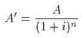
だけの価値しかもたない。このことは商業算術書を開けば直ちに解る。しかしこの方式の上に利子率決定の経済理論を立てるには、まずいかにして
Ａ’が決定するかを明らかにせねばならぬし、次に右に与えられた方程式に従ってｉがＡから導き出される所の市場を示さねばならぬ。私はこの市場を求めても、見出すことが出来ない。これ、私が（償却費と保険料とを捨象して）ｉを方程式
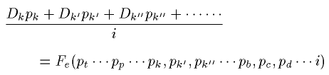
から導き出すことを主張するゆえんである。ここで p
k, p
k', p
k'' は新資本（K）、（K'）、（K''）の用役の価格であり、交換及び生産理論によって決定せられる。D
k, D
k', D
k'' ……は製造せられた新資本の量であって、その販売価格と生産費との均等を条件として決定せられる。語を換えていえばそれらは収入率の均一を条件として決定せられる。そしてこの条件はまた新資本の量の最大の利用の条件でもある。また
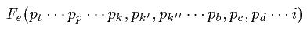
は貯蓄の額であって、各貯蓄者が、用役及び生産物の市場価格において直ちに消費すべき１と毎年消費すべきｉとのそれぞれの利用についてなした比較によって決定される。方程式の第一項は価値尺度財で表わした新資本の供給を示し、
明かにｉの減少函数である。第二項は価値尺度財で表わした新資本の需要を構成し、ｉの初め増加次に減少の函数である。そしてこの需要はあるいは貯蓄者自らにより、または貨幣資本の形をとったこれらの貯蓄を借り入れる企業者によってなされる。故に需要が供給より大であるかまたは供給が需要より大であるかに従って、人々は、ｉをあるいは下落せしめあるいは高騰せしめて、新資本の価格をあるいは騰貴せしめあるいは下落せしめ、方程式の両辺を相等しからしめるのである。注意深い読者は、証券となって現われる新資本が、騰貴下落の機構により、その収入に比例した価格で貯蓄と交換せられるときに、取引所の市場において現われる現象は、まさしく右に説いてきたようなものであることを認めるであろう。また注意深い読者は、繰り返していうが交換及び生産に関し先に述べた理論を基礎とする私の資本化の理論は、この種の理論があらねばならぬ所のものすなわち現実の現象の抽象的表現であり、合理的説明であることを認めるであろう。そしてこの点に関し、もし許されるならば、新資本の最大利用に関する私の理論が私の純粋経済学の全体系の妥当性をいかによく証明しているかを、読者は注意していただきたいのである。もちろん低い利子しか生まない用途から資本を引き上げて、これを、高い利子を生む用途にもっていくのが、社会に対し利用を増加するゆえんであることを認めたのは、大なる発見ではない。だがかくももっともらしい、否かくも明白な真理を数学的に証明し得たことは、この証明の基礎となった所の定義と分析とが有力であったことを証明しているように、私には見える。」
数学者はそれを判断するであろう。しかし既に今から私の立場を示しておいてもよいものがある。ジェヴォンスの理論と私の理論とは、現われるとまもなくヒューウェル（Whewell）及びクールノーの古い試みと共にイタリア語に訳出された。またドイツでは、初め忘れられながらもゴッセンの著作が、既に知られていたチューネンやマンゴルトらの著作に加えられた。その後またドイツ、オーストリア、イギリス、イタリア、アメリカにおいて、数理経済学の多数の文献が現われた
（一一）。このようにして形成せられる学派は、すべてのシステムのうちで、真に科学を構成すべきシステムとして異彩を放つであろう。数学を知らず、数学がいかなるものであるかをさえ正確に知らないで、数学は経済学の原理の解明に役立たぬときめ込んでいる経済学者に至っては、「人間の自由は方程式に表わすことが出来ない」とか、「数学はすべての精神科学に存する摩擦を捨象する」とか、またはこれらと同様の力しか無い他愛もないことを繰り返して去っていくがよかろう。彼らは、自由競争における価格決定の理論が数学的理論にならぬようにと努めている。だから彼らは数学を避けて、純粋経済学の基礎なくして応用経済学を構成していくか、それとも必要な根底もなく純粋経済学を構成して、はなはだ悪い純粋経済学またははなはだ悪い数学を構成するか、これらのいずれか一つを選ばねばならぬ。私は第四十章で私の理論のように数学的理論である所の理論の標本をあげた。これらの理論と私の理論との相異は、私が私の問題における未知数だけの方程式を得ようと努めたのに反し、これらの人々は二つの方程式によって一つの未知数を決定しようとしたり、二つ、三つまたは四個の未知数を決定するのに一つの方程式を用いる点にある。私は、人々が、これらの人々のこのような方法を、純粋経済学を精密科学として構成する方法に全く相反するものとして、疑われることを望む者である。
精密科学としての経済学が遠からず樹立せられるであろうか、または遠い将来においてしか樹立せられるに至らないであろうか。それらは私の問題ではなく、ここに論ずるを要しない。今日ではたしかに経済学は天文学の如く、力学の如く、経験的であり同時に合理的な科学である。我々は経済学の経験的性質でこの合理的性質を
蔽いかくしていたことが久しいが、何人もこれを批難し得ないであろう。ケプレルの天文学、ガリレーの力学がニュートンの天文学となり、ダランベールとラグランジの力学となるには、百年ないし百五十年二百年を要したのである。しかるにアダム・スミスの著書の出現とクールノー、ゴッセン、ジェヴォンスと私の試みとの間には、一世紀を経過していない。故に我々は、その持場にあって我々の職務を果したのである。純粋経済学の発祥地である十九世紀のフランスがこれに全く無関心であるとしたら、それはブルジョアの
狭隘な見解、十九世紀のフランスを、哲学、倫理学、歴史、経済学の知識のない計算者を作り出す領域と、少しの数学的知識もない文学者を出す領域の二つに分けた智的教養、に基いた見解によるのである。来るべき二十世紀においてはフランスもまた、社会科学を、一般的教養があって、帰納と演繹、推理と経験とを共に操るのに馴れた人の手に委ねる必要を感ずるであろう。そのとき数理経済学は、数理天文学、数理力学と並んでその地位を占めるであろう。そして我々がなしたことの正しさはそのときにこそ認められるであろう。
ローザンヌ、一九〇〇年六月
レオン・ワルラス
註一 この書の印刷用の紙型が出来上ってから、第三七六頁と第四一四頁とにわずかの修正を加え、かつ一九〇二年日付の二つの註を添えた。（一九〇二年記す）
註二 これら第二、第三部に代えて、

tudes d'
conomie sociale（1896）と
tudes d'
conomie appliqu
e（1898）との二巻を公にした。これで私の仕事はほぼ完成したわけである。
註三 Compte-rendu des s
ances et travaux de l'Acad
mie des sciences morales et politiques, janvier 1874. または Journal des
conomistes, avril et juin 1874. 参照。
註四 純粋経済学要論の第一版の第一分冊は、Principe d'une th
orie math
matique de l'
change 及び Equation de l'
change と題せられる二箇の論文に要約せられ、一は一八七三年パリの Acad
mie des sciences morales et politiques に、他は一八七五年十二月ローザンヌの Soci
t
vaudoise des sciences naturelles に報告せられた。第二分冊は Equation de la production 及び Equation de la capitalisation et du cr
dit と題する二論文に要約せられ、出版前に、一は一八七六年一月と二月、他は七月 Soci
t
vaudoise に報告せられた。これら四箇の論文は Teoria matematica della richezza sociale（Biblioteca dell'economista. 1878.）という書名の下にイタリー語に訳され、また Mathematische Theorie der Preisbestimmung der wirtschaftlichen G
ter（Stuttgart. Verlag von Ferdinand Enke. 1881）という書名の下にドイツ語に訳出された。（邦訳、早川三代治訳レオン・ワルラアス純粋経済学入門。）
註五 この論文は
tudes d'
conomie sociale 中に収められている。
註六 私は maxima（複数）といって、maximum（単数）といわない。Th
orie de la monnaie の初めの二編を、La Revue scientifique の一八八六年四月号に公にしたとき、この雑誌の校正係であるパリ人は、ラテン語の形容詞 maximum を名詞に一致せしめるべきものと考え、これを訂正した。私はこの校正係の処置は普通の用法に一致するものと考え、それを採用することにした。
註七 これらの研究のうち、Notes sur le 15 1/2 l
gal; Th
orie math
matique du bim
tallisme; De la fixit
de valeur de l'
talon mon
taire（Journal des
conomistes. 一八七六年十二月、一八八一年五月、一八八二年十月所載）;
quations de la circulation（Bulletin de la Soci
t
vaudoise des sciences naturelles. 一八九九年所載）は純理論の研究であって、これらは本書中に収められている。D'une m
thode de r
gularisation de la variation de valeur de la monnaie（一八八五年）; Th
orie de la monnaie（一八八六年）; Le probl
me mon
taire（一八八七年―一八九五年）は応用論の研究であって、これらは
tudes d'
conomie politique appliqu
e 中に収められている。
（訳者註） "encaisse d
sir
e" はケインズの交換方程式におけるｋと等しい意味をもっている。
註八 ここで自由競争の制度というのは、用役をせり下げつつ売る者及び生産物をせり上げつつ買う者の自由競争の制度を意味する。企業者の自由競争の場合には、一八八節に説明するように、これのみが価値を生産費の高さに一致せしめる唯一の方法ではない。また応用経済学は、この制度が常に最良の制度であるか否かを問わねばならない。
註九 メンガーの論文とベェーム＝バウェルク氏の著書とは、Revue d'
conomie politique（一八八八年十一、十二月、一八八九年、三、四月）によく分析されている。
註一〇 次の一節は本書第二版（一八八九年五月）の序文の一節そのままである。たとい私が、私の著書のうちでは、貯蓄の函数を経験的に導き出していても、既にこの序文のうちで、あるいは純収入率の増加函数としてあるいはその減少函数として、演繹的にこれを導き出す方法を示しているのを、読者は知られるであろう。
註一一 これら数理経済学の文献は、古い数理経済学文献と共に、M. T. N. Bacon が英訳したクールノーの訳書の巻末に I. Fisher が載せた数理経済学文献中に詳かである。この訳書は Economic Classics 中の一冊として一八九七年に公にされた。
［＃改丁］
第一編 経済学及び社会経済学の目的と分け方
［＃改丁］
第一章 スミスの定義とセイの定義
要目 一 定義の必要。二 フィジオクラシー。三 スミスによって経済学に課せられた二つの目的。（一）人民に収入すなわち豊富な生活を得せしめること。（二）国家に充分な収入を与えること。四 第一の観察。二つの目的は等しく重要であるが、いずれも本来の科学の目的ではない。経済学については別の見解がある。五 第二の観察。二つの活動は等しく重要であるが、異る性質をもっている。前者は利益、後者は公正。六 セイが考察した経済学は富が形成せられ、分配せられ、消費せられる方法の単なる記述である。七 自然主義者の見解は社会主義の排撃を容易ならしめるが部分的に不正確である。富の生産または分配については人は最も有用なまたは最も公正な組合せを選ばねばならぬ。八 経験的な分け方。九 ブランキ及びガルニエの不完全な訂正。
一 経済学の講義または概論の当初にまず、経済学それ自身、その目的、その分け方、その性格、その限界を限定せねばならない。私はこの義務を回避しようとは思わない。だが断っておかねばならぬが、この義務は、人々がおそらく想像するであろう以上に、果すに困難であり、簡単ではない。経済学の正しい定義は未だにないのである。既に経済学に与えられたすべての定義のうちで、科学上に獲得された真理の象徴である所の一般的で決定的な承認を得ているものは、一つとして無い。私はそれらのうち比較的に最も興味あるものを引用し批評し、しかる後私の定義を示すに努めたいと思う。そしてこれらのことをなす間に、我々が知っておかねばならぬ若干の著者名や著作名や時日等を挙げる機会を作るであろう。
二 最初の重要な経済学者の集団はケネーとその弟子達である。彼らは共通の学説をもち、一つの学派を作った。彼らは自らこの学説をフィジオクラシー（社会の自然的統治を意味する）と呼んだ。今日彼らをフィジオクラットと呼ぶのは、この理由に
基くのである。フィジオクラットの主な者は「経済表」の著者ケネーのほか、「自然的秩序と政治的社会の本質」（L'Ordre nature et essentiel des soci
t
s politiques, 1767）の著者メルシエ・ド・ラ・リヴィエール（Mercier de la Rivi
re）、「フィジオクラシーまたは人類に最も有利な統治の自然的構成」（Physiocratie ou constitution naturelle du gouvernement le plus avantageux au genre humain, 1767, 1768）、著者デュポン・デュ・ヌムール（Dupont du Nemours）、ボードー僧正（L'Abb
Baudeau）、ル・トローヌ（Le Trosne）である。チュルゴーはこの派の人ではない。フィジオクラットは、彼らの著作の書名で
解るように、経済学の領域を制限せずむしろ拡張した。社会の自然的統治の理論は、経済学よりはむしろ社会科学に属する。故にフィジオクラシーという語をもって経済学を表わすのは、広汎に過ぎる定義であろう。
三 アダム・スミスは、一七七六年に公にした国富論において、初めて経済学の材料を結合して統一体となすのに成功した。ところでスミスが経済学の定義を与えようとしているのは、「経済学の体系について」と題する第四編の序説の当初においてである。そこで彼が下している定義は次の如くである。「経済学、立法者または政治家の知識の一分枝として考えられる経済学は二つの異った目的をもっている。その一つは人民に豊富な収入すなわち豊富な生活を得せしめること、より適切な言葉でいえば、人民をして自ら豊富な収入すなわち豊富な生活を得ることの出来る地位に置くことにある。他の一つは国家または公共団体に公務に必要な収入を得せしめることにある。一言にいえば、経済学は人民と主権者とを富ますことを目的とする。」この定義は経済学の父と呼ばれる人によって下されたものではあり、かつまた彼の著作の当初に掲げられたものではなくて、自ら問題の内容を充分に知り得た後に、その中央部に取扱われたものであるから、我々の充分な研究に値する。それには考慮せられるべき二つの点が含まれていると思う。
四 人民に豊富な収入を得せしめ、国家に充分な収入を得せしめること、それらはたしかにはなはだ重要な二つの目的である。そして経済学がこれらの目的を達せしめるとすれば、経済学は著しく我々の役に立つわけである。けれども私はいわゆる科学の目的がそこにあるとは思わない。実際本来の科学の特質は有益なまたは有害な結果に無関心に、純粋の真理を追求していく所にある。だから幾何学が二等辺三角形は二等角三角形であるとの命題を立言するとき、また天文学が遊星は太陽が中心をなしている楕円の軌道をめぐるとの命題を立言するとき、これら幾何学や天文学は本来の科学である。これら二つの真理の第一が他の幾何学上の真理と同じく建築の骨組に、石材の切り方に、家屋の建設に、貴い結果を
齎らすことも可能である。またこれら二つの真理の第二が天文学上のすべての真理と共に、航海に大いに役立つことも可能である。しかし大工も石工も建築家も航海者も、また大工の理論家、石切の理論家、建築、航海の理論家さえも、学者ではなく、真の意味の科学者として科学を研究しているのでは無い。ところでスミスがいった二つの操作は、幾何学者天文学者がなすそれに類するものではなく、建築家航海家のそれに似ている。故にもし経済学がスミスのいった通りのもので、その他のものでないとすれば、それはたしかにはなはだ興味ある研究ではあるが、しかし本来の科学ではないであろう。我々は経済学はスミスがいったものとは別なものであると云わねばならない。人民に豊富な収入を得せしめようと思う前に、また国家に充分な収入を得せしめようと思う前に、経済学者は純粋に科学的な真理を追求し、把握するのである。物の価値は、需要せられる量が増加し、供給せられる量が減少するときに増大するといい、反対の二つの場合にはこの価値は減少するといい、利子率は進歩的社会においては低下するといい、地代に課せられる租税はすべて地主の負担に帰し、土地の生産物の価格を変化せしめないというとき、経済学は純粋の科学的研究をなしているのである。スミス自身もこのような純粋の科学的研究をしている。彼の弟子マルサスは「人口論」（一七九八年）において、リカルドは「経済学及び課税の原理」（一八一七年）において、より多く純粋科学的研究をなしている。故にスミスの定義は、本来の科学として考えられた経済学の目的を指示しなかったという意味において不完全である。まことに経済学が人民に豊富な収入を得せしめ、国家に充分な収入を得せしめることを目的とするというのは、幾何学が堅牢な家屋を建築することを目的とするといい、あるいは天文学は海上を安全に航海することを目的とするというに等しい。一言にいえばそれは科学を応用の方面から定義しようとするものである。
五 スミスの定義についての右の考察は、科学の目的に関するものである。私はその性質についても同様に重大な考察をしておかねばならぬ。
人民に豊富な収入を得せしめかつ国家に充分な収入を得せしめることは、共に重要にして微妙な活動ではあるが、しかし全く異る性質の活動である。前者は農業工業商業を一定の状態に置こうとすることから成立つ。これらの状態が有利なものであるかまたは不利であるかに従い、農業・商業・工業の生産はあるいは豊富となり、あるいは減少する。だから既に知られているように、職人組合、同業組合、親方の制度、厳重な干渉制限の制度、公定価格制度等の下においては、産業は悩み続け、空しく時を過した。今日では労働の自由と交換の自由の制度の下に産業は繁栄している。条件は前の場合には有利であり、後の場合には不利である。だが二つの場合ともに不利となりまたは有利となったものは、個人の利益のみである。冒されたものまたは尊重せられたものは正義ではない。国家に充分な収入を得せしめようとする場合は、これと異る。そこには国家の収入を構成するに必要なものを、個人の収入から徴収する活動がある。これは、よい条件で行われることもあれば、悪い条件でなされることもある。そしてこれらの条件がよいかまたは悪いかによって、国家の収入が充分となりまたは不充分となるのみでなく、また個人が公正に取扱われるかまたは不公正に取扱われるかの結果が生じてくる。すなわち各人の負担が公正になされるか、または不公正のためにある者が犠牲に供せられ、他の者が特権を得ているかの結果が起る。このようにして、社会のある階級が租税の負担を免れ、それがある他の階級にのみ課せられたことがあった。それが明白な不正義であることは、今日認められている所である。要するに人民に豊富な収入を得せしめることは有益な仕事をなすことであり、国家に充分な収入を供給することは公正の仕事をなすことである。利用と公正、利益と正義とははなはだしく異る種類の観点である。従ってスミスは例えば経済学の目的はまず第一に社会的収入を豊富ならしめる生産条件を示すにあり、次に作られた生産物を個人と国家との間に分配する条件を示すにあるといって、この区別を明らかにしたらよかったと思う。この定義の方がよりよいであろう。だがこれをもってしてもなお、経済学の真に科学的な部分は依然として明らかにせられていない。
六 歴史的順序からはスミスの後に来るジ・ベ・セイ（Jean-Baptiste Say）は経済学上最も有名な名の一つであるが、彼はスミスの定義について次の如くいう。「経済学は、富が形成せられ、分配せられ、消費せられる道行を知らしめるものだ、と私は言いたい。」彼の著書
［＃「著書」は底本では「著者」］は一八〇三年に第一版を出し、第二版は執政政府の検閲に基き発売を禁止せられ、第一帝国の転落後にしか公にせられなかったが、それは「経済学概論、または富が形成せられ、分配せられ、消費せられる方法の簡単な解説」（Trait
d'
conomie politique, ou simple exposition de la mani
re dont se forment, se distribuent et se consomment les richesses）と題せられている。この定義とこの書物が採った分け方とは、経済学者が一般に承認し、追随しているものである。それはたしかに、人々がクラシックと考えようとしている定義であり、分け方である。だが私は、これに従い得ないと主張するのを許してもらわねばならぬ。そしてその理由は、この定義と分け方とを成功せしめたその点にまさしくあるのである。
七 一見して明らかであるように、セイの定義はスミスのそれと異るのみでなく、ある意味においてはそれと正反対である。スミスを信ずる限り全経済学は科学であるよりはむしろ技術であり（第四節）、セイに従えばそれは自然科学である。セイによれば、富は全く自然的ではないにしても、少くとも人間の意志とは独立の態様で形成せられ、分配せられ、消費せられるのであり、全経済学はこの態様の単純なる解説であるようである。
セイがこの定義のうちで経済学に与えた自然科学的色彩は、経済学者を
魅きつけた。実際に経済学者は、社会主義者との闘争において、この考え方の助けを借りたことが大である。経済学者は労働組織改造のすべてのプラン、所有権制度の改造のすべてのプランを先験的に排斥した。換言すれば何らの議論をなすことなく、すなわち経済的利益に反するものとしてでもなく、また社会的正義に反するものとしてでもなく、ただ人為的結合を自然的結合に代えるものとして排斥した。セイはこの自然主義的な見方をフィジオクラットに借り、かつフィジオクラットが工業及び商業生産に関し自らの学説を要約した方式「自由放任」（Laissez faire, laissez passer）によって動かされた。プルードンは自由主義派の経済学者に宿命論者という形容詞を
冠せたが、これはセイのためであった。この派の学者がいかなる程度までこの見方を押しつめていったかは、我々の想像も及ばないほどである。それを知るには経済学辞典（Dictionnaire d'
conomie politique, 2 vol., 1851-3）中の記事、例えばシャール・コックラン（Charles Coquelin）が執筆した競争、経済学、産業、コッシュー（Cochut）が執筆した道徳等を読まねばならぬ。そこには最も意味深い諸句が見出される
［＃「見出される」は底本では「見出させる」］。
不幸にしてこの見方ははなはだ便利ではあるが、はなはだしく
誤でもある。もし人間が高等な動物に過ぎず、例えば本能的に働き本能的に風習を作っている蜜蜂の如くであるとしたら、社会現象一般特に富の生産、分配、消費の解説と説明とは、たしかに自然科学に過ぎず、博物学の一分科、蜜蜂の博物学の続編をなす人間の博物学に過ぎないであろう。だが事実はこれと全く異る。人間は理性と自由とを有し、独創力を有し、進歩をなし得るのである。富の生産と分配に関しては、一般に社会組織のすべての事柄においてと同じく、人間は善と悪との選択をなし得て、悪から次第に善へ向いつつあるのである。だから人々は組合制度、統制の制度、公定価格の制度から、商工業自由のシステム、レッセ・フェール、レッセ・パッセのシステムに、奴隷制度から賃銀制度に移ってきた。最近の制度は古い制度に優っているが、こうなったのは、これらが古い制度よりもより自然的であるが故ではなく（これらは共に人為的であり、前者は後者より人為的である。けだし新しい制度は古い制度の後にしか現われないから）、利益と正義とにより多く合致しているからである。自由放任が必要とされるのは、この合致の証明をなした後においてのみである。社会主義的制度が排斥せられねばならぬとしたら、それは利益と正義とに相反する制度でなければならぬ。
八 スミスの定義は不完全であるに過ぎないが、セイの定義はこれに劣り、不正確である。またこの定義から出てくる分け方も全く経験的であると、私は附言しておく。所有権の理論、租税の理論は実はまず孤立して考えられた社会人の間の、次に国家として集団的に考えられた人の間の富の分配の唯一の理論の各半面に過ぎないもので、かつ二つは共に道徳の原理に密接に依存しているのであるが、それらは
分たれて一方所有権の理論は生産理論に、他方租税の理論は消費理論に投げ込まれ、共に全く経済的な観点からその理論が立てられている。反対に明らかに自然現象の研究としての性質を
具えている交換理論は分配理論の一部をなしている。もっとも彼の弟子らはこれらの勝手な分類を自由に解釈して、ある者は交換価値の理論を生産理論の中に、ある者は所有権の理論を分配の理論の中に、任意に組み入れている。このようにして今日の経済学は形成せられ教授せられている。しかしこれでは枠が破れていて、ただ表面的に維持されているに過ぎないのではないか。そしてかかる状態においては、経済学者の権利と義務とは、まず入念に科学の哲学を研究することにあるのではあるまいか。
九 セイの弟子らのある者は、セイの定義の欠点を知っていたが、あえて修正しなかった。アドルフ・ブランキ（Adolphe Blanqui）はいっている。「ドイツ並びにフランスでは、今日経済学は、一般に考えられている領域を脱出している。ある経済学者は経済学を普遍的科学となそうとし、他の人は狭いかつ通俗的に考えられている範囲に限ろうとする。フランスにおいてこれら両極端の意見の間に存する
争は、経済学はある所のものの説明であるかまたはあるべき所のもののプログラムを立てるべきものであるか。他の言葉でいえば、それは自然科学であるか規範科学であるかということに関する。私は、経済学がそれらの二つの性質を具えたものであると思う。」ブランキはかかる動機からセイの定義を支持したがこの動機はかえってこれを弱からしめるであろう。
ブランキに次いで、ジョセフ・ガルニエ（Joseph Garnier）はいっている。「経済学は自然科学であり、同時に規範科学である。これらの二つの観点から、経済学は、ある所のものと、物の自然的流れに従い正義の観念に一致してあるべき所のものとを証明する。」そこでガルニエはセイの定義に少しく附け加えて、それを修正しようとした。曰く、「経済学は富の科学である」すなわちいかにして富が、個人及び社会の利益となるように、最も合理的に（もちろん正義に合するように）生産せられ、分配せられ、消費せられるか、またはせられるべきかを決定することを目的とする科学である」と。ここでガルニエは彼の学派の軌道から離れようとして、真剣でかつ賞讃すべき努力をなしている。しかし二つの定義を接ぎ合して作った合金が、いかに奇妙で支離滅裂であるかを不思議にも彼は認めなかった。これは、経済学者に哲学がないことの好例であって、明快と正確とを主な特質とするフランス経済学者の精神の美点を打ち消してしまう。経済学はいかにして自然科学であり、同時に規範科学であり得るか。いかにしてかかる科学を考え得るか。一方においていかにして富が最も公正に分配せられねばならぬかを研究の目的とする科学が、他方においていかにして富が最も自然的に生産せられるかを研究の目的とする自然科学となり得るか。またこの自然科学は富を豊富に生産すべき技術にもならねばなるまい。要するにセイの定義もスミスのそれに帰するのであって、経済学の真の自然科学的性質は依然として明らかにせられていない。
私はこれを明らかにしようと思う。必要ならば経済学を自然科学、規範科学、政策に分けよう。そしてそれがため、我々はまずあらかじめ、科学と政策と道徳との区別を明らかにせねばならない。
［＃改ページ］
第二章 科学と政策と道徳との区別
要目 一〇 政策は忠告し、命令し、指導する。科学は観察し、記述し、説明する。一一 科学と政策の区別と理論と実際の区別とは全く別である。一二 科学は政策に光を与える。政策は科学を利用する。一三 一つの科学によって与えられる理論は多くの政策に光を与え得る。一つの政策は多くの科学によって与えられる理論を利用することが出来る。一四、一五 区別は優れているが不充分である。一六 科学は事実の研究である。一七 第一の区別。自然力の働きをその起源とする自然的事実。人間の意志の作用にその起源をもつ人間的事実。自然的及び人間的事実は純粋科学（狭義の科学と歴史）の対象である。一八 第二の区別。産業上の人間的事実、すなわち人格と物との関係。道徳上の人間的事実、すなわち人格と人格との関係。一九 産業的事実は応用科学すなわち政策の対象である。道徳的事実は精神科学すなわち道徳学の対象である。二〇 真。利用。善はそれぞれ科学、政策、道徳の規準である。
一〇 既に幾年かを経過していることであるが、好著「信用及び銀行概論」（Trait
du cr
dit et des banques）の著者でまた「経済学辞典」（Dictionnaire d'
conomie politique）の執筆者中最も活動的なかつ尊敬すべき人の一人であったシャール・コックラン（Charles Coquelin）は、この辞典のうち経済学（
conomie politique）と題する項において、経済学の定義は未だに完成していないといった。この主張を助けるために彼は、私が既に述べたスミス、セイの定義やシスモンジ、ストルク（Storch）、ロッシ（Rossi）らの定義を示し、それらのいずれも他を排して採らねばならぬほど際立って優れていないと断言し、かつまたこれらの人は自分の著書において自分の定義に従っていないといっている。次に彼は、経済学を定義しようとする者はまずそれが科学であるか、または政策であるか、あるいはそれらの両者であるかを問うべきであり、ことに政策と科学との区別を明らかにすべきであると注意している。これはまことに明敏な注意である。この点について彼が述べている考察は目立って正しく、かつ問題は常に同じ点にあるのであるから、我々はそれを繰り返すほかはない。彼はいう、「政策は従われるべき命令または規則から成り立っている。科学は、ある現象または観察せられたまたは明らかにせられた関係の知識から成立する。政策は忠告を与え、命令し、指導する。科学は観察し記述し、説明する。天文学者が天体の運行を観察し記述するときには、科学を研究している。しかし一度この観察が終了すれば、天文学者は、航海に応用せられる規則を導き出すであろうが、この場合には政策を研究している……かように現実の現象を観察し記述する所に科学がある。命令を下し、規則を規定する所に政策がある。」
一一 著者はなお註として一つの注意を与えているが、これは科学と政策との区別を完成したもので、ここに引用する価値がある。彼はいう、「我々が科学と政策との間に立てる真の区別は、人々が理論と実践との間になす区別とは何ら共通なものはない。政策の理論もあれば科学の理論もある。そして実践と矛盾することがあり得るであろうといい得るのは、政策の理論についてだけである。政策は規則を命令するが、しかしこれらの規則は一般的である。従ってこれらの命令は、たとい正しいものであっても、ある特別な場合に実践と調和し得ないと考えても不合理ではない。だが何ものをも命ぜず、何ものをもすすめず、ただ観察し説明するに止まる科学にあっては、そうではない。科学はいかなる意味においても実践と衝突することが出来ない。」
一二 コックランは政策と科学とをかく区別した後、それら各々の職分と重要さとを指摘している。彼はいう、「科学的真理が一度よく認識せられ、導き出されたとき、人間の事業の経営に適用せられるべき規則を、これらから導き出そうとするのに対して、私共は不平でもなければ、またこの
企を奇妙だとも思わない。科学的真理が何らの役にも立たぬのは、よいことではない。これらを利用する唯一の方法は、これらから政策を演繹することにある。既にいったように、科学と政策との間には密接な親族関係がある。科学は政策に光明を与え、政策の方法を正しからしめ、その行手を照し指示する。科学の援助が無ければ、政策は一歩ごとに
躓きながら
跚き歩むことしか出来ない。他方、科学が発見した真理を価値あらしめるものも政策であって、この政策が無ければ、科学の真理も無益である。また科学的研究の主な動機はほとんど常に政策である。人が、知るための興味のみで科学的研究をなすことは稀である。一般に人は、役立つという目的を研究に求めている。そしてこの目的を
充し得るのは、政策によってのみである。」
一三 しかし彼は科学と政策との間に置くべき区別を同様に強く主張し、かつこの区別を明らかにするために最後の注意を与えているが、これもまた引用の価値がある。彼はいう、「科学と政策とはしばしば多数の接触点をもっているとしても、政策と科学の範囲と輪廓とが同一であるのには、よほど多くの接触点が無ければならぬと考えられるのであって、それほどに右に述べてきた区別が強調せられる。科学が提供する理論は種々の政策によって利用せられることがあり得る。広がりの関係の学問である幾何学は、測量師・技師・砲術家・航海家・建築家の仕事を照し指導する。化学は薬剤師・染物屋・多数の工業に援助を与えている。物理学が提供してくれた一般的理論を、種々の政策がいかに利用しつつあるかを誰が正確にいい得るであろうか。反対に政策は、多くの科学によって提供せられるべき理論から光明を得ることが出来る。ただ一つの例だけを引けば医学すなわち治療の技術は解剖学・生理学・化学・物理学・植物学の理論と結果を利用している。」
一四 最後にコックランは、科学と政策との区別がいかに経済学の定義とその内容の分け方に応用せられるのに適しかつ有益であるかを、人々に感知せしめようと努力し、次いで附言していう、「科学と政策との間に今から更に純粋な区別を設け、これらの各々に異る名称を与えるように努めるべきであるか、否。私には、この区別を明らかにするだけで足るのであり、それ以上のことは、この問題をよりよく
知悉した者によって、いつかなされるであろう。」
この遠慮は意外である。極めて正当な思想をもっているこの著者が、この思想を実行に移せば与えられるであろう所の愉快と名誉とを、かくも
故らに捨てたのは、奇異である。だがそれにも増して奇妙なのは、著者が、何といおうと実際において、経済政策と経済学の区別をなし、経済学の真の目的を決定しようとしながら、それに成功しないで、政策の要素と科学の要素とを混同し、かつ私がセイについて批評しておいたそして彼の弟子らも
脱け切れなかった自然主義的重農主義的見方（第七節）を経済社会についてもっていて、そのためにこの見方を消散せしめるどころか、かえって自ら指摘し非難した混同に陥っていることである。彼が「経済科学の目的をなすものは、富かそれとも富の根源である産業か」と問い、また、「経済学の研究の目的として、人々が人間の産業よりはむしろ富をとったのはいかなる理由から来ているか」を考え、また「この誤謬の結果」はいかなるものであるかを考え、更にまた経済科学は、結局、人間の自然史の一分科であるといっているとき、彼はまさしくこの混同をしているのである。最も綿密な注意を払いながらこのような迷路に入るのは不可能であるはずである。
一五 この結果は、科学と政策とを区別する思想さえも、一見見えるようには現在の事情に適するものでないことを信ぜしめる性質を真に帯びている。しかしながら実はこの区別は経済学には完全に適用せられる。そして科学である所の富の理論すなわち交換価値及び価値の理論のあること及び政策である所の富の生産論すなわち農業・工業・商業の理論のあることを信ずるには、学派に囚われることなくわずかに反省するところがあれば足りるのである。ただここで直ちにいっておかねばならぬが、この区別に基礎があるとしても、同時にこの区別は富の分配を度外する故に、不充分である。
直ちにこの確信を得るため、経済学はある所のものの説明であると同時にあるべき所のもののプログラムであると考え得られるといったブランキの所説を想い起してみる。ところであるべき所のものは、あるいは利用または利益の観点から、あるいは公正のまたは正義の観点からのそれなのである。利益の観点からあるべき所のものは応用科学または政策の対象であり、正義の観点からあるべき所のものは道徳学または道徳の対象である。ブランキやガルニエが取扱っているのは、正義の観点から見てあるべき所のものなのである。なぜなら彼らは、経済学は道徳学であるといい、法や正義の概念を論じ、富を最も公平に分配すべき方法を論じているからである（第九節）。反対にコックランはこの見方を明らかにとっていないのであるが、ただ氏は政策と科学の区別を指摘しながら、政策と道徳との区別を指摘することを忘れている。我々はいかなるものをも見逃してはならない。我々は合理的に完全に決定的に区別をなさねばならぬ。
一六 我々は科学と政策と道徳とを相互に区別しなければならぬ。他の言葉でいえば、特に経済学、社会経済学の哲学を明らかにするために、科学一般の哲学の概要を論じなければならぬ。
科学は本体を研究するのでなくして、本体を場面として現われる事実を研究するものであることは、既にプラトーンの哲学によって明らかにせられている。本体は去り、事実は永く残っている。事実とその関係とその法則とがすべての科学的研究の目的である。そして科学は、それが研究する目的すなわち事実の差異によってのみ分かれるのである。だから科学を分けようとすれば、事実が分けられねばならない。
一七 ところでまず世界に発生する事実は二種あると考えられ得る。その一は盲目的で
如何ともなし難い自然力の働きをその起源とするし、他は人間の聡明で自由な意志にその根源をもつ。第一種の事実の場面は自然である。これらの事実を我々が自然的事実と呼ぶのはこの理由による。第二種の事実の場面は人間社会である。我々がこれらの事実を社会的事実（faits humanitaires）と呼ぶのは、この理由による。宇宙には盲目的でどうすることも出来ない力と並んで、自ら知り自ら抑制する力がある。これは人間の意志である。おそらくはこの力は、自ら信じているほどには、自らを知り、自らを抑制してはいないであろう。このことは、この力の研究だけが理解せしめてくれよう。しかしそれは当面の問題ではない。今重要なのは、この力は自らを知りまたまた少くともある限度の中では抑制し得ることである。そしてこの事実が、この力の効果と他の力の効果との間に深い差異を生ぜしめるのである。自然力の効果については、我々はこれを認識し、識別し、説明することよりほかに為し得ないのは明らかであり、また人間の意志の効果については、まずこれを認識し識別し、説明し、更にこれを支配せねばならぬのは明らかである。これらのことが明らかであるというゆえんは、自然力は行動の意識をもたず、従ってなお更に必然的に動くよりほかに働きようがないからであり、反対に人の意志は行動の意識をもち、かつ種々な態様に働き得るからである。故に自然力の効果は、純粋自然科学または狭義の科学と呼ばれる研究の対象となる。人間の意志の効果はまず純粋精神科学または歴史と称せられる研究の対象となり、次に他の名称例えば政策、道徳等の名を冠せられる所の既に我々が述べてきたような研究の対象となる。だからコックランが科学と政策との間になした区別（第十節）は正当であることになる。「政策は忠告を与え、命令し、指揮する。」なぜかというに、それは人間の意志の働きを根源とする事実を対象とするからであり、また人間の意志は少くともある点までは聡明で自由な力であって、人の意志に忠告を与え、ある行動を命じこれを指導することが出来るからである。科学は「観察し、解明し、説明する。」なぜなら、科学は自然の力の働きを原因とする事実を対象とするからであり、自然の力は盲目で
如何ともなし難いから、これに対してはこれらの効果を観察し、解明し説明するほか何事をもなし得ないからである。
一八 かようにして私は、コックランのように経験的にではなく、人間の意志の聡明と自由との考察から、科学と政策との区別を理論的に見出した。今は政策と道徳との区別を見出すことが問題である。だが人間の意志の聡明と自由とを考察しまたは少くともこの事実の一つの結果を考察すれば、社会的事実を二つの範疇に分つ原理を得ることが出来よう。
人間の意志が聡明であり自由である事実によって、宇宙のすべての存在は、人格と物との二大種類に分れる。自らを
識らないもの、自らを抑制しないすべてのものは物である。自らを識り自らを抑制する者は人格である。人間のみが人格であり、鉱物、植物、動物は物である。
物の目的は人格の目的に合理的に従属している。自覚を有せず自らを抑制しない物は、その目的の追求に対し、またその使命の実現に対し責任をもたない。また物は悪事も善事もなし得ないのであって、常に全く罪が無い。それは純粋の機械装置と同一視される。この点では動物も鉱物、植物と異らない。動物の衝動はすべての自然力の如く盲目的で
如何ともし難い力に過ぎない。これに反し人格は自覚を有し自らを抑制するという事実のみによって自らその目的を追求せねばならぬという負担を負わされ、その使命の実現の責任を負うのである。もしこの使命を実現すれば、人格は価値があるのであり、もしこの使命を実現しなければ人格は無価値なのである。だから人格は物の目的を自己の目的に従属せしめる能力と自由とをもっている。この能力と自由とは特別な性質をもっている。すなわちそれは道徳的力であり、権利である。これが物に対する人格の権利の基礎である。
しかしすべての物の目的はすべての人格の目的に従属しているのではあるが、ある人格の目的は、他のいかなる人格の目的にも従属していない。もし地上にただ一人の人間しかいないとしたら、彼はすべての物を支配し得るであろう。けれども人は地上に一人ではない。地上にあるすべての人間は
互に相等しく人格であるから、同じ様に自らの目的を追求する責任を有し、自らの使命を実現する責任をもっている。これらすべての目的、これらすべての使命は互にそれぞれその処を得なければならぬ。そこに人格相互の間の権利と義務の相互関係の根源があるのである。
一九 これによって見ると、社会事実のうちに深い区別がなされなければならぬことが解る。一方自然力に対して働きかけた人間の意志と活動から来る所のもの、すなわち人格と物との関係を区別せねばならぬ。他方他人の意志または活動に対して働く人の意志または活動から来る所のもの、すなわち人格と人格との関係を区別せねばならぬ。これら二つの範疇の事実の法則は本質的に異る。自然力に対して働く人間の意志の目的、人格と物との関係の目的は、物の目的を人格の目的に従属せしめるにある。他人の意志の領域に影響を及ぼす人間の意志の目的、人格と人格との目的は、人の使命の相互の調整にある。
故に、おそらく便利であろうと思われるが、私はこの区別を定義によって定め、第一の範疇の事実の全体を産業（industrie）と呼び、第二の範疇の事実の総体を道徳現象（moeurs）と呼ぶ。産業の理論は応用科学または政策と呼ばれ、道徳現象の理論は精神科学または道徳学と呼ばれる。
従って一つの事実が産業の範疇に属するには、またこの事実の理論が何らかの政策を構成するには、この事実が人間の意志の働きにその起源を有し、かつ物の目的を人格の目的に従属せしめるという観点から人格と物との関係を構成していなければならぬし、またこれだけで足るのである。読者は私が先に引用した政策の例を再び採ってみるなら、それらのいずれにもこの性質があることが解るであろう。例えば既に述べた建築は家の建築要素として木材及び石材を、造船は船舶建造の要素として木材及び鉄を、航海は綱具の製造、帆の据え附けまたは操縦の材料として大麻を用いる。海洋は船舶を支え、風は帆を膨脹せしめ、空と星とは航海者に航路を指示する。
一つの事実が道徳現象の範疇に属するには、そしてこの事実の理論が道徳学の一部門であるためには、この事実が常に人間の意志の働きにその起源を発し、人格の使命の相互の調整という点から見ての人格と人格との関係を成していなければならぬし、またそれだけで足りる。例えば結婚または家族等に関し、夫と妻、親と子の職分と地位を定めるものは道徳である。
二〇 科学、政策、道徳とはこのようなものである。それらのそれぞれの規準は真、利用または利益、善または正義である。さて社会的富及びそれに関係のある事実の完全な研究のうちに、この種の知的研究の一つまたは二つが材料となるものがあろうか、あるいはそれらの三つとも含まれるであろうか。これは、私が富の概念を分析しつつ次章において明らかにしようとする問題である。
［＃改ページ］
第三章 社会的富について。稀少性から生ずる三つの結果。
交換価値の事実と純粋経済学について
要目 二一 社会的富は稀少な物、すなわち（一）利用があり、量において限りがある物の総体である。二二 稀少性は科学的用語である。二三、二四、二五 稀少な物のみが、またすべての稀少な物は（一）占有せられ（二）価値を有し交換し得られ（三）産業により生産し得られ増加し得られる。二六 経済学、交換価値の理論、産業の理論、所有権の理論。二七 交換価値の事実。市場において生ずる。二八「小麦は一ヘクトリットル二四フランの価値がある。」これは自然的事実である。二九 これは数学的事実でもある。 5vb=600va 三〇 交換価値は評価され得る大きさである。交換価値と交換の理論すなわち社会的富の理論は物理数学的科学である。合理的方法。代数的用語。
二一 物質的なまたは非物質的な物（物が物質であるか非物質であるかは何ら関する所ではない）であって稀少なもの、すなわち我々にとって利用があるものであると同時に量に限りがあって我々が自由勝手に獲得出来ないすべての物を
社会的富（richesse sociale）と呼ぶ。
この定義は重要である。私はそれに含まれた言葉を明確にしておく。
物は何らかの使用に役立ち得るときから、すなわち何らかの欲望に
適いこれを満足し得るときから利用があるという。だから、通常の会話では必要と贅沢との間に快適と
列べて有用を分類するのであるが、ここではこれらの語のニュアンスを問題としない。必要・有用・快適・贅沢これらすべては我々にとっては程度を異にする利用を意味するに過ぎない。またここでは、利用のある物が対応し、これが満足することの出来る欲望が、道徳的であるかまたは不道徳的であるかを問わない。ある物が病人の治療の目的のために医師によって求められるか、または人を殺害しようとして殺人者によって求められるかは、私共の観点からは全く興味のない問題であるが、他の観点からは重要な問題である。この物はこれら二つの場合に共に利用があるのみでなく、後の場合に利用がより多いこともあり得る。
我々の各々がある物に対してもっている欲望を欲するままに満足し得るほど多くのこの物の量が存在しないとき、この物は我々の処分に対し限られた量しかないという。世には、全く無い場合を除けば、常に無限量が我々の処分に
委せられているような若干の利用がある。例えば大気、太陽が上っているときの太陽の光線と熱、湖水の岸辺の水、河川の岸の水等は、何人にも不足の無い程度に存在し、何人も欲するままの量を採ることが出来る。これらの物は利用を有するが一般に稀少ではなく、社会的富を成さない。例外的にこれらの物も稀少となることがあるが、そのときにはこれらの物も社会的富の一部を成すことが出来る。
二二 これによって、
稀少（rare）と
稀少性（raret
）という語がここでいかなる意味のものであるかが解るであろう。この意味は、力学における速度、物理学における熱という語の意味の如く科学的である。数学者や物理学者にとっては速度は
緩徐に対立するものではなく、熱は寒さに対立するものではない。緩徐は数学者にとってはより少い速度に過ぎないし、寒さは物理学者にとってより少い熱に過ぎない。科学上の用語では、物体は動き始めれば速度をもち、何らかの温度をもち始めれば熱をもつ。それと同じように、稀少性と豊富とは互に矛盾しない。いかに豊富に存在する物であっても、その物に利用があり、量において限られているなら、経済学上では稀少である。このことは、ある物体がある時間中にある空間を通過すれば、この物は力学上では速度をもつといわれるのと全く異る所がない。しからばあたかも、通過せられた空間のこれを通過するに要した時間に対する比、または一単位時間にのうちに通過せられた空間が速度といわれるように、稀少性とは、利用の量に対する比、または一単位の量のうちに含まれる利用をいうのであろうか。しばらく私はこの点に対する断定を下すのを差控え、後に再びこの論究に立ち帰るであろう。ところで利用のある物はその量の制限せられている事実によって稀少となるのであるが、この結果として三つの事情が生れる。
二三 （１）量において限られかつ利用のある物は、専有せられる。無用の物は、専有せられない。何らの用途にも役立たない物は、何人もこれを専有しようと思わない。また利用のある物であっても無限の量のあるものは専有せられない。まずこのような物は、無理に押し付けることも出来ねばまた差押えることも出来ない。人々はこれらの物を共有の状態から取り去ってしまうとしたところで、無限の量があるから、出来るものではない。大部分を各自の処分の下に置き得るのならとにかく、わずか一部分を所有し貯えておいて、何になるか。何かにこれを利用しようとするのか。だが、何人も常にこれを獲得出来るのに、誰がこれを需要するのか。それとも自らこれを使用するためなのであるか。だが常にいつでもこれを獲得出来ることが確実であるとしたら、これを貯蔵して何の役に立つか。空気は誰にも与えることが出来ないもので、また自ら呼吸する必要を感ずる場合には、口を開けばこれを得られるのであるから空気の貯蔵をしておく必要はない（通常の場合をいうのである）。これに反し限られた量しか存在しない利用のある物は、専有せられ得る物であり、専有せられる。まずそれらは、強制的に押しつけることも出来れば、差押えされることも出来る。ある数の個人のみが、この物の存在する量を集めて、共有の領域にこれを残しておかないようにすることが、たしかに可能である。そしてこの操作を行えば、これらの人々には二重の利益がある。第一に彼らはこれらの物の貯蔵を確保し、これらを利用して自らの欲望を充すに役立たせる可能性を準備しておく。第二にもし彼らがその貯蔵の一部しか消費しようと欲しないかまたは消費し得ないとしても、この過剰量と交換に、その代りとして消費すべきかつ量において限られた他の利用を獲得する能力を保留しておく。しかしこれはまた私共が別に取扱わねばならぬ所の異る事実となってくる。今ここでは専有（従って合法的なまたは正義に一致せる専有である所有権もまた）は社会的富にしか存在せず、またすべての社会的富に存在すると認めておくに止める。
二四 （２）利用があって量において限られた物は、先に一言触れたように、価値がありかつ交換せられ得る。稀少な物が一度専有せられると（そして稀少なもののみが専有せられ、また専有せられる物はすべて稀少である）これらすべての物の間に一つの関係が成立する。この関係とは、これら稀少な物の各々は、それに固有な直接的利用とは独立に、特別な性質として、一定の比例で他の各々と交換せられる能力をもっているということである。もし人がこれら稀少な物の一つしかもっていないとすると、これを譲渡してこれと交換に、自らもっていない他の稀少な物を得ることが出来る。そして人がこの稀少な物をもっていないとすれば、自ら所有している稀少な他の物を与えることを条件としてしか、これと交換にこの稀少な物を得ることが出来ない。もしこの物をも所有せず、またこれと交換に与えるべき何ものも
有たないとすれば、このままで済ますほかはない。交換価値の事実とはこのようなものであり、所有権の事実と同じく、社会的富にしか存在せず、またすべての社会的富の上に存在する。
二五 （３）利用があって量において限られた物は産業により生産せられ得る物であり、または増加し得られるものである。だから規則的組織的努力によってこれらを生産し、その数を出来るだけ多く増加するのが利益である。世の中には雑草や何らの役にも立たない動物のような利用の無い物（有害な物までもいわぬとしても）がある。人々はこれらの物のうちに、これらの物を無用の範疇から有用の範疇に移さしめ得る性質がないかと、注意深く探索する。また利用はあるが量において限り無く存在する物もある。人々はこれを利用しようとはするが、その量を増加しようとはしない。最後に利用があって量において限られた物すなわち稀少な物がある。この最後のもののみが、現在の限られた量をより多くする目的をもつ研究または行動の対象となることが出来るのは明らかである。またこの最後の物は例外無くかかる研究または行動の対象となることが出来るのも明らかである。故にもし既に呼んだように、稀少な物の総体を社会的富と呼べば、産業的生産（production industrielle）または産業（industrie）は、社会的富だけにそしてすべての社会的富に行われる。
二六 交換価値、産業、所有権、これらは物の量の制限すなわち稀少性によって生ずる三つの一般的事実であり、三つの系列または種類の特種的事実である。そしてこれら三種の事実が動く場面はすべての社会的富であり、また社会的富のみである。そこで今は、例えばロッシのように、経済学は社会的富を研究するものであるというのがたとえ不正確でないとしてもいかに不明瞭で粗雑で非哲学的であるかが解るであろう。実際、経済学はいかなる観点から社会的富を研究するのであるか。その交換価値の観点、すなわち社会的富に行われる売買の現象の観点からか。または産業的生産の観点すなわち社会的富を増加することが有利であるか不利であるかの条件の観点からであるか。最後に社会的富を目的とする所の所有権すなわち専有を合法的または非合法的ならしめる条件の観点からであるか。我々はそれをいわねばならぬ。だが特に注意せねばならぬのは、これら三つまたは二つの観点から同時に研究するのではないことである。なぜなら、容易に解るように、これらの観点は各々全く異っているから。
二七 稀少な物が一度専有せられるとき、いかにして交換価値を得るかを、私共は先験的に認めた（第二四節）。一般的事実のうちに交換の事実を経験的に認めようと思えば、我々はただ眼を開きさえすればよい。
我々は皆日々、特種な一系列の行為として、交換すなわち売と買とをなしている。我々のある者は土地または土地の使用または土地の果実を売る。ある者は家または家の使用を売る。ある者は大量に獲得した工業生産物または商品を細分して売る。ある者は診療・弁護・芸術作品・ある日数または時間の労働を売る。これらを売ってこれらの人々は、貨幣を受ける。かくして得た貨幣で人々は、あるときはパン・肉・葡萄酒を
購い、あるときは衣服を購い、あるときは住居を購い、あるときは家具・宝石・馬車を購い、あるときは原料または労働を購い、あるときは商品・家屋・土地を購い、あるときは種々の企業の株式または債券を購う。
交換は市場において行われる。ある特種な交換が行われる場所を、我々は特種な市場と考える。例えばヨーロッパ市場・フランス市場・パリ市場、などという。ル・アーヴル（Le Havre）は
棉花市場であり、ボルドーは葡萄酒の市場であり、食品市場（les halles）といえば果実・野菜・小麦・その他の穀物の市場であり、証券取引所（la bourse）は商業証券の市場である。
小麦の市場をとれば、そこで与えられた時において五ヘクトリットルの小麦が一二〇フランすなわち九〇パーセントの銀六百グラムと交換せられたとすれば、「小麦の一ヘクトリットルは二四フランの価値がある」という。これが交換価値の事実である。
二八 小麦の一ヘクトリットルは二四フランの価値がある。まずこの事実は自然的事実の性質をもっていることを注意すべきである。銀で表わした小麦のこの価値すなわち小麦のこの価格は、売手の意志から生ずるのでもなく、買手の意志から生ずるのでもなく、またこれらの二つの意志の合致から生ずるのでもない。売手はより高く売ろうとするけれども、それをなし得ない。なぜなら小麦はこれ以上の価値が無いからであり、また売手がこの価格で売らなければ、買手は、この価格で売ろうとしている他のある数の売手を見出し得るからである。また買手はより安く買おうとするがそれをなし得ない。なぜなら小麦の価値はこれ以下ではないからであり、また買手がこの価格で買おうとしなければ、売手はこの価格で買おうとするある数の買手を見出し得るからである。
故に交換価値の事実は、一度成立すれば、自然的事実の性質をもってくる。それはその起源においても自然であり、その現われにおいても自然であり、その存在の様式においても自然である。小麦や銀が価値をもっているのは、これらの物が稀少であるからであり、換言すれば利用があり、かつ量において制限せられているからであるが、これら二つの事情は共に自然的である。そして小麦と銀とが互に比較せられて、しかじかの価値を有つのは、それらがそれぞれ稀少の程度を異にするからである。他の言葉でいえば、利用の程度及び量において制限せられる程度を異にするからであるが、これら二つの事情は右に述べたそれらと同じく自然現象である。
しかしこれは、我々が価格に対し何らの働きをも加え得ない、という意味ではない。重さが自然法則に従う自然的事実だとしても、これを
袖手傍観していなければならぬということにはならない。我々の便利になるようにこれに抵抗したり、これを自由に働かせたりする。しかしこの性質も法則も変化することは出来ない。我々はいわばこれに従ってしか、これを支配することが出来ない。価値の場合も同様である。例えば小麦についていえば、小麦の在荷貯蔵量の一部を破棄してその価格を騰貴せしめることが出来る。また小麦に代えて、米、馬鈴薯、またはその他の物を食して、この価格を下落せしめることも出来る。また小麦一ヘクトリットルの価値は二四フランではなく、二〇フランであるべしと法律で定めることさえも出来る。前の場合には我々が価値の原因に働きを加えたのであって、自然的価値を、他の自然的価値に置き換えたに過ぎない。第二の場合には我々は事実そのものに働きを加えたのであって、自然的価値に人為的価値を加えたのである。最後に厳密にいえば、交換を廃止して、価値を廃止することも出来る。しかしもし交換を行うものとして、在庫貯蔵量と消費量とのある状態、一言にいって稀少性の状態が与えられたとすれば、それからある価値が生じまたは生じようとする傾向を我々は妨げ得ないであろう。
二九 小麦一ヘクトリットルは二四フランの価値がある。だがこの場合にこの事実は数学的性質をもっていることを注意すべきである。銀で表わした小麦の価値すなわち小麦の価格は、昨日、二二または二三フランであった。先刻は二三・五〇フランまたは二三・七五フランであった。しばらくの後には二四・二五フランまたは二四・五〇フランとなり、明日は、二五または二六フランとなるであろう。しかし今日の現在では二四フランであって、それ以上でも無ければ、それ以下でも無い。この事実は明白に数学的事実の性質をもっているのであって、従って直ちにこれを方程式で表わすことが出来、またこの表わし方によってのみ、その真の表現をなすことが出来るのである。
ヘクトリットルは小麦の量の尺度の単位として許容せられ、グラムは銀の量の尺度の単位として許容せられたとして、もし小麦五ヘクトリットルが銀六百グラムと交換せられるとすると、正確には「小麦五ヘクトリットルは銀六百グラムに等しい価値を有する」ということも出来れば、「小麦一ヘクトリットルの交換価値の五倍は、銀一グラムの交換価値の六百倍に等しい」ということも出来る。
そこで、
vb を小麦一ヘクトリットルの交換価値であるとし、
va を九〇パーセントの銀一グラムの交換価値であるとする。しからば数学の普通の記号法によって、方程式
[1] 5vb=600va
が得られ、また両辺を５で除せば、
vb=120va
が得られる。
もしまた、既に述べた例の中で仮定したように、一グラムの銀の交換価値の代りに、九〇パーセントの銀五グラムの交換価値を価値の尺度として採用し、かつこの銀五グラムの交換価値をフランと呼べば、換言すれば、
5va=1 フラン
であるとすれば、
[2] vb=24 フラン
となる。
しかし［１］の形式をとろうが、［２］の形式をとろうが、これらの方程式は、「小麦一ヘクトリットルの価値は二四フランである」という句の正確な飜訳――私はあえてこの事実の科学的表現であるといいたい――である。
三〇 故に交換価値は一つの大きさであり、評価せられ得る大きさであることを、私共は今から知ることが出来る。そして一般に数学がこの種の大きさの研究を目的とするとしたら、たしかにここに、今まで数学者が忘れていて充分に研究されていなかった数学の一分科、交換価値の理論があるわけである。
私は、この科学が経済学の全部であるとはいわない。これは既に人々が熟知している所である。力、速度は評価し得る力であるが、力と速度の数学的理論が力学の全部ではない。しかしこの純粋力学が応用力学に先行せねばならぬことも確かである。同様に応用経済学に先行する純粋経済学があり、この純粋経済学は物理数学的科学に全く相類する科学である。この主張は全く斬新であり、奇異に見えるかもしれない。しかし私は既にこの主張を証明した。私はこれを更によく証明するであろう。
純粋経済学すなわち交換価値と交換の理論、更に換言すれば抽象的に考えられた社会的富の理論が、力学・水力学の如く、物理数学的科学であるとしたら、それに数学的方法と用語とを用いるのに、何らの躊躇をする必要はない。
数学的方法は経験的方法ではなく、合理的方法である。狭義の自然科学は、自然を純粋に単純に記述するに止まり、経験の領域外に出ないものであるか。私は、この問題に答える労を自然科学者に委せておく。だがたしかなのは、物理数学的科学は狭義の数学の如くその内容のタイプを経験に借りるけれども、これらを借りたそのときから経験の領域を離れていくことである。これらの科学は現実のタイプから理念的タイプを定義し、引出してくる。そしてこれらの定義の基礎の上に、先験的に定理と証明の足場を作る。そして後その結論を応用しようとして経験に帰るのである。その結論を確証しようとして経験のうちに入っていくのではない。幾何学を多少でも学んだ者は何人も熟知するように、円の半径は互に相等しく、三角形の内角の和は二直角に等しい。だがこれは抽象的理念的円または三角形においてのみ真理である。実在は、これらの定義や証明を近似的にしか確証しない。しかもこれらの定義と証明とは充分に実在に応用され得るのである。この方法に従い、純粋経済学は、交換、需要、供給、市場、資本、収入、生産的用役、生産物等のタイプを経験に借りねばならぬ。純粋経済学は、これらの現実的形態から、定義によって理念的形態を抽象し、これら理念的形態の上に推論を行い、科学が成立してから応用を目的として再び現実に帰らなければならない。かようにして理念的市場において、理念的需要供給と厳密な関係をもつ所の理念的価格が得られる。他もすべて同様である。これらの純粋な真理はしばしば応用せられるものであろうか。厳密にいえば、科学のために科学を研究するのは、科学者の権利である。ある奇怪な図形の奇怪な性質が不思議ならば、幾何学者はこれを研究する権利をもっている（また日々この権利を行使している）。けれども純粋経済学のこれらの真理も、応用経済学及び社会経済学の上の最も重要で最も論争があったかつ最も不分明な問題に解決を与えるであろうことは、後に明らかにする如くである。
用語に関しては、数学上の用語を用いれば少数の語で最も正確に最も明快に表現出来ることをば、リカルドがしばしばなしたように、またミルが経済原論の到る所になしたように、通常の用語を用いてすこぶる不正確にすこぶる困難に説明することに人々が
執著しているのは、なぜであろうか。
［＃改ページ］
第四章 産業の事実と応用経済学とについて。
所有権の事実と社会経済学とについて
要目 三一 産業の事実。直接的利用、間接的利用。利用の増加。間接的利用の直接的利用への変形。三二 産業の二系列の活動。（一）技術的活動 （二）分業の結果生ずる経済的活動。三三 二重の問題。三四 産業的経済的生産の事実は社会的事実で自然的事実ではなく、産業的事実で道徳的事実ではない。社会的富の生産の理論は応用科学である。三五 専有の事実は社会的事実であって、自然的事実ではない。自然は占有せられ得る状態を作り、人間が専有をなす。三六、三七 道徳的事実であって、産業的事実ではない。所有権は合法的な専有である。三八 共産主義と個人主義。社会的富の分配の理論は道徳科学である。三九 道徳と経済学の関係の問題。
三一 量において限られて利用がある物のみが産業により生産せられ得るのであり、またそれらはすべて産業によって生産せられる（第二五節）。そして事実において確かに、産業は稀少な物しか生産しようと努力しないし、またそれらは稀少なすべての物を生産しようと努力する。
私は、この産業的生産の事実を、今から、多少の正確さをもって明白にしておかねばならぬ。量において限られて利用がある物は、この限られているという不便のほか（これは一つの不便である）、往々にしてなお他の不便すなわち直接的利用を有しないでただ間接的利用をもっているという不便を有している。羊の毛は無論利用がある物である。しかしこれを欲望の充足例えば衣服のための欲望充足に用いるに先立って、我々はこれに、羊毛を布とする操作と、布を衣服とする操作との二つの予備的な産業上の操作を加えなければならぬ。ところで利用があるがそれが間接であり量において限られた物の数はすこぶる多いのであるが、このことはわずかに一瞬間の熟考によっても知られる。そこで産業的生産は、量において限られてしか存在しない利用がある物の量を増加する目的と、間接的利用を直接的利用に変化する目的との、二つの目的を追うものであるという結果が出てくる。
先に産業は、物の目的を人格の目的に従属せしめることを目的とする、人格と物との関係の総体であると、極めて一般的に定義しておいたが、産業の目的はかくして、正確になってくる。人間がすべての物と関係をもってくるのは、たしかに、これらの物を利用するがためである。しかしこれらの関係の不変の目的が、社会的富の増加及び変形にあることもまたたしかである。
三二 この二重の目的は、全く異る二系列の活動を通じて、人間によって追求された。
一、産業活動の二系列の一つは、狭義の産業活動すなわち技術的操作から成る。例えば農業は、食物、衣服に役立つ動植物の量を増加し、鉱業は、道具や機械を作る鉱物の量を増加する。製造工業は、繊維を絹布、毛織物、綿布に変じ、鉱物をあらゆる種類の機械に変化する。土木建築業は工場、鉄道を建設する。たしかにそれらは、物の目的を人格の目的に従属せしめようとする人と物との関係の性質を明らかにもつ活動であり、また社会的富の増加と変形を目的とするより限られたかつより確定せる性質をもっている活動である。故にそれらは応用科学または政策の対象の第一系列を構成する産業事実の第一系列すなわち技術である。
二、産業活動の第二は、狭義の産業の経済的組織に関する操作から成る。
上に述べた第一系列の活動は、第二系列の活動に見るような事実すなわち人の生理が分業に適する事実がないものとしても、産業全体を構成し技術全体の対象を構成し得よう。もしすべての人の運命が互に独立してその欲望を充足するものだとしたら、我々は各々孤立して各自の目的を追求し、無限に存在しないで利用のある物を、自ら必要と認める程度に増加し、また自ら適当と考える所に従い、間接的利用を直接的利用に変じなければならぬ。各人はあるいは百姓となり、あるいは製糸職工となり、パン屋ともなり、洋服屋ともならねばならぬ。我々の状態は動物のそれに近づいてくる。けだし狭義の産業すなわち工業は、分業に負う発展がないとしたら、些細なものに過ぎないから。しかし厳密に考えれば、この場合にも第一系列に属する産業は存在することが出来る。ただ経済的産業生産が存在し得ないのである。
実際においては、今私共が想像した如くではない。人はただに生理的に分業に適するのみならず、また後に見る如く、この適性は人間の生存と生計とに必要な条件である。すべての人の運命は、欲望の充足の観点から見ると、独立ではなくして密接な関係をもっている。今ここでは分業の事実を、その性質または起源については研究しない。先に、人の道徳的自由と人格の事実を認めただけで、それ以上の研究に入らなかった如く、ここでも今はしばらく右の事実の存在を認めておくに止める。この事実は存在するのである。各人が稀少な物を自ら増加することなく、または自己にために間接利用を直接利用に変化することなく、この仕事を各々特種の職業によって分割して行わしめるときに、この事実は成立する。ある者は特に百姓であって百姓以外のものではないし、ある者は特に製糸職工であってそれ以外の者ではないし、他の者もこれと同様である。分業の事実とはこのことである。これは、我々が社会に
一瞥を投ずれば、直ちに明らかに存在を認められる事実である。ところでこの事実のみが経済的産業生産の事実を生ぜしめるのである。
三三 そこでこのことから二つの問題が生じてくる。
まず分業の無い場合と同じく、分業が行われる場合にも、社会的富の産業的生産は単に豊富でなければならぬのみでなく、またよく釣合を保っていなければならぬ。稀少なある物が過剰に増加せられていながら、他の物の量が不充分に増加せられていてはならぬ。ある間接的利用が大規模に直接的利用に変化されていながら、他の間接的利用が不充分な程度にしか直接的利用に変形せられていないようであってはならぬ。もし我々の各々が自ら百姓の仕事も、大工の仕事も、技師の仕事もするとすれば、これらそれぞれの仕事を自ら必要と信ずるだけするであろう。同様に職業が分化している場合にも、製造工業家が多過ぎて、他方百姓が少な過ぎるようなことがあってはならない。
次に、分業が行われない場合と同じく、分業が行われる場合にも、社会における人々の間に行われる社会的富の分配が、公平でなければならぬ。経済的秩序が乱れていてはならぬように、道徳的秩序が乱れていてはならない。もし我々の各々が、自ら消費する一切の物を自ら生産し、自ら生産する物しか消費しないとすれば、生産が消費の必要を目的として規制せられるのみならず、消費もまたその生産の大きさによって決定せられるであろう。ところで職業の分化があったからとて、ある者が僅少な生産をなしながら、多量の消費をなし、ある他の者が多くの多くの生産をなしながら、わずかの消費しかなし得ないようであってはならない。
かくてこれら二つの問題の重要さも了解せられ、またこれらの問題に与えられた種々なる解答の意味も了解せられ得よう。同業組合、職工組合、親方の制度は、特に生産の釣合の条件を充すことを目的としているのは明らかである。商工業自由の制度すなわち普通にレッセ・フェール、レッセ・パッセの制度と呼ばれるものは、釣合の条件と、富を豊富ならしめる条件とをよく調和しようとする主張をもっている。この制度に先行した奴隷制度、農奴の制度は、社会のある階級をある他の階級の利益のために労働せしめたという不便を明らかにもっていた。現在見る如き所有権及び租税の制度は、人間による人間の搾取を完全に廃止したといわれる。私共は後にそれを検しよう。
三四 今はただ二つの問題の存在を認め、次にそれらの目的を確定した後、それらの性質を精確にするという一つの事をなすに止める。さてコックランとその派の経済学者がいかにいおうと、社会的富の生産問題にはもちろん、その分配問題にも、自然科学の問題の性質を与えることはまずもって不可能である。人の意志は、社会的な生産の事実に対しても、分配の事実に対しても、自由に働く。ただ分配の場合には、人の意志は正義を考慮して働き、生産の場合には利益を考慮して働く。実際技術的産業の事実と私が右に定義したような経済的生産の事実との間には、性質の相異はない。二つの事実は相互に関係をもっていて、一方は他方を補完する。二つは共に人間的事実であって自然的事実ではない。かつ二つは共に産業的事実であって道徳的事実ではない。けだし二つは共に、物の目的を人格の目的に従属せしめることを目的とする人格と物との関係から成立しているから。
故に社会的富の経済的生産の理論すなわち分業を基礎とする産業組織の理論は応用科学である。我々がそれを名附けて
応用経済学（
conomie politique appliqu
e）というゆえんはここにある。
三五 既に明らかにしたように、量において限られて利用がある物のみが専有せられ、またこのような物はすべて専有せられる（第二三節）。そしてこのような物のみが専有せられ、またこのような物がすべて専有されていることは、ただ我々の周囲を眺めれば、直ちに認められる。利用の無い物
［＃「物」は底本では「者」］は見捨てられ、利用があっても量において無限な物は、共有の領域に見捨てられる。これに反し稀少な物は引込められていて、最初に来る人といえどももはやこれを自由にすることが出来ない。
稀少な物すなわち社会的富の専有は人間的事実であって、自然的事実ではない。その起源は人間の意志と行動にあって、自然力の活動にあるのではない。
利用があって量において無限な物が専有せられることがあっても、もちろんそれは我々によるのではない。また利用があって量において限られた物が専有せられないことがあっても、もちろんそれは我々によるのではない。しかし専有の自然的条件が一度充されれば、この専有はある仕方で行われ、他の仕方では行われないというのは、我々によるのである。もちろんそれは個々の人によるのではなく、我々の全体によるのである。それは、各人の個人的意志にその起源を有する人間的事実である。実に人の創意は、専有の事実を欲するままに修正するように、この事実に対し過去において働いたのであり、現在働きつつあり、また働くであろう。社会の成立の当初においては分業を行った人々の間の物の専有すなわち社会的富の分配は、合理的条件を全く離れて行われたのではないにせよ、おおむね力に制せられ、策略に制せられ、偶然に制せられて行われた。最も大胆
［＃「大胆」は底本では「大謄」］な者、最も強い者、最も巧妙な者、最も好運な者が最もよい分け前を得、他の者はその残部を、すなわち僅少な物を得たか、またはほとんど全く何ものも得ていなかったのである。しかし政治と同じように所有権もまた、当初の無秩序な事実から、秩序ある最後の原理へと、徐々に進んできた。要するに自然は専有せられ得る状態を作ったのに止り、専有の状態を作ったのは人間である。
三六 かつまた、人間による物の専有すなわち社会の人々の間における社会的富の分配は、道徳的事実であって、産業的事実ではない。人格と人格との関係である。
もちろん我々は、稀少な物を専有しようとする目的をもって、これらの物との関係に入るのである。そして長い継続的努力の後にしか、この専有の目的を達し得ない場合も少くない。しかしこの観点、既に述べた所のこの観点をここでは採らない。今はただ予備的事情や自然的条件に関係なく、社会における人間の間の社会的富の分配の事実を考えよう。
私は、野蛮人の一族と森林中にいる一匹の鹿とを想像する。この鹿は量において限られて利用がある物であり、従って専有せられる。私はこの点を疑の無いものと考えて論じない。しかしいわゆる専有をなすに先立って、この鹿を追い殺さねばならぬ。私は問題の第二面であるこの点も論じない。これは狩猟の問題であって、この鹿を切断し煮焼するのが料理の問題であるのに等しい。だが鹿とのこれらの関係を捨象しても、なお一つの問題がある。それは、森林中に鹿がいたとき、または死んだとき、誰がこれを専有するかの問題である。問題となるのは、このように見られた専有の事実である。また人と人との関係を構成するものは、このように見られた専有の事実である。そしてこの問題に一歩を踏み入れれば、我々は直ちに次の事実を信ぜざるを得ない。――「一族中の若年の機敏な一人がいう。鹿は、これを殺した者が専有すべきである。諸君が
呑気であったため、またはよく見当を付けなかったために鹿を殺すことが出来なかったとしたら、諸君が悪いのだと。老いた無力な一人はいう、鹿は我々のすべてによって平等に分配せられねばならぬ。森林中に一匹の鹿しかいないとして、君が第一番にそれを発見した所で、その事は我々がこれを食わないでいなければならぬという理由にはならないと。」――直ちに解るようにこれは本質上道徳的事実であり、正義の問題であり、人々の使命の相互関係の問題である。
三七 かようにして専有の形態は我々の決断に依存するのであり、採られた決断がよいか悪いかに従って、専有の形態はあるいはよいものとなり、あるいは悪いものとなる。よい形態であれば、人々の使命をこれらの人々の間によく調和せしめ、正義の要求を満足せしめるであろう。悪い形態であれば、ある人の使命をある他の人々のそれに従属せしめ、不正義を生ぜしめるであろう。いかなる形態が良いものであってかつ正当なのであるか。いかなる形態の専有が、道徳的人格の要求に合うものとして理性によって推薦せられるものであるか。ここに所有権の問題がある。所有権は公正で合理的な専有であり、合法的な専有である。専有は純粋にして単純な事実である。所有権は合法的事実であり、権利である。事実と権利との間には、道徳論の余地がある。ここに本質的な点があるのであって、これを誤解してはならない。専有の自然的状態を明らかにし、あらゆる所と時において社会の人々の間に社会的富の分配が行われている種々な形態を枚挙してみたところで、それは何ものでもない。これらの形態を、道徳的人格の事実から出てくる正義の観点から、また平等と不平等の観点から批評し、それらがいかなる点に常に欠陥があったかを指摘し、唯一の良い形態を示すこそ、すべてである。
三八 社会的富と、社会を作っている人とが現れて以来、社会の人々の間における社会的富の分配の問題は論議されてきた。それは常に正しい、そしてその上に分配を維持しなければならない基礎を問題としてきた。考え出されたすべてのシステムのうちで最も有名なのは、古代の最大の哲学者プラトーンとアリストートをチャンピオンとする共産主義と個人主義である。だが共産主義といい、個人主義といい、それらは何を意味するか。共産主義者はいう、「財は共同に専有せられねばならぬ。自然は財をすべての人に与えた。単に現に生存している人にのみならず、将来生存するであろう人々にも与えたのである。これを個々の人々の間に分つのは、現存の社会と後世の社会の財産を分割することである。それは、この分割後に生れる人々をして、神が準備してくれた資源を利用出来ないようにすることである。これらの人々の目的の追求とその使命の実現を妨げることである。」これに対し個人主義者は答える。「財は個人によって専有せられねばならぬ。自然は人々を、各々の徳につき、
技倆につき、不平等に作った。勤勉な者、巧妙な者、倹約な者の労働の成果、貯蓄の成果を共同の所有としようと強いるのは、これらの人々の手からこれらを奪って、
懶惰な者、巧妙でない者、浪費者のために与えるものであり、すべての人々から、各自の目的の追求が適当であったか否かの責任を奪うものであり、各自の使命の遂行が道徳的であったか否かの責任を奪うものである。」――私はこれだけの記述しかしない。共産主義が正しいか。個人主義が正しいか。それとも共に誤であるのか。または共に理由があるものなのか。我々は未だにこの論争を尽していない。私は今これらの学説に評価を下さないし、より詳細な解説も加えない。ただ、所有権問題の目的を広汎で完全な立場から見たならば、それが正確にはいかなるものであろうかを理解せしめようとしたに過ぎない。ところでこの目的は、本質的には、社会的富の専有に関して人格と人格との関係を定めるのに、理性と正義とに合致するように諸人格の使命を調和することにある。故に専有の事実は、本質的には道徳的事実であり、従って所有権の理論は、本質的には道徳科学に属する。Jus est suum cuinque tribuere. 正義とは、各人に属する物を、各人に得せしめるにある。だから各人に属する物を各人に得せしめることを目的とし、正義を原理とすれば、その科学は社会的富の分配の科学であり、私が呼ぶ所の
社会経済学（
conomie sociale）である。
三九 だがここに一つの困難がある。私はそれを指摘しておきたいと思う。
所有権の理論は、道徳的人格としての人間と人間との間に存在する社会的富に関する関係、すなわち社会における人々の間の社会的富の公正な分配の条件を決定する。産業の理論は、特種な職業に従事して労働者と考えられる人と物との関係を、社会的富の増加と変形の観点から決定する、すなわち社会の人々の間に社会的富を豊富ならしめる条件を決定する。前者の条件は、正義の観点から導き出されるべき道徳的条件である。後者の条件は、利益の観点から導き出されるべき経済的条件である。しかしこれらは同じく社会的条件であり、社会の組織を目的とする手引きである。ところでこれら二つの種類の考察は互に矛盾するのであるか、または反対に相互に支持し合うのであるか。例えば所有権の理論と産業の理論とが共に奴隷制度または共産主義を拒否したとしても、もちろんよい。しかしこれらの理論の一つが、正義の名によって奴隷制度を拒否し、または共産主義を吹聴し、他の一つは、利益の名をもって、奴隷制度を賞讃し、または共産主義を拒否したと想像すれば、道徳科学と応用科学との間に矛盾があることになる。この矛盾は可能であるか。この矛盾が現れたとしたら、いかになすべきであろうか。
我々はこの問題に遭遇するのであるが、私はこの問題に、それがもつべき地位を与えたいと思う。これは特にプルードンとバスチアとの間に、一八四八年の頃、道徳と経済学の関係について行われた論争の問題であった。プルードンは「経済的矛盾」において、正義と利益との間に矛盾があると主張し、バスチアは「経済的調和」において反対の説を主張した。私は二人が共にその証明を完全に果したとは考えない。そして私はバスチアの説を採るが、しかしバスチアとは異る方法によってこれを弁じたいと思う。とにかく、問題が存在するとしたら、これを解決せねばならない。全く異る道徳科学である所有権の理論と、応用科学である産業の理論とを混同して、この問題を
隠蔽してはならない。
［＃改丁］
第二編 二商品間に行われる交換の理論
［＃改丁］
第五章 市場と競争とについて。二商品間に行われる交換の問題
要目 四〇 社会的富は価値がありかつ交換し得られる物のすべてである。四一 交換価値は互にある割合の分量で受けまたは与えられる物がもつ性質である。市場は交換が行われる場所である。競争の機構の分析。四二、四三 証券市場。有効な需要と供給。供給と需要の均等、静止的な流通価格。需要が供給に超過すれば騰貴する。供給が需要に超過すれば下落する。四四 商品Ａ及びＢ。方程式 mva=nvb. 価格 pa 及び pb. 四五 有効な需要と供給、Da, Oa, Db, Ob. 定理 Ob=Dapa, Oa=Dbpb. 需要が主要な事実であり、供給は附随的な事実である。四六 定理 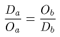. 四七 供給と需要の均等すなわち均衡の仮説。四八 供給と需要の不均等の仮説。価格の騰貴または下落は需要を減少、または増加せしめる。供給については如何。
四〇 第二一節になした基礎的一般的考察の中で、私は、社会的富を、稀少な物すなわち利用があると同時に量において限られた有形または無形の物の総体であると定義し、かつ稀少な物はすべて、そしてこれらのみが価値があり、交換せられ得ることを証明した。それとは別にここでは、社会的富を価値があって交換せられ得る有形無形の物の総体であると定義し、かつ価値があって交換せられるすべての物が、そしてそれらのみが利用があると同時に量において限られている物であることを証明しよう。先の定義では、私は原因から結果に赴いているわけであり、今与えた定義では、結果から原因に遡っているわけである。だが稀少性と交換価値との二つの事実の関係を明らかにすることが出来るならば、これらのいずれの行き方をしようと、自由であるのはいうまでもない。ただ私は、交換価値のような一般的事実の組織的研究にあっては、性質の研究が起源の研究に先立たねばならぬと考えるのみである。
四一
交換価値はある物がもつ性質であり、無償で獲得せられることも無償で譲渡されることもなくして売り買いせられる性質、すなわち他の物を与えまたは受けるのにある割合の分量で受けまたは与えられる性質である。一つの物の売手は、それと交換に受ける物の買手である。一つの物の買手は、それと交換に与える物の売手である。他の言葉でいえば、二つの物の相互の交換はすべて二つの売りと買いとから成り立つ。
価値があって交換せられる物は、また
商品（marchandises）と呼ばれる。市場は商品が交換せられる場所である。故に交換価値という現象は市場に生れるのであって、交換価値の研究は市場においてなされねばならぬ。
自由に放任せられる限り、交換価値は自由競争の支配を受けている市場において自然に発生する。交換をなす者は、買手としては互により高く需要しようとし、売手としては互により安く供給しようとする。これらの競り合いから、あるいは上向の、あるいは下向の、あるいは静止する商品の交換価値が生れる。この競争が充分に働くか否かによって、交換価値は、あるいは正確に、あるいは不正確に現われる。競争の点から見て最もよく組織化された市場は、売買が例えば仲買人・才取等のような売買を集中する仲介者によって行われる市場である。従ってこのような市場では、いかなる交換も、その条件が公にせられることなくしては行われず、売手が互により安く売ろうとし、買手が互により高く買おうとすることなくしては、行われない。株式取引所・商品取引所・穀類取引所・魚市場等は、実にこのような働き方をする市場である。しかしこれらの市場のほかに、多少は制限せられていても競争がともかくも相応にかつ満足な程度に行われる市場がある。
蔬菜市場、家禽市場などがこれである。小売商店・パン屋・肉屋・乾物屋・服屋・靴屋等の並列した街は、競争の点から見ると充分に組織化されていない市場ではあるが、それにしても、そこではかなりの程度まで競争が行われる。医師・弁護士の仕事の価値、音楽家の興行の価値の決定を支配するものもまた競争であることは争い得ない。更にまた全世界は、社会的富の売買が行われる一つの広大な一般的市場で、それを個々の特種な市場が形成しているのである。これらの市場においてこれらの売買はいかにして自ら成立していくか。その法則を知ることが我々の問題である。この目的をもって常に私は、競争の点から見て完全な組織をもっている市場を仮定する。これは、純粋力学において摩擦のない機械を仮定するのと同様である。
四二 ところでよく組織せられた市場において競争がいかに働くかを見ようと思うのであるが、その目的のために、パリまたはロンドンのような資本の大市場における証券取引所に入ってみよう。これらの場所で人々が売買している物は、社会の富のうちで、証券によって表わされている重要な富の一部分である。例えば国家その他の公共団体に対する債権の一部分・鉄道・運河・重工業工場等の一部分である。我々がこの市場に入るとき、聞き得るものは、取りとめのない喧騒のみであり、見得るものは、無秩序の運動のみである。しかし一度私共がその内容に通暁するに至るならば、この喧騒とこの活動との意味が極めて明瞭になってくる。
今例えばパリの取引所において行われる三分利付フランス国債の取引を、他の取引から引離して観察してみる。
三分利付公債は六〇フランであるという。これを六〇フランまたはそれ以下に売ってよいとの指図を受けた仲買人は、三分利付の公債のある量すなわちフランス国家に対する三分の利子の要求証券のある量を六〇フランの価格で供給する。かくの如く一定の価格である量の商品が供給せられたとき、この供給を
有効供給（offre effective）と呼ぶ。反対に六〇フランまたはそれ以上で買ってもよいとの指図を受けた仲買人は、三分利付公債のある量を六〇フランの価格で需要しているのである。ある価格である量の商品が需要せられるとき、この需要を
有効需要（demande effective）と名づける。
さてこの需要が供給に等しいか、これより多いかまたは少いかに従って、我々は三箇の仮定を設ける。
仮定一。六〇フランで需要せられる量が、この価格で供給せられる量に等しい場合。これは売手または買手である仲買人がいわばその相手方を他の買手または売手である仲買人に正確に見出す場合である。この場合には交換が行われ、相場は六〇フランを維持し、市場の静止状態すなわち市場の均衡（
quilibre）が現われる。
仮定二。買手である仲買人がその相手方を見出し得ない場合。この場合には六〇フランの価格で需要せられる三分利付公債の量は、この価格で供給せられる量を超過している。理論上交換は中止せられる。六〇・〇五フランまたはそれ以上で買ってもよいとの指図を受けた仲買人がこの価格で需要する。彼らはせり上げる。このせりは二つの結果を生ぜしめる。（一）六〇・〇五フランでの買手となり得ない所の六〇フランの買い手は退く。（二）六〇フランでの売手となり得ない所の六〇・〇五フランにおいての売手が加わってくる。もし彼らが既に指図を与えていないとすれば、彼らは新に指図を与える。かく二つの動因によって、有効需要と有効供給との間に存する隔りは減少する。両者の均等が再び出現すれば、価格の騰貴はそこで停止する。そうでない場合には六〇・〇五フランから六〇・一〇フランに、六〇・一〇フランから六〇・一五フランにと、供給と需要との均等が成立するまで、価格は騰貴する。そして高い相場で、新しい静止状態が現われる。
仮定三。売手である仲買人がその相手方を見出し得ない場合。この場合には六〇フランの価格で供給せられる三分利付公債の量は、同じ価格で需要せられる量より大である。この場合にも交換は停止する。五九・九五フランまたはそれ以下で売ってもよいとの指図を受けた仲買人は、この価格で供給する。彼らは互にせり下げる。
これから二つの結果が生ずる。（一）五九・九五フランにおいて売手となり得ない所の六〇フランにおいての売手は退く。（二）六〇フランにおいて買手となり得ない所の五九・九五フランにおいての買手が現われる。そこで供給と需要との隔りが減少する。そして供給と需要との均等が再び現われるまで、価格は五九・九五フランから五九・九〇フランへ、五九・九〇フランから五九・八五フランへと下落する。
この三分利付フランス国債に行われたと同じ作用が、すべての公債例えばイギリス、イタリア、スペイン、トルコ、エジプト等の公債にも、また鉄道・港湾・運河・鉱山・
瓦斯事業・銀行その他の信用機関等の株式及び社債にも行われ、その変化は証券の
如何により〇・〇五フラン、〇・二五フラン、一・二五フラン、五フラン、二五フラン等であると想像し、また現物取引のほかに定期取引が行われ、その定期取引中にも単純定期取引、
歩金取引等が行われると想像せよ。かくて取引所の喧騒はあたかも各人がそれぞれの楽器を受持っている演奏会のようなものである。
四三 私共は、これからかかる競争状態において生ずる交換価値を研究しようとする。一般に経済学者は、例外的な事情の下に現われるような交換のみを研究しようとする。彼らはダイヤモンドや、ラファエルの絵画、流行の音楽会のみを研究する。ジョン・スチュアート・ミルの引用によれば、ド・クィンシー（De Quincey）氏は、汽船に乗ってスーペリオール湖（Lac Sup
rieur）を旅行する二人を想像する。一人は楽器を所有し、他の一人は「文明から八百
哩も遠ざかっている無人の地への移住の途中であり」、ロンドンを出発するに際し楽器を購うのを忘れたのであった。この人にとって楽器は心の不安を
和げる神秘な力をもっている。下船しようとするとき、この人は他の一人が所有する楽器を六〇ギニーの価格で購ったという。もちろん理論はかかる特殊な場合をも考えねばならない。市場に行われる一般的法則は、ダイヤモンドの市場にも、ラファエルの絵画の市場にも、楽器の市場にも適用せられねばならない。それはまたクィンシーが考えたような一人の売手と一人の買手と一箇の物と一瞬間とから成る市場にも適用せられねばならない。しかし論理的には一般の場合から特殊の場合に進むのがよいのであり、特殊の場合から一般の場合に進むべきではない。天文学者が天体を観測するのに、雲の無い夜を利用しないで、雲の多い時を選ぶべきではあるまい。
四四 交換の現象と競争の機構の基本概念を与えるため、私は、株式市場において金銀貨幣と交換せられる証券の売買を例にとった。けれどもこれらの証券は全く特殊な種類の商品であり、交換に貨幣が介在するのもまた交換の特殊の場合である。私は後に貨幣が介在する交換の研究をするが、当初にはこれを交換価値の一般的事実の研究と混同せぬがよいように思う。そこで私共の本道に立ち帰り、かつ私共の観察に科学的性質を与えるため、任意の二商品のみをとることとする。今これらの二商品を、燕麦と小麦であると仮定してもよければ、または抽象的に（Ａ）、（Ｂ）と仮定してもよい。私はＡ、Ｂを（Ａ）、（Ｂ）のように括弧に収め、量を表わす文字との混同を避けたい。量を表わす文字は方程式に組み込まれる唯一のものであり、（Ａ）、（Ｂ）で表わすものは量ではなくして、種類であり、哲学上の言葉を用いれば、本質である。
そこで今、一市場を想像し、そこに（Ａ）を携えながらその一部分を与えて（Ｂ）を得ようとする人々が一方から到着し、（Ｂ）を所有しその一部分を与えて（Ａ）を得ようとしている人々が他方から到着したとする。この場合にせりの基礎となるものが必要であるから、今は例えば、ある仲買人が、前回の取引の相場通り、（Ａ）のｍ単位に対し（Ｂ）のｎ単位を与えると想像する。この交換は次の方程式で表わされる。
mva=nvb
ここで（Ａ）の一単位の交換価値を v
a と呼び、（Ｂ）の一単位の交換価値を v
b と呼んでおく（第二九節）。
交換価値の比すなわち相対的交換価値を
価格（prix）と一般的に呼び、（Ａ）で表わした（Ｂ）の価格、（Ｂ）で表わした（Ａ）の価格を、それぞれ p
b, p
a で一般的に表わし、比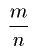及び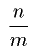の値を特にそれぞれμ及び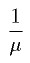で表わせば、この第一の方程式から
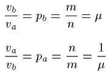
を得べく、かつまたこれらの二つの方程式から
が得られる。よって、
価格すなわち交換価値の比は、
交換せられた商品の量の反比に等しい。
各商品の価格は互に逆数である。
もし（Ａ）が燕麦であって、（Ｂ）が小麦であるとし、仲買人が五ヘクトリットルの小麦を一〇ヘクトリットルの燕麦と交換しようと申込んだとすれば、燕麦で表わした小麦の申込価格は２であって、小麦で表わした燕麦の申込価格は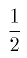である。先にいったように、一つの交換には常に二つの売と二つの買とがあるが、それと同じく二つの価格がある。常に存在するこの相互の逆数関係は、交換の事実において注意すべき最も重大な事項であり、代数記号の使用はこれを極めて明瞭ならしめるから、はなはだ便利である。その上代数記号の使用は、一般的命題を簡潔明瞭な式で表わし得る利益をもっている。私がそれを用いる理由もここにある。
四五 価格

における（Ａ）及び（Ｂ）の有効需要及び有効供給を、それぞれ D
a, O
a, D
b, O
b とすれば、これらの需要量と供給量と価格との間には、ここに指摘しておかねばならぬ重要な関係がある。
先にいったように、有効需要及び有効供給は一定の価格における一定商品量の需要及び供給である。故に p
a の価格において、（Ａ）の D
a 量の需要があるといえば、それは、D
ap
a に等しい O
b 量の（Ｂ）が供給せられているということである。だから例えば小麦で表わした価格で二〇〇ヘクトリットルの燕麦が需要せられるといえば、それは小麦の一〇〇ヘクトリットルの供給があるということでもある。故に一般に、D
a, p
a 及び O
b の間には、方程式
Ob=Dapa
が成立する。
同様に p
a の価格で O
a 量の（Ａ）の供給があるといえば、それは、O
ap
a に等しい D
b 量の（Ｂ）が需要せられるということでもある。だから例えば小麦で表わした価格で一五〇ヘクトリットルの燕麦の供給があるといえば、それは、小麦の七五ヘクトリットルの需要があるということでもある。故に一般に O
a, p
a, D
bの間には、次の方程式が成り立つ。
Db=Oapa
同様に D
b, O
b, p
b, O
a, D
a の間に、次の方程式が成立するのを証明し得るであろう。
Oa=Dbpb
Da=Obpb
これら二つの式は、先の二つの方程式と方程式 p
ap
b=1 とからも導き出されるが、それに関係なく証明せられ得る。
よって、
ある商品を反対給付とする一商品の有効需要または供給は、
このある商品の有効供給または有効需要と、
この一商品で表わされたこのある商品の価格との積に等しい。
ここで、これら四つの量 D
a, O
a, D
b, O
b のうち、二つは他の二つから決定せられることを、知ることが出来る。私共は、後に新しい説明を加えるまで、供給量 O
b 及び O
a は、需要量 D
a 及び D
b から生ずるものであると考え、需要量が供給量から生ずるものとは考えないでおく。実際二つの商品の相互の物々交換の現象においては、需要は根本的な事実であると考えられねばならぬし、供給は附随的な事実であると考えられねばならぬ。人は供給のために、供給するのではない。供給をすることなくしては、需要をすることが出来ない故に、供給をするのである。供給は需要の結果に過ぎない。故にまず我々は、供給と価格との間に間接的関係を認めるだけで満足し、需要と価格との間にのみ直接の関係を求めようと思う。これ故、p
a, p
b の価格において、D
a, D
b の需要があるとすれば、供給は
Oa=Dbpb, Ob=Dapa
となる。
四六 ところで、
Da=αOa
であるとすれば、α=1 であるか、α>1 であるか、α<1 であるかの三つの仮定を設けることが出来る。だがまず最後の定理を述べておく。
上記の方程式に、
Da=Obpb
Oa=Dbpb
によって与えられた D
a, O
a の値を代入すれば、
Ob=αDb
となる。
よって、
二つの商品を与えられたとすれば、
一つの商品の有効需要のその有効供給に対する比は、
他方の商品の有効供給の有効需要に対する比に等しい。
この定理は次のように証明せられることも出来る。
Da=Obpb
Db=Oapa
DaDb=OaOb
または、
Oa=Dbpb
Ob=Dapa
OaOb=DaDb
結局、いずれの考え方によるも
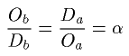
となる。
故に（Ａ）の有効需要と供給とが等しければ、（Ｂ）の有効供給と需要ともまた等しいことが解る。もし（Ａ）の有効需要がその有効供給より大であれば、（Ｂ）の有効供給は同じ比例で有効需要より大であることが解る。最後にもし（Ａ）の有効供給が有効需要より大であれば、（Ｂ）の有効需要は同じ比例でその有効供給より大であることが解る。これが右の定理の意味である。
四七 さて α=1, D
a=O
a, O
b=D
b であると仮定すれば、二商品（Ａ）、（Ｂ）がそれぞれ
の価格で需要せられる量、供給せられる量は相等しい。各々の買手及び売手は売手または買手にちょうどその相手方を見出す。従って市場の均衡が現われる。均衡価格及び μ において、（Ａ）の量 D
a=O
a は（Ｂ）の量 O
b=D
b に交換せられる。市場は終結し、二商品の所持者は相去るのである。
四八 しかし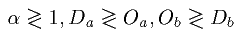であるとする。しからばこれら二商品の各々の供給と需要との均等はいかにして生ずるか。一見すると、先に例示した取引所における公債についてなした推論を、そのままここで繰り返し得るように思われる。けれどもそれは大なる誤である。取引所では公債の買手と売手とがあるが、この証券の価値は、それらの特定の収入の金額と資本に対する収入率とに依存する。後に述べるであろうように、もちろん公債の価格の騰貴は需要を減じ、供給を増加せざるを得ないし、その下落は需要を増加し、供給を減ぜざるを得ない。しかし今ここでは、交換者が交換する物は直接に利用を存する商品と仮定せられている（Ａ）と（Ｂ）とであり、（Ａ）と（Ｂ）の交換者のみが市場で相対しているのである。そしてこの事情がすべてを修正する。
もちろん、D
a が O
a より大であれば、p
a は騰貴せねばならぬ。（すなわち p
b は下落せねばならぬ。）また反対にもし、D
b が O
b より大であるとすれば、p
b は高騰せねばならぬ。（p
a は下落せねばならぬ。）需要についても同様の推論をなし得る。すなわち価格が騰貴すれば、需要は増加することが出来ない、減少せざるを得ない。実際例えば一〇ヘクトリットルの燕麦に対し、五ヘクトリットルの小麦を供給する交換者、すなわち小麦で表わした価格 0.50 で一〇ヘクトリットルの燕麦を需要する交換者が、一二ヘクトリットルの小麦の所有者であるとする。小麦で表わした燕麦の価格 0.50 では、この交換者は二四ヘクトリットルの燕麦を買い得る。しかし彼は、小麦に対する欲望の事情で、一〇ヘクトリットルしか買わないとする。価格が 0.60 だとすると、二〇ヘクトリットルの燕麦しか買い得ない。この場合には、彼は、小麦に対する欲望の事情で、たかだか一〇ヘクトリットル――彼が更に富んだときにはこの量に達し得ようが――またはそれ以下にこれを限るであろうと、考えられねばならぬ。かくの如く、p
a の高騰すなわち p
b の下落は、D
a を減じ、D
b を増加せしめることしか出来ない。反対に p
b の騰貴すなわち p
a の下落は、D
b を減じ、D
a を増加することしか出来ない。しかし O
a と O
b とはいかに変化するか。この問に答えるのは不可能である。O
a は D
b と p
b との積に等しい。ところでこれら二つの因子の一方の p
b が減じまたは増大すれば、他方の因子の D
b は、このことだけで増加しまたは減少する。同様に O
b は D
a と p
a との積に等しい。ところで p
a が増加するか減少するかに従って、D
a は、このことだけで、減少しまたは増加する。従って、交換者が均衡を実現するか否かを、いかにして知るべきかが問題となる。
［＃改ページ］
第六章 有効需要曲線と有効供給曲線。需要と供給との均等の成立
要目 四九 価格の増加に応じて有効需要が減少するという事実。五〇、五一、五二 価格の函数としての部分的需要の曲線または方程式。五三 需要曲線は同時に供給曲線である。五四 存在量の双曲線。五五 座標軸と存在量の双曲線との間における需要曲線の中間的位置。五六 二商品相互間の交換の問題の解。五七 需要曲線の中に底辺が互に逆数であり、高さがそれぞれの面積に反比例する矩形を挿入することによる幾何学的解。五八 代数的解。五九 価格の関数としての供給曲線を構成することによる二つの解の結合。六〇、六一 有効需要供給の法則すなわち均衡価格成立の法則。
四九 ここでは、価格と有効供給との間には間接の関係しかなく、価格と有効需要との間にのみ直接の関係があると考えるのであるから、我々が研究せねばならぬのは後者である。
この研究のために、ここに小麦の所持者があるとする。この人は小麦を所有するが、燕麦を所有しない。そこで自分の消費のために、若干量の小麦を保留し、他の若干量の小麦を提供して、自家の馬を養うための燕麦と交換しようとしている。ところで彼が保留しようとする量及び提供しようとする量は、それぞれ燕麦の価格と、この価格で彼が需要しようとする燕麦の量に依存するであろう。いかに依存するか。私はそれを見ようと思う。価格零のとき（燕麦の一ヘクトリットルを得るために、小麦のゼロヘクトリットルを与えることを要するとき、すなわち燕麦が無償であるとき）、この人は欲するだけの燕麦を需要するであろう。換言すれば、自分が所有する一切の馬、否飼料が無償で得られるときに養われるべき一切の馬を飼養するに充分な量を需要するであろう。いうまでもなく彼は、これと交換に小麦を与えるのではない。次に価格が順次に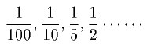だとすると（燕麦一ヘクトリットルを得るために、小麦を与えねばならぬとすると）、彼は次第にその需要を減ずるであろう。価格が 1, 2, 5, 10（燕麦一ヘクトリットルを得るために小麦 1, 2, 5, 10 を与えねばならぬとすれば）となれば、彼は更にその需要を減ずるであろう。そしてもちろんこれらと交換に彼が供給する小麦の量は、彼が需要する燕麦の量とこの燕麦の価格の積に常に等しい。更にまた価格が 100 というような高いものとなれば（一ヘクトリットルの燕麦を得るため 100 ヘクトリットルの小麦を与えることを要するとすれば）彼は少しの燕麦をも需要しないようになる。なぜならこの価格においては二頭の馬をも飼養し得ないであろうし、また飼養するを欲せぬであろうから。このときには、彼は、交換に何らの小麦をも供給しないであろうことは、いうまでもない。故に燕麦の有効需要は、価格が増加するに従って減少する。それは価格零においてのある数字に始まり、ある価格において零に終る。これに相応ずる小麦の有効供給は零から出発し、次第に増加し、最大に達し、再び零に帰る。
五〇 小麦のすべての所有者はもちろん、また一方のこれら小麦のすべての所有者のみならず、他方の燕麦のすべての所有者もまた、同一の性質とはいい得ないとしても、同様の傾向をもっている。一般に商品を所有してこれを他の商品と交換しようとして市場に現われる者は、せり上げの傾向をもっている。この傾向は可能的（virtuelle）であることもあり、有効（effective）であることもあるが、精密に決定せられ得べきものである。
（Ｂ）の q
b 量の所有者（１）が――以下代数記号で呼ぶ――市場に現われ、そのうちのある量 o
b を供給して、自分が需要する（Ａ）の d
a 量と交換するとすれば、方程式
dava=obvb
により、彼は（Ａ）の d
a 量と（Ｂ）の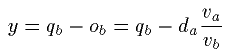を所持して帰っていくであろう。そしていかなる場合にも、量 q
b, 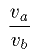 すなわち p
a, d
a 及び y の間には、常に次の関係がある。
qb=y+dapa
q
b の所有者が q
b を知っているのは、いうまでもない。しかし市場に到着してみなければ、すなわち p
a がいかなるものであるかを知ることが出来ない。けれどもそこに到着すれば、これを知り得るであろうことも確実であり、また p
a の値が一度知られるならば、彼は直ちに d
a の値を定めることが出来、右の方程式により、y の値が直ちに決定することも確実である。
q
b の所有者が自ら市場に現われる場合には、せり上げの傾向を有効ならしめないで、可能的ならしめることが出来る。他の言葉でいえば、価格 p
a が決定した後に至って初めて、需要 d
a を決定することが出来る。しかしその場合にもせり上げの傾向はもちろん働く。またもし例えば彼が自ら市場に現われることが出来ず、ある理由により、ある友人または仲買人に指図を与えるとすれば、彼は p
a の可能な値を零から無限大まで予想し、それらに相応する d
a のすべての値を決定し、これを何らかの方法で表現しておかねばならぬ。ところで、計算に少しく馴れた人々は右の事実の数学的表現をなすのに二つの方法があるのを知っているであろう。
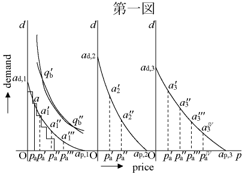
五一 第一図において、横軸 Op を価格を示す軸とし、縦軸 Od を需要を示す軸とする。原点Ｏから横軸上にとられた長さ Op
a', Op
a'' ……は、（Ｂ）で表わした（Ａ）の価格、例えば小麦で表わした燕麦の可能な種々の価格を示すものとする。同じ原点Ｏから縦軸にとった長さ Oa
d,1 は、価格が０のとき、小麦または（Ｂ）の所有者が需要する燕麦または（Ａ）の量を示すものとする。点 p'
a, p''
a ……を通って需要軸に平行線を引いて、これらの平行線の上にこれらの点 p'
a, p''
a ……からとった長さ p'
aa'
1, p''
aa''
1 は、それぞれ p'
a, p''
a の価格で需要せられる燕麦または（Ａ）の量を示す。長さ Oa
p,1 は小麦または（Ｂ）の所有者が燕麦または（Ａ）をもはや需要しないであろう価格を示す。
そうとすれば、（Ｂ）の所有者（１）のせり上げる傾向は、幾何学的には、点 a
d,1, a'
1, a''
1 … a
p,1 によって作られる曲線 a
d,1 a
p,1 により、代数的には、この曲線の方程式
da=fa,1(pa)
によって表わされる。曲線 a
d,1a
p,1 と方程式 d
a=f
a,1(p
a) とは経験によって得られる。同様にして、（Ｂ）のすべての所有者（２）、（３）……のせり上げの傾向を、幾何学的には曲線 a
d,2a
p,2, a
d,3a
p,3 ……により、代数的には、
da=fa,2(pa),da=fa,3(p［＃「p」は底本では「d」］a) ……
によって表わすことが出来る。
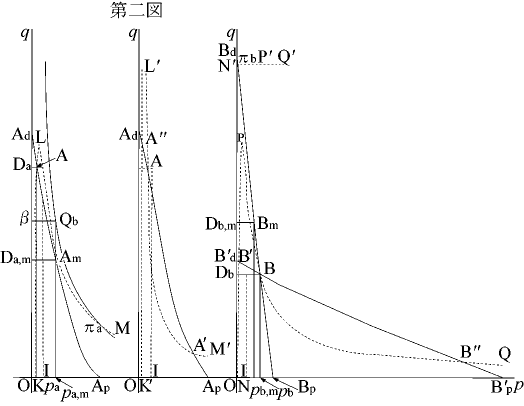
五二 さて、同じ横坐標の上にあるすべての縦坐標を加えて、いわばこれらの部分的曲線（courbes partielles）a
d,1a
p,1, a
d,2a
p,2, a
d,3［＃「d,3」は底本では「d3」］a
p,3［＃「p,3」は底本では「p3」］ …を合計すれば、すなわち同一の横坐標におけるすべての縦坐標を加えれば、（Ｂ）のすべての所有者のせり上げの傾向を幾何学的に示す全部曲線 A
dA
p（第二図）が得られる。同様にすべての部分的方程式を加えれば、同じせり上げの傾向を代数的に示す全部方程式
Da=fa,1(pa)+fa,2(pa)+fa,3(pa)+ … =Fa(pa)
が得られる。これらは、（Ｂ）で表わした（Ａ）の価格の函数としての（Ａ）の（（Ｂ）を反対給付とする）
需要曲線（courbe de demande）または
需要方程式（
quation de demande）である。同様にして、（Ａ）で表わした（Ｂ）の価格の函数としての（Ｂ）の（（Ａ）を反対給付とする）需要曲線または需要方程式が得られる。
ここで、部分的曲線 a
d,1a
p,1 または部分的方程式
da=fa,1(pa)
を初めとし、他の部分的曲線及び方程式が
連続であること、すなわち p
a の無限小の増加が d
a の無限小の減少を生ぜしめることを、何ものも示していない。否反対に、これらの函数はしばしば不連続である。例えば燕麦についていえば、小麦の所有者の第一人は価格が騰貴するに従って、燕麦の需要を減ずるのではなく、たしかに、彼が畜舎に飼養する馬を減じようとするときに、断続的にその需要を減ずるのである。故に彼の部分的需要曲線は、実際においては、a 点を通る階段形の曲線の形（第一図）をとるのである。他のすべての人の曲線もいずれも同様である。しかし全部曲線 A
dA
p（第二図）は、いわゆる
大数の法則によって、ほぼ連続であると考え得られる。まことに、価格の極めて小さい騰貴が起るときには、多数の人々のうちおそらく一人くらいは、今まで飼養していた馬のうち一頭を手放すような極限に立っていて、需要を減ずるであろうが、この減少は全需要中の極めて小なる部分の減少に過ぎないであろう。
五三 このようにして、曲線 A
dA
p は、（Ａ）の価格の函数としての（Ａ）の有効に需要せられる量を示す。例えば A
m 点の横坐標 Op
a,m によって表わされる価格 p
a,m における有効需要は、同じ点 A
m の縦坐標 OD
a,m によって表わされる D
a,m である。そして（Ｂ）をもってする（Ａ）の有効需要が、価格 p
a,m であるとき、D
a,m であれば、（Ａ）と交換に提供せられる（Ｂ）の有効供給は、このことだけで、
Ob,m=Da,mpa,m（第四五節）
となる。これは縦坐標 OD
a,m と横坐標 Op
a,m によって作られる矩形 OD
a,mA
mp
a,m によって表わされる。だから曲線 A
dA
p は（Ｂ）で表わした（Ａ）の価格の函数としての（Ａ）の需要と（Ｂ）の供給とを同時に示している。同様に曲線 B
dB
p は（Ａ）で表わした（Ｂ）の価格の函数としての（Ｂ）の需要と（Ａ）の供給とを同時に示すのである。
五四 （Ｂ）を所有する多数者の手中にあって市場に現われた総量を Q
b とし、点 Q
b を通る曲線を、xy=Q
b を方程式とする直角双曲線であるとする。直線 p
a,mA
m を、この双曲線との交点 Q
b まで延長し、ｘ軸すなわち価格の軸に平行線 βQ
b を引け。しからば矩形 OβQ
bp
a,m の面積 Q
b は、市場に
齎らされた（Ｂ）の総量を表わし、矩形 OD
a,mA
mp
a,m の面積 D
a,m p
a,m は、価格 p
a,m において（Ａ）と交換に提供せられる部分を表わす。従って矩形 D
a,mβQ
bA
m の面積Ｙすなわち
Qb-Da,mpa,m
は、同じ価格 p
a,m において市場から持ちかえって所有者が保留するであろう部分を示す。一般に、Q
b, p
a, D
a 及びＹの間には、次の関係がある。
Qb=Y+Dapa
そして xy=Q
b すなわち Q
b 点を通る曲線は、（Ｂ）の存在量を表わす双曲線であるから、A
dA
p は、（Ｂ）で表わした（Ａ）の価格の
如何によって、この（Ｂ）の量を、（Ａ）と交換に与えるべき部分と保留しておくべき部分とに分ける曲線である。曲線 B
dB
p と、
xy=Qa
を方程式とする（Ａ）の存在量の双曲線との間にも、同様の関係があるのはもちろんである。
五五 故に需要曲線は、量の双曲線のうちに包まれている。またこれらの需要曲線は一般に坐標軸を切り、これらの軸と漸近線をなさないということが出来る。
一般に需要曲線は、需要の軸を切る。なぜなら価格零においてある個人によって需要せられるある商品の量は、一般に有限であるから。例えば燕麦が無償で与えられるとしたら、ある人は十頭、ある人は百頭の馬を飼養するかもしれぬ。しかし彼らは無限数の馬を飼養せぬであろうし、従って無限量の燕麦を需要せぬであろう。ところで価格零における需要の総計は有限量の合計であるから、それ自身も有限量である。
需要曲線は一般に価格の軸を切る。実際価格が無限大に達しなくても充分に高ければ、ある商品がその無限小量をも何人によっても需要せられないようになるであろうと、我々は想像し得る。しかしこの点については絶対的にはいい得ない。（Ｂ）が
いかなる価格ででも全部供給せられ得て、従って需要曲線 A
dA
p が Q
b を通る双曲線と合致する場合があり得るし、また（Ｂ）の一部がいかなる価格ででも供給せられ得て、従って需要曲線 A
dA
p が Q
b を通る双曲線の内側の双曲線と合致する場合があり得る。だから架空の臆説をしないように、需要曲線が坐標軸と存在量の双曲線との間のすべての地位をとり得ると考えておく。
五六 かくて我々は、一つの商品の有効需要と他の商品で表わしたその価格との間の直接的関係を知り、またこの関係の数学的表現を知り得たわけである。
例えば（Ａ）商品についていえば、この関係は幾何学的には、曲線 A
dA
p により、また代数的には、この曲線の方程式
Da=Fa(pa)
によって表わされる（第五二節）。
（Ｂ）商品についていえば、この関係は、幾何学的には曲線 B
dB
p により、代数的には、この曲線の方程式
Db=Fb(pb［＃「b」は底本では上付き小文字］)
によって表わされる。
その上、我々は、ある他の商品と交換に提供せられる一つの商品の有効供給と、後者で表わした前者の価格との間に存する間接的関係の性質を知り得たわけであり、またこの関係の数学的表現を知り得たわけである。
例えば（Ａ）についていえば、この関係は、幾何学的には曲線 B
dB
p で包まれた一連の矩形により、また代数的には、この曲線の方程式
Oa=Dbpb=Fb(pb)pb
によって表わされる（第五三節）。
（Ｂ）については、それは幾何学的には、曲線 A
dA
p に包まれた一連の矩形により、代数的には、方程式
Ob=Dapa=Fa(pa)pa
によって表わされる。
ところで、これらの方程式から、各商品の有効供給と他の商品で表わしたこの商品の価格との関係を表わす方程式を導き出すことは容易である。すなわちこれら二つの方程式において、価格 p
b を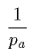により、価格 p
a を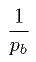により置き換えればよい。なぜなら p
ap
b=1 であるから。
よって
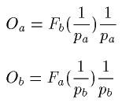
となる。
これらの要素をもって私共は、二商品の交換の一般的問題――
二商品（
Ａ）、（
Ｂ）
を与えられ、
またこれら二商品相互の需要曲線またはこれら曲線の方程式を与えられれば、
それぞれの均衡価格はいかに定まるかの問題――を、数学的に解くことが出来る。
五七 幾何学的には、問題は、二つの曲線 A
dA
p, B
dB
p の間に、それぞれの底辺（これらは互に逆数である）上に矩形 Od
aAp
a, OD
bBp
b を作り、これら一方の高さ OD
a が他方の面積 OD
b × Op
b に等しくなるように、また反対にこの他方の矩形の高さ OD
a が一方の矩形の面積 OD
a × Op
a に等しくなるようにすることにある。これら二つの矩形の底辺 Op
a, Op
b は均衡価格を示す。けだしこれらの価格のそれぞれにおいて、高さ OD
a によって表わされる（Ａ）の需要は、面積 OD
a×Op
a によって表わされる（Ｂ）の供給に等しいからである（第四七節）。
ここに用いた「各一方の矩形の高さが他方の矩形の面積に等しくなるように」という表現は、等質を表現したものではない。しかしこの場合にはこの等質を必ずしも必要としない。なぜなら底辺が互に逆数を表わしていることが、これら二曲線の構成に役立った共通な単位 O1 の存在を予想しているから。だがもしこの単位を
顕わさしめようとすれば、各矩形の高さは、他方の矩形の面積を構成している単位数と同数の単位数を含んでいると考えるか、または各矩形の面積は、他方の矩形の高さと底辺の単位によって作られる矩形の面積に等しいと考えねばならぬ。ところでこの問題の与件においては、当然、各矩形の底辺は高さの反比に等しく、また面積の比に等しいわけである。
五八 代数的には、問題は、二つの方程式
Fa(pa)=Fb(pb)pb, papb=1
における二つの根 p
a, p
b を求め、または二つの方程式
Fa(pa)pa=Fb(pb), papb=1
における二つの根 p
a, p
b を求めることにある。更にいい換えれば、問題は、
Da=Oa
を表わす方程式
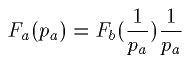
及び
Ob=Db
を表わす方程式
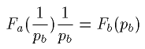
の二つの根 p
a, p
b を求めることにある。
五九 なおまた、これらの解法を一つに結合することも出来る。我々は既に曲線
Da=Fa(pa［＃「a」は底本では「b」］), Db=Fb(pb)
を知っているが、これらはそれぞれ曲線 A
dA
p, B
dB
p である。今曲線
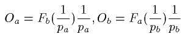
を作れば、それらはそれぞれ曲線 KLM, NPQ であって、これらの曲線と A
dA
p, B
dB
p との交点Ａ及びＢは、先に述べた矩形をちょうど与える。
これらの曲線 KLM, NPQ はいかなるものであるか、図に点線で表わされたこれらの曲線の構造の形状を知ることは容易である。
まず曲線 KLM は（Ａ）の供給曲線であって、（Ｂ）の需要曲線と混同してはならない。なぜなら（Ｂ）の需要曲線の坐標によって作られる矩形の面積は、価格 p
b の函数としての（Ａ）の供給を示しているのに反し、（Ａ）の供給曲線の縦坐標の長さは、価格 p
a の函数としての（Ａ）の供給を示しているから。
この曲線は、（Ｂ）で表わした（Ａ）の価格が無限大であるときすなわち（Ａ）で表わした（Ｂ）の価格が無限小であるとき、零の値から出発し、従って価格の軸に漸近線をなす。そしてそれは、原点に近づくに従い、すなわち（Ｂ）で表わした（Ａ）の価格が減少するに従い、すなわち（Ａ）で表わした（Ｂ）の価格が増加するに従って、上向し、ついに最高点Ｌに達する。この点の横坐標は、曲線 B
dB
p に包まれる矩形の面積を最大ならしめる B
m 点の横坐標 Op
b,m によって表わされる p
b,m すなわち（Ａ）で表わした（Ｂ）の価格の逆数、すなわち（Ｂ）で表わした（Ａ）の価格を示している。次にこの曲線は、原点に近づくに従い高さを減じ、ついに零となる。これが零となるのは、曲線 B
dB
p が価格の軸を切る B
p 点の横坐標 OB
p によって表わされる（Ａ）で表わした（Ｂ）の価格の逆数においてである、すなわち OK で示される（Ｂ）で表わした（Ａ）の価格においてである。
同様に曲線 NPQ は（Ｂ）の供給曲線であって、（Ａ）の需要曲線と混同してはならない。（Ａ）の需要曲線の坐標によって作られる矩形の面積は、価格 p
a の函数としての（Ｂ）の供給を示しているのに反し、（Ｂ）の供給曲線の縦坐標の長さは、価格 p
b の函数としての（Ｂ）の供給を示している。
この曲線は、（Ａ）で表わした（Ｂ）の価格が無限大であるときすなわち（Ｂ）で表わした（Ａ）の価格が無限小であるとき、零の値から出発し、従って価格の軸に漸近線をなす。そしてそれは、原点に近づくに従い、すなわち（Ａ）で表わした（Ｂ）の価格が減少するに従い、すなわち（Ｂ）で表わした（Ａ）の価格が増大するに従い、上向し、ついに最高点Ｐに達する。この点の横坐標は、曲線 A
dA
p に包まれた矩形の面積を最大ならしめる A
m 点の横坐標 Op
a,m によって表わされる p
a,m の逆数すなわち（Ｂ）で表わした（Ａ）の価格を示す。次にこの曲線は、原点に近づくに従い、高さを減じ、ついに零となる。これが零となる点は、曲線 A
dA
p が価格の軸を切る A
p 点の横坐標 OA
p によって表わされる（Ｂ）で表わした（Ａ）の価格の逆数においてである。すなわち ON によって示される（Ａ）で表わした（Ｂ）の価格においてである。
いうまでもなく、曲線 KLM, NPQ の形状は全く曲線 B
dB
p, A
dA
p の形状
如何による。B
dB
p, A
dA
p が図に示されたものとは異っているとすれば、KLM, NPQ もまた全く異ったものとなるであろう。それはとにかく、今私共に与えられた条件においては、曲線 B
dB
p は最大矩形点 B
m を過ぎた後、下向して、点線 NPQ に交わるのであるが、この交点は、NPQ が零から最高点Ｐに向って上向しつつある所にある。従って、曲線 A
dA
p もまた、下向するとき、最大矩形点 A
m を通る以前に点線 KLM に交わるのであるが、この交点は、この曲線がその最高点Ｌから零に下向する所にある。
六〇 だから、もしＡ点において二曲線 A
dA
p, KLM が交わるとしたら、この点の右においては曲線 A
dA
p は曲線 KLM より小であり、左においてはより大であることも明らかである。またＢ点において二曲線 B
dB
p, NPQ が交わるとすれば、この点の右においては、曲線 B
dB
p は曲線 NPQ より小であり、左においてはより大であることも明らかである。
ところで、価格

は、仮定によって、D
a=O
a, D
b=O
b ならしめる価格であるから、p
a より大なるすべての（Ｂ）で表わした（Ａ）の価格においては、すなわち p
b より小なるすべての（Ａ）で表わした（Ｂ）の価格においては、O
a>D
a であり、D
b>O
b である。反対に p
a より小なるすべての（Ｂ）で表わした（Ａ）の価格においては、すなわち p
b より大なる（Ａ）で表わした（Ｂ）の価格にあっては、D
a>O
a であり、同時に O
b>D
b である。前の場合には p
b の高騰すなわち p
a の下降によってしか、均衡価格が現われ得ないし、後の場合には p
a の高騰すなわち p
b の下落によってしか、均衡価格は現われ得ない。
そこで、二商品相互の間の交換における
有効需要供給の法則（loi de l'offre et de la demande effectives）すなわち
均衡価格成立の法則（loi d'
stablissement d'
quilibre）を、次のように表現することが出来る。――
二商品が与えられ、
それらについて市場の均衡すなわちそれぞれ一方の商品で表わした他方の価格の静止状態があり得るためには、
二商品の各々の有効需要がその有効供給に等しいことを必要とし、
またこれだけの条件が充されるだけで充分である。
この均等が存在しないとすると、
均衡価格に達するためには、
有効需要が有効供給より大なる商品の価格が高騰せねばならぬし、
有効供給が有効需要より大なる商品が下落せねばならぬ。
この法則は、先に取引所の市場の研究のすぐ後で表明しようと試みたものであるが（第四二節）、しかしその厳密な証明が必要であった（第四八節）。
六一 我々は今や、市場における競争の機構がいかなるものであるかを、よく理解し
了えた。実際においても交換の問題は、価格の高騰及び下落によって解かれている。私がここに示したのは、この問題の数学的、純理論的解法である。私の目的が、実際の解き方に、私の解法を置き換えようとするにあるのではないのは、いうまでもない。実際の解き方は、理想通りに、迅速であり、正確である。例えば大市場では、仲買人やせり売人がなくても、その時々の均衡価格は数分の間に決定し、三四十分の間に巨額の商品が取引せられる。これに反し、理論的解法は、ほとんどすべての場合に、行われ難いものである。それ故に、交換の曲線を
画きまたはその方程式を作ることは困難であるというのは、根拠のない批難を私共に加えようとする者である。ある商品の需要または供給曲線の全部または一部を作って、ある場合に利益が得られるか否か、これらの曲線をを作ることが可能であるか否か、それらはここに問おうとすることではない。今はただ交換の一般的問題を研究するのであって、我々にとっては、交換曲線の純粋な抽象的な概念が得られれば充分なのであり、同時にその把握が欠くべからざるものなのである。
［＃改ページ］
第七章 二商品相互の間に行われる交換の問題の解法の吟味
要目 六二、六三 供給曲線が唯一の極大において連続である場合に論議を局限する。六四 供給曲線は需要曲線と交わらないこともあり得る。この場合価格は成立しない。六五 供給曲線は需要曲線と三点において交わることもあり得る。この場合三つの価格があり得る。六六、六七、六八 この内二つの均衡価格は安定であり、一つの均衡価格は不安定である。六九 二つの需要曲線の内一つが存在量の双曲線と一致する場合。七〇 二つ共一致する場合。
六二 以上述べてきた所を要約すれば、二商品（Ａ）、（Ｂ）が与えられ、その有効需要と価格との関係が、方程式
Da=Fa(pa), Db=Fb(pb)
によって表わされるとすると、均衡価格は方程式
Dava=Dbvb
によって得られる。そして D
a, D
b にその値を代入すれば、均衡価格は方程式
Fa(pa)va=Fb(pb)vb
によって得られる。だがしかし、p
a を求めようとするならば、更に右の方程式を次の［１］の形とすることも出来、また p
b を求めようとするならば、それを［２］の形とすることも出来る。
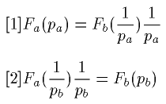
前者は D
a=O
a を表わし、後者は O
b=D
b を表わす。
私は、これら二つの形の方程式を、曲線
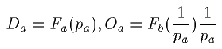
の交点により、または曲線
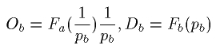
の交点によって解いた（第五九節）。今この解法を吟味しようと思う。
六三 けれども今は、可能なあらゆる場合についてこの解法を吟味するのではない。あらゆる場合についてこの解法を吟味するのは、多大の時を要し、またここはその機会ではない。ただ示した図に関するような極めて簡単な一般的場合のみを吟味する。第二図においては、私は、曲線 A
dA
p, B
dB
p が連続であると考え、かつまた
Da=OAd, pa=0 なる点と
pa=OAp, Da=0 なる点との間に、及び
Db=OBd, pb=0 なる点と
p
b=OB
p, D
b=0 なる点との間に、これら曲線上のそれぞれの坐標によって作られる矩形 D
ap
a, D
bp
b がもち得る極大はそれぞれただ一つであると考えておいた。のみならず第二図については、正の坐標が作る角のうちに含まれる曲線の部分、しかもこの角のうちでも、点 A
d と A
p との間に含まれた曲線の部分と、点 B
d と B
p との間に含まれた曲線の部分とを考察すればよいのであった。もちろんこのことは交換という事実の性質上当然に出てくる。この仮定においては、曲線 KLM, NPQ は連続曲線であり、それらのそれぞれの坐標によって作られる矩形の面積は、ただ一つの極大を示すに過ぎない。だがかく限定せられた場合においても吟味せられるべき興味ある問題がある。
六四 私の推論中では、一方 A
dA
p 及び KLM、他方 B
dB
p 及び NPQ は、それぞれ唯一点Ａ及びＢにおいてしか交わらないと考えられた。けれどもまずこれらの曲線はどこでも交わらない場合もあり得ることを注意すべきである。まことに、もし曲線 B
dB
p がＮ点の手前に位する点において価格の軸に達するとすれば、それは曲線 NPQ とは交わらない。かつこの場合には曲線 KLM は A
p 点よりも遠い点において価格の軸を去り、曲線 A
dA
p には交わらない。従って問題はこの場合には解けない。
このことは驚くに足らない。この場合は、（Ｂ）のいずれの所有者も（Ａ）の１に対して（Ｂ）の A
p を、すなわち（Ａ）の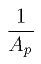に対し（Ｂ）の１を、与えることを欲しない場合であり、他面からいえば、（Ａ）のいずれの所有者も（Ｂ）の１に対し、（Ａ）のを、すなわち（Ｂ）の A
p に対し（Ａ）の１を、与えようと欲しない場合である。この場合のせり上げが、市場に対し何らの影響を生ぜしめ得ないのは明らかである。（Ｂ）で表わした（Ａ）の価格として A
p 以下の価格すなわち（Ａ）で表わした（Ｂ）の価格として以上の価格を成立せしめれば、（Ａ）の需要者すなわち（Ｂ）の供給者はあるであろうが、（Ｂ）の需要者すなわち（Ａ）の供給者はないであろう。そしてまたもし（Ａ）で表わした（Ｂ）の価格として以下の価格を作れば、すなわち（Ｂ）で表わした（Ａ）の価格として A
p より以上の価格を成立せしめれば、（Ｂ）の需要者すなわち（Ａ）の供給者はあるであろうが、（Ａ）の需要者すなわち（Ｂ）の供給者はないであろう。
六五 次に、曲線の形状を注意して観察すれば、二曲線の間に多数の交点がある場合があり得ることが解る。まことにもし二商品（Ａ）、（Ｂ）について、（Ｂ）をもってする（Ａ）の需要が曲線 A
dA
p を示し、（Ａ）をもってする（Ｂ）の需要が曲線 B
d'B
p' を示すとすれば、この曲線 B
d'B
p' は曲線 NPQ と三つの点 B, B', B'' において交わるであろう。この場合には、（Ｂ）と交換せられる（Ａ）の供給曲線 KLM は、曲線 K'L'M' となるのであって、これは三つの点 A, A', A'' において曲線 A
dA
p に交わるであろう。A, A', A'' はそれぞれ B, B', B'' 点に対応する。この場合には二商品（Ａ）、（Ｂ）の相互の交換の問題に三つの解があり得る。なぜなら曲線 A
dA
p, B
d'B'
p に包まれて互に逆数である底辺をもちかつ高さが互に他方の面積に等しい二つの矩形の三組があり得るからである。だがこれら三つの解は、いずれも同一の価値をもつものであろうか。
六六 三つの組のうち、まず、点 A' と B' の組、及び点 A'' と点 B'' の組を検討すれば、それらは、ただ一つの解しかあり得ない場合における点Ａ及びＢの組と同様の状態にあることが解る（第六〇節）。曲線 A
dA
p は A' 点すなわち二曲線 A
dA
p,K'L'M'
［＃「'」は底本では下付き］ の交点の右方であるかまたは左方であるかにより、曲線 K'L'M' より小であるかまたは大である。同様に曲線 B'
dB'
p は、B' 点すなわち二曲線 B'
dB'
p と NPQ とが交わる点の右方であるかまたは左方であるかにより、曲線 NPQ より小であるかまたは大である。また曲線 A
dA
p は、 A'' 点の右方であるかまたは左方であるかにより曲線 K'L'M' より小であるかまたは大である。同様にまた曲線 B'
dB'
p は、B'' 点の右方であるかまたは左方であるかにより、曲線 NPQ
［＃「NPQ」は底本では「NRQ」］ より小であるかまたは大である。
これら二つの場合にあっては、均衡点の彼方において、商品の供給はその需要を超え、価格の下落すなわち均衡点への復帰を生ずる。また均衡点の此方において、商品の需要はその供給を超え、価格の騰貴すなわち均衡点への前進が生ずる。だからこの均衡を、私共は、垂直線上にある重心の上方に
懸吊点を有する物体が、垂線上から離れるとき、重力によって自ら均衡点に落ち付く所の均衡に、比べることが出来る。この均衡は
安定均衡（
quilibre stable）である。
六七 点 A, B は同様ではない。Ａ点の右においては曲線 A
dA
p は曲線 K'L'M' より大であり、左においては小である。同様にＢ点の右においては、曲線 B'
dB'
p は曲線 NPQ より大であり、左においてはより小である。だからこの場合には、均衡点の
彼方において、商品の需要はその供給より大であって、これは価格の騰貴を生ぜしめる。換言すれば、均衡点を離れしめる。そしてこの場合にもまた均衡点の
此方においては、商品の供給はその需要より大であり、これは価格の下落を生ぜしめる。すなわち均衡点を離れしめる。故にこの均衡は、支点が縦線上の重心より下にある物体の均衡に比すべきもので、もし重心が縦線を離れるとすると、ますますこれを遠ざかり、これを支点の下に置くのでなければ、自ら重力によっては復帰をしない。これは
不安定均衡（
quilibre instable）である。
六八 故に実のところ、A', B' の組と A'', B'' の組とがこの問題の二つの解法を成すものであり、A, B の組は、これら二つの解法の各々のそれぞれの領域の分岐点と極限とを示すに過ぎない。p
b=μの彼方では、（Ａ）で表わした（Ｂ）の価格は、均衡価格 p''
b すなわち B'' 点の横坐標に近づいていく。その此方では、価格 p'
b すなわち B' 点の横坐標に近づいていく。これと相関的に、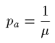の此方においては、（Ｂ）で表わした（Ａ）の価格は、均衡価格 p''
a すなわち A'' の横坐標に近づいていく。この彼方においては、それは、価格 p'
a すなわち A' 点の横坐標に近づいていく。
容易に認め得るように、この事実は、商品の性質により、（Ｂ）で表わした（Ａ）の価格が小さいとき需要せられる大なる量の（Ａ）が、（Ａ）で表わした（Ｂ）の価格が大なるとき需要せられる小なる量の（Ｂ）に等価であり得ると同時に、また（Ｂ）で表わした（Ａ）の価格が大なるとき需要せられる小なる量の（Ａ）が、（Ａ）で表わした（Ｂ）の価格が小なるとき需要せられる大なる量の（Ｂ）に等価となり得る場合に現われる。そこでせりが、（Ｂ）で表わした（Ａ）の価格の小なるものと、（Ａ）で表わした（Ｂ）の価格の大なるものとをもって始まるか、または（Ａ）で表わした（Ｂ）の価格の小なるものと、（Ｂ）で表わした（Ａ）の価格の大なるものとをもって始まるかに従い、これら二つの均衡の第一に終るかまたは第二に終ることとなるのである。多数の商品が価値尺度財または貨幣の仲介により互に交換せられる場合にも、なおこの事実が可能であるか否か。私は後にこれを考察しよう。
六九 以上の研究にあっては、需要曲線 A
dA
p, B
dB
p, B'
dB
p' は二つの坐標軸を切ると仮定せられている。けれども需要曲線が存在量の双曲線と一致し、これらの坐標軸に漸近線をなす極端な場合をも研究せねばならぬ。
例えば A
dA
p が双曲線 D
ap
a=Q
b と一致し、（Ｂ）はあらゆる価格においてすべて供給せられるとすると、方程式〔１〕は、
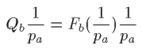
となる。これは点 Q
b を通る曲線と曲線 KLM とが交点 π
a において交わることを示す。ただし
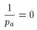 すなわち pa=∞
なる場合の解を考慮外に置く。
そして、方程式〔２〕は、
Qb=Fb(pb)
となる。これは、曲線 B
dB
p と、ON'=Q
b の距離を保って価格の軸に平行に引いた直線 N'P'Q' との交点が π
b にあることを示す。
七〇 最後に、もし二商品がすべての価格で供給せられるとすれば、同時に
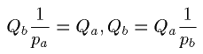
となるべく、これらは p
a,p
b を次のような値とならしめるであろう。
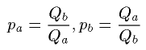
だから、この最後の場合には、二商品は純粋に単純に存在量に反比例して交換せられる。すなわち次の方程式に従って交換せられる。
Qava=Qbvb
そして容易に認め得られるように、存在量と交換量とが相等しいのは、二商品の有効需要と有効供給とが相等しいことを表わしている。
［＃改ページ］
第八章 利用曲線または欲望曲線。商品の利用の最大の法則
要目 七一 部分的需要曲線の出発点を決定する事情。外延利用。七二 傾斜と到達点を決定する事情。強度利用。七三 所有量の影響。七四 利用または欲望の測定単位の仮説。利用曲線または欲望曲線の構成。七五 それらは有効利用及び稀少性を所有量の函数として表示した曲線である。七六 交換は欲望の最大満足の見地から行われる。七七 Ｂの量 Ob とＡの量 da との交換は、交換後においてＡの稀少性とＢの稀少性との比が価格 pa に等しいときに有利である。七八、七九 この交換は Ob 及び da より小なるかまたは大なる他のすべての二商品の交換よりも有利である。八〇 それ故稀少性の比が価格に等しいときに、欲望の最大満足が生ずる。八一 最大満足の条件から導き出された需要曲線の方程式。八二 無限小による解法。八三、八四 欲望曲線が不連続の場合。
七一 ここまでは、交換の事実の性質について研究をしてきたが、この研究により、またこの事実の原因の研究も可能となる。実際もし価格が需要の曲線から数学的に出てくるとすれば、需要曲線の成立及び変化の第一原因と条件とは、また価格の成立及び変化の第一原因と条件であるべきである。
故に今、部分的需要曲線例えば（Ｂ）の所有者（１）の（Ａ）の対するせり上げの傾向を幾何学的に示す所の a
d,1a
p,1（第一図）（第五一節）に立返り、まずこの曲線が需要の軸を離れてゆく点 a
d,1 の位置を決定する事情を考察してみる。長さ Oa
d,1 は（Ｂ）の所有者（１）が（Ａ）を、この価格が零であるときに、有効に需要する量すなわちこの商品が無償で与えられるときにこの人によって消費せられる量を示す。この量は一般に何によって決定せられるか。それは、商品の利用の一種であって私がここで
外延利用（utilit
d'extension または utilit
extensive）と呼ぶ所のものによって決定せられる。私がここで外延利用という名辞を用いたのは、この利用を有する種類の冨によって充足せられる欲望の普遍性と数量とが、この欲望を感ずる人々の多少及び感ずる強度の大小によって決定せられるからである。一言でいえば、獲得のために何らの犠牲を提供する必要が無いとすれば、その場合にこの商品が多量に消費せられるかまたは少量だけしか消費せられないかが、外延利用である。ところで（Ａ）の外延利用は（Ａ）の需要曲線にしか影響を与えないという意味で、また同様に（Ｂ）の外延利用は（Ｂ）の需要曲線にしか影響を与えないという意味で、この第一の事情は簡単であり、絶対的である。かつ外延利用は価格零において需要せられる量であるから計量出来る大いさであるという意味において、この第一の事情は計量し得られるものである。
七二 だが外延利用は利用のすべてではない。それはこの一因子に過ぎない。このほかに、今曲線 a
d,1a
p,1 の傾斜を決定する事情と、この曲線が価格の軸に達する点 a
p,1 の位置を決定する事情とを研究すれば、直ちに明らかになってくる他の利用がある。ところで曲線の傾斜は二つの量すなわち価格の増大とこの増大によって惹き起される需要の減少との比に他ならない。この比は一般に何に依存するか。それは私が
強度利用（utilit
d'intensit
または utilit
intensive）と名附ける利用の一種に依存するのである。この利用を強度利用と名附ける理由は、この利用を有する富によって満足される欲望が、価格が高いのにもかかわらず、多くの人々の間に存するかまたは少数の人々の間に存するか、また各人においては強く存在するかまたは弱く存在するかによって、この利用が強いものであるかまたは弱いものであるかが明らかになるからである。一言でいえば、この商品を獲得するために払う犠牲の程度が、商品の消費量の大小に影響するのは、強度利用の結果である。この事情は、外延利用と異り、（Ａ）の需要曲線の傾斜が、（Ｂ）の需要曲線と同じく、（Ａ）の強度利用及び（Ｂ）の強度利用の双方によって決定せられるという意味において複雑であり、相対的である。だから需要曲線の傾斜を、
需要の減少の価格の増大に対する比の極限〔訳者註、需要を価格につき微分した微分係数〕――これは数学的に決定することの出来る事情であるが――と定義すれば、それは二商品の利用の強度の複雑な関係に他ならないということになる。
七三 なお（Ａ）の需要曲線 a
d,1a
p,1 の傾斜に影響を有する他の事情がある。それは（Ｂ）商品の所有者（１）の手中に存在する（Ｂ）の量 q
b である。一般に部分的需要の曲線が部分的存在量の双曲線より小さいのは、総需要の曲線が全部量の双曲線より小さい如くである。故に部分量の双曲線が原点に近づきつつ、または原点を離れつつ変化するかに従って、部分的需要の曲線もそれと同様に変化し、あたかも強度利用の変化の結果として現われるように見える。これら二つの場合におけるこの必然的関係を、図は忠実に示している。
七四 この分析は不完全でありながら、一見これ以上にこの分析を一層深く押し進めることは不可能のように見える。なぜなら絶対的強度利用は、外延利用及び所有量と異り、時間にもまた空間にも、直接のかつ計量し得る関係を有しないため、測定し得られないという事実があるからである。けれどもこの困難は越え得ないものではない。今私は、右のような関係が存在すると仮定し、外延利用、強度利用、及び所有量がそれぞれ価格に及ぼす影響を正確に数学的に説明しようと思う。
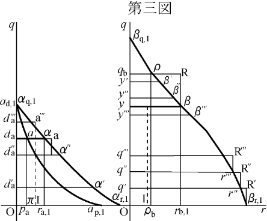
故に私は、欲望の強度すなわち強度利用を計量し得る所の、かつ同種類の富のすべての単位にのみならずあらゆる種類の富のすべての単位に共通な尺度の存在を仮定する。今縦軸 Oq 横軸 Or を二つの坐標軸であるとする（第三図）。縦軸 Oq 上に、原点 O から順次に長さ Oq', q'q'', q''q''', ……をとり、これらをもって、（Ｂ）の所有者（１）が自ら現にこれらを所有するとすれば、ある時間のうちに順次に消費していくであろう所の単位数を表わさしめる。かつ外延利用及び強度利用は、この時間中、各交換者に対し
一定であると仮定する。これによって、利用という表現のうちに、私は時間を暗黙のうちにだけ示しておくに止めることが出来る。もし反対に、利用が時間の函数として変化するものであると仮定すると、問題の中に時間が明示的に現われてこなければならぬ。この場合には経済静態を離れて、動態（dynamique）に入ることになる。
ところでこれら順次の単位は、所有者（１）に対し、充足要求の最も強い欲望を充すべき第一の単位から、消費すれば飽満を感ぜしめるような最終の単位まで、次第に強さを減じていく強度利用をもつものであって、私共はこの減少を数学で表現しなければならぬ。もし商品（Ｂ）が、例えば家具、衣服のように、自然に単位ずつ消費せられるとすれば、横軸 Or の上、及び点 q', q'' ……等を通って横軸に平行な線の上に、原点及びこれらの q', q'' から長さ Oβ
r,1, q'r'', q''r''' をとり、これらでそれぞれ、これらが表わす単位の強度利用を表わさしめる。また矩形 Oq'R'β
r,1, q'q''R''r'', q''q'''R'''r''' を作る。かようにして、曲線 β
r,1R'r''R''r'''R''' を得る。この曲線は連続ではない。反対にもし（Ｂ）が、例えば食料品のように、微分小量ずつ消費し得られるとすると、利用の強度は、一単位から次の単位へと、減少するのみでなく、各単位の第一部分から最後の部分まで順次に減少し、不連続曲線 β
r,1R'r''R''r'''R''' は連続曲線 β
r,1r''r''' … β
q,1 に変化する。同様にして、（Ａ）について曲線 α
［＃「α」は底本では「a」］r,1α
［＃「α」は底本では「a」］q,1 を得ることが出来る。かつ曲線が不連続な場合と同じく、連続な場合にも、利用の強度は第一単位またはこの単位の第一部分の強度から、消費せられる最後の単位またはこの単位の最後の部分の強度まで、逓減する事実が認められる。
長さ Oβ
q,1, Oα
q,1 は、所有者（１）に対し商品（Ｂ）及び（Ａ）がもつ外延利用すなわち所有者（１）が商品（Ｂ）及び（Ａ）についてもつ欲望の外延を示す。面積 Oβ
q,1β
r,1,Oα
q,1α
r,1 は、商品（Ｂ）及び（Ａ）が同じ所有者（１）に対してもつ
可能的利用（utilit
s virtuelles）すなわち所有者（１）が商品（Ｂ）及び（Ａ）についてもつ欲望の外延及び強度の合計を示す。故に曲線 α
r,1α
q,1,β
r,1β
q,1 は、所有者（１）につき、（Ｂ）及び（Ａ）の
利用曲線（courbes d'utilit
s）または
欲望曲線（courbes de besoins）を示す。だがそれだけではない。これらの曲線はまた二面の性質をもっている。
七五 ある商品の消費せられた量により、外延においてまた強度において、充足せられた欲望の合計を
有効利用（utilit
effective）と呼べば、曲線 β
r,1β
q,1 は、（Ｂ）の消費量の函数としてのこの人に対する有効利用の曲線を示す。例えば長さ Oq
b によって表わされる消費量 q
b のこの人に対する有効利用は面積 Oq
bρβ
r,1 によって表わされる。そして商品の消費せられた量によって充される最後の欲望の強度を
稀少性（raret
）と呼べば、曲線 β
r,1β
q,1 は（Ｂ）の消費量の函数としてのこの所有者に対する
稀少性の曲線（courbe de raret
）となるであろう。だから長さ Oq
b によって表わされる消費量 q
b の稀少性は、長さ
qbρ=Oρb
によって表わされる ρ
b である。同様に曲線 a
r,1a
q,1 は（Ａ）の消費量の函数としての有効利用の曲線または稀少性曲線。それ故に横軸及び縦軸を、それぞれ
稀少性の軸（axe des raret
s）、
量の軸（axe des quantit
s）と呼ぶことが出来るわけである。繰り返していうが、稀少性は所有量が減少するときに増加するものであり、その逆もまた真であることを、我々は認めねばならぬ。
代数的には、有効利用は、消費量の函数として、方程式
u=Φa,1(q),u=Φb,1(q)
によって与えられ、稀少性はその微分係数 Φ'
a,1(q), Φ'
b,1(q) によって与えられる。もしまた稀少性を、消費量の函数として、方程式
r=φa,1(q),r=φb,1(q)
によって表わせば、有効利用は 0 より q までの定積分
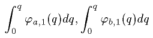
によって与えられる。故に u と r のそれぞれの表現には、次の関係がある。
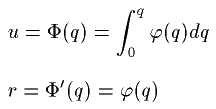
七六 かようにして、（Ｂ）の所有者（１）に対する（Ａ）の外延利用及び強度利用は、幾何学的には、連続曲線 α
r,1α
q,1 により、代数的には、この曲線の方程式
r=φa,1(q)
によって表わされ、この同じ所有者に対する（Ｂ）の外延利用及び強度利用は、幾何学的には、連続曲線 β
r,1β
q,1 により、代数的には、この曲線の方程式
r=φb,1(q)
によって表わされる。そして長さ Oq
b によって表わされる量 q
b は、この所有者が所有する（Ｂ）の量であるが、ある価格が現われたとき、この所有者が（Ａ）に対してもつ需要はいかなるものであるか。それを正確にし得るか否かを見ようと思う。
欲望曲線を作った方法並びにこれらの曲線を作るとき認められたこれらの曲線の性質から明らかであるように、この人が（Ｂ）の q
b 量を所有し、そのすべてを消費するとすれば、面積 Oq
bρβ
r,1 によって表わされる欲望の合計量が満足せられる。だがこの人は、一般に、このすべてを消費しないであろう。なぜなら一般に、この人は自分が所有するこの商品のただ一部分のみを消費し、他の部分を、市場の価格で、（Ａ）のある量と交換して、より多い合計量の欲望を満足し得るからである。例えば（Ｂ）で表わした（Ａ）の価格が p
a であるとき、Oy で表わされる y 単位数の（Ｂ）のみを残し、yq
b によって表わされる部分すなわち
ob=qb［＃「qb」は底本では「qq」］-y
を、Od
a によって表わされる d
a 単位数の（Ａ）と交換すれば、この個人は、二つの面積 Oyββ
r,1 及び Od
aαα
r,1 によって表わされる欲望の合計を満足することが出来、この量は先の合計量より大となることがあり得る。交換を行うに当ってこの個人は出来得る限り多くの欲望の合計量を満足しようとすると仮定してみると、p
a が与えられているのであるから、d
a は、二つの面積 Oyββ
r,1,Od
aαα
r,1 の合計が最大となるような条件によって決定せられることは明らかである。ところでこの条件は、量 d
a 及び y によって満足せられる欲望の最後のもののそれぞれの強さ r
a,1 と r
b,1 との比すなわち交換後におけるそれぞれの稀少性の比が p
a に等しいということである。
七七 いまこの条件が充されたと仮定し、
ob=qb-y=dapa
ra,1=parb,1
であるとすると、この式から p
a を消去し、
dara,1=obrb,1
を得べく、d
a, o
b, r
a,1, r
b,1 を、これらを表わす長さ Od
a, q
by, d
aα, yβ で置き替えれば
Oda×daα=qby×yβ
それ故に二つの矩形 Od
aαr
a,1, yq
bRβ の面積は相等しい。しかるに曲線 α
r,1［＃「,1」は底本では「,1,」］α
q,1, β
r,1β
q,1 の性質によって、一方において
面積 Odaααr,1>Oda×daα
であり、他方
qby×yβ> 面積 yqbρβ
である。故に
面積 Odaααr,1> 面積 yqbρβ
このようにして、（Ｂ）の o
b 量と（Ａ）の d
a 量との交換は我が（Ｂ）の所有者にとって有利である。なぜならこれによって得られる満足を表わす面積は、この交換を
斥けるときに得られる満足を表わす面積より大であるから。だがこれだけの説明では足りない。o
b より小なる（Ｂ）と d
a より小なる（Ａ）とを交換しても、または o
b より大なる（Ｂ）と d
a より大なる（Ａ）を交換しても、いかなる他の交換を行っても、右に述べた交換より有利でないことを証明せねばならぬ。
七八 この証明をなすため、（Ｂ）の o
b 量と（Ａ）の d
a 量との交換の全過程が、相等しくてかつ順次に系列をなすｓ個の部分的交換から成立していると仮定する。しからば交換方程式
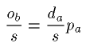
により、（Ｂ）の所有者は、（Ｂ）の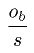をｓ回だけ順次に売渡し、（Ａ）の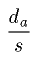をｓ囘だけ順次に購入しつつ、（Ａ）の稀少性を減少し、（Ｂ）の稀少性を増加する。初め価格 p
a より大であった稀少性の比は、かくして、この価格に相等しくなる。従って第一の部分的交換より最後のｓ番目の部分的交換へと、次第に有利の度は減じていくけれども、部分的交換はいずれも有利である。
Od'
a を、Ｏの点より上方に向って、Od
a から切りとった長さとし、q
by' を、q
b より下方に向って q
b［＃「b」は底本では上付き小文字］y から切りとった長さとし、かつこれらの長さを、それぞれ第一の部分的交換において交換される（Ａ）の量及び（Ｂ）の量を表わすものとする。この第一次の部分的交換を行った後には、稀少性の比は減少するけれども、なお仮定によって価格より大である。これらの稀少性を r
a, r
b と名づければ、
ra>parb
である。故に前の方程式により、
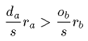
である。, , r
a, r
b を、それぞれ長さ Od'
a, q
by', d'
aα', y'β' で置き換えれば、
Od'a×d'aα'>qby'×y'β'
となる。だが欲望曲線の性質によって、一方においては、
面積 Od'aα'αr,1>Od'a×d'［＃「d'」は底本では「d」］aα'
であり、他方、
qb［＃「b」は底本では上付き小文字］y'×y'β'> 面積 y'qbρβ'
である。故に
面積 Od'aα'αr,1> 面積 y'qbρβ'
である。だから（Ｂ）のと（Ａ）のとの第一交換は（Ｂ）の所有者にとり有利である。同様に、順次に行われていく第二部分以下の交換は、稀少性の比を減少するけれども、なおこの比は仮定によって価格より大であるから、有利であることを証明し得る。この利益が、稀少性の比の減少に伴い、減少していくことは明らかである。
更に、d
ad''
a を、d
a 点から下方に向って d
aO から切りとった長さとし、yy'' をｙ点から上方に向い yq
b から切りとった長さとし、これらの長さは、それぞれ最後の部分的交換において交換せられた（Ａ）の量及び（Ｂ）のを表わすものとする。この最後の交換が行われると、稀少性の比は減少し、ついに、仮定により、価格に相等しくなる。よって、
ra,1=parb,1
であり、交換方程式により
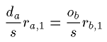
である。, , r
a,1, r
b,1 を、それぞれ長さ d
ad''
a, yy'', d
aα, yβ で置き換えれば、
dad''a×daα=yy''×yβ
しかるに欲望曲線の性質により、一方において
面積 d''adaαα''>dad''a×daα
であり、他方
yy''×yβ> 面積 yy''β''β
このようにして、（Ｂ）のと（Ａ）のとの最後の交換もなお有利である。ところでｓはいかほどにも大きく仮定し得るのであるから、すべての部分的交換は、例外なく、従って想像し得られる限り小さい最後の部分的交換も、有利である。ただ最初の部分的交換はより有利であり、ｓ番目の部分的交換まで、有利の程度が次第に減少する。だから（Ｂ）の所有者（１）は o
b より小なる（Ｂ）の量を供給せぬであろうし、また d
a より小なる（Ａ）の量を需要もせぬであろう。
七九 同様にして、o
b より大なる（Ｂ）の量を供給しないであろうことも、また d
a より大なる（Ａ）の量を需要しないであろうことも、証明することが出来よう。なぜならこの限度を超える部分的交換は、いかに小なる部分的交換であっても、たとい想像し得る限り小さい最初の部分的交換であっても、いずれも不利益であり、また各部分的交換はますます不利益となるからである。そしてこの証明は先の証明と全く同様である。まことに交換の限度すなわち（Ａ）の稀少性と（Ｂ）の稀少性との比が価格 p
a に相等しくなった点を越えて更に、（Ａ）のある量と（Ｂ）のある量とを交換し、（Ａ）の稀少性を減少し続け、（Ｂ）の稀少性を増加し続ければ、r
aarb となる。すなわち rb>pbra となる。だから先に行った証明によって、極限
rb,1=pbra,1
すなわち ra,1=parb,1
に達するまで、（Ａ）のある量と（Ｂ）のある量とを交換すれば、満足の最大に近づくことは、確かである。
八〇 故に（Ｂ）によって表わした（Ａ）の価格 pa において、（Ｂ）の所有者（１）が供給するであろう（Ｂ）の量と、需要するであろう（Ａ）の量とが、
ra,1=parb,1
の関係をもっているとすれば、これらそれぞれの量 ob と da とは、この価格において供給せられるべき量に等しく、これらより少くもなければ、多くもない。
一般に、市場において二商品が与えられているとすると、欲望満足の最大すなわち有効利用の最大は、各所有者にとり、充足せられた最後の各満足の強度の比すなわち稀少性の比が、価格に等しくなったときに現われる。この均等が達せられない限り、交換者は、稀少性が自らの価格と他方の商品の稀少性との積より小さい商品を売り、稀少性が、自らの価格と右の商品の稀少性との積より大なる商品を買うのが、有利である。
だから、交換者は、二商品のうち、自分が所有する一商品の全量を供給するのが、利益であることもあり得べく、また相手の商品を全く需要せぬのが利益であることもあり得るであろう。この点については、後に説明しよう。
八一 方程式
ra,1=parb,1
の中の ra,1 及び rb,1 に、それらの値を置き換えれば、この方程式は
φa,1(da)=paφb,1(y)=paφb,1(qb-ob)
=paφb,1(qb-dapa)
となる。この方程式は、pa の函数としての da を与える。何となれば、この方程式がこれら二つの変数の第二〔訳者註、da〕に関して解かれているとすれば、この方程式は
da=fa,1(pa)
という形をとるからである。これは、所有者（１）が（Ｂ）で（Ａ）を需要する場合の需要曲線 ad,1ap,1 の方程式を、まさしく表わしている。故に、方程式
r=φa,1(q) 及び r=φb,1(q)
が数学的に確定し得られれば、前の方程式もまた数学的に確定する。ただ右に記した方程式が数学的には確定していないために、方程式
da=fa,1(pa)
は経験的に過ぎないものとなっている。
かくて、問題――二商品（Ａ）、（Ｂ）と各交換者に対するこれら二商品の利用曲線すなわち欲望曲線、またはこれら曲線の方程式、及びこれら商品の交換者の各々によって所有せられる量を与えて、需要曲線を決定する問題――は解けるのである。
八二 以上の解法の方式を、既に用いた微分法の記号によって表わすことは、無意義ではあるまい。
（Ｂ）で表わした（Ａ）の価格が pa であるとき、需要せられるべき（Ａ）の量を da とし、供給せられるべき（Ｂ）の量を ob=dapa であるとし、従って保留せられるべき（Ｂ）の量は qb-ob であるとする。そして qb は、所有者（１）が所有する（Ｂ）の量であるから、
[1] dapa+(qb-ob)=qb
また u=Φa,1(q), u=Φb,1(q) をそれぞれ（Ａ）及び（Ｂ）が消費量の函数としてこの人に対してもつ有効利用を表わす式であるとし、従って
Φa,1(da)+Φb,1(qb-ob)
は、最大ならしめるべき有効利用の合計であるとする。函数Φの微分係数は本質的に逓減するから、我が交換者の求める最大利用は、二商品の各消費量によって生ずる利用の微分増加量の代数和が零であるときに得られる。なぜならこれらの微分増加量が互に相等しくなく、かつ互に正負相反しているとすれば、微分増加量のより強い商品をより多く需要して、微分増加量のより弱い商品をより少く需要し、または微分増加量のより弱い商品をより多く供給し、微分増加量のより強いものをより少く供給するのが利益であるからである。故に欲望の最大満足を与える条件は、次の方程式によって表わされる。
Φ'a,1(da)dda+Φ'b,1(qb-ob)d(qb-ob)=0
ところで一方において消費量の函数としての有効利用の函数の導函数は、稀少性に他ならないし、他方において方程式［１］から生ずる方程式
padda+d(qb-ob)=0
により、二商品のそれぞれの消費量の微分と二商品のそれぞれの他方で表わしたそれぞれの価格との積の代数和は零である。
故に
φa,1(da)=paφb,1(qb-dapa)
私は微分法に通暁しない読者のためにこれを説明した。しかしその他の読者は次のようにして直ちに理解せられるであろう。次の二式の一方または他方を da について微分せよ。
Φa,1(da)+Φb,1(qb-dapa)
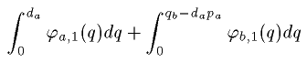
そしてその導函数を０と置けば、
φa,1(da)-paφb,1(qb-dapa)=0
すなわち
φa,1(da)=paφb,1(qb-dapa)
となる。そしてこの方程式の根は極大を示し、極小を示さない。けだし、函数 Φ'a,1(q) すなわち φa,1(q), Φ'b,1(q) すなわち φb,1(q) は本質的に減少函数であるから、第二次導函数
φ'a,1(da)+p2aφ'b,1(qb-dapa)
は必然的に負であるからである。
八三 右に与えた私の証明は、欲望曲線の連続を前提とする。だが我々は、欲望曲線が不連続である場合をも研究せねばならぬ。厳密にいえば、これらの場合には、（一）連続曲線をもつ商品と不連続曲線をもつ商品との交換、（二）不連続曲線をもつ商品と連続曲線をもつ商品との交換、（三）不連続曲線をもつ商品と、同じく不連続曲線をもつ商品との交換の三箇の場合があり得よう。けれども、後に明らかにするように、我々はすべての商品の価値をその価値と関係せしめそしてすべての商品を購い得る商品、従って連続的な欲望曲線をもち得るしもたねばならぬ所の一つの商品を選ぶのであるから、第一の場合だけを研究すればよい。
常例により、（Ｂ）の所有者（１）に対する（Ｂ）の利用曲線を βr,1βq,1（第三図）とし、この人が所有する（Ｂ）の量を qb とする。そして点 a 及び a''' を通る階段形の曲線を、この交換者に対する（Ａ）の利用曲線であるとする。（Ａ）は単位ずつによってしか買い得られないのであるから、そして pa は（Ｂ）で表わした（Ａ）の価格であるから、（Ｂ）は pa に等しい量によってしか売られない。もし長さ dad''a 及び dad'''a がそれぞれ（Ａ）の買われた最後の単位と買われない最初の単位とを表わし、また長さ yy'' 及び yy''' がそれぞれ（Ｂ）の売られた最後の量と売られない最初の量とを表わすものとすれば、交換者が最大満足を得るときには、次の二つの不等式が成り立つ。
面積 yy''β''βaa
面積 yy'''β'''β>d'''aa'''
今 m'' と m''' とで、それぞれ yβ と y''β'' との中間の長さ及び yβ と y'''β''' との中間の長さを表わすこととすれば、これらは、それぞれ（Ｂ）の売られた最後の量の利用の平均強度及び売られない最初の量の利用の平均強度を示す。これらに
yy''=yy'''=pa
を乗ずれば、それぞれ yy''β''β 及び yy'''β'''β に等しい二つの面積が得られる。そこで相合して（Ａ）の需要すなわち da を決定する二つの不等式を次の形に立てることが出来る。
daa=pam''+ε''
d'''aa'''=pam'''-ε'''
これら二つの方程式から、容易に次の結果を導き出すことが出来る。
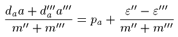
ところで、m''+m''' は 2yβ に極めて近い量であり、かつ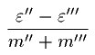ははなはだ小さい量である。故に容易に
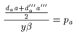
が得られる。
よって、連続的欲望曲線をもつ商品と不連続的欲望曲線をもつ商品との交換の場合において、最大満足が現われるときには、買われた商品の充された最後の欲望の強度と充されない最初の欲望の強度との平均の、売られたる商品の充された最後の欲望の強度に対する比は、価格にほぼ等しい。
私はほぼ等しいとあえていう。なぜなら（Ｂ）で表わした（Ａ）の価格と、（Ｂ）の充された最後の欲望の強度との積 pa×yβ は、（Ａ）の充された最後の欲望の強さと充されない最初の欲望の強さの平均に等しくないことがあり得るのみでなく、また、これら二つの量各々より大であることも、小であることもあり得るからである。実際、必然的に
であり、
daa> 面積 yy''β''β
であるけれども、必然的には
daa>pa×yβ
ではない。そしてもし反対に
であるとすると、daa 及びこの daa より小さい d'''aa''' は、いずれも pa×yβ より小である。同様に、必然的に、
面積 yy'''β'''β>pa×yβ
であり、
d'''aa'''< 面積 yy'''β'''β
である。しかし必然的には、
ではない。そしてもし
d'''aa'''>pa×yβ
であるとすると、d'''aa''' 及びこの d'''aa''' より大なる daa は、いずれも pa×yβ より大である。
八四 再び二つの不等式
面積 yy''β''βaa
面積 yy'''β'''β>d'''aa'''
を見よう。pa が減少すると、これら二つの不等式の最初の項は共に減少する。これによって、第一式の不等関係には変化は生じない。しかし第二式の不等関係が反対となり、da が少くとも一単位だけ増加する時が来る。pa が増加すると、二つの方程式の初項は増加する。これによって、第二式の不等関係は変化しない。しかし第一式の不等関係が反対となり、da が少くとも一単位だけ減少する時が来る。故に（Ａ）の需要曲線は逓減しかつ不連続である。
解析的には、（Ｂ）で表わした（Ａ）の任意の価格 pa が叫ばれるとき、（Ｂ）の所有者は、欲望強度 r1, r2 ……を充す所の（Ａ）の一、二単位を需要し、この同じ r1, r2 ……量で計量せられた（Ａ）の有効利用を得れば、保留せられる（Ｂ）の量は、qb-pa, qb-2pa ……となり、定積分
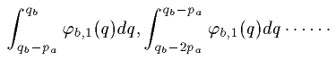
で計られる（Ｂ）の有効利用が捨てられる。そして最大満足を与える需要 da は次の二つの不等式によって決定せられる。
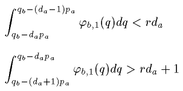
このようにして、pa のすべての値に対応する da が数学的に決定せられるであろうし、（Ｂ）をもってする（Ａ）の需要――価格の函数としての――の逓減的な不連続曲線が構成せられるであろう。
［＃改ページ］
第九章 需要曲線論。二商品間における交換の問題の数学的解法の一般的方式
要目 八五 価格零における需要。それは外延利用に等しい。八六 （Ａ）の需要が零の場合の価格。八七 （Ｂ）の供給が所有量に等しい場合の価格。八八 供給が所有量に等しい条件、所有量の双曲線と需要曲線とが交わること。八九 双曲線は交点の間では需要曲線となる。九〇 所有量の減少。九一 増加。九二 一般の場合は二商品の所有者の場合である。部分的有効需要の二つの方程式または曲線。九三、九四、九五 各商品の需要方程式、または曲線は同じ商品の供給を価格の函数として表わす式または曲線でもある。九六 二商品間の交換の場合におけるせり上げの傾向を表わす方程式の一般体系。九七、九八 方程式の解法。
八五 部分的需要の方程式
da=fa,1(pa)
は、
φa,1(da)=paφb,1(qb-dapa)
を da に関して解いたと仮定した方程式に他ならないから、我々は、部分的需要の方程式を、この後の形において論究することが出来る。
まず、pa［＃「pa」は底本では「ra」］=0 とすれば、この方程式は
φa,1(da)=0
となり、その根は da ならば、pa を減少せねばならぬ。私共はここにも有効供給及び有効需要の法則を認める。
註一 需要曲線及び供給曲線のこの吟味を、利用曲線の逓減から演繹せられた二つの事実の説明によって補充するのが便利であろう。これらの二つの事実の一つは、一種の仮説として採られたもので（第四八節）、需要の曲線は常に逓減するということである。その二は、第一から演繹せられたもので、供給曲線は、価格の増加するに伴い、初めゼロから逓増し、次に逓減してゼロ（無限遠点において）に帰るということである（第四九節）。私は、これら二つの証明を、一般化して、任意数の商品の所有者間の任意数の交換の場合について行って、附録第一、価格決定の幾何学的理論、第一節、多数の商品間の交換について、のうちに述べておいた。
［＃改ページ］
第十章 稀少性すなわち交換価値の原因について
要目 九九 二商品間の交換の解析的な定義。一〇〇 交換価値と稀少性との比例性。欲望曲線が不連続な場合に関する留保。一〇一 交換価値の原因としての稀少性。交換価値は相対的事実であり、稀少性は絶対的事実である。個人的稀少性しか存在しない。平均的稀少性。一〇二 二商品の相対的価格の変動。変動の四原因。これらの原因を証明する可能性。一〇三 均衡価格の変動の法則。
九九 かくの如く、分析をおし詰めれば、利用曲線と所有量とが市場価格の成立すなわち均衡価格の成立に必要にしてかつ充分なる要素である。これらの要素から、まず部分的並びに全部需要曲線が数学的に出てくるが、その理由は、各人に自己の欲望の最大満足を得ようと努める事実があるからである。次に部分的及び全部需要曲線から、市場価格すなわち均衡価格が数学的に出てくるのであるが、その理由は、市場には唯一の価格すなわち全部有効需要と全部有効供給とを相等しからしめる価格しかあり得ない事実があるからである。換言すれば、各人は自ら与える所の物に比例して受けねばならないしまた受ける所の物に比例して与えねばならないという事実があるからである。
よって、自由競争の行われる市場において二商品の間に行われる交換は、二商品のいずれか一方のすべての所有者なりまたは双方のすべての所有者なりが、共通にして同一の比率で、売る所の商品を与え買う所の商品を受ける条件の下において、各人の欲望の最大満足を得ることの出来る行動である。
社会的富の理論の主な目的は、この命題を一般化し、これがまた、二商品間の交換と同様に、多数の商品間の交換にも相通ずるものであり、また交換におけると同じく、生産の自由競争の場合にも相通ずるものであることを明らかにするにある。社会的富の生産の理論の主な目的は、この命題から帰結を導き出し、農業工業及び商業の組織の法則がこの命題からいかにして出てくるかを示すにある。だから、この命題は純粋経済学、応用経済学のすべてを貫くものであると、いい得よう。
一〇〇 va, vb は商品（Ａ）及び（Ｂ）の交換価値であり、その比は均衡市場価格を示し、ra,1, rb,1, ra,2, rb,2, ra,3, rb,3 ……は交換者（１）、（２）、（３）……における交換後の稀少性すなわち充足せられた最終の欲望の強度であるから、最大満足の定理により、交換者（１）にとっては、
であり、交換者（２）にとっては、
であり、交換者（３）にとっては、
である。……故に
である。これをまた次のように表わすことも出来る。
va:vb
::ra,1:rb,1
::ra,2:rb,2
::ra,3:rb,3
:: …… ……
なお注意せねばならぬが、もし商品がある一定の単位で消費せられ、従って欲望曲線が不連続であれば、稀少性の表の中に既に知ったように（第八三節）、充された最後の欲望の強度と充されない最初の欲望の平均にほぼ近い比例項を特に目立つように記入せねばならぬ。
また、稀少性の比のうち一つまたは多くにおいて、比の二項中の一方が欠けることも可能である。例えば所有者（２）は、価格が pa であるときは、（Ａ）の需要者でないことがあり得よう。この場合にはこの人にとって（Ａ）の稀少性はあり得ない。なぜなら ra,2 の項は、この所有者が感ずる（Ａ）の最初の欲望の強度 αr,2 より大なる項 parb,2 によって置き換えられねばならぬからである（第八六節）。また例えば所有者（３）が、pa の価格においてはすべてを投じて（Ａ）を需要する人である場合があり得る。すなわち（Ｂ）の所有量または存在の全量の供給者である場合があり得る。この場合には、この人にとっては、（Ｂ）の稀少性はない、充された欲望がないからである。項 rb,3 はこの所有者が感ずる（Ｂ）の最初の欲望の強度 βr,3 より大なる項 pbra,3 によって置き換えられねばならぬ（第八七節）。もっとも parb,2, pbra,3 の項を括弧に入れて、上の表の中に記すことも出来よう。そのときは稀少性は充されたまたは充されねばならぬ最後の欲望の強さと定義されねばならぬ。
これら二つの留保をすれば、私共は次の命題を立てることが出来る。
市場価格または均衡価格は稀少性の比に等しい。他の言葉でいえば、
交換価値は稀少性に比例する。
一〇一 二商品の間に行われる交換に関し、交換の数学的理論の研究の当初に、私は一つの目的を定めた（第四〇節）。それは、経済学及び社会経済学の目的と分け方を取扱った第一編でなしたように、稀少性から出発して交換価値に到らないで、交換価値から出発して稀少性に到ろうとすることであった。今私はここにこの目的を達した。実際、ここに見るような稀少性すなわち充された最後の欲望の強度は、先に私が利用と限られた量との二条件をもって定義した稀少性（第二一節）に全く相一致する。もしある物に欲望が無く、外延利用も強度利用もなく、換言すれば、この物が利用のない無益のものであるとしたら、充された最後の欲望というものはあり得ない。また物が利用曲線をもっていても、外延利用より大なる量において存在し、すなわち量において無限であるならば、充された最後の欲望の強度はあり得ない。だから、ここでいう稀少性は、先にいった稀少性に他ならない。そして、このことは、稀少性が評価し得られる大さと考えられ、また交換価値がそれに伴うのみでなく必然的にそれに比例することがあたかも重量が質量と比例する如くである場合にのみ、あり得るのである。ところで稀少性と交換価値とが、同時に存在し比例を保つ二つの現象であることがたしかだとしたら、たしかに稀少性は交換価値の原因である。
交換価値は重量のように相対的事実であり、稀少性は質量のように絶対的事実である。二商品（Ａ）、（Ｂ）があり、その一方が無利用となり、または利用があっても量において無限となれば、それはもはや稀少ではなく、交換価値をもたない。この場合には、他方の商品も交換価値をもたなくなる。しかしこの商品は稀少でなくなりはしない。所有者である人々の各々において種々の程度に稀少であり、それぞれ一定の稀少性をもつのである。
私はここに所有者である人々の各々においてといった。まことに、（Ａ）商品または（Ｂ）商品の稀少性というような一般的なものはあり得ない。従って（Ａ）の稀少性の（Ｂ）の稀少性に対する一般的比、または（Ｂ）の稀少性の（Ａ）の稀少性に対する一般的比なるものも、もちろんあり得ない。（Ａ）または（Ｂ）の所有者（１）、（２）、（３）……に対するこれら商品の多数の稀少性があり、これら所有者に対する（Ａ）の稀少性の（Ｂ）の稀少性に対する多数の比があるのみである。稀少性は個人的であり、主観的である。交換価値は現実的であり、客観的である。だから、稀少性、有効需要、所有量を速力、通過した空間、通過に要した時間に対比し、また速力をある空間を通過するに用いられた時間に対する通過距離の導函数と定義するように、稀少性をも、所有量に対する有効利用の導函数と定義し得るのは、それぞれの個々の人についてである。
もし（Ａ）商品の稀少性一般または（Ｂ）商品の稀少性一般のようなものを考えようとすれば、交換後の各人におけるこれら商品の各々の稀少性の算術平均である平均稀少性をとるより他はない。この概念はあたかも与えられた国における平均身長、平均寿命というようなもので、少しも異常なものではなく、ある場合にははなはだ有益なことさえある。これらの平均稀少性もまた交換価値に比例する。
一〇二 経済学の理論家が、均衡価格の成立の法則を立てるに必要な時間の間、価格の要素を不変であると仮定するのは、理論家としての権利である。けれどもひとたびこの仕事が終れば、価格の要素は本質的にはなはだしく変化するものであることを想い起し、従って均衡価格の変化の法則を立てねばならぬことは、理論家の義務である。これはここになさねばならぬ残された問題である。かつ先の第一の仕事は直ちにこの第二の仕事に導く。けだし価格成立の要素はまた価格変動の要素でもあるからである。価格成立の要素は商品の利用と、これら商品の所有量とである。それ故にこれらはまた価格変動の第一原因であり、条件である。
同一の市場で、（Ａ）と（Ｂ）との交換が、まず、上述の市場価格すなわち（Ｂ）で表わした（Ａ）の価格、（Ａ）で表わした（Ｂ）の価格 μ で行われ、次に、別な価格すなわち（Ｂ）で表わした（Ａ）の価格、（Ａ）で表わした（Ｂ）の価格 μ' で行われたと想像すれば、この価格の変化は、次の四つの原因の一つまたは数箇、または全体から来ているといい得よう。
一、（Ａ）商品の利用の変化。
二、（Ａ）商品の所有者の一人または多数が所有するこの商品の量の変化。
三、（Ｂ）商品の利用の変化。
四、（Ｂ）商品の所有者の一人または多数が所有するこの商品の量の変化。
これらの事情は絶対的であって、正確に決定し得られる。もちろん実際においてはこの決定は多少困難であるが、理論的には、これを不可能であるという理由はない。すべての交換者につき、その部分的需要曲線の要素の観点から調査を行えば、問題は直ちに解ける。そして価格変動の主原因のみが、観察者の注意を引く場合もある。例えば（Ｂ）商品のある著しい性質が発見せられると同時に、価格が μ から μ' に騰貴すると想像し、またはこの商品の存在量の一部がある偶然的事故によって破壊せられると同時に、価格が μ から μ' に変化すると想像すれば、私共はこれら二つの出来事の各々を突発的に来た価格騰貴の原因となさざるを得ないであろう。人々が欲しないで何事かをなすことはあり得ることであり、価格変動の主原因と条件の決定においてもしばしばかような場合がある。
一〇三 均衡が成立し、各交換者は（Ｂ）で表わした（Ａ）の市場価格、（Ａ）で表わした（Ｂ）の市場価格 μ において、最大満足を与える所のそれぞれの量の（Ａ）及び（Ｂ）を所有しているとする。この状態は稀少性の比と価格とが相等しいことによって存在するのであって、これらが相等しくないようになれば、存在しない。だから最大満足の状態がいかにして利用と所有量の変化によって妨げられるか、またこの妨害はいかなる結果を齎らすかを見よう。
利用の変化は種々な有様で行われ得る。強度利用が増加し、外延利用が減少することもあり得れば、またその反対もあり得る。…この点について一般的命題を立てるには、多少の注意を要する。だから私共は、利用の増加または減少という表現を、交換後における充された最後の欲望の強度すなわち稀少性の増減の結果を生ぜしめる欲望曲線の移動を意味せしめるためにのみ用いたいと思う。これだけを了知して、ある交換者達に対する（Ｂ）の利用の増加すなわち（Ｂ）の稀少性の増加を生ぜしめる（Ｂ）の欲望曲線の移動があったと想像する。このときには、もはやこれらの交換者にとり最大満足ではない。そしてこれらの人にとっては、互に逆な市場価格及び μ において、（Ａ）を供給し、（Ｂ）を需要するのが利益である。先には価格及び μ において二商品の需要と供給とが等しかったのであるから、今はこれらの価格においては、（Ｂ）の需要は供給より大であり、（Ａ）の供給は需要より大である。そこで pb は騰貴し、pa は下落する。だがこのときから、他の交換者にとっても最大満足ではあり得ない。これらの人々にとっては、（Ａ）で表わした（Ｂ）の価格が μ より大であり、（Ｂ）で表わした（Ａ）の価格がより小であるならば、（Ｂ）を供給して、（Ａ）を需要するのが有利である。均衡が成立するのは、μ より大なる（Ｂ）の価格において、またより小なる（Ａ）の価格において、二商品の需要と供給とが相等しいときである。よって先のある人々に対する（Ｂ）の利用の増加はその結果として（Ｂ）の価格を騰貴せしめる。
（Ｂ）の利用の減少がその結果として（Ｂ）の価格を下落せしめるであろうことは明らかである。
所有量の増加または減少がその結果として稀少性を減少しまたは増加するのを見るには、欲望曲線を見ればよい。そして稀少性が減少しまたは増加すれば、価格は下落しまたは騰貴することは既に述べた如くである。だから所有量の変化の影響は、利用の変化の影響に純粋にかつ単純に反対である。故に私共は、求める法則を次の言葉でいい表わすことが出来る。
市場において二商品が均衡状態におかれ、かつ他のすべての事情が同一に止まりながら、これら二商品の一方の商品の利用が所有者の一人または多数に対し増加しまたは減少すれば、他方の商品の価値とこの商品の価値との比すなわちこの商品の価格は高騰しまたは下落する。
もしまたすべての事情が同一で、二商品の中の一商品の量が所有者の一人または多数において増加しまたは減少すれば、この商品の価格は下落しまたは高騰する。
なお、他の問題に移るに先立って注意すべきことは、価格の変化はこれら価格の要素の変化を必然的に示しているけれども、これと反対に、価格に変化がないのは価格の要素に変化がないことを必然的に示すものではないということである。実際我々は、別に証明をすることなく、次の二つの命題を立てることが出来る。
二商品が与えられ、もしこれら二商品の中の一方の交換または所有者の一人または多数に対する利用及び量が変化しても、稀少性が変化せぬとすれば、他の商品の価値とこの商品の価値との比すなわちこの商品の価格は変化しない。
またもし、これら二商品の交換者または所有者の一人または多数に対するこれら二商品の利用と量とが変化しても、稀少性の比が変化しなければ、二商品の価格は変化しない。
［＃改丁］
第三編 多数の商品の間に行われる交換の理論
［＃改丁］
第十一章 多数の商品の間に行われる交換の問題。
一般均衡の定理
要目 一〇四 二商品間の交換の場合に関する記号の一般化。一〇五 三商品間の交換。一〇六 部分的需要の方程式と総需要の方程式。一〇七 交換の方程式。一〇八 ｍ商品間の交換。需要方程式。一〇九 交換の方程式。一一〇 多数商品間の交換の問題は代数学的に提示されるが、幾何学的には提示されない。一一一 一般均衡の条件。一一二、一一三、一一四

及び α>1 の仮定。裁定（Ｂ、Ａ、Ｃ）、（Ａ、Ｃ、Ｂ）、（Ｃ、Ｂ、Ａ）。p
a,b の下落。p
b,a の下落。p
c,a の騰貴。一一五 α>1、逆の操作と結果。一般均衡方程式。一一六 他のすべての商品を反対給付とする各商品の需要と供給の均等の方程式を、他の商品の各々を反対給付とする各商品の需要と供給の均等の方程式に置き換えること。
一〇四 今、（Ａ）、（Ｂ）二商品の間の交換の研究から、（Ａ）、（Ｂ）、（Ｃ）、（Ｄ）……等の多数の商品の間の交換の研究に移ろう。この研究のためには、まず、交換者が一商品の所有者に過ぎない場合を考え、次にこの場合の方程式を適当に一般化すればよい。
今後、（Ｂ）をもってする（Ａ）の有効需要を Da,b と呼び、（Ａ）をもってする（Ｂ）の有効需要を Db,a と呼び、（Ｂ）で表わした（Ａ）の価格を pa,b［＃「a,b」は底本では「b,a」］ と呼び、また（Ａ）で表わした（Ｂ）の価格を pb,a と呼ぶこととする。しからば四個の未知数 Da,b, Db,a, pa,b［＃「a,b」は底本では「ab」］, pb,a の間に、有効需要の二個の方程式
Da,b=Fa,b(pa,b)
Db,a=Fb,a(pb,a)
と、有効需要と有効供給の均等を示す二つの方程式
Db,a=Da,bpa,b
Da,b=Db,apb,a
とがあり得るわけである。そして前の二式は、幾何学的には、二つの曲線によって示され、後の二式は、これら二つの曲線のうちに二つの矩形を画き、その底辺を高さの比の逆比に等しからしめ、または面積の比に等しからしめるようにすることによって示される（第五七節）。
一〇五 さてこれら二商品（Ａ）、（Ｂ）の場合から、まず（Ａ）、（Ｂ）、（Ｃ）三商品の場合に転じよう。このために私は、一方から商品（Ａ）を携え、その一部を譲渡して（Ｂ）商品を得ようとし、また他の一部を譲渡して（Ｃ）商品を得ようとする人々が到着し、他方から（Ｂ）商品を所有し、その一部を譲渡して（Ａ）を得ようとし、また他の一部を譲渡して（Ｃ）商品を得ようとしている人々が来り、更に他の一方から（Ｃ）商品を所有し、その一部を譲渡して（Ａ）商品を得ようとし、また他の一部を譲渡して（Ｂ）商品を得ようとしている人々が来る所の一つの市場を考えてみる。
これだけを前提として、多くの人々のうち例えば（Ｂ）の一所有者をとり、先になした推論（第五〇節）を展開すると、ここでもまた、この個人のせり上げの傾向が厳密に確定せられ得るといい得よう。
実際、（Ｂ）の qb 量を所有し、このうちのある量 ob,a を（Ａ）のある量 da,b と方程式
da,bva=ob,avb
に従って交換しようとし、また他のある量 ob,c を（Ｃ）のある量 dc,b と方程式
dc,bvc=ob,cvb
に従って交換しようとして市場に現われる人は、（Ａ）の da,b 量と（Ｃ）の dc,b 量とを得ると共に、（Ｂ）のｙ量すなわち
を残して帰っていくであろう。そして量 qb, または pa,b, da,b, または pc,b, dc,b と y との間には、常に、
qb=y+da,bpa,b+dc,bpc,b
の関係がある。
この（Ｂ）の所有者は、市場に到着する以前には、すなわち pa,b 及びすなわち pc,b がいかなるものであるかを知らない。だが市場に到着すると同時にこれを知るようになることは確かであり、一度 pa,b 及び pc,b の値が知られたとすれば、da,b, dc,b の値が決定せられ、そこで先に示した方程式によって、ｙの値もまた決定することは確かである。もちろん、pa,b のみでなく pc,b を知らなければ da,b を決定し得ないし、また pc,b のみでなく pa,b をも知らなければ dc,b を決定し得ない。私共はこれを認めねばならぬ。しかしまた、pa,b と pc,b とが知られれば、これによって、da,b と dc,b とが決定せられることも認めざるを得ない。
一〇六 ところで、ここでもまた、da,b 及び dc,b とこれら商品の価格との直接関係、すなわち（Ｂ）をもってする（Ａ）の有効需要及び（Ｃ）の有効需要と pa,b, pc,b との直接関係を、数学で表わすことは容易である。この関係は、この人のせり上げの傾向に相応するものであるが、それは二つの方程式
da,b=fa,b(pa,b, pc,b)
dc,b=fc,b(pa,b, pc,b)
によって厳密に表わされる。同様にして、（Ｂ）の他の所有者の（Ａ）及び（Ｃ）に対するせり上げの傾向を表わす方程式を得ることが出来る。そして最後に、部分的需要のこれらの方程式を単純に合計することによって、（Ｂ）のすべての所有者のせり上げの傾向を示す総需要の二つの方程式
Da,b=Fa,b(pa,b, pc,b)
Dc,b=Fc,b(pa,b, pc,b)
が得られる。
同様にして（Ｃ）の所有者の全部のせり上げの傾向を表わす総需要の二つの方程式
Da,c=Fa,c(pa,c, pb,c)
Db,c=Fb,c(pa,c, pb,c)
が得られる。
同様にして、最後に（Ａ）の所有者の全部のせり上げの傾向を表わす総需要の二つの方程式
Db,a=Fb,a(pb,a, pc,a)
Dc,a［＃「c,a」底本では「b,a」］=Fc,a(pb,a, pc,a)
が得られる。
一〇七 その外に、（Ｂ）と（Ａ）または（Ｃ）との交換の二つの交換方程式
Db,a=Da,bpa,b
Db,c=Dc,bpc,b
が得られる。
また、（Ｃ）と（Ａ）または（Ｂ）の交換の二つの交換方程式
Dc,a=Da,cpa,c
Dc,b=Db,cpb,c
が得られる。
最後に、（Ａ）と（Ｂ）または（Ｃ）との交換の二つの交換方程式
Da,b=Db,apb,a
Da,c=Dc,apc,a
が得られる。
結局、三商品のそれぞれで表わした価格六個と、相互に交換せられる三商品のそれぞれの交換合計量六個と合せて、十二個の未知数の間に、十二の方程式が成り立つ。
一〇八 いまある市場に、（Ａ）、（Ｂ）、（Ｃ）、（Ｄ）……等ｍ種の商品があるとする。この場合にも、二商品及び三商品の場合になしたと同じ推論――これを繰り返し述べるのは無用であろう――によって、まず（Ａ）をもってする（Ｂ）、（Ｃ）、（Ｄ）……の有効需要の方程式 m-1 個
Db,a=Fb,a(pb,a, pc,a, pd,a ……)
Dc,a=Fc,a(pb,a, pc,a, pd,a ……)
Dd,a=Fd,a(pb,a, pc,a, pd,a ……)
……………………………………
を得ることが出来る。また（Ｂ）をもってする（Ａ）、（Ｃ）、（Ｄ）……の有効需要の方程式 m-1 個
Da,b=Fa,b(pa,b, pc,b, pd,b ……)
Dc,b=Fc,b(pa,b, pc,b, pd,b ……)
Dd,b=Fd,b(pa,b, pc,b, pd,b ……)
……………………………………
を得る。更にまた（Ｃ）をもってする（Ａ）、（Ｂ）、（Ｄ）……の有効需要の方程式 m-1 個
Da,c=Fa,c(pa,c, pb,c, pd,c ……)
Db,c=Fb,c(pa,c, pb,c, pd,c ……)
Dd,c=Fd,c(pa,c, pb,c, pd,c ……)
……………………………………
を得ることが出来る。更にまた（Ｄ）をもってする（Ａ）、（Ｂ）、（Ｃ）……の有効需要の方程式 m-1 個
Da,d=Fa,d(pa,d, pb,d, pc,d ……)
Db,d=Fb,d(pa,d, pb,d, pc,d ……)
Dc,d=Fc,d(pa,d, pb,d, pc,d ……)
……………………………………
が得られる。このようにして、総数 m(m-1) 個の方程式が得られる。
一〇九 他方、新しい説明を加えることなく、（Ａ）と（Ｂ）、（Ｃ）、（Ｄ）……との交換の交換方程式 m-1 個
Da,b=Db,apb,a
Da,c=Dc,apc,a
Da,d=Dd,apd,a
…………………
を立てることが出来る。また（Ｂ）と（Ａ）、（Ｃ）、（Ｄ）……との交換方程式 m-1 個
Db,a=Da,bpa,b
Db,c=Dc,bpc,b
Db,d=Dd,bpd,b
…………………
を立てることが出来る。更にまた（Ｃ）と（Ａ）、（Ｂ）、（Ｄ）……の交換の方程式 m-1 個
Dc,a=Da,cpa,c
Dc,b=Db,cpb,c
Dc,d=Dd,cpd,c
…………………
を立てることが出来る。更にまた（Ｄ）と（Ａ）、（Ｂ）、（Ｃ）……の交換の方程式 m-1 個
Dd,a=Da,dpa,d
Dd,b=Db,dpb,d
Dd,c=Dc,dpc,d
…………………
が得られる。すなわち総数 m(m-1) 個の交換方程式を立てることが出来る。
これら m(m-1) 個の交換方程式と m(m-1) 個の有効需要の方程式とを合せ、2m(m-1) 個の方程式が得られる。ところで未知数もまた 2m(m-1) 個である。けだし二つずつ互に交換せられるｍ種の商品に対しては、m(m-1) 個の価格と m(m-1) 個の交換合計量とがあるからである。
一一〇 交換の特殊の場合である二商品間の交換の場合及び三商品相互間の交換の場合には、問題は、幾何学的にも、代数的にも、解かれ得る。なぜならこれら二つの場合には、需要の函数が幾何学的に表現せられ得るからである。二商品の交換の場合には、需要函数は一変数の函数であって、二つの曲線によって表わされ得る。三商品の交換の場合には、需要函数は二つの変数の函数であって、六個の面積によって表わされ得る。前の場合の幾何学的解法は、曲線のうちに単に矩形を画くことにあるし、後の場合のそれは曲面と平面とを交わらしめて得る曲線のうちに矩形を画くことにある。
しかるに一般的な場合には、需要の函数は m-1 個の変数の函数であって、空間のうちには表わし得られない。この場合の問題が、幾何学的にではなく、代数的に提出し、解かれなければならない理由はここにある（一）。しかしここでも忘れてはならないが、問題を提出し、これを解くことは、与えられるいかなる場合にも、問題を実際に解くのではなくして、市場に経験的に与えられかつ解かれている問題の性質を科学的に解釈するというだけのことである。この観点から見ると、代数的解法は幾何学的解法と同等の価値があるという以上に、解析的解法を採用すれば、傑れた一般的で科学的な解法を採用したということが出来よう。
一一一 このようにして多数の商品の間の交換の問題は解けたように見える。しかし実は半ばしか解けていない。上に限定した条件の下では、市場に二つずつの商品の価格のある均衡があるわけである。だがそれは不完全均衡に過ぎない。市場の完全均衡（quilibre parfait）または一般的均衡（quilibre gnral）は、任意の二つずつの商品の一方で表わした価格が、任意の第三の商品で表わしたそれらそれぞれの商品の価格の比に等しくなければ、実現し得ない。これを証明せねばならないが、そのために例えば多くの商品の中の（Ａ）、（Ｂ）、（Ｃ）の三つを採り、価格 pc,b は、価格 pc,a と pb,a との比より大であるかまたはより小であると想像し、それからいかなる結果が生ずるかを見よう。
推論の正確を期するため、すべての商品（Ａ）、（Ｂ）、（Ｃ）、（Ｄ）……等の交換が行われる市場として役立つ場所が、二商品ずつ交換せられる部分的市場に分れると想像する。他の表現をもってすれば、市場が、交換せられる商品の名称及び上に記した方程式のシステムによって数学的に決定せられる価格を指示する標識をもって区別せられる個の特別の市場に分たれると、想像する。しからば“互に逆数の価格 pa,b, pb,a で行われる（Ａ）と（Ｂ）、（Ｂ）と（Ａ）との交換”、“互に逆数の価格 pa,c, pc,a で行われる（Ａ）と（Ｃ）、（Ｃ）と（Ａ）との交換”、“互に逆数の価格 pb,c, pc,b で行われる（Ｂ）と（Ｃ）、（Ｃ）と（Ｂ）との交換”、があるわけである。これだけを前提とし、もし、（Ｂ）及び（Ｃ）を欲する（Ａ）の各所有者が右の第一及び第二の特別市場で、この（Ａ）を（Ｂ）及び（Ｃ）と交換するに止まるとすれば、またもし、（Ａ）及び（Ｃ）を欲する（Ｂ）の各所有者が右の第一及び第三の特別市場で、この（Ｂ）を（Ａ）及び（Ｃ）と交換するに止まるとすれば、またもし（Ａ）及び（Ｂ）を欲する（Ｃ）の各所有者が第二及び第三の特別市場で、この（Ｃ）を（Ａ）及び（Ｂ）と交換するに止まるとすれば、均衡はこれらの状態の下において保たれる。だが容易に了解し得るように、（Ａ）の所有者も、（Ｂ）の所有者も、（Ｃ）の所有者も、この交換の方法を採用しないであろう。彼らはいずれも、自分に最も有利であろう所の方法で交換を行うであろう。
一一二 そこで、まず α>1 であるとし、
すなわち
であると仮定する。
この方程式から、（Ｂ）で表わした（Ｃ）の真の価格は、pc,b ではなくして、であるという結果が出てくる。なぜなら、商品（Ａ、Ｂ）の市場において、（Ｂ）で表わした（Ａ）の価格がであるときには、（Ｂ）ので、（Ａ）のが得られるからであり、商品（Ａ、Ｃ）の市場において、（Ａ）で表わした（Ｃ）の価格がであるときは、（Ａ）ので、（Ｃ）のが得られるからである。
また（Ａ）で表わした（Ｂ）の真の価格も pb,a ではなくして、であるという結果が出てくる。なぜなら、商品（Ａ、Ｃ）の市場において、（Ａ）で表わした（Ｃ）の価格がであるときには、（Ａ）ので、（Ｃ）のが得られ、商品（Ｂ、Ｃ）の市場において、（Ｃ）で表わした（Ｂ）の価格がであるときには、（Ｃ）ので、（Ｂ）のが得られるからである。
最後にはまた、（Ｃ）で表わした（Ａ）の価格も pa,c ではなく、である。なぜなら、商品（Ｂ、Ｃ）の市場において、（Ｃ）で表わした（Ｂ）の価格がであるとき、（Ｃ）ので、（Ｂ）のが得られ、商品（Ａ、Ｂ）の市場において、（Ｂ）で表わした（Ａ）の価格がであるとき、（Ｂ）ので、（Ａ）のが得られるからである。
一一三 この点を具体的数字によって明らかにするため、pc,b=4, pc,a=6, pb,a=2 であると仮定すれば、α=1.33 となる。しからば式
から、（Ｂ）で表わした（Ｃ）の真の価格は４ではなく、であるという結果が出てくる。なぜなら、商品（Ａ、Ｂ）の市場において（Ｂ）で表わした（Ａ）の価格がであるときは、（Ｂ）の３で、（Ａ）の 3×2=6 が得られ、また商品（Ａ、Ｃ）の市場において、（Ａ）で表わした（Ｃ）の価格が６であるときには、（Ａ）の６で、（Ｃ）のが得られるからである。
なおまた、（Ａ）で表わした（Ｂ）の真の価格は２ではなく、であるという結果が出てくる。なぜなら、商品（Ａ、Ｃ）の市場で、（Ａ）で表わした（Ｃ）の価格が６であるときは、（Ａ）の 1.50 で、（Ｃ）のが得られ、商品（Ｂ、Ｃ）の市場において、（Ｃ）で表わした（Ｂ）の価格がであるときは、（Ｃ）ので、（Ｂ）のが得られるからである。
［＃空白は底本では欠落］最後にまた（Ｃ）で表わした（Ａ）の真の価格はではなくして、であるという結果が出てくる。なぜなら、商品（Ｂ、Ｃ）の市場において、（Ｃ）で表わした（Ｂ）の価格がであるときは、（Ｃ）ので、（Ｂ）のが得られ、商品（Ａ、Ｂ）の市場においては、（Ｂ）で表わした（Ａ）の価格がであるときは、（Ｂ）ので、（Ａ）のが得られるからである。
一一四 そこで、（Ａ）、（Ｂ）、（Ｃ）の各所有者のある者は、（Ａ）と（Ｂ）との直接的交換を、躊躇なく、（Ａ）と（Ｃ）及び、（Ｃ）と（Ｂ）との間接的交換に代え、またある他の者は、（Ｂ）と（Ｃ）との直接的交換を、躊躇なく、（Ｂ）と（Ａ）及び（Ａ）と（Ｃ）との間接的交換に変化せしめ、また他のある者は、（Ｃ）と（Ａ）との直接的交換を、躊躇なく、（Ｃ）と（Ｂ）及び（Ｂ）と（Ａ）との間接的交換に変化せしめる。この間接的交換は裁定（arbitrage）と呼ばれる。そして彼らは、かくして得らるる節約を、思うままに種々の欲望に配分し、出来るだけ最大量の満足が得られるように、ある商品を補足増加する。私共は、この最大満足の条件を示すことが出来る。それは、充された最後の欲望の強度の比が、裁定から生じた真の価格に等しいということである。しかしこの考察に入ることなく、この補充的需要は主たる需要のようになされるものであることを注意するので足るであろう。すなわちこの補充的需要の場合にも、（Ａ）の所有者は、（Ａ）と（Ｃ）、（Ｃ）と（Ｂ）とを交換し、（Ａ）と（Ｂ）とを交換しない。（Ｂ）の所有者は、（Ｂ）と（Ａ）、（Ａ）と（Ｃ）とを交換し、（Ｂ）と（Ｃ）とを交換しない。（Ｃ）の所有者は、（Ｃ）と（Ｂ）、（Ｂ）と（Ａ）とを交換し、（Ｃ）と（Ａ）とを交換しない。このようにして、（Ａ、Ｂ）の市場では、常に（Ａ）の需要と（Ｂ）の供給とがあるが、（Ｂ）の需要と（Ａ）の供給とはない。そこで pb,a は下落する。（Ａ、Ｃ）の市場では、常に（Ｃ）の需要と（Ａ）の供給があるが、（Ａ）の需要（Ｃ）の供給はない。そこで pc,a は騰貴する。（Ｂ、Ｃ）の市場では、常に（Ｂ）の需要と（Ｃ）の供給とがあるが、（Ｃ）の需要と（Ｂ）の供給とがない。そこで pc,b は下落する。
一一五 それで解るように、である場合には、市場の均衡は決定的すなわち一般的ではない。だから裁定が行われ、その結果 pc,b は下落し、pc,a は騰貴し、pb,a は下落する。また同時に解るように、である場合には、市場において裁定が行われ、その結果 pc,b は騰貴し、pc,a は下落し、pb,a は騰貴する。実際この場合には α<1 とすれば、
すなわち
αpb,cpa,bpc,a=1
である。そこで次の結果が生ずる。（Ｃ）で表わした（Ｂ）の真の価格は、（Ｃ）と（Ａ）とを交換し、（Ａ）と（Ｂ）とを交換することを条件として、αpb,c であり、（Ｂ）で表わした（Ａ）の真の価格［＃「価格」は底本では「交換」］は、（Ｂ）と（Ｃ）とを交換し、（Ｃ）と（Ａ）とを交換することを条件として、αpa,b であり、（Ａ）で表わした（Ｃ）の真の価格は、（Ａ）と（Ｂ）とを交換し、（Ｂ）と（Ｃ）とを交換することを条件として、αpc,a である。そして（Ａ）、（Ｂ）、（Ｃ）の価格について述べたことは、任意の三商品の価格についてもいい得ることは明らかである。故にもし、裁定が起らないことを欲し、市場における二つずつの商品の均衡が一般的均衡となることを欲すれば、任意の二つずつの商品の価格は、任意の第三の商品で表わしたそれぞれの価格の比に等しいという条件を入れてこなければならぬ。換言すれば、次の方程式を立てることが出来なければならぬ。
このようにして、合計 (m-1)(m-1) 個の一般均衡の方程式がある。それには、逆数の価格の方程式個が陰伏的に含まれている。このようにすべての価格を表わす所の商品は価値尺度財（numraire）である。
一一六 条件の方程式 (m-1)(m-1) 個を導き入れれば、先に述べた需要方程式と交換方程式の体系から、導入方程式に等しい数の方程式を減ぜねばならぬのは、もちろんである。これは、特殊の個々の市場に一般的市場を換えた場合に、各々の商品の間の個々の相互の需要と供給との均等を示す交換方程式に、他のすべての商品を反対給付とする各商品の需要または供給を示す次のような方程式を換えることによって、まさしく現われることである。
Da,b+Da,c+Da,d+ …… =Db,apb,a+Dc,apc,a+Dd,apd,a+ ……
Db,a+Db,c+Db,d+ …… =Da,bpa,b+Dc,bpc,b+Dd,bpd,b+ ……
Dc,a+Dc,b+Dc,d+ …… =Da,cpa,c+Db,cpb,c+Dd,cpd,c+ ……
Dd,a+Dd,b+Dd,c+ …… =Da,dpa,d+Db,dpb,d+Dc,dpc,d+ ……
…………………………………………………………………………
すなわち代って現われる方程式はｍ個である。しかしこれらｍ個の方程式は、縮減すれば、m-1 個となる。すなわち、一般均衡から引出した価格の値をそこに導き入れ、かつ簡単に、（Ａ）で表わした（Ｂ）、（Ｃ）、（Ｄ）……の価格を pb, pc, pd ……で示せば、右のｍ個の方程式は
となる。そしてこれらの方程式の終りに位する m-1 個の方程式の中の第一の両辺に pb を乗じ、その第二の両辺に pc を、その第三に pd ……を乗じた後、これら m-1 個の方程式を加算し、両辺から同一の項を省略すれば、右のシステムの中の最初の式と同じ方程式が得られる。だからこの最初の式は切り捨てられ得るのであり、従って右の方程式の体系は m-1 個の方程式の体系となる。これらの方程式は m-1 個の交換方程式として存在し、これらと、m(m-1) 個の需要方程式と (m-1)(m-1) 個の一般均衡の方程式とが加わって、合計 2m(m-1) 個の方程式となる。その根は、ｍ種の商品相互で表わした価格 m(m-1) 個と、相互に交換せられるｍ種の商品の交換合計量 m(m-1) 個である。需要方程式が与えられたとき、価格が数学的にいかに生じてくるかは、これによって明らかになった。証明が未だ残っているのは、このような理論的解法を与えられた交換問題は、実際においてもまた市場において自由競争の機構によって同様に解決せられるということである。この点ははなはだ重要である。だがこの証明をするに先立ち、交換者が多数の商品の所有者である場合を考察してみよう。この場合もまた、最大満足の定理で簡単に容易に取扱い得る一般的場合である。
註一 しかしこの幾何学的解法を私は附録１、価格決定の幾何学的理論に示しておいた。
［＃改ページ］
第十二章 多数の商品の間の交換の問題の数学的解法の一般的方式。商品の価格の成立の法則
要目 一一七 多数の商品の所有者の一般の場合。一一八 交換量の均等の方程式、極大満足の方程式、部分的需要または供給の方程式。一一九、一二〇、一二一、一二二 供給が所有量に等しい条件、その結果。一二三 全部需要及び供給の均等方程式。一二四 市場における多数商品の交換。一二五 叫ぶ価格、価値尺度財による価格は一般均衡を含む。最大満足の条件に適合する部分的需要または供給の計算によらない決定。一二六、一二七 全部需要または供給の不均等。一二八 価格が零から無限大まで変化するときの全部需要または供給の変化。一二九、一三〇 需要が供給を超過するとき価格を引上げ、供給が需要を超過するとき価格を引下げねばならぬ。
一一七 二商品相互間の交換の場合と同じく、いかなる数の商品間の交換の場合においても、部分的需要の方程式は、欲望の最大満足の条件によって、数学的に決定せられる。ところでこの条件はいかなるものであるか。それは、常に、任意の二商品の稀少性の比が、これら二商品の一方で表わした他方の商品の価格に等しいということである。もしこれが相等しくないとしたら、この両者を交換すれば利益が得られる（第八〇節）。だが各交換者がただ一つの商品のみを所有し、かつ裁定をさせる目的で、人々が m 個の商品の二つずつの m(m-1) 個の価格を叫んだとし、もしこれらが一般均衡の条件に適ったものでないならば、それらの価格においては、各交換者に最大の満足は生じない。各交換者に最大の満足が生ずるのは、各交換者が需要する商品の稀少性の自分が所有する商品の稀少性に対する比が、裁定によって得られる真の価格に等しいときである。しかしもし、交換者が多数の商品の所有者であり、裁定が発生しないことを欲し、価値尺度財として採択せられた第ｍ番目の商品で表わした m-1 個の商品の価格 m-1 個を叫ぶとすれば、任意の二商品の中の一方で表わした他方の価格は、価値尺度財で表わした二商品のそれぞれの価格の比に等しくなければならないから、各交換者に対し最大満足が生ずるのは、価値尺度財以外の商品の各々の稀少性と、この価値尺度財の稀少性との比が、叫ばれたそれぞれの価格に等しいときであることは明らかである。
一一八 そこで、交換者（１）は、（Ａ）の qa,1 量、（Ｂ）の qb,1 量、（Ｃ）の qc,1 量、（Ｄ）の qd,1 量……の所有者であるとする。またこの交換者に対する、ある期間における商品（Ａ）、（Ｂ）、（Ｃ）、（Ｄ）……の利用曲線すなわち欲望曲線は、それぞれ r=φa,1(q), r=φb,1(q), r=φc,1(q), r=φd,1(q) ……であるとする。（Ａ）で表わした（Ｂ）、（Ｃ）、（Ｄ）……の価格は、それぞれ pb, pc, pd ……であるとする。そして価格が pb, pc, pd ……であるとき、この交換者（１）が自分で所有していた量 qa,1, qb,1, qc,1, qd,1 …に加える所の（Ａ）、（Ｂ）、（Ｃ）、（Ｄ）……のそれぞれの量を、x1, y1, z1, w1 ……とする。この加えられた量は正である場合がある。そのときには、それらは需要量を示す。またそれらは負であり得るが、その場合には、供給量を示す。そしてこの交換者がある商品を需要するには、等価量の他の商品を供給せねばならないから、x1, y1, z1, w1 ……等の量のうちで、あるものが＋であれば、他は−であること、またこれらの間に一般的に方程式
x1+y1pb+z1pc+w1pd+ …=0
が成立することは、明らかである。
また最大満足の状態が仮定せられているから、これらの量の間には、次の一組の方程式が明らかに存在する。
φb,1(qb,1+y1)=pbφa,1(qa,1+x1)
φc,1(qc,1+z1)=pcφa,1(qa,1+x1)
φd,1(qd,1+w1)=pdφa,1(qa,1+x1)
……………………………………
すなわち m-1 個の方程式があり、これらは、前式と合せて、ｍ個の方程式の一組となる。これらの方程式の中で、未知数 x1, y1, z1, w1 ……の m-1 個を順次に消去し、第ｍ番目の未知数を諸価格の函数として示す方程式だけを残すことが出来る。ところで、交換者（１）による（Ａ）の需要または供給は、方程式
x1=-(y1pb+z1pc+w1pd ……)
によって与えられ、また、右のようにして、この交換者によってなされる（Ｂ）、（Ｃ）、（Ｄ）……の需要または供給の次の如き方程式が得られる。
y1=fb,1(pb, pc, pd ……)
z1=fc,1(pb, pc, pd ……)
w1=fd,1(pb, pc, pd ……)
…………………………
同様に交換者（２）、（３）……によってなされる（Ａ）の需要または供給は、方程式
x2=-(y2pb+z2pc+w2pd ……)
x3=-(y3pb+z3pc+w3pd ……)
…………………………………
によって与えられ、また、これらの交換者によってなされる（Ｂ）、（Ｃ）、（Ｄ）……の需要または供給の次の方程式が得られる。
y2=fb,2(pb, pc, pd ……)
z2=fc,2(pb, pc, pd ……)
w2=fd,2(pb, pc, pd ……)
…………………………
y3=fb,3(pb, pc, pd ……)
z3=fc,3(pb, pc, pd ……)
w3=fd,3(pb, pc, pd ……)
…………………………
このようにして、すべての交換者のせり上げへの傾向は、諸商品のこれらの人々の各々に対する利用と、これらの人々によって所有せられるこれら商品の量とから導き出される。それはとにかく、私共の研究を進行せしめるに先立って、ここにはなはだ重要な解説をしておかねばならぬことがある。
一一九 価格 pb, pc, pd ……［＃「……」は底本では欠落］がある値をとるとき、y1 が負であることがあり得る。これは、交換者（１）が商品（Ｂ）を需要しないで、供給する場合である。また y1 が -qb,1 に等しいことさえもあり得る。これは、この交換者が商品（Ｂ）を残しておかない場合である。y1 のこの値を、最大満足の m-1 個の方程式の体系に入れると、これらの方程式は、
φb,1(0)=pbφa,1(qa,1+x1)
φc,1(qc,1+z1)=pcφa,1(qa,1+x1)
φd,1(qd,1+w1)=pdφa,1(qa,1+x1)
……………………………………
となる。そしてこれらの方程式及び方程式
x1+y1pb+z1pc+w1pd+ …… =qb,1pb
から、pb, pc, pd …を消去すれば、方程式
x1φa,1(qa,1+x1)+z1φc,1(qc,1+z1)+w1φd,1(qd,1+w1)+ …… =qb,1φb,1(0)
が得られる。
この方程式は、次の言葉に飜訳し得べき条件方程式である。――多数の商品の中の一商品の供給がこの商品の所有量に等しいためには、需要せられる諸商品の欲望曲線の包む面積の部分で、既に所有せられる量によって充された欲望を表わす部分より上方にある部分のうちに、矩形を画き、これら矩形の面積の合計が、供給せられる商品の所有量を高さとし、この商品の最大の欲望の強度を底辺として作られた矩形の面積に等しくなければならぬ。
この条件は、充されることもあれば、充されないこともある。もしそうであるとすれば、交換者（１）による（Ｂ）の供給は、ある場合には、自分が所有する量 qb,1 に等しいことが可能である。だが、この供給は決してこの量より大ではあり得ない。故に、（Ｂ）の需要または供給の方程式において、pb, pc, pd ……が、負の y1 を qb,1 より大ならしめるようないかなる値をとるときも、この方程式は、方程式
y1=-qb,1
によって置き換えられねばならぬことを注意すべきである。
一二〇 だがこれのみではない。まず、pb, pc, pd ……が負の z1, w1 ……を qc,1, qd,1 ……より大ならしめる値をとる場合の、（Ｃ）、（Ｄ）……の需要または供給の方程式にも、同じことがいわれ得る。次に、これらの方程式が、方程式
z1=-qc,1, w1=-qd,1
によって置き換えられねばならぬ場合にもまさしく、（Ｂ）の需要または供給の方程式は、右の結果として修正せられねばならぬ。
よって、例えば z1=-qc,1 である場合には、交換者（１）による（Ｂ）の需要または供給の方程式の体系は次の如くである。
x1+y1pb+w1pd+ …… =qc,1pc
φb,1(qb,1+y1)=pbφa,1(qa,1+x1)
φd,1(qd,1+w1)=pdφa,1(qa,1+x1)
……………………………………
すなわち全部で、m-1 個の方程式がある。これらの方程式の中で、x1, w1 ……等の m-2 個の未知数を順次に消去し、y1 を pb, pc, pd ……の函数として示す方程式しか残らないようにすることが出来る。w1=-qd,1 の場合も、同様である。最後にまた、商品（Ｃ）、（Ｄ）……等の中の一商品のみでなく、二個、三個、四個……等、一般に任意の多数の諸商品の供給が所有量に等しい場合にも同様であることは、この上の解説を俟たないで理解し得られよう。
一二一 私は、価値尺度財である商品（Ａ）の需要及び供給の方程式については、何もいわなかった。これは特殊な形をとる。だがまず明らかなことは、この方程式もまた、pb, pc, pd ……の値が負の x1 を qa,1 より大ならしめるものであるときは、方程式 x1=-qa,1 によって置き換えられねばならず、かつこの場合には、交換者（１）による（Ｂ）の需要または供給を示す方程式の体系は次のようなものとなることである。
y1pb+z1pc+w1pd …… =qa,1
pbφc,1(qc,1+z1)=pcφb,1(qb,1+y1)
pbφd,1(qd,1+w1)=pdφb,1(qb,1+y1)
………………………………………
すなわち m-1 個の方程式があることに変りはない。これらの中で、z1, w1 ……等の m-2 個の未知数を順次に消去し、pb, pc, pd ……の函数としての y1 を与える方程式しか残らないようにすることが出来る。
一二二 需要または供給方程式がこれらの制限を満足するように、これらの方程式を組み立てることが多少困難であることはもちろんである。けれども（Ａ）で表わした（Ｂ）、（Ｃ）、（Ｄ）……のある価格 p'b, p'c, p'd ……が叫ばれたとき、すべての商品の需要量と供給量とは、供給量と所有量とが等しいとの事実の下に、完全に一定していることも明らかである。このことははなはだ重要である。私はこの点を明らかにしようと思う。
q=ψa,1(r), q=ψb,1(r), q=ψc,1(r), q=ψd,1(r) ……を交換者（１）に対する（Ａ）、（Ｂ）、（Ｃ）、（Ｄ）……の利用方程式であって、量に関して解かれ、稀少性に関して解かれていないものであるとする。しからば、交換の後には、次の式が得られる。
qa,1+x'1=ψa,1(r'a,1)
qb,1+y'1=ψb,1(r'b,1)
qc,1+z'1=ψc,1(r'c,1)
qd,1+w'1=ψd,1(r'd,1)
………………………
その他交換せられる量の等価値の条件及び最大満足の条件（第一一八節）の結果として、方程式
qa,1+p'bqb,1+p'cqc,1+p'dqd,1+ ……
=ψa,1(r'a,1)+p'bψb,1(p'bψb,1(p'br'a,1)+p'cψc,1(p'cr'a,1)+p'dψd,1(p'dr'a,1)+ ……
が得られる。この最後の方程式は r'a,1 を与える。r'a,1を用いて、r'b,1, r'c,1, r'd,1 ……が得られ、従って x'1, y'1, z'1, w'1 ……が得られる。保留せられまたは獲得せられる商品は、充されるべき最初の欲望の強度が、価格と r'a,1 との積より大なるものである。
もし r'a,1 が（Ａ）の最初の欲望の強度より大であれば、交換者（１）は価値尺度財である商品を需要もせねば、保留もしない。
一二三 交換者（１）、（２）、（３）……による（Ａ）、（Ｂ）、（Ｃ）、（Ｄ）……の需要または供給の方程式は仮定によって右の制限を満足するために適当に組み立てられているから、x1+x2+x3+ ……の合計、y1+y2+y3+ ……の合計、z1+z2+z3 ……の合計、w1+w2+w3+ ……の合計を、それぞれ X, Y, Z, W ……で表わし、函数 fb,1, fb,2, fb,3 ……の合計、函数 fc,1, fc,2, fc,3 ……の合計、函数 fd,1, fd,2, fd,3 ……の合計を、それぞれ Fb, Fc, Fd, ……で表わそう。商品（Ａ）、（Ｂ）、（Ｃ）、（Ｄ）……の需要と供給との均等条件は、私共が問題としている一般の場合には、方程式 X=0, Y=0, Z=0, W=0 ……によって表わされているから、均衡価格の決定に対して、次の方程式
Fb(pb, pc, pd ……)=0
Fc(pb, pc, pd ……)=0
Fd(pb, pc, pd ……)=0
…………………………
すなわち m-1 個の方程式がある。ところで、pb, pc, pd ……は本質上正であるから、もしこれらの方程式が満足せられると、すなわち Y=0, Z=0, W=0 であると、明らかに
X=-(Ypb+Zpc+Wpd+ ……)=0
である。
一二四 このようにして、ｍ商品の中の第ｍ番目の価値尺度財として採用せられた商品で表わした m-1 個の商品の m-1 個の価格は、次の三つの条件によって数学的に決定せられる。（一）各交換者は、彼のすべての稀少性の比が価格に等しくて、欲望の最大満足を得ること、（二）価値尺度財で表わした各商品の価格で、有効全需要を有効全供給に等しからしめるものは、ただ一つしかないのであるから、各交換者は与えるものに比例して受けとらねばならぬし、受けとるものに比例して与えねばならぬこと、（三）二商品の互に他方で表わした均衡価格は、ある第三の商品で表わしたそれぞれの均衡価格の比に等しいから、裁定が起る余地がないこと。そこで今は、既に科学的解法を見出した多数の商品間の交換のこの問題が、また市場においては競争の機構によって経験的に解かれているが、それがいかようにしてであるかを見ようと思う。
一二五 まず、価値尺度財を採用すれば、市場において、ｍ個の商品の相互間の価格 m(m-1) 個は、減じて、ｍ番目の商品で表わした m-1 個の商品の価格 m-1 個となる。このｍ番目の商品は価値尺度財である。そして他の商品相互の間の価格 (m-1)(m-1) 個は、それぞれ、一般均衡の条件によって価値尺度財で表わしたこれら商品の価格の比に等しいと考えられるべきである。p'b, p'c, p'd ……が（Ａ）で表わした（Ｂ）、（Ｃ）、（Ｄ）……の価格 m-1 個であって、かつ偶然に叫ばれたものであるとすると、かく叫ばれたこれらの価格において各交換者は、（Ａ）、（Ｂ）、（Ｃ）、（Ｄ）……の供給または需要を決定する。このことは、各交換者が別に計算することなく、ただ反省をなすことによって行われるのであるが、それでありながら、需要量と供給量とが相等しいことを示す方程式及び最大満足の方程式の体系により、また先にいったような制限によって補充せられた体系により計算したのと、全く同じように行われる。いま、正または負の x'1, x'2, x'3, … y'1, y'2, y'3, … z'1, z'2, z'3 … , w'1, w'2, w'3 …を価格が、p'b, p'c, p'd ……であるときの部分的需要または供給であるとする。もし各商品の総需要と総供給とが相等しければ、すなわち直ちに明かであるように Y'=0, Z'=0, W'=0 となり、従って X'=0 となれば、交換はこれらの価格において行われ、問題は解かれるであろう。だが一般に各商品の総需要と総供給とは相等しくなく、であり、従ってであろう。かような場合には、人々は市場においていかに行動するか。需要が供給より大であれば、価値尺度財で表わしたこの商品の価格を騰貴せしめるであろうし、供給が需要より大であれば、価格を下落せしめるであろう。しからば理論的解法と市場の解法が同一であることを証明するにはいかなる証明を要するか。その答は簡単である。すなわち市場における価格の騰落が、需要と供給の均等方程式の体系を、摸索によって解く方法であることを証明すればよい。
一二六 ここで思い起さねばならぬのは、方程式
X'+Y'p'b+Z'p'c+W'p'd+ …… =0
の存在である。ところで価格 p'b, p'c, p'd ……に対応する正の x, y, z, w ……のそれぞれの合計を D'a, D'b, D'c, D'd ……と呼び、負のそれぞれの合計の符号を変えたものを O'a, O'b, O'c, O'd ……と呼べば、右の方程式は次の形とすることが出来る。
D'a-O'a+(D'b-O'b)p'b+(D'c-O'c)p'c+(D'd-O'd)p'd+ …… =0
そして p'b, p'c, p'd ……は本質上正であるから、量 X'=D'a-O'a, Y'=D'b-O'b, Z'=D'c-O'c, W'=D'd-O'd ……のあるものが正であれば、あるものは負であり、その逆も真である。換言すれば、価格が p'b, p'c, p'd ……であるとき、ある商品の総需要が総供給より大であれば、他の商品の総供給は総需要より大であり、その逆もまた真である。
一二七 今、不等式
をとり、これを次の形とする。
ここで函数 Δb は正の y の合計すなわち Db を表わし、函数 Ωb は負の y の合計の符号を変えたものすなわち Ob を表わすものとする。pc, pd ……を捨象して、これらを一定とし、pb のみを決定すべき価格であるとして、（Ｂ）の需要と供給とが相等しくなるには、pb をゼロと無限大との間にいかに変化せしめることを要するかを求めてみよう。私共は函数 Fb も、函数 Δb も函数 Ωb も知らない。しかし、これらの函数に関して、今の問題とする操作において、いかにして pb が Fb をしてゼロを通らしめ、または函数 Δb と Ωb とを等しからしめる値――もしありとすれば――をとるに至るかを示すに充分な指示を、私共は、既に研究した交換の事実の性質から引出すことが出来る。
一二八 まず函数 Δb について見るに、（Ａ）、（Ｃ）、（Ｄ）……をもってする（Ｂ）の需要の函数は、pb=0 であるときすなわち（Ａ）、（Ｃ）、（Ｄ）……で表わした（Ｂ）の価格がゼロであるとき正である。実際に、これらの価格がゼロであるときには、（Ｂ）の有効総需要は、総外延利用が所有総量に超過する量に等しい。この超過する量は、（Ｂ）商品が稀少であって社会的富の一部を成しているものならば、常に正である。pb が増大し、それと共に（Ａ）、（Ｃ）、（Ｄ）……で表わした（Ｂ）のすべての価格もそれに比例して増大すれば、函数 Δb は減少する。けだしこれは減少函数の合計であるからである。この場合には、（Ｂ）商品は、商品（Ａ）、（Ｃ）、（Ｄ）……と比較的にはますます高騰するわけである。実際にこの仮定において、他のすべての事情を同一であるとすれば、この需要が増加するであろうことは、許し難い。この需要は減少せざるを得ないのである。そしてこの需要がゼロとなるには、pb はかなり大であるが、場合によっては無限大でもあると想像し得られる。換言すれば、（Ａ）、（Ｃ）、（Ｄ）……で表わした（Ｂ）の価格がかなり高いときにしか、Δb はゼロとはならぬであろうと想像せられる。
次に函数 Ωb すなわち（Ａ）、（Ｃ）、（Ｄ）……と交換せられる（Ｂ）の供給の函数は、pb=0 であるときはもちろん、pb が正のある値をとるときでも、換言すれば（Ａ）、（Ｃ）、（Ｄ）……で表わした（Ｂ）の価格がゼロであるときはもちろん、正のある大きさをとるときでも、ゼロである。実際、（Ｂ）商品の需要がゼロであるためには、（Ａ）、（Ｃ）、（Ｄ）……で表わした（Ｂ）の価格がかなり高いと常に想像し得たと同じく、（Ａ）、（Ｃ）、（Ｄ）……に対する需要がゼロとなり従って（Ｂ）の供給もゼロとなるには、（Ｂ）で表わした（Ａ）、（Ｃ）、（Ｄ）……の価格がかなり高いと想像することが出来る。pb が増大し、これと比例して（Ａ）、（Ｃ）、（Ｄ）……で表わした（Ｂ）のすべての価格が高くなるときには、函数 Ωb は、初めに増大し、次に減少する。けだしこの函数は初め増大し、次に減少する函数の合計であるからである。この場合には、商品（Ａ）、（Ｃ）、（Ｄ）……は商品（Ｂ）と比較的には次第に安くなるわけであり、そしてこれらの商品の需要は、これらの需要に伴う（Ｂ）の供給と同時に順次に現われてくるのである。だがこの供給は無限には増加しない。少くともそれは所有全量より大なることの出来ない一つの最大を通過し、次に減少し、pb が無限となればすなわち（Ａ）、（Ｃ）、（Ｄ）……が無償となれば、ついにゼロに帰る。
一二九 これらの条件のうちに、そして Ob がゼロであることを已める以前に Db がゼロとなって、解法不能となるのでなければ、――この場合は交換者の間に多数の商品を所有する者がある場合には現われ得ないのであるが―― Ob と Db とを相等しからしめる pb のある値が存在する。この値を見出すには、もし価格が p'b であるとき、Y'>0 ならば、すなわち D'b>O'b ならば、p'b を増大せねばならぬし、もしまた価格が p'b であるとき Y'<0 ならばすなわち O'b>D'b ならば、p'b を減ぜねばならぬ。かようにして次の方程式が得られる。
Fb(p''b［＃「b」は底本では欠落］, p'c, p'd ……)=0
この操作が行われると不等式
は、
となる。しかし価格が p'c であるとき、Z'>0 であれば、すなわち D'c［＃「c」は底本では「b」］>O'c であれば、p'c を増大し、また価格が p'c であるとき、Z'<0 であれば、すなわち O'c>D'c であれば、p'c を減少して、方程式
Fc(p''b, p''c, p'd ……)=0
を得ることが出来る。
同様にして、方程式
Fd(p''［＃「''」は底本では欠落］b, p''c, p''d ……)=0
が得られ、以下同様である。
一三〇 これらのすべての操作を行えば、
が得られる。ここでこの不等式が、当初の不等式
より等式に近いことを証明せねばならぬ。ところで、p'b から、右の最後の不等式を等式たらしめる p''b への変化は直接的影響を生じ、少くとも（Ｂ）の需要についてはすべて同一方向の直接的影響を生ずることを思い、また反対に p'c, p'd から、先の不等式を等式より遠からしめる p''c, p''d への変化は間接的影響を生じ、少くとも（Ｂ）の需要については、互に反対の方向をとりつつある点まで相殺する影響をもつものであることを想えば、右の不等式が当初の不等式より均等により近いことは、確かであろう。この理由によって、新しい価格 p''b, p''c, p''d ……の体系は旧価格 p'b, p'c, p'd［＃「d」は底本では「d'」］ ……の体系より均衡に近いのであり、同じ方法を連続すれば、いよいよこれに近づくのである。
よって、価値尺度財を仲介として多数の商品の間に行われる交換の場合における均衡価格の成立の法則を、次の如く表現することが出来る。――多数の商品が与えられ、それらの交換は価値尺度財の仲介によって行われるとして、これらの商品に関し、市場の均衡があるべきためには、換言すれば価値尺度財で表わしたこれらすべての商品の静止的価格が存在するためには、これらの価格において、各商品の有効需要とその有効供給とが等しくなければならず、また等しければ足るのである。この均等が存在しない場合に、均衡価格に達するためには、有効需要が有効供給より大なる商品に価格の騰貴がなければならぬし、有効供給が有効需要より大なる商品に価格の下落がなければならぬ。
［＃改ページ］
第十三章 商品の価格の変動の法則
要目 一三一 多数商品間の交換の解析的定義。一三二 一般均衡状態における任意の二商品の稀少性の比率がすべての交換者について等しいこと。一三三、一三四 交換価値と稀少性の比例性、欲望曲線の不連続性の場合に関する留保、需要がゼロの場合、または供給が所有量に等しい場合に関する留保。一三五 平均稀少性。一三六 交換価値が不定かつ恣意的な条件。一三七 利用の変化及び量の変化による価格の変化、利用及び量の同時的変化による価格の固着性。一三八 供給と需要の法則について。
一三一 以上に述べてきた所によって明らかなように、多数の商品があるときも、二商品しか存在しないときと同じく、市場価格または均衡価格の成立の必要にしてかつ充分な要素は、所有者が所有する商品の量と、交換者に対するこれらの商品の利用方程式または欲望の方程式とであって、これらの方程式は常に曲線に表わされ得る。そしてこれらの構成要素から、（一）部分的及び総需要または供給の方程式、（二）市場価格すなわち均衡価格が出てくる。ただ、一方最大満足の条件と、他方任意の二商品間の価格がただ一つであってかつ総需要と総供給とが相等しくなければならぬという条件との二条件に、価格の一般均衡の条件を附け加えねばならぬ。
だから――自由競争によって支配される市場における多数の商品相互の間の交換は、これら商品の一種または多種またはすべての種類の所有者のすべてが欲望の最大満足を得ることの出来る行動である。ただしこの欲望の最大満足とは、任意の二商品が共通で同一なる比率で互に交換せられるのみでなく、またこれら二商品が他の任意の第三の商品と交換せられて、これらの交換比率の比が最初の二商品間の交換比率に等しくなければならぬという条件の下における欲望の最大満足である。
一三二 もし価格を価値尺度財で表わして叫ぶとすると、一般均衡の条件はこの事実によって充される。換言すればこの一般均衡の条件が裁定の方法によって充されるわけである。今これらの行動の正確な結果を説明するのが便利であろう。
交換者（１）を（Ａ）の所有者とし、交換者（２）を（Ｂ）の所有者とし、交換者（３）を（Ｃ）の所有者とし、ra,1, rb,1, rc,1, rd,1 …… ra,2, rb,2, rc,2, rd,2, …… ra,3, rb,3, rc,3, rd,3, ……をこれら三交換者に対する商品（Ａ）、（Ｂ）、（Ｃ）、（Ｄ）、……の稀少性とし、かつしばらくこれらの稀少性は価格の変化に応じて変化する稀少性であるとする。裁定が起り得ないとの仮定の下においては、最大満足の条件は次の如く表わされる。
次に裁定が可能であると仮定し、ただ三つの商品（Ａ）、（Ｂ）、（Ｃ）と三人の交換者（１）、（２）、（３）のみを考えてみる。価格は互に逆数であるから、裁定前には次のような関係がある。
裁定後、一般均衡状態においては次のような関係が現われる。
だから、三商品（Ａ）、（Ｂ）、（Ｃ）及び三交換者（１）、（２）、（３）についての推論が、すべての商品とすべての交換者にも拡張し得ることを知れば、次のことがわかる。市場が一般均衡状態にあるときは、任意の二商品の稀少性の比は、一方の商品で表わした他方の価格に等しいが、この比はこれら二商品のすべての所有者においても同一である。
一三三 va, vb, vc, vd ……を商品（Ａ）、（Ｂ）、（Ｃ）、（Ｄ）……の交換価値とし、ra,1, rb,1, rc,1, rd,1 …… ra,2, rb,2, rc,2, rd,2 …… ra,3, rb,3, rc,3, rd,3 ……を交換者（１）、（２）、（３）に対する交換後におけるこれら商品の稀少性であるとすれば、交換後には、
である。これをまた次のように表わすことも出来る。
va:vb:vc:vd: ……
::ra,1:rb,1:rc,1:rd,1: ……
::ra,2:rb,2:rc,2:rd,2: ……
::ra,3:rb,3:rc,3:rd,3: ……
:: ……………………………
ここまでは、交換方程式を作り、かつ解くに当って、無限小の量ずつ消費することの出来る商品、すなわち連続的な利用曲線または欲望曲線をもつ所の商品しか考えなかった。けれども、性質上ある単位ずつしか消費され得ない商品、すなわち不連続な利用曲線または欲望曲線をもつ商品の場合も考えねばならない。かかる場合はすこぶる多い。例えば家具、衣服の場合などである。第一のベッド、第一の衣服、第一足の靴等の利用と、同じ性質の第二の物の利用との間、またはこれら第二の物の利用と第三の物の利用との間には、常にかなりの強度の差がある。この差は時には著しく大である。跛者にとっての第一対の松葉杖、近視眼者にとっての第一対の眼鏡、職業音楽家に対する第一のヴァイオリンはいわば欠くことの出来ないものである。第二対の松葉杖、第二対の眼鏡、第二のヴァイオリンは、いわば、余分のものである。これらのすべての場合にあっては、二商品しか無かったときと同じく、多数の商品についても、稀少性の表の中に、充された最後の欲望の強度と充されない最初の欲望の強度との平均にほぼ等しい比例項を、特に注意線を引いて、記入せねばならぬ。
その上に、ここでもまた、一個または多数の項が、与えられた交換者の諸稀少性のうちに欠けていることがあり得る。これは、この交換者がある商品を所有していないのではあるが、市場価格ではこれを需要しない場合に、またはこれを所有しているが、所有する量の全部を供給する場合に、常に起ることである。富める者は、充された最後の欲望は多数であって、かつこれらの強度は大ではない。反対に貧しい者は、充された最後の欲望は少数であり、かつそれらの強度は大である。そしてここでもまた、二商品の場合と同じく、多数の商品の場合にも、右の表中に、括弧の中に入れて、消費せられた他の商品で表わした消費せられない商品の価格に前者の稀少性を乗ずることによって得られる項を記入することが出来るはずである。
これらの二つの留保をすれば、次の命題を立てることが出来る。――交換価値は稀少性に比例する。
一三四 一方において、（Ａ）、（Ｂ）、（Ｄ）を無限小量ずつ消費せられ得る商品であるとし、従って、αr,1αq,1, αr,2αq,2, αr,3αq,3, βr,1βq,1, βr,2βq,2, βr,3βq,3, δr,1δq,1, δr,2δq,2, δr,3δq,3（第五図）を交換者（１）、（２）、（３）に対するこれらの商品の連続な利用曲線または欲望曲線であるとする。他方において、（Ｃ）は性質上一単位ずつしか消費し得られない商品であるとし、従って、γr,1γq,1, γr,2γq,2, γr,3γq,3 は交換者（１）、（２）、（３）に対するこの商品の不連続な利用曲線または欲望曲線であるとする。2, 2.5, 0.5 を（Ａ）商品で表わした（Ｂ）、（Ｃ）、（Ｄ）の価格であるとする。
私の図の例においては、交換者（１）は富める人であり、（Ａ）、（Ｂ）、（Ｃ）、（Ｄ）商品をそれぞれ 7, 8, 7, 6 量消費し、その結果それらの稀少性は弱いものとなり、それぞれ 2, 4, 6, 1 であるとし、かつ面積 Oqa,1ra,1αr,1, Oqb,1rb,1βr,1, Oqc,1rc,1γr,1, Oqd,1rd,1δr,1 によって表わされる相当に大きい有効利用の合計量を得ているとする。商品（Ａ）、（Ｂ）、（Ｄ）の稀少性 2, 4, 1 は価格 1, 2, 0.5 に正確に比例する。（Ｃ）の稀少性 6 は、（Ｃ）の充された最後の欲望の強さ 6 と充されない最初の欲望の強さ 4 との中間の数、（次の表で下線を引いておいた）5=2×2.5 によって置き換えられねばならぬ。交換者（２）は貧しい人であって、（Ａ）と（Ｄ）とをそれぞれ 3 と 2 の量を消費し、それらの稀少性は強くて 6 と 3 とであり、面積 Oqa,2ra,2αr,2, Oqd,2rd,2δr,2 によって表わされる多くない有効利用の合計量を得ている。しかしこの貧しい人は（Ｂ）も（Ｃ）も得ることが出来ぬ。なぜならこの人の稀少性の系列に現われるべき数 12=6×2, 15=6×2.5 はこれらの商品の充されるべき最初の欲望の強さ 8 と 11 を超えるからである。そして交換者（３）は中産者であって（Ａ）、（Ｂ）、（Ｄ［＃「Ｄ」は底本では「Ｃ」］）をそれぞれ 5, 4, 3 量消費し、平均稀少性は 4, 8, 2 であり、面積 Oqa,3ra,3αr,3, Oqb,3rb,3βr,3, Oqd,3rd,3δr,3 によって表わされる有効利用のかなりの合計量を得ている。しかしこの人は（Ｃ）をもっていない。なぜなら稀少性の系列中に現われるべき数字 10=4×2.5 はこの商品の充されるべき最初の欲望の強度 8 を超えるからである。有効稀少性でない可能的稀少性（rarets virtuelles）に相当する数を括弧の中に入れれば、次の表が得られる。
1:2:2.5:0.5
::2:4:5［＃「5」の傍線は底本では欠落］:1
::6:(12):(15):3
::4:8:(10):2
一三五 平均稀少性の比は、既に知ったように、個人的稀少性の比と同一である。ただ平均を作るには、下線を引いた比例数と括弧内の比例数をも考慮中に置かねばならぬ。これだけの条件を付して、（Ａ）、（Ｂ）、（Ｃ）、（Ｄ）……の平均稀少性を Ra, Rb, Rc, Rd, ……と呼べば、方程式
に、方程式
を置き換えることが出来る。これらの方程式は主要な経済問題の解決に全く決定的な役割を演ずる。
一三六 交換価値の性質はかくも複雑な事実であり、ことに多数の商品がある場合にそうであるが、交換価値の性格はここに初めて明らかになってきた。va, vb, vc, vd ……はいかなるものであるかといえば、それ自身は、不定であり任意のものであるが、これらの項の比例は、均衡状態において、すべての交換者におけるすべての商品の稀少性の共通にして同一な比を示すものである。従って、これらの項の二つずつの比は、任意の交換者における稀少性の二つずつの比に等しく、数学的表現を与えることが出来る。だから交換価値は本質的に相対的な事実であり、その原因は、常にひとり絶対的事実である所の稀少性にある（一）。ところで、各交換者に対しては、いかなる場合にも、商品ｍ個のｍ個の稀少性しかあり得ないと同じく、均衡状態にある市場には、いかなる場合にも、これらｍ個の商品の交換価値ｍ個の不定項しかあり得ない。そしてこれらの項の二つずつ組合わされて、これら商品相互間の m(m-1) 個の価格が成立する。この事情があるにより、ある場合には、計算上に項の比を記す代りに、任意項それ自体を記すことが出来る。あるいは更に一歩を進めて、均衡状態においては、各商品は、市場における他の一切の商品との関係において、ただ一つの交換価値しかもたないといいたい人もあろう。だがかかる表現は、価値を絶対的のものと考える見方に偏している。だから、ここに問題とせられた事実を表わすには、一般均衡の定理の中の用語（第一一一節）または交換の解析的定義の中の用語（第一三一節）を用いるに如くはない。
一三七 利用と所有量とは常に価格の成立の第一原因であって、また条件でもある。
いま均衡が成立し、商品（Ａ）で表わした商品（Ｂ）、（Ｃ）、（Ｄ）の価格は pb, pc, pd ……であって、各交換者は（Ａ）、（Ｂ）、（Ｃ）、（Ｄ）……等のそれぞれの量を所有、これらが各交換者に最大満足を与えると想像する。かつ利用の増減という表現を、常に欲望曲線の移動の意味にのみ用いることとする。この移動は、その結果として、交換後における充された最後の欲望の強度すなわち稀少性を増減する。これだけを前提として、（Ｂ）の利用増加すなわち（Ｂ）の欲望曲線の移動が生じ、その結果ある交換者に対する（Ｂ）の稀少性の増加が生じたとする。しからばこれらの人々にとってはもはや最大満足ではあり得ない。これらの人々は、価格 pb, pc, pd ……で（Ｂ）を需要し、（Ａ）、（Ｃ）、（Ｄ）……を供給するのが有利である。ところで、価格 pb, pc, pd ……ですべての商品（Ａ）、（Ｂ）、（Ｃ）、（Ｄ）……の需要と供給とが均等していたとすれば、今やこれらの価値では、（Ｂ）の需要はその供給を超え、（Ａ）、（Ｃ）、（Ｄ）……の供給は需要を超える。そこで pb は騰貴する。このときから、他の交換者にとっても、最大満足ではないであろう。そして、（Ａ）で表わした（Ｂ）の価格が pb より大であれば、これらの人々は（Ｂ）を供給し、（Ａ）、（Ｃ）、（Ｄ）……を需要するのが有利である。すべての商品（Ａ）、（Ｂ）、（Ｃ）、（Ｄ）……の需要と供給とが相等しくなるとき、均衡は成立する。だから、右に仮定した人々に対する（Ｂ）の利用の増大は、その結果として、（Ｂ）の価格を騰貴せしめる。それはまた、その結果として、（Ｃ）、（Ｄ）……の価格を変化せしめ得る。だがまず、もし（Ｂ）以外の商品が市場に多数存在し、従って（Ｂ）と交換せられるそれらの各々の量が極めて小であるとすると、（Ｃ）、（Ｄ）……等の価格の変化は、（Ｂ）の価格の変化より著しくない。かつ、（Ｃ）、（Ｄ）……の価格のこれらの変化が騰貴となって現われるかまたは下落となって現われるかは、何ものも示してくれない。否、騰貴または下落が起るであろうことさえも、何ものも示してくれない。このことは、補充的交換が行われて新しい均衡が成立したときの稀少性の地位を研究すれば了解することが出来る。補充的な交換によって、（Ｂ）の稀少性の（Ａ）の稀少性に対する比は、すべての交換者において必然的に増加する。すなわち各交換者におけるこの比の増加は、（Ｂ）利用が変化せず、（Ｂ）を再び売って、（Ａ）、（Ｃ）、（Ｄ）……を買い戻す人にあっては、（Ｂ）の稀少性の増加と（Ａ）の稀少性の減少によって生ずる。またこの比の増加は、（Ｂ）の利用が増加し、従って（Ｂ）を買戻し、（Ａ）、（Ｃ）、（Ｄ）……を再び売る人においては、（Ａ）の稀少性の増加と（Ｂ）の稀少性のより強い増加によって生ずる。また各交換者における（Ｃ）、（Ｄ）……の稀少性の（Ａ）の稀少性に対する比について見るに、これらの比のうちのあるものは増加し、他のある比は減少し、またある比は変化しない。従って、（Ｃ）、（Ｄ）……の価格のうち、あるものは騰貴し、あるものは下落し、またあるものは変化しない。要するに、（Ｂ）の稀少性はすべての交換者において増加し、その平均稀少性は増加するけれども、（Ａ）、（Ｃ）、（Ｄ）……の稀少性は、ある交換者においては増加し、ある者においては減少して、その平均稀少性は変化しないことを注意すべきである。我々は、もし欲するならば、各型の交換者につき、右に述べた減少をグラフで表わすことが出来る。例えば第五図において、（Ｂ）の利用は交換者（１）において増加したから、この交換者は（Ｂ）を買戻し、（Ａ）、（Ｄ）を売る。交換者（２）は何事もしない。交換者（３）は（Ｂ）を再び売って、（Ａ）、（Ｄ）を買戻す。これらが（Ｂ）の利用の増加の結果である。この利用の減少はこれと反対の結果、すなわち（Ｂ）の価格の下落と（Ｃ）、（Ｄ）……の価格の僅少な変化を生ぜしめることは明らかである。
所有量の増加がその結果として稀少性を減少せしめ、またこの所有量の減少がその結果として稀少性を増加せしめることを知るには、欲望曲線を見るに如くはない。かつ稀少性が減少しまたは増加すれば、価格は下落しまたは高騰することは、右に見てきた如くである。故に所有量の変化の結果は、利用の変化の結果と単純にかつ全く反対であって、従って、私共は、求める法則を次の言葉でいい表わすことが出来る。
交換が価値尺度財の仲介で行われる市場において、多数の商品が均衡状態において与えられたとして、もし他のすべての事情が同一であって、これらの商品の中の一商品の利用が交換者の一人または多数に対し増加しまたは減少すれば、価値尺度財で表わしたこの商品の価格は増大しまたは減少する。
またもし他のすべての事情が同一であり、これらの商品の中の一商品の量が所有者の一人または多数において増加しまたは減少すれば、この商品の価格は減少しまたは増加する。
ここで注意せねばならぬが、価格の変化は必然的にこれらの価格の原因に変化があったことを示すにしても、価格に変化が無いのは必ずしもこれらの価格の要因に変化がないことを示すものではない。けだし、私共は、何らの他の証明をしないでも、直ちに次の二命題を立言することが出来るからである。
多数の商品が与えられ、これらの商品の中の一商品の量が交換者または所有者の一人または多数において変化しても、稀少性が変化しないとすれば、この商品の価格は変化しない。
すべての商品の利用と量とが交換者または所有者の一人または多数において変化しても、稀少性の比に変化が無いとすれば、これらの商品の価格は変化しない。
一三八 これが均衡価格の変動の法則である。これを均衡価格成立の法則（第一三〇節）と結合すれば、経済学上需要供給の法則［＃「需要供給の法則」は底本では「需用供給の法則」］と称せられる法則の科学的形式が得られる。この法則は最も根本的な法則でありながら、今日まで、無意味なまたは誤った表現しか与えられていなかった。ある人は「物の価格は需要供給の比によって決定せられる」といって、特に価格の成立のみを見ている。またある人は「物の価格は需要に正比例して変化し、供給に反比例して変化する」といって、むしろ価格の変動を見ている。だが、実は一つのものに過ぎない所のこれらの二つの表現に、何らかの意味を与えようとすれば、まず需要と供給との定義を与えねばならない。ところで供給を定義して有効供給の意味としても、また所有量または存在量としても、また需要を定義して有効需要の意味としても、または外延利用としても強度利用としても、あるいはまた外延と強度の双方を含む利用としても、あるいは可能的利用としても、比という語を商（quotient）という数学的意味に解すれば、価格が需要の供給に対する比でもなければ、また供給の需要に対する比でもないことは明らかであり、また価格が需要に正比例し供給に反比例して変化もせねば、供給に正比例し需要に反比例して変化もしないことは明らかである。故に経済学の根本法則は、今日まで、単に証明せられなかったのみでなく、また正しく認識せられず、方式化せられなかったと、いっても過言ではない。なお附言しておきたいが、ここに問題となった法則またはこれを構成する二つの法則を証明するには、有効需要と有効供給とを定義し、有効需要と有効供給とが価格に対してもつ関係を研究し、稀少性の定義を下し、稀少性と価格との関係をも研究することが必要である。そしてこれらのことは、数学的用語と方法と原理に頼ることなくしては、為し得られるものではない。そこで結局、数学的形式は純粋経済学に対して単に可能な形式に止まるのではない、必要にして欠くべからざる形式である。なお、このことについては、ここまで私に追随してきた読者は少しの疑をも挟まないであろうと、私は思う。
註一 相対的で客観的な交換価値と絶対的で主観的な稀少性との区別は、交換価値と使用価値との区別をそのまま正確に表わしている。
［＃改ページ］
第十四章 等価値配分の定理。価値測定の手段と交換の仲介物とについて
要目 一三九 交換者間の商品の分配の変化。所有量の等価値の条件。総存在量の同一の条件。一四〇 極大満足の条件に合致する部分的需要または供給。一四一 各交換者の需要量と供給量は常に等価値である。一四二 全ての商品の総需要と総供給は常に等しい。一四三 この場合所有量の等価値と総量の等量という二つの条件により市場価格は変化しない。一四四 二つの条件の必要。一四五 価値尺度財、単位、単位の変化。一四六 価格の合理的な表現、通俗の表現、通俗の表現の二重の誤謬。（１）単位の価値は固定かつ不変の価値ではない。（２）単位の価値なるものは存在しない。一四七 単位は一定量の尺度財の価値ではなく、この量そのものである。一四八 貨幣。一四九、一五〇 貨幣を媒介とする富の交換。
一三九 商品（Ａ）、（Ｂ）、（Ｃ）、（Ｄ）……が（１）、（２）、（３）……の交換者によってそれぞれ qa,1, qb,1, qc,1, qd,1 …… qa,2, qb,2, qc,2, qd,2 …… qa,3, qb,3, qc,3, qd,3 ……ずつ所有せられているとすれば、これらの商品のそれぞれの合計は次の如くである。
Qa=qa,1+qa,2+qa,3+ ……
Qb=qb,1+qb,2+qb,3+ ……
Qc=qc,1+qc,2+qc,3+ ……
Qd=qd,1+qd,2+qd,3+ ……
………………………………
そして所有量のこれらの条件と、利用方程式または欲望方程式によって決定せられた可能的利用の条件との下に、これらの商品は、一般均衡価格 pb, pc, pd ……で互に交換せられる。
今これらの同じ商品（Ａ）、（Ｂ）、（Ｃ）、（Ｄ）……が、同じ交換者（１）、（２）、（３）……の間に、以前とは異る有様に配分せられると想像する。しかし同時に、これらの交換者の各々が所有する新しい量 q'a,1, q'b,1, q'c,1, q'd,1 …… q'a,2, q'b,2, q'c,2, q'd,2 …… q'a,3, q'b,3, q'c,3, q'd,3 ……の価値の合計は、元の所有量の価値は合計に等しいとする。すなわち次の如くであるとする。
qa,1+qb,1pb+qc,1pc+qd,1pd+ ……
=q'a,1+q'b,1pb+q'c,1pc+q'd,1pd+ ……
[1] qa,2+qb,2pb+qc,2pc+qd,2［＃「d,2」は底本では「c,2」］pd+ ……
=q'a,2+q'b,2pb+q'c,2pc+q'd,2pd+ ……
qa,3+qb,3pb+qc,3pc+qd,3pd+ ……
=q'a,3+q'b,3pb+q'c,3pc+q'd,3pd+ ……
…………………………………………
かつ、商品の存在合計量は変化しないと仮定する。すなわち（Ａ）、（Ｂ）、（Ｃ）、（Ｄ）……の合計量は次の如くであると仮定する。
Qa=q'a,1+q'a,2+q'a,3+ ……
Qb=q'b,1+q'b,2+q'b,3+ ……
[2] Qc=q'c,1+q'c,2+q'c,3+ ……
Qd=q'd,1+q'd,2+q'd,3+ ……
………………………………
所有量のこれらの新条件と可能的利用の元の条件との中においては、均衡価格は、理論的にも実際においても、依然として、pb, pc, pd ……であろうと、私は主張する。
一四〇 すべての交換者の中から、その一人（１）を捕え、この人は、これらの価格で、（Ａ）、（Ｂ）、（Ｃ）、（Ｄ）……をそれぞれ x'1, y'1, z'1, w'1 ……量だけ獲得し、総計して次の量を所有するに至ったと仮定する。
q'a,1+x'1=qa,1+x1
q'b,1+y'1=qb,1+y1
[3] q'c,1+z'1=qc,1+z1
q'd,1+w'1=qd,1+w1
…………………………
これによって、この交換者は欲望の最大満足を得るのである。なぜなら、彼は次の方程式の体系によって欲望の満足を得るからである。
φb,1(q'b,1+y'1)=pbφa,1(q'a,1+x'1)
φc,1(q'c,1+z'1)=pcφa,1(q'a,1+x'1)
φd,1(q'd,1+w'1)=pdφa,1(q'a,1+x'1)
…………………………………………
交換者（２）、（３）……もまた、右の価格で、商品（Ａ）、（Ｂ）、（Ｃ）、（Ｄ）……のそれぞれ x'2, y'2, z'2, w'2 …… x'3, y'3, z'3, w'3 ……を獲得し、次の合計量を得れば、彼らの欲望の最大満足を得ることが出来る。
q'a,2+x'2=qa,2+x2
q'b,2+y'2=qb,2+y2
q'c,2+z'2=qc,2+z2
q'd,2+w'2=qd,2+w2
[3] …………………………
q'a,3+x'3=qa,3+x3
q'b,3+y'3=qb,3+y3
q'c,3+z'3=qc,3+z3
q'd,3+w'3=qd,3+w3
…………………………
ここでなお証明が残っているのは、（一）右に定められた条件において、これらの交換者はかくの如き量を需要しまたは供給し得ること、（二）これらの同じ条件において、各商品の有効総需要はその有効総供給に等しいことである。
一四一 ところでまず、方程式の体系［１］によって、方程式
qa,1-q'a,1+(qb,1-q'b,1)pb+(qc,1-q'c,1)pc+(qd,1-q'd,1)pd+ …… =0
が得られる。この方程式は、体系［３］によって、次の形に置き換えられる。
x'1-x1+(y'1-y1)pb+(z'1-z1)pc+(w'1-w1)pd+ …… =0
そして既に
x1+y1pb+z1pc+w1pd+ …… =0
であるから、また
x'1+y'1pb+z'1pc+w'1pd+ …… =0
である。同じ理由によって
x'2+y'2pb+z'2pc+w'2pd+ …… =0
x'3+y'3pb+z'3pc+w'3pd+ …… =0
…………………………………………
である。従って。交換者（１）、（２）、（３）……によって需要せられる商品（Ａ）、（Ｂ）、（Ｃ）、（Ｄ）……［＃「……」は底本では欠落］の量の合計の価値は、これらの人々によって供給せられるこれらの商品の量の合計の価値に等しい。
一四二 他方、体系［３］の方程式を適当に互に加算すれば、
x'1+x'2+x'3+ …… =qa,1+qa,2+qa,3+ ……
-(q'a,1+q'a,2+q'［＃「q'」は底本では「q」］a,3+ ……)+x1+x2+x3+ ……
が得られる。そして既に、
X=x1+x2+x3+ …… =0
が得られ、かつ
q'a,1+q'a,2+q'a,3+ …… =qa,1+qa,2+qa,3+ ……
であるから、
X'=x'1+x'2+x'3+ …… =0
が得られる。のみならず、同様にして
Y'=y'1+y'2+y'3+ …… =0
Z'=z'1+z'2+z'3+ …… =0
W'=w'1+w'2+w'3+ …… =0
であり、従って、各商品の全部有効需要と全部有効供給とは相等しい。
一四三 故に価格 pb, pc, pd ……は、配分の変化の前と同じく、変化の後においても、また均衡価格である。そして市場における競争の機構は、要するに、計算を行って価格を実際的に決定することに他ならないのであるから、次の結果が生ずる。――多数の商品が均衡状態において市場に与えられたとし、もし、これらそれぞれの量の商品をいかように配分しても、これらの交換者の各々によって所有せられる量の合計の価値が常に相等しければ、これらの商品の市場価格は変化しない。
一四四 この証明の全過程中、私は Qa, Qb, Qc, Qd ……が変化しないと仮定した。従って所有者例えば（１）によって所有せられる商品（Ａ）、（Ｂ）、（Ｃ）、（Ｄ）……の量が、等価値条件の範囲内において、増加しまたは減少したとすれば、商品の全合計量が一定であるとの条件を充すには、他の所有者の一人または多数例えば（２）または（３）によって所有せられるこれらの商品の量は、同じ条件の範囲内において、減少しまたは増加せねばならないのは、明らかである。けれども、もし商品が市場に著しく多量に存在し、かつ交換者が多数であれば、あるただ一人の所有者によって所有せられる商品の量の変化は、等価値の条件の範囲のうちに現われる変化である限り、他の所有者の何人の所有量にもそれに相応した変化が無いならば、価格に対し目立つほどの影響をもたないものであり、この所有者の特殊な地位もまた市場の一般的地位も何ものも変化しないと考え得られることは、明らかである。これは、ある場合によく利用せられる大数法則の一応用である。しかしながらここでは、私は数学的厳密性の領域のうちに止っていたいと思う。だから価格が絶対に変化しないと立言し得るためには、所有量の価値が等しいとの条件と存在の合計量が一定であるとの条件の二つが充されていると、仮定せねばならない。
一四五 市場の一般均衡の定理は、次の言葉で表現し得られる。
――市場の均衡状態においては、二商品ずつ行われるｍ個の商品の交換を支配する m(m-1) 個の価格は、これらｍ商品の中の任意の m-1 個の商品と第ｍ番目の商品との交換を支配する m-1 個の価格によって間接的に決定せられている。
よって一般的均衡状態においては、すべての商品の価値を、これらの商品の中の一商品の価値に関係せしめて、市場の地位を完全に確定することが出来る。この一商品は価値尺度財と呼ばれ、その量の単位は測定単位（talon）と呼ばれる。今（Ａ）、（Ｂ）、（Ｃ）、（Ｄ）……の価値を（Ａ）の価値に関係せしめたと仮定すれば、次の一系列の価格が得られる。
pa,a=1, pb,a=μ, pc,a=π, pd,a=ρ ……
もしこれらの商品の価値を（Ａ）に関係せしめないで、（Ｂ）の価値に関係せしめたとすれば、次の一系列の価格が得られる。
よって――ある価値尺度財で表わした価格を、他の価値尺度財で表わした価格に変更するには、これらの二財中の前者によって表わした価格を、この元の尺度財で表わした新価値尺度財の単位の価格で除せばよい。
一四六 この体系において、（Ａ）が銀であり、九〇％銀半デカグラム（五グラム）が銀の量の単位であり、（Ｂ）が小麦であってヘクトリットルがこの小麦の量の単位であるとする。市場において、一般的均衡状態の下に、小麦の一ヘクトリットルが一般に九〇％銀二四半デカグラム（一二〇グラム）と交換せられる事実は、方程式
pb,a=24
によって表わされる。これは次のようにいい表わされ得る。――「銀で表わした小麦の価格は二四である。」――もし量の単位を明らかにすれば、――「小麦一ヘクトリットルの価格は九〇％銀の二四半デカグラムである。」――または、「小麦は一ヘクトリットルで九〇％銀の二四半デカグラムの価値がある。」といい得る。この表わし方と、私が一般的考察をなしたとき（第二九節）実際の慣習から借りた表わし方――「小麦は一ヘクトリットルで二四フランの価値がある。」――との間には、九〇％銀の半デカグラムという語をフランという語で置き換えてあると無いとの差異がある。この差異は充分な注意を払って論究せられねばならぬ。
フランという語は、大多数の人々の考では、メートル、グラム、リットルという語と類似したものである。ところでメートルは二つの事柄を表わしている。まず第一は子午線のある分数の長さを表わし、第二に長さの一定不変の単位を表わしている。同様にグラムという語もまた二つの事柄を表わしている。まず最大密度の蒸溜水のある量の重量を表わし、第二に重量の一定不変の単位を表わす。リットルも容量に関し、同様に二つの事柄を表わしている。通常の人々にはフランもまたこれと同じように見えるのである。すなわちフランという語は、第一にある品位の銀のある量の価値を表わし、第二に価値の一定不変な単位を表わしているように見える。
この考え方のうちには区別すべき二つの点が含まれている。（一）フランという語は九〇％銀の半デカグラムの価格を示すこと、（二）単位として採られたこの価格は一定不変であること。この第二の点は重大な誤謬であって、いかなる経済学者もこの誤謬に陥ってはいない。経済学をいかにわずかにせよ研究した人は、メートルとフランの間に本質的な差異があって、メートルは長さの一定不変な単位であり、フランは一定でも不変でもなく、人々により多少の意見の差こそあれ認められる事情により、時と処によって変化するものであることを、認める。だからこの点を論駁して、時を空費する必要もなかろう。
だがこの第二の点を別としても、なお第一の点が残っている。すなわちメートルが子午線の四分の一の百万分の一の長さであるように、フランも九〇％銀の半デカグラムの価値であるという点が残っている。この見方をとっている経済学者は、フランは変化するメートルであるが、しかしとにかくメートルであるという。だがもしすべての長さが絶えず、物体の膨脹収縮により、変化運動をなしているとすれば、私共はこれらの長さをこの限界の内においてしか測定することが出来ないが、この限界内ではこれを測定し得る。ところがすべての価値は、既に知ったように、変化の運動を絶えず続けている。だから時と処とを問わず、価値を相互に比較することは出来ない。だが与えられた処と与えられた時においては、これらの価値を相互に比較し得ないのではない。私共はかかる条件の下において価値を計るのである。
この体系において、（Ａ）は銀であり、九〇％銀の半デカグラムは銀の量の単位であり、（Ｂ）は小麦であり、ヘクトリットルは小麦の量の単位であるから、次の方程式を立てることが出来ると、人々は信じている。
va=1 フラン
そして市場において、小麦の一ヘクトリットルが一般に九〇％銀の二四半デカグラムに交換される事実は、方程式
vb=24 フラン
によって表わされる。この方程式は次の如くいい表わされる。――「小麦は一ヘクトリットルで二四フランの価値がある。」
しかしながら問題となるこの第二点は、第一点と同じく、誤である。この関係においても、第一点の関係においてと同じく、価値と長さ、重量、容積との間には何らの類似もない。与えられた長さ例えば家の間口の長さを測るときには、三つの事柄がある。この間口の長さ、子午線の四分の一の百万分の一、及び第一の長さの第二の長さすなわち尺度に対する比が、それである。価値がこれに類似し、与えられた位置と時とにおいて与えられた価値例えば一ヘクトリットルの小麦の価値を同様に測り得るためには、価値にも三つの事柄がなければならぬ。小麦の一ヘクトリットルの価値、九〇％銀半デカグラムの価値、第一の価値が第二の価値すなわち尺度に対する比。ところでこれら三つの事柄のうち、第一と第二は存在しない。第三のみが存在する。私の分析はこのことを完全に証明した。価値は本質的に相対的なものである。もちろん相対的価値の背後には絶対的なあるもの、すなわち充された最後の欲望の強度、すなわち稀少性がある。けれども絶対的であって相対的でないこれらの稀少性は、主観的であり、個人的であって、現実的でもなく、客観的でもない。それらは私共のうちにあって、事物のうちにあるのではない。故にこれらを交換価値に置き換えることは出来ない。そこで、稀少性なるものも存在せねば、九〇％銀の半デカグラムの価値なるものも実在せず、フランという語は実在しないものの名称であるということになる。科学が認めなければならぬこの真理をセイは完全に認めたのであった。
一四七 だがそうだからといって、価値と富とを測定し得ないということにはならない。ただ私共の尺度の単位はある商品のある量でなければならず、商品のこの量の価値であってはならぬという結果が出てくるのみである。
例の如く（Ａ）を価値尺度財とし、（Ａ）の量の単位を測定単位とする。価値は自ら測定せられる。なぜなら価値の比は交換せられた商品の量に反比例して直接に現われるから。かくて、（Ｂ）、（Ｃ）、（Ｄ）……の価値の（Ａ）の価値に対する比は、（Ｂ）の一、（Ｃ）の一、（Ｄ）の一に交換せられた（Ａ）の単位数、すなわち（Ａ）で表わした（Ｂ）、（Ｃ）、（Ｄ）……の価格に現われる。
これらの条件の下で、（Ａ）で表わした（Ｂ）、（Ｃ）、（Ｄ）……の価格を簡単に pb, pc, pd ……で表わし、Qa,1 を
Qa,1=qa,1+qb,1pb+qc,1pc+qd,1pd+ ……
となるように、交換者（１）によって所有せられる（Ａ）、（Ｂ）、（Ｃ）、（Ｄ）……の量の価値の合計に等しい（Ａ）の量とする。私共は、等価値配分の原理により、qa,1, qb,1, qc,1, qd,1 ……を変化せしめることが出来る。もし配分せられた新しい量が、右の方程式を（同時に商品の合計量が等しいとの条件をも）満足すれば、これは交換者（１）に、市場において pb, pc, pd ……の価格で、この価格においての最大満足を得せしめる所の（Ａ）、（Ｂ）、（Ｃ）、（Ｄ）……の量を獲得せしめる。故に商品のこの種々なる量の総量と最大満足を与える量とを表わす所の Qa,1 は、交換者（１）が所有する富の量でもある。
同一の条件の下において、
Qa,2=qa,2+qb,2pb+qc,2pc+qd,2pd+ ……
Qa,3=qa,3+qb,3pb+qc,3pc+qd,3pd+ ……
であるとする。Qa,2, Qa,3 ……は交換者（２）、（３）……によって所有せられる富の量である。これらの量は同じ種類の単位から成立しているから、Qa,1 とも、また Qa,2, Qa,3 ……相互の間でも比較せられ得る。
最後に Qa, Qb, Qc, Qd ……を市場に存在する（Ａ）、（Ｂ）、（Ｃ）、（Ｄ）……の総量であるとし、かつ
Qa=Qa,1+Qa,2+Qa,3+ ……
=Qa+Qbpb+Qcpc+Qdpd+ ……
であるとする。Qa は市場に存在する富の総量である。そしてこの量は、Qa,1, Qa,2, Qa,3 ……に比較することも出来、また Qa, Qbpb, Qcpc, Qdpd ……に比較せられることも出来る。
一四八 以上に述べたことが価値及び富の測定の手段の真の役割である。だが一般に価値尺度財として役立つ商品はまた貨幣（monnaie）としても役立つものであって、交換の媒介たる職分をつくす。その場合には価値尺度財の単位は貨幣の単位となる。価値尺度財たる職能と交換の媒介たる職能とは異る二つの職能であって、兼ねられていても、明らかに区別せられなければならない。私は価値尺度財たる職分を説明した後を承けて、交換の媒介物たる職能の概念を明らかにせねばならない。
（Ａ）を交換の媒介物として役立たしめるために指定せられた商品であるとする。また例の如く、pb=μ, pc=π, pd=ρ ……であるとする。最大満足の条件により、これら一般均衡価格においては、商品（Ａ）、（Ｂ）、（Ｃ）、（Ｄ）……の有効に供給せられた量に等しい有効に需要せられる量 M, P, R …… N, F, H …… Q, G, K …… S, J, L ……がある。そして直接交換の仮定においては、この交換は次の方程式に従って行われる。
Nvb=Mva, Qvc=Pva, Svd=Rva ……
Gvc=Fvb, Jvd=Hvb, Lvd=Kvc ……
一四九 しかし実際に近いように貨幣を介在せしめる仮定においては、これと異る。（Ａ）を貨幣とし、（Ｂ）を小麦とし、（Ｃ）をコーヒーとする。実際においては、小麦の生産者は、小麦を貨幣と交換に売り、コーヒーの生産者も同様である。かようにして得られる貨幣でコーヒーを購い、小麦を購う。これがここで私が仮定しようとすることである。（Ａ）の所有者は、商品である貨幣を所持する事実によって、仲介者となる。（Ｂ）の所有者は、売ろうとする（Ｂ）のすべてを、価格 μ で（Ａ）の所有者に売り、買おうとするすべての（Ｃ）、（Ｄ）、……等を価格 π,ρ ……で買う。これらの操作は方程式
(N+F+H+ ……)vb=(M+Fμ+Hμ+ ……)va
(Fμ=Gπ)va=Gvc, (Hμ=Jρ)va=Jvd ……
によって表わされる。
（Ｃ）、（Ｄ）……の所有者も同様の行動をなすであろう。それらは方程式
(Q+G+K+ ……)vc=(P+Gπ+Kπ+ ……)va
(Gπ=Fμ)va=Fvb, (Kπ=Lρ)va=Lvd ……
(S+J+L+ ……)vd=(R+Jρ+Lρ+ ……)va
(Jρ=Hμ)va=Hvb, (Lρ=Kπ)va=Kvc ……
によって表わされる。
一五〇 私はここで、媒介者としての（Ａ）の買とまた売とは、この商品それ自体の価格には何らの影響を与えることなしに行われると仮定した。実際においては、事情はこれと全く異る。各交換者は交換の目的で自分のために貨幣の貯蔵をもち、従ってこれらの条件の下において、商品を貨幣として用いるときは、この価値は影響を受ける。このことについては後に研究するであろう。しかしこの研究を留保しても、貨幣の介在と通貨の介在との間に完全な類似があることが解るであろう。実際二つの方程式
から
を引出し得ると同様に、また二つの方程式
(Fμ=Gπ)va=Gvc, (Gπ=Fμ)va=Fvb
から、
Gvc=Fvb
を引出すことが出来る。よって、欲するならば、価値尺度財を捨象して、間接的価格から直接的価格に達し得ると同様に、貨幣を捨象して、間接的交換から直接的交換に到ることが出来る。
［＃改ページ］
第十五章 商品の購買曲線と販売曲線。価格曲線
要目 一五一 多数商品の場合は二商品の場合に帰着する。（Ａ）、（Ｂ）、（Ｃ）、（Ｄ）……間の一般均衡。（Ｂ）の出現。（Ｂ）による（Ａ）、（Ｃ）、（Ｄ）……の部分的需要曲線。（Ａ）、（Ｃ）、（Ｄ）……による（Ｂ）の部分的需要曲線。（Ａ）、（Ｃ）、（Ｄ）……の所有者及び（Ｂ）の所有者の場合。購買曲線と販売曲線。一五二 比例的減少の条件。一五三 （Ｂ）の供給が総存在量に等しい場合。一五四 価格の曲線。一五五 購買曲線と販売曲線は交換方程式から導き出すことが出来る。一五六 一般に唯一の市場価格が存在する。
一五一 私が交換方程式に与えた解（第一二七――三〇節）から既に、一商品を価値尺度財として採用すれば、その結果として、多数の商品の交換の場合をある点まで二商品相互の間の交換の場合に帰せしめることが出来、一般均衡の市場価格の決定を簡単にすることが出来るということが出てくる。ここでもまた私は、この単純化が、純粋理論の見地からも、応用理論の見地からも、実践の見地からも、はなはだ重要なことを力説せねばならない。けだし価値尺度財を用いるこの仮定に立てば、我々はますます実際に近づいてくるからである。
（Ａ）を価値尺度財とする。一方において、商品（Ａ）、（Ｃ）、（Ｄ）……の有効に需要せられた量をそれらの有効に供給せられた量に等しく、P', Q', R', S', K', L' ……であるとし、（Ａ）で表わした（Ｃ）、（Ｄ）の一般均衡価格 pc=π, pd=ρ で交換せられ、または交換せられようとしているとする。他方、市場に（Ｂ）商品が現われて、商品（Ａ）、（Ｃ）、（Ｄ）……と交換せられるとする。
これだけを前提として、多数の者のうちから（Ｂ）の一所有者を採って考える。もし、（Ａ）で表わした（Ｂ）の価格 pb すなわち（Ｂ）で表わした（Ａ）の価格において、この所有者が（Ｂ）の ob 量を供給するとすれば、彼はこれと交換に、（Ａ）の da=obpb 量を受けるであろう。そして（Ａ）で表わした（Ｃ）、（Ｄ）……の価格を知っているから、彼はこの（Ａ）の量を、（Ａ）と（Ｃ）と（Ｄ）……との間にいかに配分すべきかを、よく理由を知って、決定することが出来る。他の言葉でいえば、決定した価格 π, ρ ……を使っている故に、彼が知らねばならぬのは、決定すべき価格 pb だけである。だが彼はこの価格について可能なあらゆる仮定を作ることが出来、かつこれらの仮定の各々に対して、せり上げの傾向をあるいは pb の函数としての（Ｂ）の供給曲線により、あるいはの函数としての（Ａ）需要曲線 adap（第七図）によって表わすことが出来る。
実際においても事は全くこのように行われる。市場に新しい商品が現われると、この商品の所有者らはその量のどれだけを犠牲にし、他の商品の量のどれだけを得べきかを決定し、自分の商品の供給をその価格を基礎として調整する。
他方、多数の者のうち、（Ａ）、（Ｃ）、（Ｄ）……のすべてを所有する者を採って考えてみる。もし、この所有者が（Ａ）で表わした（Ｂ）の価格 pb で、（Ｂ）の db 量を需要すれば、この人はこれと交換に oa=dbpb に等価値な（Ａ）、（Ｃ）、（Ｄ）…の量を与えねばならぬ。そして（Ａ）で表わした（Ｃ）、（Ｄ）の価格をよく知っているのであるから、この人は、よく理由を知って、この（Ａ）の量を（Ａ）、（Ｃ）、（Ｄ）をもっていかに構成すべきかを決定し得るであろう。他の言葉でいえば、決定した価格 π, ρ ……を知っているのであるから、彼が知らないのは、決定すべき pb だけである。しかし彼は、この価格については可能なすべての仮定をなすことが出来、これらの仮定の各々に対し、せり上げの傾向を pb の函数としての（Ｂ）の需要曲線 bdbp によって表わすことが出来る。
ここでもまた、実際においても事は全くこのように行われる。市場に新しい商品が現われると、他の商品の所有者らは、この新しい商品のどれだけの量を得、他の商品のどれだけの量を犠牲にすべきかを決定しながら、この商品の需要をその価格を基礎として調整する。
私は、交換者が（Ｂ）の所有者であると同時に（Ａ）、（Ｃ）、（Ｄ）……の所有者である場合についていわなかった。しかしこの場合もまた二商品相互の間の交換の理論によってあらかじめ知られている。かかる交換者は二つの曲線、すなわちある価格に対する（Ａ）の需要曲線または（Ｂ）の供給曲線と、それらの価格の逆数の価格に対する（Ｂ）の需要曲線または（Ａ）の供給曲線を作らねばならぬ（第九四節）。そしてこれらの二曲線が先の曲線に加えられる。
部分的需要曲線が加えられて、総需要の曲線 AdAp, BdBp（第八図）となる。（Ａ）の需要曲線 AdAp からは、（Ｂ）の供給曲線 NP が導き出される。この供給曲線はまたこの同じ商品の部分的供給曲線の合計により、直接にも得られる。価値尺度財でなされる（Ｂ）の需要の曲線である所の逓減曲線 BdBp は購買曲線（courbe d'achat）と呼ばれ、価値尺度財と交換になされる（Ｂ）の供給の曲線である NP は初めゼロから逓増し、次に逓減してゼロに（無限遠点において）終り、販売曲線（courbe de vente）と呼ぶことが出来る。これら二曲線の交点（Ｂ）は、価格 pb=μ を決定する。
一五二 だがこの最初の決定は決定的であろうか。ここに二商品相互の間の交換に存在しない問題が現われてくる。市場に（Ｂ）が現われる以前に存在した一般均衡においては、価格 π, ρ と、この価格において交換せられるべき量 P', Q', R', S', K', L' ……との間には次の関係があった。
P'=Q'π, R'=S'ρ, K'π=L'ρ ……
（Ｂ）の出現の後にもこの均衡が存在するためには、価格 μ, π, ρ と量 M, N, P, Q, R, S, F, G, H, J, K, L ……（第一四八節）との間に、μの決定方法によって有効に得られる関係
M=Nμ, Fμ=Gπ, Hμ=Jρ ……
がなければならないのみでなく、また次の関係が成立せねばならぬ。
P=Qπ, R=Sρ, Kπ=Lρ ……
ところでこれらの後の方程式を最初の方程式と比較して、容易に
が得られる。
よって、――一般均衡状態における市場に新しい一商品が現われるとすると、この商品の価格は価値尺度財でなされるこの需要と価値尺度財と交換になされるその供給との均等によって決定するのであるから、市場の一般均衡が妨げられず、定まった価格が決定的であるためには、市場に新商品の出現する以前及び後において、元の商品の相互の需要または供給が同じ比例を保っていなければならぬ。
この条件は、新商品が現われる場合にも、または元の商品の一つが価格騰貴をなす場合にも、絶対的に充されることはほとんどない。従って価格μで（Ｂ）の需要と供給とは等しく、価格 π, ρ における（Ａ）、（Ｃ）、（Ｄ）……の需要と供給とは不均等となるであろう。従って一般的な場合であっては、需要が供給より大となった商品の価格を騰貴せしめねばならぬし、供給が需要より大となった商品の価格を下落せしめねばならぬ（第一三〇節）。かくて（Ｂ）の価格がμとは少しく異る一般均衡状態に達するのである。
今問題となる条件は絶対的にはほとんど全く充されないのみでなく、また商品（Ｂ）が他のある商品（Ｃ）または（Ｄ）の職能を果しこれらに代用され得て、後者の価格を著しく下落せしめる場合を想像することが出来る。これは日々私共が見る所である。だがこの特別な場合を除き、（Ｂ）が独特の商品であるとすれば、または先に市場にあった商品のうちで、商品（Ｂ）により何ら特別な競争を受けないような商品だけしか考えないとすれば、かつこれらの商品が多数であってまた量においても多量であるとすれば、先にいったようにして作られた（Ｂ）の販売曲線及び購買曲線から生ずる価格μは、ほぼ決定的な価格であろうことを、容易に認めることが出来よう。実際この場合には、（Ｂ）と交換せられる（Ａ）、（Ｃ）、（Ｄ）……の供給となるために向けられるこれらの商品の部分は、これら多数の商品中の各々から借りられるのではあるが、しかしこれらは極めて小さい部分であり、ことにこれら商品の各々の量に比較してはいよいよ小さい部分である。だからこれらの部分は、（Ｂ）と他のすべての商品との交換の当初の割合を著しく変化せぬであろう。
一五三 当面の問題である特殊な場合で、極めて簡単ではあるが、特に考える価値のある場合がある。それは、市場に現われた新商品のすべての所有者が、この商品のみの所有者であってもまたは同時に他の古い商品の所有者であっても、とにかく新商品のすべての量、存在するすべての量を、いかなる価格においても供給する場合である。この場合に起るせり上げの特殊な形態は、この商品の全量が一度に供給せられると仮定すれば、競売のそれである。この場合には、市場価格は、数学的には、距離 OQb を（Ｂ）の存在量に等しからしめるような点 Qb を通って引かれ、価格の軸に平行な直線 Qbπb と購買曲線 BdBp との交点πによって決定せられる。この場合に販売曲線となるものはこの平行線である。かく簡単な場合は実際においては極めてしばしばである。なぜなら商品の大部分は生産物であり、かつ一般には、生産者はその生産物の全量を売るかまたは自分のためには極めて僅少の量をしか保留しないからである。これらの条件の下においては購買曲線は極めて著しい性質をもつ。それは存在する全量の函数としての価格曲線となる。けだしこの曲線の横坐標は縦坐標によって表わされる存在の全量の函数としてのこの商品の価格を与えるからである。
一五四 （Ｂ）を介在せしめ、pb を決定するために、（Ａ）、（Ｃ）、（Ｄ）……の間に当初の均衡が成立したと仮定する代りに、（Ｃ）を介在せしめ、pc を決定するために、当初の均衡が（Ａ）、（Ｂ）、（Ｄ）……の間に成立したと仮定し、または（Ｄ）を介在せしめ、pd を決定するために、当初の均衡が（Ａ）、（Ｂ）、（Ｃ）……の間に成立したと仮定することも出来よう。従って、各商品はそれぞれの購買曲線をもつものと考え得られ、かつこの曲線は、もし供給を存在の全量に等しいと想像し、かつ大数法則に基いて、前後の需要または供給が比例せねばならぬという条件をも捨象すれば、価格の曲線となる。購買曲線と考えらるべきこの曲線の一般的方程式は D=F(p) となる。価格の曲線と考えられるこの同じ曲線の一般的方程式は Q=F(p) である。もしこれを価格について解かれていると仮定すれば、
p=F(Q)
となる。この方程式こそは、まさしく、「富の理論の数学的原理の研究」（一八三八年刊）の中にクールノーが先駆的に立てて、需要の方程式または販売の方程式（quation de la demande ou du dbit）と呼んだものである。それが利用せられ得る範囲ははなはだ広い。
一五五 また販売曲線と購買曲線とを、次のようにして交換方程式に結び付けることが出来る。
（Ａ）を価値尺度財とする。そして一方に商品（Ａ）、（Ｃ）、（Ｄ）……があって、（Ａ）で表わした（Ｃ）、（Ｄ）……［＃「……」は底本では欠落］の決定した一般均衡価格 pc=π, pd=ρ ……で互に交換せられまたは交換せられようとしていると仮定する。他方に（Ｂ）が市場に現われ、商品（Ａ）、（Ｃ）、（Ｄ）……と交換せられようとしていると仮定する。
（Ｂ）が現われると、理論的には、新しい未知数 pb と一つの方程式
Fb(pb, pc,［＃「,」は底本では欠落］ pd ……)=0
を新に導き入れた交換方程式の体系を新に作らねばならぬ（第一二三節）。ところで先にしたように（第一二七、一二八節）、正のｙの合計すなわち Db を函数 Δb で示し、負のｙの合計を正に変化したものすなわち Ob を函数 Ωb で表わせば、右の方程式を、次の形とすることが出来る。
Δb(pb, pc, pd ……)=Ωb(pb, pc, pd ……)
だがもし既に決定した価格の変動及び有効需要供給の変動を抽象して、それらを常数と考えれば、この方程式の左辺は
Δb(pb, π, ρ ……)
となり、一変数 pb の減少函数である。これは、幾何学には、購買曲線 BdBp（第八図）によって表わされる。右辺は
Ωb(pb, π, ρ ……)
となり、同じ変数 pb の函数であって、初めゼロから増大し次に減少してゼロ（無限遠点において）となる函数である。これは、幾何学的には販売曲線 NP によって表わされる。二つの曲線 BdBp と NP との交点は価格 pb=μ を、少くとも近似的に決定する。
私は後に、同様な方法で、価格曲線を生産方程式に結び付けるであろう。
一五六 なおこの章を了えるに当って、先に論及した一点について、興味ある註釈を加えておかねばならぬ。すなわち市場に商品が大量に存在する場合には、これら商品の各々の販売曲線は、全部または一部、存在の全量の並行線と一致しないとしても、最も低い価格と最も高い価格の中間の価格の大部分では、それに近づくことは明らかである。従って一般に、多数の商品の相互の交換の場合には、二商品相互の交換の場合に見るように（第六八節）、可能な多数の均衡価格はあり得ない。
［＃改ページ］
第十六章 交換価値の原因についてのスミス及びセイの学説の解説と駁論
要目 一五七 価値の源泉の問題の主要な三つの解答。一五八 スミスの学説すなわち労働価値説。この学説は労働のみが価値を有することを表明するに止り、何故に労働が価値を有するかを説明せず、従ってまた、一般に事物の価値がどこから生ずるかを説明しない。一五九、一六〇 セイの学説、すなわち利用価値説、利用は価値の必要条件であるが充分条件ではない。一六一 稀少性の学説。一六二 ゴッセンの極大満足の条件、それが指示する極大利用は自由競争における極大利用ではない。一六三 ジェヴォンスの交換方程式。それは二人の交換者の場合にしか適用されない。一六四 限界効用。
一五七 経済学のうちには、価値の原因の問題について、主な三つの解答がある。その一はスミス、リカルド、マカロックのそれであり、イギリス的解答であり、価値の原因を労働に求めるものである。この解答は余りに狭隘であって、真に価値をもっているものにも、価値の存在を拒否している。その二はコンジャック、セイのそれであり、価値の原因を利用に置く。いずれかといえば、これはフランス的解答である。この解答は余りに広汎に過ぎ、実際に価値をもたない物にも、価値を認めている。最後にその三は適切なものであり、ブルラマキ（Burlamaqui）及び私の父オーギュスト・ワルラス（Auguste Walras）の解答であって、価値の原因を稀少性に置く。
一五八 スミスはその学説を国富論の第一編第五章に、次の言葉でいい表わしている。
「すべての物の真の価格、すべての物がこれを獲ようとする人に真実に費さしめる所のものは、彼がこれを獲るために費さなければならぬ労働と苦痛とである。すべての物が、これを獲得した人またはこれを処分しようとする人またはこれをある他の物と交換しようとする人に対し値する所は、この物の所有が彼をして省くことを得させる苦痛と面倒、または他の人に課することを得させる苦痛と面倒である。人が貨幣または商品で購う物は、私共が私共の額に汗して得る所の物と同じく、労働によって得られる。この貨幣と商品とは実にこの苦痛を省くものである。それらは労働のある一定量の価値を含む。これを私共は、等しい量の労働の価値を含むと考えられる物と交換する。労働は最初の貨幣であり、すべての物の購買に支払われる貨幣である。世界のいかなる富も、原本的には労働をもってしか購い得ない。これらを所有する者またはこれらを新しい生産物と交換しようとする人に対してのこれらの価値は、これらが購買し、支配せしめるであろう所の労働量とまさしく相等しいのである。」
この理論に対しては、多数の論駁があったが、これらは一般に適切ではなかった。スミスの理論は、その本質において、価値があり交換せられるすべての物は、労働が種々な形式をとったものであり、労働のみが社会的富のすべてを構成すると主張するものである。そこで人々は、価値があって交換せられる物でありながら、労働によって成立していない物を示し、あるいはまた、労働以外に社会的富を構成する物があることを示して、スミスのこの理論を拒否しようとする。だがこの論駁も合理的ではない。労働のみが社会的富を構成するかまたは労働は社会的富の一種を構成するに過ぎないかは、私共には余り関係のない問題である。それらのいずれの場合にも、何故に労働には価値があり、また何故に労働は交換せられるのであるか。ここに私共の関する問題があるのであるが、スミスはこの問題を提出もしなければ、解決もしなかった。ところで労働が価値あり、交換せられるものであるとしたら、それは、労働が利用をもちかつ量において限られているからである、すなわち労働が稀少であるからである（第一〇一節）。故に価値は稀少性から来るものであり、稀少なすべての物は労働を含むと否とにかかわらず、労働のように価値をもち、交換せられる。だから価値の原因を労働であるとする理論は、余りに狭隘であるというよりは、全く内容の無い理論であり、不正確な断定であるというよりは、むしろ根拠のない断定である。
一五九 次に第二の解答について見るに、セイは彼の著作の「経済学問答」（Catchisme d'conomie politique）の第二章において、次のように書いている。
「何故に一つの物の利用はこの物に価値を生ぜしめるかといえば、物がもっている利用は、この物を望ましい物とならしめ、かつこの物の獲得のために人々をして犠牲を払わしめるからである。何らの役にも立たぬ物を獲得するために、何らかの物を与えようとする人はない。これに反し、自分が欲望を感ずる物を獲得するためには、人々は、自分が所有する物のある量（例えば貨幣の一定量）を与える。価値を生ぜしめるものはこれである。」
これは、確かに価値の原因の証明の一つの試みである。だがこの試みは成功していないといわねばならぬ。「物の利用はこの物を望ましいものとならしめる」ことはもちろんである。かつ「この利用は、人々をして、この物を所有するためにある犠牲を払わしめる。」しかしこれは一様にはいわれ得ない。利用は、人々がこの利用を得るために犠牲を費さねばならないときにのみ、人々をしてこれを払わしめるに止まる。「人は、何らの役にも立たないものを得るためには何ものも与えようとはしない。」これはもちろんである。「反対に、人は、欲望を感ずる物を得るためには、自分が所有する物のある量を与える。」だがこれは、この物を得るに何物かを交換に与えねばならない場合に、いわれ得ることである。だから利用は価値を創造するには足りない。価値の創造には、更に、利用のある物が無限量に存在せず、稀少であることを必要とする。この理論は事実によっても証明せられている。呼吸せられる空気、帆船の帆を膨脹せしめる風、風車を廻転せしめる風、作物果実を成長せしめ光沢を与えてくれる太陽の光線、水、熱せられた水が提供してくれる蒸気、その他多くの自然力は、利用があり、また必要でもある。けれどもこれらの物は価値をもっていない。なぜなら、それらが充分に存在さえすれば、何ものも与えることなく、また交換に何らの犠牲を払うことなく、欲するままに得られるからである。
コンジャックとセイとは共にこの批難に遭遇した。そして二人は各々異る形でこれらに答えた。コンジャックは空気、光、水を非常に利用のあるものと見、これらの物は実際において何らかの費用を要するものであると主張しようと企てている。ところでこの費用とは何か。これを得るに必要な努力であるという。コンジャックによれば、呼吸の行動、物を見るために眼を開く行動、川で水を汲むために屈身する行動等は、これらの財に対して支払う犠牲である。この幼稚な議論は、我々の想像以上にはなはだしばしば主張せられている。けれども、もしこれらの行動を経済的犠牲と呼ぶとしたら、本来の意味の価値という語に対しては他の言葉を見出さねばならぬことは明らかである。私が肉を肉屋に求めるとき、衣服を洋服屋に求めるとき、私はこれらの目的物を得る努力と犠牲とを提供する。しかしこのほかに、私は、これとは全く異る犠牲を払っている。すなわち貨幣の一定量を私のポケットから引出して、商人の利益となるようにしている。
セイは別な形で答えている。空気、太陽の光線、河川の水は利用がある、だからそれらは価値をもっているのである。それらは無限の価値をもつほど利用があり、必要であり、欠くべからざるものである。我々が何ものをも与えないで、それらの物を得られるのは、まさにこの理由に基く。私共がこれらの物に対して何物をも支払わないのは、これらの物に対しその価格を支払うことが出来ないからである。この説明は巧妙ではあるが、不幸にして、空気、光線、水が代償を支払われる場合がある。それは、これらの物が例外的に稀少な場合である。
一六〇 私共は、スミスとセイのうちに、さほどの苦心をすることなく、二つの特徴的な節を見出すことが出来た。けれども事実において、これらの著者は、価値の起源にわずかに触れたに過ぎないで、共に、私共が指摘したような不充分な理論のうちに閉じこもっていたといわねばならぬ。先に引用した句の後の方では、セイは利用学説に労働価値説を混えた。だがセイは稀少性学説に左袒しているようである。スミスは、むしろ幸なことには、土地を労働と同じく富のうちに加えて、矛盾を犯している。ひとりバスチアのみは、イギリス派の理論を組織化しようとして、実際的事実に反するような結論をも自ら承認し、また他の人々をして承認せしめようとした。
一六一 最後に、ブルラマキが「自然法原論」（Elments du droit naturel）の第三編第十一章に述べた稀少性理論があるが、これははなはだ優れたものである。
「物の固有の内在的価格（prix propre et intrinsque）の基礎は、第一に、この物が生活上の必要、便利、享楽に役立つ適性、一言でいえばこの物の利用と稀少性とである。
「第一に、物の利用というとき、私は、それによって、現実の利用に限らず、宝石の利用のように勝手気ままな利用、好奇心を充す利用に過ぎない利用をも意味せしめているのである。だから、何らの用途のない物は何らの価格を有しないと一般にいわれ得る。
「ところで利用がいかに現実に存在しても、利用のみでは物の価格を生ぜしめるに足りない。その物の稀少性もなければならぬ。すなわちこの物の獲得の困難、人々が欲するだけの量を容易に得ることが出来ない困難さをも考えねばならない。
「なぜなら、人々が一つの物についてもつ欲望はその価格を決定するどころか、人間生活に最も必要な物が、水のように最も廉価であることは、普通に見る所であるから。
「だがまた稀少性のみでも、物に価格を生ぜしめるには不充分である。物に価格があるには、この物にまず何らかの用途がなければならぬ。
「これらが物の価値の真の基礎であるから、価格を増加しまたは減少するものもまた、種々に結合せられたこれらの同じ事情である。
「もしある物の流行が去り、または人々がこの物を重んぜぬようになれば、この物は、以前いかに高価であっても、廉価となる。反対に、費用がほとんどかかっていないありふれた物も、稀少となれば、直ちに価格をもち始め、時にはすこぶる高い価格となることは、例えば乾燥した土地における水、包囲下のまたは航海中のある場合における水に見る如くである。
「一言でいえば、物の価格を高からしめるすべての特殊事情は、この物の稀少性に関係がある。例えば製作の困難なこと、製品の精緻なこと、製作者が名匠であることの如きがこれである。
「自分が所有するある物に対し、ある特殊な理由により、例えばこの物がある人の大きな危険を避けるとか、またはそれがある顕著な事実の記念物であるとか、あるいはまた名誉の象徴であるとかの理由により、この人が、普通に人々が与える以上の評価をなすとき、この価格は好尚の価格または愛著の価格（prix d'inclination ou prix d'affection）と呼ばれるのであるが、この価格もまた右の理由と同じ理由に帰せられ得る。」
これが稀少性学説である。ジェノベエジ僧正（Abb Genovesi）は前世紀の中頃この学説をナポリにおいて教え、シニオル（N. W. Senior）は一八三〇年頃これをオックスフォードにおいて教えた。しかしこれを真に経済学に導き入れた者は私の父である。父は「富の性質と価値の原因について」（De la nature de la richesse et de l'origine de la valeur. 1831.）と題した著書の中に、必要なすべての展開を加えながら、これを特別な方法で説明している（一）。通常の論理では、父がこの書物でなした以上のことを何人もなし得ぬであろう。そしてより深い研究をなすには、私が用いたように、父も数学的分析の方法を用いざるを得なかったであろう。
一六二 だが同じ目的のために、この数学的分析の方法を用いたのは私のみではない。ある著者は私より先にこの方法に拠っている。まずドイツ人ヘルマン・ハインリッヒ・ゴッセンは、一八五四年に公にした著書「人間交通の法則の展開並びにこれにより生ずる人間行為の準則」（Entwickelung der Gesetze des menschlichen Verkehrs und der daraus fliessenden Regeln fr menschliches Handeln）において、次にイギリス人ジェヴォンスは、一八七一年に第一版を、一八七九年に第二版を公にした「経済学の理論」（Theory of Political Economy）において、この方法に拠っている。ゴッセンとジェヴォンスとは共に、かつ後者は前者の著作を知ることなくして、利用または欲望の逓減曲線を作った。またゴッセンは最大利用の条件を、ジェヴォンスは交換方程式を、数学的に導き出した。
ゴッセンは次の言葉で最大利用の条件を表明している。――二つの商品は、交換後において各交換者が受けた最後の分子が交換者の一方及び双方に対し同じ価値をもつように、二人の交換者に分配せられなければならぬ（前掲書八五頁）。今この表現を私共の方式に飜訳するため、二商品を（Ａ）、（Ｂ）と呼び、二交換者を（１）、（２）と呼ぶ。r=φa,1(q), r=φb,1(q) をそれぞれ交換者（１）に対する（Ａ）、（Ｂ）の利用曲線の方程式とし、r=φa,2(q), r=φb,2(q) をそれぞれ交換者（２）に対する（Ａ）、（Ｂ）の利用曲線であるとする。qa を交換者（１）によって所有せられる（Ａ）の量とし、qb を交換者（２）によって所有せられる（Ｂ）の量とし da, db をそれぞれ交換せられる（Ａ）、（Ｂ）の量とする。この条件において、ゴッセンの表現は二つの方程式
φa,1(qa-da)=φa,2(da)
φa,2(db)=φb,2(qb-db)
によって飜訳せられ、これらが交換者（１）、（２）に対する da, db を決定する。だがかくして得られる利用の最大は、自由競争を条件とする最大でないことは明らかである。すなわちそれは、すべての交換者が共通で同一の比例で自由に二商品を互に与えまたは受ける条件と相容れる所の最大ではないことはいうまでもない。それは、市場において価格は常に一つであるとの条件、及びこの価格において有効需要と有効供給との均衡があるとの条件を考量しない絶対的最大であり、従って所有権の存在を考えない絶対的最大である（二）。
一六三 ジェヴォンスは次のように交換方程式を立てている。――二商品の交換比率は、交換後において消費せられるこれら商品の量の最終利用の反比に等しい（前掲書第二版一〇三頁参照）。そして二商品を（Ａ）、（Ｂ）とし、二人の交換者を（１）、（２）とし、φ1, ψ1 でそれぞれ交換者（１）に対する（Ａ）及び（Ｂ）の利用函数を示し、φ2, ψ2 でそれぞれ交換者（２）に対する（Ａ）及び（Ｂ）の利用函数を表わし、a を交換者（１）が所有する（Ａ）の量とし、b を交換者（２）が所有する（Ｂ）の量とし、x, y それぞれ交換せられる（Ａ）、（Ｂ）の量とすれば、ジェヴォンスは自ら右の命題を飜訳して次の二つの方程式としている。
これを私の記号で表せば、
となり、これにより da と db とを決定し得る。この式は私の式と二つの点において異る。第一に、価格は商品の交換せられた量の反比であるが、この概念の代りにジェヴォンスは、交換量の正比でありかつ常に da, db の二項によって与えられる交換比（raison d'change）という概念を用いている。第二に、ジェヴォンスは二人の交換者の場合をもってすべて問題は解けると考えている。氏は、これらの交換者の各々（取引主体）を、個々人の集団、例えば大陸の全住民、与えられた国における同じ種類の産業に従事する者の集団と考える権利を保留している（九五頁参照）。しかし氏は、このような仮定は現実を離れて、仮設的な平均を考えたものであることを、自ら認めている（九七頁）。私は現実に即しようとするが故に、ジェヴォンスの方式は、ただ二人の人のみが現われる限られた場合に妥当であるとしか、考えない。この場合には、ジェヴォンスの方式は、交換量を価格という概念に代えれば、私の方式と等しくなる。だから、任意数の人がいて、まず互に二商品を、次に任意数の商品を交換しようとする一般的な場合を導き入れるべき仕事が未だ残されていた。これは、ジェヴォンスが価格を問題の未知数としないで、交換せられる量を未知数とするような不適切な思想をもっていたことによるのである。
一六四 ジェヴォンスが初めて「経済学の理論」を公にした頃（一八七一――一八七二年）、ウィン大学教授カール・メンガーは「国民経済学原理」（Grunds tze der Volkswirtshaftslehre）を公にした。これは、交換の新理論の基礎が、他と独立にかつ独創的な形で説かれた第三の著作であって、私の著作に先行している。メンガーも、私共のように、交換理論を引き出す目的をもって、消費量の増加と共に欲望は逓減するとの法則を立てて、利用理論を説いている。氏は演繹的方法を用いたが、数学的方法を用いることに反対している。しかし、氏は、利用や需要を表わすのに、函数や曲線を用いてはいないが、少くとも算術的表を用いている。この事情により、ゴッセンとジェヴォンスを数行のうちに批評したように、メンガーの理論をも簡単に批評し尽すことは出来ない。私はただ、氏とウィーザーやベェーム＝バウェルクのように氏に追従した著作者達とが、ただ本質上数学的な問題に数学的方法と用語を率直に用いることを拒否したのは、貴重にしてかつ欠くべからざる手段を抛棄したものであるといいたい。しかしここで附言しておくが、これらの著者達は、不完全な方法と用語とを用いたとはいえ、交換問題の深い研究を遂げた。少くとも確かに、稀少性の理論すなわち彼らのいわゆる限界利用の理論に経済学者の注意を強く促すのに成功している。今やこの理論は経済学の中に現われて、最も光輝ある未来を予想せられている。私は、この理論から、価値尺度財で表わした商品の価格決定の抽象的理論を導き出した。私は、（一）生産物の価格と土地収入、人的収入、動産収入の同時的決定の理論、（二）純収入率の決定の理論、土地資本、人的資本、動産資本の価格決定の理論、（三）貨幣で表わした価格決定の理論を導き出そうと思う。これらの理論はいずれも抽象的ではあるが、互に関連しているから、組織的な綜合をすれば、現実の説明となり得るであろう（三）。
tze der Volkswirtshaftslehre）を公にした。これは、交換の新理論の基礎が、他と独立にかつ独創的な形で説かれた第三の著作であって、私の著作に先行している。メンガーも、私共のように、交換理論を引き出す目的をもって、消費量の増加と共に欲望は逓減するとの法則を立てて、利用理論を説いている。氏は演繹的方法を用いたが、数学的方法を用いることに反対している。しかし、氏は、利用や需要を表わすのに、函数や曲線を用いてはいないが、少くとも算術的表を用いている。この事情により、ゴッセンとジェヴォンスを数行のうちに批評したように、メンガーの理論をも簡単に批評し尽すことは出来ない。私はただ、氏とウィーザーやベェーム＝バウェルクのように氏に追従した著作者達とが、ただ本質上数学的な問題に数学的方法と用語を率直に用いることを拒否したのは、貴重にしてかつ欠くべからざる手段を抛棄したものであるといいたい。しかしここで附言しておくが、これらの著者達は、不完全な方法と用語とを用いたとはいえ、交換問題の深い研究を遂げた。少くとも確かに、稀少性の理論すなわち彼らのいわゆる限界利用の理論に経済学者の注意を強く促すのに成功している。今やこの理論は経済学の中に現われて、最も光輝ある未来を予想せられている。私は、この理論から、価値尺度財で表わした商品の価格決定の抽象的理論を導き出した。私は、（一）生産物の価格と土地収入、人的収入、動産収入の同時的決定の理論、（二）純収入率の決定の理論、土地資本、人的資本、動産資本の価格決定の理論、（三）貨幣で表わした価格決定の理論を導き出そうと思う。これらの理論はいずれも抽象的ではあるが、互に関連しているから、組織的な綜合をすれば、現実の説明となり得るであろう（三）。
註一 特に第三章四一頁、第十六章二三四頁、第十八章二七九頁参照。
註二 Etudes d'
conomie sociale. Th
orie de la propri
t
, §4 参照。
註三 すべての誤解を避けるため、私は繰り返していっておかねばならぬが、この章の最後の三節は、この書物の第二版において附け加えられたのである。一八七四年の第一版で、この書物より先に著わされた右に挙げた三著作を引用しなかったのは、私がこれらの存在を全然知らなかったからである。
［＃改丁］
第四編 生産の理論
［＃改丁］
第十七章 資本と収入について。三つの生産的用役について
要目 一六五 生産物としての商品。既に供給と需要の法則を得たが、次に生産費または原価の法則を求める。一六六 土地。労働及び資本。不完全な表現。一六七 資本。一回より多く使用せられる社会的富の種類。収入。一回しか使用せられない社会的富の種類。性質によるまたは用途による資本及び収入。一六八 物質的または非物質的な資本及び収入。一六九 資本の継続的な用役は収入である。消費的用役。生産的用役。一七〇 土地と地用、すなわち土地資本と土地用役。一七一 人と労働、すなわち人的資本と人的用役。一七二 狭義の資本と利殖、すなわち動産資本と動産用役。一七三 収入。一七四 土地。ほとんど一定量に存在する資本。一七五 人、消費と産業的生産の外において消滅したり、再現したりする資本。一七六 狭義の資本、生産せられる資本。一七七 既に生産物の価格を得ておるので、生産用役の価格を求める。
一六五 現象がいかに複雑であろうとも簡単から複雑に進むべしという準則を守るならば、それを科学的に研究する方法が常に存在する。私は先に、二商品相互の間に行われる交換、価値尺度財を用いないで多数の商品の間に行われる交換、価値尺度財を仲介として多数の商品の間に行われる交換を順次に研究し、交換の数学的理論を明らかにした。それをするに当り、私は、商品が土地、人、資本等の生産要素の結合から生ずる生産物であるという事情を看過しておいた。今はこの事情を加え、生産物の価格の数学的決定の問題の後を承けて、生産財の価格の数学的決定の問題を提出すべき時となった。交換の問題を解いて、私共は、需要供給の法則の科学的方式を得たのである。生産の問題を解いて、生産費の法則（loi des frais de production または loi du prix de revient）の科学的方式を得るであろう。かくして私共は、経済学の二大法則を発見したこととなる。ただこれらの二つの法則を価格決定の点から互に競合せしめ矛盾せしめることなく、生産物の価格決定を第一の法則を基礎として説明し、また生産財の価格の決定を第二の法則を基礎として説明することにより、私は、これら二つの法則にそれぞれの地位を与えようと思う。多くの経済学者が信じたように、また今でも人々が信ずることを躊躇しないであろうように、また私自身も完全にはこの考えから脱却していないように、正常的理想的状態においては、商品の価格は、その生産費に等しい。この状態すなわち交換と生産の均衡状態において、五フランに売られる一本の葡萄酒は、この生産のために、二フランの地代、二フランの賃銀、一フランの利子を要する。問題は、二フランの地代、二フランの賃銀、一フランの利子を支払ったから、葡萄酒一本が五フランに売られるものであるか、または葡萄酒一本が五フランに売られるから、二フランの地代、二フランの賃銀、一フランの利子を支払うのであるかということにある。一言でいえば、問題は一般にいわれるように、生産物の価格を定めるものは、生産財の価格であるか、または生産費の法則によって生産財の価格を決定するものは、既に述べたような需要供給の法則によって決定せられる生産物の価格ではないかということにある。今、研究しようとする問題は、この問題である。
一六六 生産の要素の数は三つである。これらを列挙するとき、学者はこれらのそれぞれを、土地、労働、資本と呼ぶのが最も普通である。だがこれらの表現は充分に厳密なものではなく、合理的演繹の基礎とすることが出来ない。労働（travail）は人の能力の用役すなわち人的用役である。故に労働と並べて土地、資本を置くべきではなくして、地用（rente）すなわち土地の用役と、利殖（profit）すなわち資本の用役とを置かねばならぬ。私はこれらの語を厳密な意味に用いようと欲するから、これらを注意して定義せねばならぬ。この目的から、私はまず、資本及び収入について、普通に与えられるよりは遥かに狭い定義を与え、以下それを用いたいと思う。
一六七 私の父が「富の理論」（Thorie de la richesse. 1849）においてなしたように、すべての耐久財、すべての種類の消費し尽されることの無い社会的富または長い間にしか消費し尽されない社会的富、人が第一回の使用をなしてもなお残存する所のすべての量において限られた利用、換言すれば一回以上役立つすべての量において限られた、例えば家屋、家具のようなものを、私は、固定資本（capital fixe）または資本一般（capital en gnral）と呼ぶ。そしてすべての消耗財すなわち直ちに消費せられるすべての社会的富、一度用役を尽せば消滅する稀少なすべての物、換言すれば一回しか役立たない財、例えばパン・肉のようなものを、流動資本（capital circulant）または収入（revenu）と呼ぶ。これらの収入の中に含まれるものは、私的消費財のほか、農業及び工業によって用いられる原料品、例えば種子、織物原料等である。ここでいう富の持続とは、物理的持続ではなくして、経済的持続すなわち利用の持続である。織物の原料にあたる繊維は、物理的には織物のうちに持続している。しかしそれらは原料としては消滅して、再び同じ用途に用いられない。反対に建物、機械のようなものは資本であって、収入ではない。なお附け加えておくが、ある種の社会的富は当然資本であり、他の社会的富は収入であるとしても、またその用途により、または人々がそれに要求する用役の種類により、あるいは資本となり、あるいは収入となる多数の富がある。例えば果樹などがそれであって、果実が採取せられるとき、それらは資本であり、薪を作るためまたは加工するために伐採せられれば、収入である。また家畜などが、それであって、使役せられるときまたは卵、牛乳を採取せられるとき、資本であり、食用に供するため屠殺せられるとき、収入となる。ところですべての種類の社会的富は、その性質により、その用途により、一回以上用いられるか、またはただ一回しか用いられないかであり、従って資本であるか、あるいは収入であるかである。
人々が資本を消費するという場合には、これらの人々がまずその資本を収入と交換し、しかる後この収入を消費することを意味する。同様に収入を資本化するには、これらを資本と交換せねばならない。
資本は貯蔵（approvisionnement）と混同してはならない。貯蔵は消費の目的にあらかじめ用意せられた収入の合計に過ぎない。穴倉に貯えられた葡萄酒、倉庫に貯えられた薪炭、織物の原料の如きは貯蔵である。鉱山・石山の鉱物・石材もまた収入の合計であって、資本ではない。
一六八 私は、稀少である、すなわち利用があってかつ量において限られた有形または無形の物の総体を社会的富と名づけたのであるから（第二十一節）、この社会的富を二つに分類した資本と収入も、あるいは有形であり、あるいは無形のものである。物の有形無形は、資本と収入の場合にも、重要性をもたない。後に資本が何故に収入を生ずるかを述べるであろうが、そのときまた、有形の資本も無形の収入を生むことが出来、また無形の資本が有形の収入を生むことが出来るのを見るであろう。今からこの事実を述べておくのは、資本と収入との区別を明らかにしようと思うからである。
一六九 資本の本質は収入を生ぜしめることにある。収入の本質は、資本から直接または間接に発生することにある。なぜなら資本は、定義により、人々が第一回の使用をなしてもなお残存するものであって、従って引続いて使用せられ得るものであるが、これらの使用の継続は明らかに収入の連続であるからである。土地は年々収穫を発生せしめる。家屋は春夏秋冬不順な気候を防いでくれる。土地のこの豊度、家屋のこの掩護は、これら土地及び家屋の年々の収入を形成する。労働者は日々工場に労働し、弁護士・医師は日々その診療に従事する。この労働、この診療は、これら労働者の日々の収入である。同様に、機械・道具・家具・衣服の収入もある。多くの学者は、資本と収入とをかく区別して考え得なかったために、不明瞭と混同に陥っている。
資本と収入との区別を明らかにするため、資本の使用によって成立する収入に、用役（services）の名を与えよう。この用役のうちには、公私の消費によって消費せられるものがある。家屋がなしてくれる掩護、弁護士の相談、医師の診察、家具衣服の使用などがそれである。これらを消費的用役（services consommable）と呼ぶ。このほかに農業・工業・商業によって、収入または資本すなわち生産物に変化せられる用役がある。例えば土地の沃度、労働者の労働、機械道具等の使用などがこれである。それらは生産的用役（services producteurs）と呼ばれる。後に私は流通の理論において、収入の貯蔵は独特の使用的用役（service d'usage）を与えるのであるが、同時にまた、消費的または生産的な貯蔵の用役（service d'approvisionnement）を与え得ることを証明するであろう。消費的用役と生産的用役とのこの区別は、多くの学者が不生産的消費と生産的消費との間になす区別に等しい。ここで研究しようとするのは、特に、生産的用役の生産物への変形である。
一七〇 資本と収入との右の定義に拠りながら、私共は、社会的富の全体を四つの主な範疇――その中の三つは資本であり、他の一つは収入である――に分つことが出来る。第一の範疇には土地を属せしめる。公私の庭園・公園とせられた土地、人畜の食料となる果実・蔬菜・穀物・牧草等を成長せしめ、木材を成長せしめるすべての土地、住宅・公共の建築物・鉱山の建設物・工場・店舗等が建設せられる土地、道路・街路・運河・鉄路として用いられる土地などは、この範疇に属する。冬季中休止状態にある庭園も、公園も、夏にはまた緑色となって、再び花が開く。今年生産物を出す土地は、また翌年生産物を出す。今年家屋や工場を支えている土地は、翌年もまたこれを支えているであろう。昨年歩んだ道路、街路を、私共は明年も歩むであろう。第一回の使用をしても存続し、その使用の連続は収入を構成する。散策眺望から受ける愉快は、公園、庭園から得られる収入である。生産力は生産用の土地の収入である。建築物に与えられた位置は建築用地の収入である。交通の便益は街路道路の収入である。故に第一範疇に属する資本として土地資本（capitaux fonciers）または土地（terres）がある。その収入は土地収入（revenus fonciers）または土地用役（services fonciers）と呼ばれ、また地用（rentes）とも呼ばれる。
一七一 第二の範疇には人を属せしめる。旅行や享楽のほか何ものもしない人、他の人々のために用役をなす人、馭者、料理人、下男下女、国家の用役をなす官吏、例えば行政官・裁判官・軍人など、農業・工業・商業に従事する労働者、弁護士、医師、芸術家、自由職業に従事する者などは、皆この範疇に属し、資本である。今日遊楽に耽る閑人は、明日も遊楽に耽るであろう。一日の業をおえた鍛冶屋は、なお幾日もその仕事を続けるであろう。弁護をおえた弁護士は幾度か弁護を繰り返すであろう。かようにして人々は、最初の用役をなした後もなお持続するものであり、彼らがなす一連の用役は彼らの収入を構成する。閑人がなした享楽、職人がなした仕事、弁護士がなした弁護は、これらの人々の収入である。故に第二種類の資本として、人的資本（capitaux personnels）または人（personnes）がある。この人的資本が生ずる収入は、人的収入（revenus personnels）または人的用役（services personnels）と呼ばれ、また労働（travaux）とも呼ばれる。
一七二 第三の範疇には、土地または人でなくして資本である他のすべての富を属せしめる。都鄙到る所の住宅、公共の建築物、生産設備、工場、倉庫、あらゆる種類の建設物（いうまでもなく、それを支える土地を含ませない）、あらゆる種類の樹木草本、家畜、家具、衣服、書画、彫刻、諸車、宝石、機械、道具等がこれである。これらの物は収入ではなくして、収入を生ずる資本である。私共を居住せしむる家屋はなお永く私共を居住せしめるであろう。私の書画、宝石は常に私の手中にある。今日近隣の都市から旅客貨物を運送した機関車、客車、貨車は、明日もまた同じ線路上に旅客と貨物とを運送するであろう。ところで家屋が提供する居住、書画宝石から得られる装飾、列車によってなされる運送は、これら資本の収入である。故に第三種の資本として動産資本（capitaux mobiliers）または狭義の資本があり、それらの資本が与える収入は動産収入（revenus mobiliers）または動産用役（services mobiliers）と称せられ、また利殖（profits）とも呼ばれる。
一七三 一切の資本はこれら三つの範疇によって尽されているから、社会的富の第四の範疇に属するものとしては、収入しかない。小麦、麦粉、パン、肉類、葡萄酒、ビール、野菜、果実、消費者の用に供する加熱用・灯用の燃料等の消費目的物、再び肥料、種子、原料となる金属、木材、加工せられる繊維、布、生産の用に供せられる加熱用・灯用の燃料、その他生産物となって現われるために原料としては消失すべきすべての物すなわち原料品がこれである。
一七四 かくて明らかなように、土地、人、狭義の資本は資本である。土地の用役すなわち地用、人の用役すなわち労働、狭義の資本の用役すなわち利殖は収入である。故に正確で精密であるためには、生産要素として、三種の資本と三種の用役、すなわち土地資本、人的資本、動産資本と、土地用役、人的用役、動産用役、更に換言すれば土地と地用、人と労働、資本と利殖を認めなければならぬ。かように修正すれば、通常の用語は、事物の性質に基礎を有するものとして、許容することが出来る。
土地は自然的資本であって、人為的資本でもなく、また生産せられた資本でもない。また土地は消費し尽されない資本であって、使用により事変により消滅しないものである。だが岩石の上に土を運び、または排水灌漑等により人為的に生産せられた土地資本がある。また地震により河水の氾濫により滅失する土地資本もある。しかしこれらは少数であって、従って少数の例外を除けば、土地資本は消費し尽すことも出来ねば、生産することも出来ない資本であると考えてよい。これら二つの事情は各々その重要性をもつものではあるが、しかしこれらの二つの事情の同時的な存在が、土地資本にその特有な性質を与えるのである。すなわちこれによって、土地の量は厳密に一定不変ではないにしても、少くとも変化の少いものとなり、従って土地のこの量は原始的社会においては、すこぶる豊富であり、進歩した社会においては、人及び狭義の資本の量に比較してはなはだ限られたものとなる。その結果、事実において見るように、土地は、原始社会においては、稀少性も価値もゼロであり、進歩した社会においては、高い稀少性と価値とをもつものである。
一七五 人もまた自然的資本である。しかし消費され得る資本すなわち使用により破壊せられ、事故により消滅せられ得る資本である。そして人は消滅するが、また生殖によって再び現われてくる。その量もまた一定不変ではなくして、ある条件の下に際限なく増加し得るものである。これについて、一つの解説を加えておかねばならぬ。すなわち、人が自然的資本であり、生殖によって再び現われるといっても、一般に認められつつある社会道徳上の原理すなわち人は物として売買せられるべきものではなく、また家畜のように、農場において増殖し得られるものでもないという原理を斟酌せねばならぬ。この理由によって人々は、これを価格の決定理論の中に入れることは無益であると考えるであろう。けれども、まず、人的資本が交換せられるものでないにしても、人的用役すなわち労働は、日々市場において需要し供給せられるし、次に人的資本それ自身も評価せられることがしばしばある。その上、純粋経済学は、正義の観点も利害の観点も全く捨象し、人的資本をも土地資本・動産資本と同様に、もっぱら交換価値の観点から考察するのである。故に、私は、奴隷制度の是非の問題とは無関係に、労働の価格といい、人の価格とさえいうであろう。
一七六 狭義の資本は人為的資本すなわち生産せられた資本であって、かつ消滅する資本である。おそらく、土地及び人のほかにも、自然的富で同時に資本であるものも、多少はあるであろう。ある種の樹木、ある種の家畜などがそれである。だが土地のほかには、消滅しない資本はほとんど無い。だから狭義の資本は、人のように、破壊せられ、消滅する。しかもそれらは、人のように自然的再生産によってではないが、経済的生産の結果として現われてくる。その量は人の量と同じく、一定の条件において無限に増加せられる。この資本についても、私は一つの解説を加えておかねばならぬ。すなわち資本は常に産業特に農業において、土地と結合しているということが、それである。しかし私共が土地という場合には、住居、または生産用の建造物、囲障、灌漑排水の設備、一言にいえば、狭義の資本から切り離していうのであることを忘れてはならない。また肥料、種子、収穫前の作物等、土地に伴うすべての収入から切り離しているのはいうまでもない。そして、私共が地用と呼ぶのは、かく考えられた土地の用役をいうのであり、利殖という名を与えられるのは、土地が結合した狭義の資本の用役のみである。
以上述べてきたような諸性質は、土地、人、狭義の資本の区別を説明し、かつこの区別の正当なことを証明する所の重要なものである。しかしこの重要性は、社会経済学において、特に著しく現われるのであって、純粋経済学においては、次編に説明する資本化及び経済的発展に関し、現れるのみである。生産編において予想するのは、土地資本［＃「土地資本」は底本では「土地、資本」］、人的資本、動産資本が資本であり、収入ではないということだけである。
一七七 これだけを前提として、交換におけると同時に、生産においても、自由競争の制度の経済社会において、何故にかついかにして土地の用役すなわち地用に対し、人的能力の用役すなわち労働に対し、また狭義の資本の用役［＃「資本の用役」は底本では「資本」］すなわち利殖に対し、数学的量である所の市場価格が成立するかを研究する。他の適当な言葉でいえば、地代、賃銀、利子を根とする連立方程式を求めねばならぬのである。
［＃改ページ］
第十八章 生産の要素と生産の機構
要目 一七八 （１）（２）（３） 消費的用役に対する土地資本、人的資本及び動産資本。（４）（５）（６） 生産的用役に対する土地資本、人的資本及び動産資本。（７） 新動産資本。（８） 消費目的物。（９） 原料。（10） 新収入。（11）（12）（13） 流通貨幣及び貯蔵貨幣。一七九 消費目的物。原料及び貨幣について新動産資本、新収入、貯蔵の捨象。一八〇、一八一、一八二 生産資本による収入及び動産資本の生産。一八三 資本のみが実物による貸与が可能である。資本の貸与は用役の販売である。一八四 地主、労働者、資本家、企業者。一八五 用役市場、地代、賃銀、利子。一八六 生産物市場。一八七 この相異なる二つの市場は互いに連絡している。一八八 生産の均衡はこの二市場における交換の均衡と、生産物の売価と原価の均等を想定し、企業者は利益も損失も生じない。
一七八 生産物の価格の数学的決定の問題を研究したとき、交換における自由競争の機構を正確に定義しなければならなかったが、それと同じく、生産用役の価格の数学的決定の問題を研究するに当っても、生産における自由競争の機構の正確な概念を得るために、事実と経験とに問わねばならない。ところでもし、この分析のために、与えられた国において、経済的生産の機能が一時停止したと想像すれば、既に列挙した消費的用役と生産的用役との区別（第一六九節）と、資本と収入（第一七〇――一七三節）とを結合して、この機能の要素を次の十三項目に分類することが出来る。
資本としては、
１、２、３ 消費的用役すなわち資本の所有者自らにより直接に消費せられる収入、またはこれら収入の所得者により、または個々の人々により、あるいはまた公共団体・国家によって直接に消費せられる収入を生産する土地資本、人的資本、動産資本。例えば土地資本は、公園、庭園、住居・公共の建築物を支える土地、街路、道路、広場等。人的資本は、例えば閑人、僕婢、官吏など。動産資本としては、住居、公共の建築物、娯楽用の樹木草本、動物、家具衣服、芸術品等。
４、５、６ 生産的用役すなわち農業工業商業によって生産物に変化せられるべき収入を生産する土地資本、人的資本、動産資本。土地資本として、例えば耕作地、及び生産用の建設物や工場や細工場や倉庫等を支える地面など。人的資本として、賃銀労働者、自由職業に従事する者等。動産資本として、生産用の建設物、工場、倉庫、収入を生ずる樹木、作業用の動物、機械、道具等。
７ 一時の間収入を生ぜず、生産物として生産者によって売られる新動産資本。例えば、新に建設せられて売られるべき家屋その他の建築物、店舗に陳列せられる動物植物、家具衣服、芸術品、機械、道具等。
収入としては、
８ 消費者の手中にある消費目的物から成る収入の貯蔵。例えば、パン、肉、葡萄酒、野菜、油、薪炭等。
９ 生産者の手中にある原料品から成る収入の貯蔵。例えば、肥料、種子、金属、加工用の材木、加工用の繊維、布、工業用の燃料等。
10 生産物となって、生産者の手によって売られる消費目的物及び原料から成る新収入。例えば、パン屋・肉屋にあるパン・肉、店舗に陳列せられる金属、加工用木材、繊維、布等。
最後に貨幣として、
11、12、13 消費者の手中にある流通貨幣、生産者の手中にある流通貨幣、及び貯蔵せられる貨幣。
容易に知られるように、最初の六項目は、三種の資本に、消費的用役を生産する資本と、生産的用役を生産する資本との区別を導き入れることによって得られ、第七項目は、収入を生産しない狭義の資本を独立せしめることによって得られる。ここに資本と収入のほかに貨幣を独立せしめるのは、貨幣が、生産において、混合した職能を尽すからである。社会的観点から見ると、貨幣は一回以上支払いに役立つ故に、資本である。個人の観点からは、貨幣は収入である。なぜなら、それは、人が支払のために用いれば失われて、ただ一回しか役立たないから。
一七九 右に、私は、経済的生産の機能が一時停止していると仮定した。今この機能が働き始めたと考えてみる。
最初の六項目に分類せられたものの中で、土地は破壊し消滅せられることがない。人は、農業・工業・商業の生産とは独立に――ただしこの経済的生産と何らの関係が無いわけではないが（この理由は後に述べるであろう）――人口の運動によって、死滅し発生するであろう。また使用により破壊せられ、事故により消滅する狭義の資本は、消耗し消失するが、第七項目の下に分類せられた新資本によって補充せられる。かくて狭義の資本の量は、この事実によって減少するが、生産によって回復せられる。問題を簡単にするため、今はしばらく、新動産資本は生産せられると同時に第三及び第六項目に入るものと仮定して、第七項目を捨象することが出来よう。
第八、九項目の下に分類せられた消費の目的物及び原料は、直ちに消費せられるべき収入であって消費せられるけれども、第十項目の下に分類せられる収入によって代えられるものである。かくてこれらの量は、この事実によって減少するけれども、生産によって回復せられる。ここでもまた、新収入は、生産せられると同時に、第八、九項目の下に入るものと仮定して、第十項目を捨象することが出来よう。更に消費目的物及び原料は、生産せられると同時に直ちに消費せられる（貯蔵をしないとすれば）ものと仮定して、第八及び第九項目を捨象することが出来よう。
貨幣は交換に参加するものである。流通貨幣の一部が、貯蓄となって吸収せられるとき、この貯蔵貨幣の一部は、信用によって、流通界に出てくる。もし貯蓄という事実を捨象すれば、貯蓄の貨幣を捨象することが出来る。なおまた流通貨幣をも捨象し得るであろうことは、後に述べる。
一八〇 要するに消費的用役は、第一、二、三項目の下に分類せられる土地資本、人的資本、動産資本によって再生産せられると直ちに消費せられ、消費的収入は、第四、五、六項目の下に分類せられる土地資本、人的資本、動産資本によって再生産せられると、直ちに消費せられる。収入は、定義により、その最初の用役を尽せばもはや存在しない。人々が収入に対してこの用役を要求すれば、収入は消滅する。専門語でいえば、それらは消費（consommer）せられる。パン、肉は食われ、葡萄酒は飲まれ、油、薪炭は燃焼せられ、肥料、種子は土地に投下せられ、金属、木材、繊維、布は加工せられ、燃料は使用せられる。しかしこれらの収入は、資本の作用の結果として再生産せられるのであって、全く消滅するのではない。資本は、定義により、人々が第一回の使用をしてもなお存在を続けるものである。人々がこれらの継続的使用をすれば、それに役立つことを続ける。専門語でいえば、資本は生産（produire）する。耕作地は耕作せられ、ある土地は生産設備を支え、労働者はこの設備の中に労働し、機械道具等を使用する。要するに、土地資本、人的資本、動産資本は、それぞれ地用、労働、利殖を提供し、農業・工業・商業はこれらの地用、労働、利殖を結合せしめて、消費せられた収入に代替すべき、新しい収入を得るのである。
一八一 だがこれだけでは足りない。直ちに消費せられる消費目的物及び原料のほかに、長い間に消費せられる狭義の資本がある。家屋その他の建築物は毀損し、衣服、芸術品は消耗する。これらの資本は、使用により、あるいは速かにあるいは徐々に破壊せられる。また事故により偶然に消滅こともあり得る。故に土地資本、人的資本、動産資本は新しい収入を生産するだけでは足りない。消耗せられる動産資本及び事故により消失する動産資本の代りに、新動産資本を生産せねばならない。出来得れば、現在の動産資本より多い新動産資本を生産せねばならぬ。そしてこの観点から、私共は、経済的進歩の特色を今既に指摘しておくことが出来る。実際、ある時間の終りに、先になしたと同じく、再び経済的生産の働きを停止したと考え、かつこのとき、動産資本が以前より大であるならば、それは経済的発展の象徴である。かくて経済的発展の特色の一つは、動産資本の量の増加にある。次編ではもっぱら新資本の生産の研究をなすであろうから、私はこれを後の研究に譲り、今は新収入すなわち消費の目的物及び原料の生産の問題の研究をなすであろう。
一八二 生産資本によっての消費的収入及び動産資本の生産は、互に結合して生産の働きをなす資本の作用によって行われる。土地資本が主に働く農業においても、生産物は単に地用を反映するのみならず、労働及び利殖をも反映している。また反対に、資本の働きが支配的な工業においても、労働及び利殖と共に、地用が生産物の構成の中に入ってくるのである。おそらくはいかなる例外もなく、生産のためには、労働者を支えるべき土地と、人的能力と、資本である道具がなければならぬ。故に土地と人と資本との結合協力は経済的生産の本質である。先に生産要素の分類に役立った資本と収入との区別が（第一七八節）、また生産の機構を示すに役立つであろう。
一八三 収入は、第一回の用役を尽した後には存在しないという性質があることによって、売買せられるかまたは贈与せられることしか出来ない。それらは賃貸せられ得るものではない。少くとも自然の形においては、いかにしてパンや肉を賃貸することが出来よう。しかるに資本は一回の使用をなしてもなお残存するという性質があることによって、有償または無償で、賃貸することが出来る。人々は例えば家屋什器を賃貸することが出来る。そしてこの行為の存在の意義は何であろうか。それは、賃借人に用役の享受を得せしめることである。資本の賃貸とは資本の用役を譲渡することである。この定義は全く資本と収入との区別に基く基本的な定義であって、これなくしては生産理論と信用理論とは成立しない。資本の有償的賃貸は用役の売買であり、その無償的賃貸は用役の贈与である。この有償的賃貸によって第四、五、六項目の下に分類せられた土地資本・人的資本・動産資本は生産のために結合せられる。
一八四 土地の所有者を地主（propritaire foncier）と呼び、人的能力の所有者を労働者（travailleur）と呼び、狭義の資本の所有者を資本家（capitaliste）と呼ぶ。そして今、右の所有者とは全く異り、地主から土地を、労働者から人的能力を、資本家から資本を借入れ、これら三つの生産的用役を農業・工業または商業によって結合することを職分とする第四の人を企業者（entrepreneur）と呼ぶ。もちろん実際においては、同じ人が右に定義した二つまたは三つの職能を兼ねることが出来る。否四つ全部さえも兼ねることが出来る。そしてこの結合が異るに従って、種々の企業の形態が生ずるのである。だがそれらの場合にも、彼は異る二つ、三つまたは四つの職能を果すのであることは明らかである。科学的観点からは、我々は、これらの職能を区別し、それによって企業者と資本家とを同一視したイギリスの経済学者の誤や、企業者を企業の指揮の労働をなす者と考えたフランスの学者らの誤を避けねばならない。
一八五 企業者の職分がこのように考えられた結果として、二つの異る市場を考えねばならない。その一は用役の市場である。そこでは、地主、労働者、及び資本家が売手として、企業者が生産的用役すなわち地用・労働・利殖の買手として相会する。しかしまた、用役の市場には、生産的用役として地用・労働・利殖を買入れる企業者のほかに、消費的用役として地用・労働及び利殖を買入れる地主、労働者、資本家がある。これらの人々を、私は、時と処に応じて導き入れてくるであろうが、今しばらく企業者のみが生産的用役を購う場合を研究せねばならない。これらの生産的用役は、価値尺度財を仲介とする自由競争の機構によって交換せられる（第四二節）。人々は各用役に対し、価値尺度財で表わした価格を叫ぶ。もしこの叫ばれた価格において、有効需要が有効供給より大であれば、企業者はせり上げ、価格は騰貴する。もし有効供給が有効需要より大であれば、地主、労働者、資本家はせり下げ、価格は下落する。各用役の市場価格は、有効需要と有効供給とを相等しからしめる価格である。
このように掛引によって定まる地用の価値尺度財で表わした市場価格は地代（fermage）と呼ばれる。
価値尺度財で表わした労働の市場価格は賃銀（salaire）と呼ばれる。
価値尺度財で表わした利殖の市場価格は利子（intr t）と呼ばれる。
t）と呼ばれる。
生産的用役とそれらの市場と、この市場における有効需要と有効供給と、そしてこの需要と供給との結果としていかにして市場価格が現われるかの機構とは、資本と収入と企業者の定義とによって明らかになった。後に、イギリス・フランスの経済学者が地代、賃銀、利子すなわち生産的用役の価格を決定しようと努力しながら、これらの用役の市場を考えなかったために、不成功に終ったことを述べるであろう。
一八六 市場の他の一つは生産物の市場である。ここでは、企業者が生産物の売手として、地主・労働者・資本家は生産物の買手として現われる。これらの生産物もまた価値尺度財を仲介として、自由競争の機構に従って交換せられる。人々はこれらの生産物の各々に対し、価値尺度財で表わされた価格を叫ぶ。この叫ばれた価格において、有効需要が有効供給より大であるならば、地主・労働者・資本家はせり上げ、価格は騰貴する。もし有効供給が有効需要より大であるならば、企業者はせり下げて、価格は下落する。各生産物の市場価格は、有効需要と有効供給とが相等しくなるような価格である。
かくて、他の一方に、生産物の市場と、需要と、供給と市場価格とがいかにして成立するかが明らかになった。
一八七 これらの概念は、容易に認め得られるであろうように、事実と観察と経験とに、正確に一致する。実に貨幣の仲介によって行われる用役の売買市場と生産物の売買市場とは、経済学上においてと同じく、事実においてもまた、全く異るものである。それらの市場の各々において、売買はせり上げとせり下げの機構によって行われる。靴を買おうとして靴屋に入れば、生産物を与えて貨幣を受領する者は、企業者である。この活動は生産物の市場において行われる。生産物の需要が供給より多ければ、他の消費者は価格をせり上げる。供給が需要より多ければ、他の生産者がせり下げる。また一人の労働者は、一足の靴の手間賃の価格を定める。企業者は生産的用役を受け、貨幣を与える。この活動は用役の市場においてなされる。もし労働の需要が供給より大であれば、他の企業者は靴屋の賃銀をせり上げる。この供給が需要より大であれば、他の労働者はせり下げる。しかしこのように二つの市場は、全く異っているとしても、互に相連絡していないわけではない。なぜなら消費者である地主・労働者・資本家が、生産物の市場において生産物を買い入れるのは、用役の市場において彼らの生産的用役を売って得た貨幣をもってであるからであり、企業者が用役の市場において生産的用役を買い入れるのは、生産物を売って得た貨幣をもってであるからである。
一八八 交換の均衡状態を陰伏的に含む所の生産の均衡状態は、今は、容易に定義し得られる。それはまず生産用役の有効需要と供給とが等しい状態であり、これらの用役の市場において静止的な市場価格が存在する状態である。またそれは生産物の有効需要と供給とが相等しい状態であり、生産物の市場において静止的市場価格が存在する状態である。更にまたそれは生産物の売価が生産的用役より成る生産費に等しい状態である。そしてこれらの状態のうち、最初の二つは交換の均衡に関するものであり、第三は生産の均衡に関するものである。
生産の均衡のこの状態は、交換の均衡の状態のように、理念的状態であって、現実の状態ではない。生産物の売価が生産用役から成る生産費に絶対的に等しいことはないであろう。それは生産用役または生産物の有効需要供給が絶対的に等しい事がないのと同様である。しかしその均衡は、交換に対してと同じように、生産に対して適用せられた自由競争の制度の下において、自ら落付くであろう所の状態であるという意味において、正常の状態である。自由競争の制度の下において、もしある企業のうちに生産物の売価が生産用役から成る生産費より大であれば、利益が生じ、企業者の出現を促し、または企業者はその生産を拡張し、その結果生産物の量は増加し、価格は下り、差益は減少する。そしてもしある企業において、生産用役から成る生産物の生産費が生産物の価格より小であれば、損失が生じ、企業者は減じ、または企業者はその生産を減少し、その結果生産物の量は減少し、価格は騰り、差損は減少する。しかし企業者が多数であることが生産の均衡を齎らすとしても、理論的にはこれのみがこの目的を達する唯一の方法ではなくして、生産用役をせり上げつつ需要し、生産物をせり下げつつ供給し、損失があれば常に生産を制限し、利益があれば常に生産を拡張する所のただ一人の企業者も同じ結果を与えることを、注意すべきである。また企業者によってなされる生産用役の需要と生産物の供給とを決定する理由が、損失を避け、利益をあげようとする欲望にあることを注意すべきである。それは先に述べたように、地主・労働者・資本家によってなされる生産用役の供給と生産物の需要とを決定する理由が欲望の最大満足を得ようとする欲望にあるのと同様である。また更に交換と生産との均衡状態においては、既に述べたように（第一七九節）、貨幣（価値尺度財を捨象出来ぬとしても、少くとも貨幣）を抽象することが出来、地主・労働者・資本家及び企業者は、地用・労働・利殖の名をもつ生産用役のある量と交換に、地代・賃銀・利子という名称の下に、生産物のある量受けまたは与える者であると、考え得ることを注意すべきである。この状態においては、企業者の介在をも捨象し、単に生産用役が生産物と交換せられ、生産物が生産用役と交換せられると考え得るのみでなく、また結局においては、生産用役と生産用役とが交換せられると考えることが出来る。かつてバスチアもまた分析をおしつめれば、人は用役と用役とを交換するものであるといったが、しかし彼はこれを人的用役についていっただけである。私は、土地の用役・人的用役・動産用役についても、かくいうのである。
だから生産の均衡状態においては、企業者は利益も得なければ損失も受けない。この場合には、企業者は企業者として存在するのではなくして、自己のまたは他人の企業のうちに、地主・労働者または資本家として存在するのである。故に私は思うに、合理的な会計をなそうとすれば、自ら耕作する土地の地主である企業者、自らの企業の経営に任ずる企業者、事業に投下した動産資本を所有する企業者は、一般的経費として、地代・賃銀・利子を借方に記入し、またこれらを企業者勘定の貸方に記入せねばならぬ。この方法をとれば、正確には、企業者として利益も損失も得られない。実際、もし企業者が、自分の企業において、自分の生産用役から、他の企業において得られるより高い価格を得られるとすれば、この企業者はその差だけの利益または損失を受けることとなるのは、明らかではないか。
［＃改ページ］
第十九章 企業者について。企業の会計と損益計算
要目 一八九、一九〇 消費者と生産者の間における社会的富の分配。狭義の資本は実物でなく、貨幣で貸付けられる。信用。固定資本、流動資本。一九一、一九二 現金勘定、借方、貸方、残高。一九三、一九四 金庫内の現金の源泉と行方。資本主またはマルタン勘定。固定資本または固定設備費勘定。流動資本勘定（商品及び営業費）。複式簿記の原理。借方、貸方、元帳、日記帳。一九五 出資者勘定貸方。固定設備費勘定借方。商品勘定借方。営業費勘定借方。商品勘定貸方。一九六 営業費勘定の残高を商品勘定借方へ。商品勘定残高を損益勘定の貸方または借方へ。一九七 貸借対照表。一九八、一九九 複雑化。（１） 記帳の詳細。（２） 得意先勘定借方。（３） 受取手形。（４） 銀行勘定。（５） 仕入先勘定貸方。（６） 支払手形。（７） 棚卸商品。
一八九 以上の如くであるから、企業者は、原料を他の企業者から購い、地代を支払って土地所有主から土地を賃借し、労銀を支払って労働者の人的能力を賃借し、利子を支払って資本家の資本を賃借し、最後に生産用役を原料に適用し、得られる生産物を自分の計算で販売する所の人（個人または会社）である。農業の企業者は種子・肥料・痩せた家畜を購い、土地・経営上の設備・耕作の機具を借り入れ、耕作労働者・刈入人夫・召使を雇い、農産品・肥った家畜を売る。工業企業家は繊維・地金を買入れ、工場・仕事場・機械・道具を借り入れ、製紙工・鉄工・機械工を募集し、製品である綿布・鉄製品を売る。商業企業者は商品を大口に買入れ、倉庫・店舗を賃借し、店員・外交員を雇傭し、商品を小口に売る。そしてこれらの企業者がその生産物または商品を、原料・地代・賃銀・利子等に要した費用より高く売るときには、彼らは利益を受け、反対の場合には、損失を蒙る。これらが企業者の職分を特色付けるそれぞれの現象である。
一九〇 先に述べた生産要素の表（第一七八節）と併せて考えてみると、この定義は、先の表を説明し、その表が正しかったことを証明するものであることが解ると思う。
第一・二・三項目の下に分類せられた資本すなわち消費用役を生産する資本は消費者である土地所有者・労働者・資本家の手中にあるものである。第四・五・六項目の下に分類せられた資本すなわち生産用役を生産する資本は、企業者の手中にあるものである。だから、ある用役が消費用役であるかまたは生産用役であるかは、常に容易に認定し得られる。例えば公園の地用・官吏の労働・公共建築物の利殖は、生産的用役ではなく、消費用役である。けだし、国家はその生産物を少くとも生産費に等しい売価で売ろうとする企業者ではなくして、租税によって、土地所有者・労働者・資本家としての地位を得ている消費者であり、用役と生産物とを、これらの人々と同じ地位に立って買入れる消費者であるからである。
同様に、収入のうち第八項目の下に分類せられたものは消費者の手中にあり、第九項目の下に分類せられたものは企業者の手中にある。だがここに重要な解説をしておかねばならぬ。
土地資本と人的資本とは、現物のまま賃借せられる。地主はその土地を、労働者はその労働を、あるいは一箇年、あるいは一箇月、あるいは一日の間、企業者に賃借し、期限の満了と共に、これらを取戻す。動産資本は、建物とある少数の家具・道具を除き、現物のまま賃貸せられないで、貨幣の形で賃貸せられる。資本家は継続的な貯蓄によってその資本を形成し、その貨幣をある期間に亙り、企業者に貸付ける。企業者はこの貨幣を狭義の資本に変形し、期間の満了と共に、貨幣を資本家に返還する。この操作は信用（crdit）を構成する。そこで第九項目の下に分類せられた原料から成る収入及び第六項目の下に分類せられた動産資本は、企業者が借入れる資本の一部をなすことが出来る。人々は動産資本に固定資本（capital fixe または fonds de premier tablissement）の名を与える。これは、生産において一回以上役立つすべての物の総体である。また人は、第七項目の下に分類せられた新動産資本及び第十項目の下に分類せられた新収入をも併せて、原料に流動資本（capital circulant または fonds de roulement）の名を与える。これは、生産において一回しか役立たないすべての物の総体である。
第十一項目の下に分類せられる流通貨幣は消費者の手中にある。第十二項目の下に分類せられる流通貨幣は企業者の流動資本の一部を成す。第十三項目の下に分類せられる貯蓄貨幣は、消費者の手中にあって、収入の消費に対する過剰を正確に表わす。
一九一 企業者が利益を得ている状態にあるかまたは損失を受けた状態にあるかは、常に、この人の帳簿及び倉庫中にある原料及び生産物の状態によって定められる。故に今は企業の会計と損益計算の方法を説明すべきときである。この損益計算の方法は通常の実践から導き出され、上に述べた概念と全く一致し、私の生産理論が事物の性質をよく基礎に置いていることを証明している。私はまず簡単に複式簿記の原理を説明する。
一九二 企業者として、私はまず金庫を所持し、貨幣を受け入れたときはこの中に収容し、支払のために必要なときは、これから引出す。かようにして、この金庫のそとから中に、中から外にと、貨幣の二重の流れがある。換言すれば到着する貨幣の流れと、出ていく貨幣の流れとがある。ところで与えられたときにおいて私の金庫にある貨幣の量は、入ってきた貨幣量と、出ていった貨幣量との差に常に等しくあるべきことは、明らかである。この場合に、もし私が帳簿の白紙の一頁をとり、見出しに現金と書き、頁の両側の一方例えば左側に金庫中に順次に入ってきた金額を上方から下方へ記入し、頁の他の一側すなわち右方に順次に支払った金額を記入すれば、左側の合計と右側の合計との差は、金庫中にある現金の合計を常に示している。これら二つの合計が互に相等しく、両者の差がゼロとなることもあり得る。このときには、金庫は空である。けれども右側の合計は決して左側の合計より大であることが出来ない。この二つの欄全体は現金勘定と呼ばれる。左欄の全体は現金勘定の借方（doit または dbit）と呼ばれ、右欄のそれは貸方（avoir または crdit）と呼ばれる。借方と貸方の差は現金勘定の残高（solde）と呼ばれ、正またはゼロであり得るが、しかし負ではあり得ない。
一九三 ここまでは、複式簿記に似た所は一つもない。次に複式簿記がいかにして現われるかを説明しよう。
私の金庫の中に入る貨幣は、これを私に貸した資本家または私から生産物を購った消費者から来り、出ていく貨幣は固定資本または流動資本に変形していく。ところで、私は、金庫内に入ってくる金額を現金勘定の借方に記入し、この金額がどこから来るかを示そうと欲し、また同様に金庫から出る金額を現金勘定の貸方に記入して、この金額がどこに行くかを示そうと欲していると想像する。この欲する目的を遂げるために、私は何をなすか。例えば私が最初に金庫中に入れる貨幣は私の友人マルタンが私に貸与した金額であるとする。私はマルタンに対し、二年または三年の内に一部分の返済を約したとする。この場合に、この金額がマルタンから来たことをいかにして示すか。その方法は極めて簡単である。現金勘定の借方に金額を記入した後、私は“資本主”または“マルタン”と記す。だが事を充分に尽すには、それで止ってはならぬ。私は、帳簿の他の頁を採り、見出に資本主またはマルタンと記し、現金勘定の借方にすなわちこの勘定の頁の左方に金額を記入すると同時に、直ちに同一の金額を資本主またはマルタン勘定の貸方にすなわちこの勘定の頁の右側に記入する。そしてこの金額を資本主またはマルタン勘定の貸方に記入するに当り“現金”と記す。これで記入が終ったのである。なお他の一つの事があるのが予想せられるが、それは右と反対に、私が、資本家であるマルタンに借入金の一部を返還するため、金庫から貨幣を取出した場合である。このときには、この金額を、“資本主”または“マルタン”と記して、現金勘定の貸方に記入し、資本主またはマルタン勘定の借方に“現金”と記入する。その結果、現金勘定の借方残高は、私が金庫に有する貨幣の有高を常に示すように、資本主またはマルタン勘定の貸方残高は、忘れてはならない他の重要な点、すなわち我が資本家マルタンに負う所の貨幣額を常に教えるのである。
私が金庫に入れまたは金庫から取り出す他の金額も同様にして記入せられる。例えば私の工場に機械を据え付けるために貨幣を取り出すときは、この機械は固定資本――その重要さについては私は既に簡単に述べておいた――と呼んだものの一部を成すのであるが、この時私は、固定資本勘定を設け、現金勘定の貸方に金額を記入し、かつ“固定資本”と附記し、固定資本勘定の借方に“現金”と附記して金額を記入する。流動資本についても同様である。もし私が原料を購いまたは商品を仕入れ、家賃を支払い、賃銀を支払う等、一般に地代・賃銀・利子を支払って、貨幣を金庫から引出すときは、現金勘定の貸方と、流動資本勘定の借方にこれを記入する。また私の生産物の販売から生ずる貨幣を私の金庫に入れれば、私は現金勘定の借方と流動資本勘定の貸方に、その金額を記入する。現在の会計の慣習では、流動資本勘定の代りに、他の二つの勘定科目を用いる。その一は原料及び仕入商品を借方に記入する商品勘定、他は地代・賃銀及び利子を借方に記入する営業費勘定である。もし必要があれば、この細別を更に詳細な分類とすることが出来る。だが右に見てきたように、一般的流動資本勘定を置き換えたこれらすべての特種勘定は損益計算に当って、結合せられねばならぬ。
複式簿記はこのようなものである。その原理は、ある勘定の借方または貸方に金額を記入したときは、必ず他の勘定の貸方または借方にこれを記入することである。この原理から、借方残高の合計すなわち資産は貸方残高の合計すなわち負債に常に等しいという結果が出てくる。第一次的には勘定科目の順序に従い、第二次的には日附に従って記入せられる帳簿は元帳（grand-livre）と称せられる。それに附属し、同じ記帳を日附の順序に従い、第二次的に勘定の順序に従って記入せられる帳簿は、日記帳（journal）と呼ばれる。
一九四 現金勘定は、あるときは借方に、あるときは貸方に記入せられる。資本主勘定は、貨幣の貸主である資本家の数に細分せられ得る。固定資本勘定は一般に借方に記入せられる。流動資本勘定はあるときは借方にあるときは貸方に記入せられる。以上がすべての企業の主要な四つの勘定である。固定資本勘定の借方は固定資本の額を示す。流動資本勘定の借方は、未だ生産物に具体化しない流動資本の額を示す。右に説明した複式簿記が、商工業、銀行業においてと同じく、農業においても用い得られるか否か。人々は現に盛にこれを論じている。これは要するに、農業は地用・労働・利殖を原料に適用して生産物を作り出す産業であるか否かを問うことに等しい。もし農業がかかる産業であるとすれば、複式簿記法が、商、工、金融企業においてと同じく、農業においても用い得られないはずはなく、今日この使用をなすに成功していないとしても、これは合理的に諸勘定を設けることを知らないためである。私共はここに理論と実際とが互に相援け合う有様の著しい例を見るわけである。けだし、たしかに、簿記によって表わされる産業の実際は生産理論の確立に大いに役立ち得るからである。そしてまた確かに、この理論が確立せられれば、農業の実際を簿記会計によって表わすのに大いに役立ち得るからである。
一九五 次に、企業の損益計算の方法を説明し、企業者の利益または損失の状態がいかにして成立するかを説明せねばならぬ。この説明のために、実際の簿記の慣習と称呼とに従って、例を作るのが適当であろう。
私が指物建具屋であるとする。私は、貯蓄した三、〇〇〇フランと、私に関心を有し私を信用する親族友人から借り入れた七、〇〇〇フランで仕事を始めたとする。これらの人々と私とは契約を結び、これにより彼らは十年間七、〇〇〇フランを貸与する義務を負い、私は彼らに年利五分を支払う義務を負う。そこで彼らは出資社員となる。私は、私自身に対する出資社員であって、三、〇〇〇フランに対する五分の利子を私自身に支払わねばならぬ。私は一〇、〇〇〇フランを私の金庫に収納し、これを現金勘定の借方に記入し、また出資社員勘定の貸方に記入する。もし出資社員が直ちに払込をなさず、または一時に全部の人が払込をしないときは、これら出資者Ａ、Ｂ、Ｃ等の別々の勘定を設けなければならぬ。
これをなしおえた上で、私は、年五〇〇フランで土地を賃借し、その上に工場を建設し、機械、仕事台、旋盤等を据え付ける。それらのすべてで五、〇〇〇フランを要し、それを貨幣で支払ったとする。私の金庫からこれらの五、〇〇〇フランを引出したとき、現金勘定の貸方に五、〇〇〇フランを記入し、固定資本勘定の借方に五、〇〇〇フランを記入する。
次に、材木その他の材料を二、〇〇〇フラン購入すれば、現金勘定の貸方に二、〇〇〇フランを記入し、商品勘定の借方に二、〇〇〇フランを記入する。
また次に、出資者に対し利子として五〇〇フランを支払い、賃借した土地の地代として五〇〇フランを、賃銀として二、〇〇〇フランを支払ったとすれば、現金勘定の貸方に三、〇〇〇フランを記入し、同時にこれを営業費勘定の借方に記入する。
ところでこれらの出資をなしおえれば、私は注文を受けた家具・什器を製作し、これを売渡す。六、〇〇〇フラン現金で売渡したとすれば、六〇〇〇フランを現金勘定の借方に記入し、またそれを商品勘定の貸方に記入する。
一九六 このときに、損益計算を行ってみる。出来るだけ簡単にするため、商品・原料・生産物等の残余が存在しないと仮定する。従って私は商品をもっていないわけであるが、商品勘定に残高がある。商品勘定は、現金勘定に対して二、〇〇〇フランを負い、またこれに対し六、〇〇〇フランを貸している。差額は四〇〇〇フランである。これは、どこから来ているのか。事ははなはだ簡単である。買った金額より高く売ったからである。実際、私がなさねばならなかったのは、このように高く売ることであった。私は、材木、その他の材料を購い、製品である家具什器を売った。ところで製品の価格のうちに、単に原料品の価格のみでなく、労働の賃銀を初めとし、他の一般的費用及びある額の利益が含まれていなければならぬ。四、〇〇〇フランの残高は三、〇〇〇フランの営業費を償い、一、〇〇〇フランの利益を残す。それが、私がまず第一に営業費を商品勘定の借方に移し、第二に商品勘定の残高を損益勘定の借方に移そうとする理由である。倉庫には商品が残存していないから、この商品勘定は締切らねばならぬ。この場合損益勘定では一、〇〇〇フランの貸方となって現われる。もし損失が現われれば、損益勘定の借方に数字が現われる。
一九七 以上の一切が終ったとき、私の勘定は次のようにして決算せられる。
現金勘定は一六、〇〇〇フランを受け、一〇、〇〇〇フランを支出している。よって六、〇〇〇フランの借方残高がある。
資本主勘定は、一〇、〇〇〇フランの払込みがあったのであるから、一〇、〇〇〇フランの貸方残高がある。
固定資本勘定は五、〇〇〇フランを受け入れている。よって五、〇〇〇フランの借方残高がある。
商品勘定は六、〇〇〇フランを受け、六、〇〇〇フランを支出している。故に差引残高がない。
営業費勘定は三、〇〇〇フランを受け、三、〇〇〇フランを支出している。故にここにも差引残高がない。
損益勘定は一、〇〇〇フランを支出している。よって一、〇〇〇フランの貸方残高がある。
要するに私の貸借対照表は次の如くである。
［＃ここから横組み］
資産（借方勘定の一切から成る）
現金勘定 6,000
固定資本勘定 5,000
計 11,000
負債（貸方勘定の一切から成る）
資本主勘定 10,000
損益勘定 1,000
計 11,000
［＃ここで横組み終わり］
私は一、〇〇〇フランの利益を得た。そして私は、第二期の営業を開始するのに、一〇、〇〇〇フランの代りに、一一、〇〇〇フランをもってする。その内の五、〇〇〇フランは固定資本であって、六、〇〇〇フランは流動資本である。
一九八 私は出来るだけ簡単な例を示した。だが実際においては、ここに指摘しておかねばならぬ所の正常的で例外でない幾らかの複雑さがある。
一、記帳は総括的になされるのではなくして、常に詳細に行われる。またそれは一回に行われるのではなくして、幾回にも亙ってなされる。すなわち固定資本として五、〇〇〇フランを支払い、原料の買入れに二、〇〇〇フランを支払い、営業費として三、〇〇〇フランを支払ったそのたびに、また商品を六、〇〇〇フランに売ったたびごとに、記帳をする。
二、私は一般に現金で販売しないで、掛で販売する。掛で得意先Ｌ、Ｍ、Ｎに販売したときは、商品勘定の貸方と現金の借方に記入しないで、商品勘定の貸方とＬ、Ｍ、Ｎ勘定の借方に記入し、彼らが支払いをなすときは、Ｌ、Ｍ、Ｎ勘定の貸方と現金勘定の借方に記入をする。故に正常の状態においては、ある数の得意先勘定借方が現われる。
三、そればかりではない。得意先Ｌ、Ｍ、Ｎは一定期間の信用を受けた後、現金でこれを決済しないで、私に宛てた約束手形、または彼らに宛て彼らが引受けた為替手形によって決済せられる。そして私がこれらの手形を受取ったときは、これをＬ、Ｍ、Ｎの貸方に記入しかつ現金勘定の借方に記入する代りに、Ｌ、Ｍ、Ｎの貸方に記入し、受取手形勘定の借方に記入をする。故に正常の状態においては、受取手形勘定の借方があるものである。この勘定は現金勘定に類し、借方と貸方との差は、私の金庫にある約束手形及び為替手形の合計に常に正確に一致する。
四、なおそれだけではない。一般に私は、私の商業手形を収受するのみでなく、これを銀行に譲渡して、期限前の割引を求める。かようにしてこれらの手形を流通するときは、受取手形勘定の貸方に記入しかつ現金勘定の借方に記入する代りに、私は受取手形勘定の貸方に記入しかつ銀行勘定の借方に記入する。銀行が現金で支払をなしたときは、銀行勘定の借方に記入する代りに、現金勘定の借方に記入する。利子に相当する割引料は、もちろん、営業費勘定の借方に記入される。
五、私は、また一般に、現金で買入れをしないで、掛で買入れをする。そして、Ｘ、Ｙ、Ｚ等から掛で買入れるときは、商品勘定の借方に記入し、現金勘定の貸方に記入する代りに、商品勘定の借方に記入し、かつＸ、Ｙ、Ｚ勘定の貸方に記入をする。故に正常状態においては、私はある数の仕入先勘定貸方をもつ。
六、ここでもまた、私は一般に、Ｘ、Ｙ、Ｚに対し現金で支払をしないで一定期間の信用を受けた後、私が振出す約束手形または彼らが振出し私が引受ける為替手形で支払をする。そしてこれらの手形を与えれば、私はＸ、Ｙ、Ｚ勘定の借方と現金勘定の貸方に記入をしないで、Ｘ、Ｙ、Ｚ勘定の借方と支払手形勘定の貸方に記入をする。これらの手形を支払ったときは、支払手形勘定の借方と現金勘定の貸方に記入をする。故に正常状態においては、私は支払手形勘定の貸方をももつ。
七、最後に、貸借対照表を作成するとき、倉庫に商品・原料・生産物が残存していないことはほとんどあり得ない。もしそれがあり得るとしたら、それは、各営業期間の終りにおいてすべての活動が中絶したことを意味する。この中絶は憂うべきことであり、不必要なことである。ところでこれと反対に実際には、私は家具を販売すれば、それに引続いて材木その他の原料を購うのである。棚卸をするのは、これらの商品についてである。私は常に営業費を商品勘定の借方に移す。しかし商品勘定の差引残高を求める代りに、棚卸された商品の正確な額だけが借方に残るように損益勘定によってバランスするのである。その理由は次の如くである。Md, Mc はそれぞれ商品勘定の借方と貸方であり、Ｆは営業費の借方残高であり、Ｉは棚卸の額であるとすれば、利益がある場合には、商品勘定の借方 Md+F にＰを加えて、
(Md+F+P)-Mc=I
とならねばならぬ。商品勘定は借方にＩを残し、損益勘定はＰを貸方に残す。損失の場合には、商品勘定の貸方 Mc に金額Ｐを加えて、
(Md+F)-(Mc+P)=I
とならねばならぬ。商品勘定は、この場合にも、借方にＩを残し、損益勘定はＰを借方に残す。ところで右の二つのＰの額は、ただ一つの方程式、
Md+F-I±P=Mc
によって与えられる。この方程式は、次のような考察から直接に導き出すことも出来る。すなわち、買入れた原料の金額に、支払われた営業費を加え、これから使用せられなかった原料と在庫商品とを控除し、利益があればその額を加え、損失があればその額を控除すれば、差引残高は販売金額に等しい。
以上のようにして、資産を構成するものとして、現金及び固定資本または建設費の項目に、得意先勘定、受取手形、銀行勘定、棚卸商品が加わり、負債を構成するものとしては、資本主、損益の項目に仕入先勘定、支払手形等が加わる。これらを附け加えて、工業企業の普通の貸借対照表が得られる。農業・商業・金融業の貸借対照表もこれに類似したものである。
一九九 企業者が、いかにして貸借対照表によって、いつでも損益の状態を、原理上知り得るかは、右の説明によって明らかになった。以上で、私の定義は理論的にも実際的にも確立せられたのであるが、今は企業者が利益も得ず、損失も蒙らないものと想像し、また既にいったように（第一七九節）、原料・新資本・新収入・金庫にある流通貨幣の形態をとった企業者の流動資金及び収入の貯蔵・流通貨幣並びに貯蓄貨幣の形態をとった消費者の流動資金を捨象し、生産物と生産用役の市場価格が、均衡状態において、いかにして数学的に決定せられるかを示そうと思う。
［＃改ページ］
第二十章 生産方程式
要目 二〇〇 商品と用役の利用、所有量。二〇一 用役の供給量と生産物の需要量との等価の方程式。極大満足の方程式。用役の部分的供給と生産物の部分的需要の方程式。二〇二 （１） 用役の総供給の方程式。（２） 生産物の総需要の方程式。二〇三 製造係数。（３） 用役の供給と需要の均等の方程式。（４） 生産物の売価と原価の均等の方程式。二〇四 製造係数の固定性。二〇五 原料。二〇六 2m+2n-1 個の未知数に対する同数の方程式。二〇七 実際上の解法。
二〇〇 捨象し得るものを捨象した後、問題の本質的な与件として残った最初の六項の用役（第一七八節）に立ち帰り、(T)、(T')、(T'') ……及び (P)、(P')、(P'') ……並びに (K)、(K')、(K'') ……をそれぞれ一定の期間中に得られる土地用役・労働及び利殖とする。そしてこれらの用役の量は、（一）自然的または人為的単位例えば土地のヘクタール・人の一人・資本の一単位など、（二）時間的単位例えば一日など、の二つの単位によって秤量せられるものと仮定する。故にそれぞれの土地の一ヘクタールの地用のある日数の量、それぞれの人の労働のある日数の量、それぞれの資本の利殖のある日数の量があるわけである。これらの用役の種類の数をｎとする。
右に定義せられた用役によって、我々は、同じ期間中に消費せられる（Ａ）、（Ｂ）、（Ｃ）、（Ｄ）……の生産物を製造することが出来る。この製造はあるいは直接になされ、あるいは原料と称せられて既に存在する生産物を仲介として行われる。換言すれば、この製造は、あるいは地用・労働・利殖の結合により、あるいは地用・労働・利殖を原料に適用することによって行われる。だがこの第二の場合が第一の場合に還元せしめられることは後に述べる如くである。かくして製造せられた生産物の種類の数をｍとする。
二〇一 生産物は、各個人に対し私が既に r=φ(q) の形をとる利用方程式または欲望方程式で表わした利用をもつ（第七五節）。けれども用役それ自身もまた、各個人に対し、直接的利用をもつ。そして我々は随意に土地・人的能力・資本の用役の全部または一部を賃貸することも出来れば、自分のために保留しておくことも出来るのみでなく、また、地用・労働・利殖を、生産物に変形する企業者の資格においてではなく、直接に消費する消費者の資格において獲得することも出来る。換言すれば、地用・労働・利殖を、生産用役としてではなく、消費用役として得ることが出来る。私は先に第四・五・六項目の下に分類せられた用役を並べて、第一・二・三項目の下に分類せられた用役を一つの範疇に入れて、これを認めた（第一七八節）。故に用役もまた商品であって、各個人に対するその利用は r=φ(q) の形態をとる利用曲線または欲望曲線によって表わされ得る。
これだけを前提として、ある人が（Ｔ）の qt を、（Ｐ）の qp を、（Ｋ）の qk を処分するとする。r=φt(q), r=φp(q), r=φk(q) ……をそれぞれ用役（Ｔ）、（Ｐ）、（Ｋ）……がこの個人に対して一定時間中にもつ利用または欲望曲線であるとし、r=φa(q), r=φb(q), r=φc(q), r=φd(q) ……をそれぞれ生産物（Ａ）、（Ｂ）、（Ｃ）、（Ｄ）……がこの同じ人に対して一定時間中にもつ利用または欲望曲線であるとする。また pt, pp, pk ……を（Ａ）で表わした用役の市場価格であるとし、pb, pc, pd ……を生産物の市場価格とする。ot, op, ok ……をこれらの価格において有効に供給せられた用役の量とする。これらの量は正であり得、この場合にはこれらの量は供給せられた量を示す。またそれらは負であり得、その場合には需要せられる量を示す。最後に da, db, dc, dd ……を均衡価格において有効に需要せられる生産物の量とする。現に存在する狭義の資本の償却及び保険と新しい狭義の資本の創造を目的とする貯蓄とは、これを次の編に述べることとして捨象すれば、これらの諸量とそれらの価格との間に、方程式
otpt+oppp+okpk+ …… =da+dbpb+dcpc+ddpd ……
が得られる。いうまでも無く、最大満足の条件が、用役の正または負の供給と生産物の需要とを決定するのであるが（第八〇節）、この条件によって、これらの同じ量と同じ価格との間には、方程式
φt(qt-ot)=ptφa(da)
φp(qp-op)=ppφa(da)
φk(qk-ok)=pka(da)
………………………
φb(db)=pbφa(da)
φc(qc)=pcφa(da)
φd(qd)=pdφa(da)
…………………
が得られる。すなわち n+m-1 個の方程式が得られ、前の方程式と合せて n+m 個の方程式の体系を成す。それらのうちで、未知数 ot, op, ok …… da, db, dc, dd ……中の n+m-［＃「-」は底本では「+」］1 個を順次に消去して、価格 pt, pp, pk …… pb, pc, pd ……［＃「……」は底本では欠落］の函数としての n+m 番目の未知数を与える方程式しか残らないように仮定することが出来る。かようにして、（Ｔ）、（Ｐ）、（Ｋ）……の次の需要または供給方程式が得られる。
ot=ft(pt, pp, pk …… pb, pc, pd ……)
op=fp(pt, pp, pk …… pb, pc, pd ……)
ok=fk(pt, pp, pk …… pb, pc, pd ……)
また（Ｂ）、（Ｃ）、（Ｄ）……の次の需要方程式が得られる。
db=fb(pt, pp, pk …… pb, pc, pd ……)
dc=fc(pt, pp, pk …… pb, pc, pd ……)
dd=fd(pt, pp, pk …… pb, pc, pd ……)
………………………………………
（Ａ）の需要方程式は
da=otpt+oppp+okpk+ …… -(dbpb+dcpc+ddpd+ ……)
によって与えられる。
二〇二 同様にして、用役の他のすべての所有者による用役の部分的需要または供給の方程式及び生産物の部分的需要の方程式が得られる。今 Ot,［＃「,」は底本では欠落］ Op, Ok ……を用役の総供給すなわち負の ot, op, ok ……に正の ot, op, ok ……が超過する量を示すこととし、Da, Db, Dc, Dd ……で生産物の総需要を表わし、Ft, Fp, Fk …… Fb, Fc, Fd ……で函数 ft, fp, fk …… fb, fc, fd ……の合計を表わせば、求める量の決定を目的とする次のような用役の総供給ｎ個の方程式を含む体系が得られる。ただし供給が所有量に等しい場合に関する制限を満足するために函数に与えられるべき性質についての留保をなさねばならぬことは、交換の理論においてと同様である（第一一九――二一節）。
Ot=Ft(pt, pp, pk …… pb, pc, pd ……)
[1] Op=Fp(pt, pp, pk …… pb, pc, pd ……)
Ok=Fk(pt, pp, pk …… pb, pc, pd ……)
また次のような生産物の総需要のｍ個の方程式の体系が得られる。
Db=Fb(pt, pp, pk …… pb, pc, pd ……)
[2] Dc=Fc(pt, pp, pk …… pb, pc, pd ……)
Dd=Fd(pt, pp, pk …… pb, pc, pd ……)
…………………………………………
Da=Otpt+Oppp+Okpk+ …… -(Dbpb+Dcpc+Ddpd+ ……)
すなわち全体で、n+m 個の方程式が得られる。
二〇三 かつまた、at, ap, ak …… bt, bp, bk …… ct, cp, ck …… dt, dp, dk ……を製造係数（coefficients de fabrication）すなわち生産物（Ａ）、（Ｂ）、（Ｃ）、（Ｄ）……の各単位の製造に入り込む生産的用役（Ｔ）、（Ｐ）、（Ｋ）……の各々の量とすれば、求める量を決定するために、次の二組の方程式が得られる。
atDa+btDb+ctDc+dtDd+ …… =Ot
[3] apDa+bpDb+cpDc+dpDd+ …… =Op
akDa+bkDb+ckDc+dkDd+ …… =Ok
……………………………………………
これらは、用いられた生産用役の量が有効に供給せられた量に等しいことを示す方程式であって、ｎ個ある。
atpt+appp+akpk+ …… =1
btpt+bppp+bkpk+ …… =pb
[4] ctpt+cppp+ckpk+ …… =pc
dtpt+dppp+dkpk+ …… =pd
…………………………………
これらは、生産物の販売価格が生産用役から成る生産費に等しいことを示す方程式であって、ｍ個ある。
二〇四 一見して明らかなように、私は、製造係数 at, ap, ak …… bt, bp, bk …… ct, cp, ck …… dt, dp, dk …… が先験的に決定せられると仮定した。だが実際においてはそうではない。ある生産物の製造に当っては、ある生産用役例えば地用をより多くあるいはより少く用い、他の生産用役例えば利殖または労働をあるいはより少くあるいはより多く用いることが出来る。このようにして、生産物の各一単位の製造に入り込む生産用役の各々の量は、生産物の生産費は最小でなければならぬとの条件によって、生産用役の価格と同時に決定される。後に私は、決定せられるべき製造係数の数だけの方程式の体系によって、この条件を表わすであろう。今は、簡単を期するため、それを捨象し、右の係数は与件に属して、問題の未知数に属しないと仮定する。
この仮定をおくと共に、更に私は、他の一つの事情すなわち企業における不変費用と可変費用との区別を無視する。企業者は利益も損失も受けないと仮定せられているから、彼らはまた等しい量の生産物を製造していると仮定せられ得る。そしてこの場合には、あらゆる性質のあらゆる費用は商品の量に比例すると考えることが出来る。
二〇五 既に述べておいたように、生産用役を原料に適用する場合を、私は、生産用役の相互の結合の場合に分解し還元する。私共はそうしなければならない。なぜなら、原料はそれ自身あるいは生産用役相互の結合によりあるいは生産用役を他の原料に適用することによって得られ、しかもこの原料にも同じことがいい得られるからである。
例えば（Ｂ）の一単位が、（Ｔ）の βt 量、（Ｐ）の βp 量、（Ｋ）の βk 量……を原料（Ｍ）の βm に適用することによって得られるとすると、（Ｂ）の生産費 pb は方程式
pb=βtpt+βppp+βkpk+ …… +βmpm
によって与えられる。ここで pm は（Ｍ）の生産費であるとする。しかし原料（Ｍ）はそれ自身生産物であって、その一単位は（Ｔ）の mt、（Ｐ）の mp、（Ｋ）の mk ……の結合によって得られるから、（Ｍ）の生産費 pm は方程式
pm=mtpt+mppp+mkpk+ ……
によって与えられる。pm の値を先の方程式に代入すれば、
pb=(βt+βmmt)pt+(βp+βmmp)pp+(βk+βmmk)pk+ ……
が得られる。この方程式は、
βt+βmmt=bt, βp+βmmp=bp, βk+βmmk=bk ……
と置いてみると、［４］組の第二方程式に他ならない。
原料（Ｍ）が生産用役相互の結合によってではなく、生産用役をある他の原料に適用して得られるときに、いかにすべきかも、またこれによって直ちに理解出来るであろう。
二〇六 かくして総計 2m+2n 個の方程式が得られる。だが、これら 2m+2n 個の方程式は 2m+2n-1 個に還元せられる。実際［３］組のｎ個の方程式の両辺にそれぞれ Pt, Pp, Pk ……を乗じ、かつ［４］組のｍ個の方程式の両辺にそれぞれ Da, Db, Dc, Dd ……を乗じ、各組の方程式を別々に加えれば、結局二個の方程式が得られる。ところでこれらの二方程式においては、左辺は同一であって、従って右辺の間に方程式
Otpt+Oppp+Okpk+ …… =Da+Dbpb+Dcpc+Ddpd+ ……
が成立する。これは、［２］組のうち第ｍ番目の方程式に他ならない。故に［４］組の第一方程式を省いて、［２］組の第ｍ番目の方程式を残すことも出来、またはその反対をすることも出来る。いずれにしても、2m+2n-1 個の未知数すなわち一般均衡状態における（一）用役の供給合計量ｎ個、（二）用役の価格ｎ個、（三）生産物の需要合計量ｍ個、（四）生産物中の第ｍ番目の物で表わした m-1 個の生産物の価格 m-1 個、を決定するのに、2m+2n-1 個の方程式が残る。ただ証明を要することで残っているのは、交換の均衡に関してと同じく、生産の均衡に関してもまた、私が既に理論的解決を与えた問題が、市場において自由競争の機構によって実際的にも解かれる問題であるということだけである。
二〇七 これは、既に私共が交換の均衡を成立せしめたと同じようにして、生産の均衡を最初から出発して成立せしめることを問題とする。すなわち問題のある与件をある期間変化しないと仮定し、次にこれらの与件の変化の影響を研究するため、これらの与件を変化するものと考えるのである。しかし生産の摸索は、交換の摸索に存在しない複雑さを呈する。
交換においては商品の変化はない。ある価格が叫ばれ、この価格に相応ずる需要と供給とが相等しくないとすると、人々は、他の需要と供給とが相応ずる所の他の価格を叫ぶ。しかるに生産においては、生産用役の生産物への変化がある。用役のある価格が叫ばれ、生産物のある量が製造せられても、これらの価格とこれらの量とが均衡価格と均衡の量ではないとすると、単に他の価格を叫ばねばならぬのみでなく、諸生産物の他の量を製造せねばならない。交換の問題においてと同じく、生産の問題においても、厳密な摸索を実現するには、この事情を考量の中に加え、初め生産物の売価が偶然に定まり、次にそれがその生産費に等しくなるまで、この売価が生産費に超過すれば増加せられ、売価が生産費より小ならば減少せられる生産物の種々なる量を、企業家が取引証書で表わしていると仮定すればよい。また地主・労働者・資本家は、同様に、まず叫ばれた価格においての用役の量、次にこの用役の需要と供給とが均等となるまで、この需要が供給に超過しまたは不足することにより昂騰しまたは下落する価格においての用役の量を、取引証書で表わしていると仮定すればよい。
しかるになお第二の複雑が生ずる。交換の場合には、ひとたび均衡が原理上成立すれば、交換は直ちに行われる。しかるに生産はある期間を必要とする。私はこの期間を純粋に単純に捨象して、この第二の困難を解決しよう。私は、第六編において、流動資本と貨幣とを導き入れよう。この流動資本と貨幣とによって、生産用役は直ちに生産物に変形することが出来る。ただし消費者はこの変形に必要な資本に対する利子を支払わねばならない。
このようにして、生産の均衡はまず原理上成立する。次にこの均衡は、考察中の期間に問題の与件に変化がなければ、この期間中に製造せられるべき生産物と収穫せられるべき用役の相互の引渡によって、有効に成立する。
［＃改ページ］
第二十一章 生産方程式の解法。生産物の価格及び用役の価格の成立の法則
要目 二〇八 企業者が生産用役を等価値の分量だけ使用しようとするという仮定。偶然に叫ばれた生産用役の価格。二〇九 生産物の原価。偶然に製造せられた生産物の数量。二一〇 生産物の売価。企業者の損益。二一一、二一二 生産物の売価と原価の均等のための摸索。二一三 価値尺度財の需要。生産の均衡のために価値尺度財の原価が１に等しいことの必要。二一四 企業者が生産用役を等量ならしめようとするという仮定。二一五 用役の有効需要及び供給。企業者による需要量、消費者による需要量。価格がゼロと無限大の間を変化するに従う需要と供給の変化。二一六、二一七 用役の供給と需要の均等のための摸索。二一八 価値尺度財の需要。二一九 価値尺度財の原価が１に等しいための摸索。二二〇 生産物と用役の均衡価格の成立の法則。
二〇八 そこで我々は市場に行って、そこで人々が偶然に用役の価格 p't, p'p, p'k ……のｎ個、製造すべき生産物の量 Ωa, Ωb, Ωc, Ωd ……（取引証書によって表わされていると仮定する）のｍ個を決定したと仮定する。これに続いていかなる活動が起るかをよく捕捉するために、私はまず、企業者が生産物（Ａ）、（Ｂ）、（Ｃ）、（Ｄ）……のある量を売り、消費者はこれを購い、また前者は生産用役（Ｔ）、（Ｐ）、（Ｋ）……を購い、後者はこれらを売り、この買われる生産用役の量と売られるそれとは等価値ではあるが等量ではないと仮定し、この仮定の下に、企業者が利益も得なければ損失も受けないような Ωa, Ωb, Ωc, Ωd ……を決定しよう。次に、企業者が購う用役と消費者が売る用役とは等価値であると同時に等量であると仮定し、この仮定の下に用役の有効需要と供給とが均等となるような p't, p'p, p'k ……を決定しよう。この場合に一見して明らかであるように、この研究方法は価値尺度財までも捨象していないにしても、少くとも貨幣を捨象している。
ここで、私共の与件と条件となっているもののうちでは、狭義の資本が現物のまま貸し付けられると仮定せられていることを注意するのは、無意義ではあるまい。しかし既に説明したように（第一九〇節）、資本家はその資本を貯蓄によって形成するから、実際においては、資本は貨幣で賃貸せられる。しかし資本の創造と貨幣の形態をとる資本の賃貸とを同時に考えることは、後にしようと思う。
二〇九 （Ｔ）、（Ｐ）、（Ｋ）……の価格 p't, p'p, p'k ……［＃「……」は底本では欠落］は、右に述べたように、偶然に決定せられているのであるから、その結果として、企業者に対しては、一定の生産費 p'a, p'b, p'c, p'd ……が、次の方程式から決定せられる。
p'a=atp't+app'p+akp'k+ ……
p'b=btp't+bpp'p+bkp'k+ ……
p'c=ctp't+cpp'p+ckp'k+ ……
p'd=dtp't+dpp'p+dkp'k+ ……
……………………………………
読者も認められるであろうように、p'a=1 となるように、p't, p'p, p'k ……を決定することも自由である。私は、時と処に応じて、この自由を利用しよう。ただし後に至って、価値尺度財である商品の生産費は、自由競争の制度の下においては、自ら１に等しくなろうとするものであることを示す機会があろう。今は（Ａ）の生産費がその販売価格より大であることも、小であることも、またはそれらが等しいことも出来るかのように推論をしよう。
また、（Ａ）、（Ｂ）、（Ｃ）、（Ｄ）……の同様に偶然に決定せられた量 Ωa, Ωb, Ωc, Ωd ……は、次の方程式によって、（Ｔ）、（Ｐ）、（Ｋ）……の量 Δt, Δp, Δk ……を必要とする。
Δt=atΩa+btΩb+ctΩc+dtΩd+ ……
Δp=apΩa+bpΩb+cpΩc+dpΩd+ ……
Δk=akΩa+bkΩb+ckΩc+dkΩd+ ……
……………………………………………
これらの量 Ωa, Ωb, Ωc, Ωd ……は自由競争の機構に従って、企業者によって販売せられる。私はまず生産物（Ｂ）、（Ｃ）、（Ｄ）……の販売の条件を研究する。次に価値尺度財として用いられる生産物（Ａ）の販売の条件を研究する。
二一〇 （Ｂ）、（Ｃ）、（Ｄ）……の量 Ωb, Ωc, Ωd ……は、次の方程式に従って、販売価格 πb, πc, πd ……で売られる。
Ωb=Fb(p't, p'p, p'k …… πb, πc, πd ……)
Ωc=Fc(p't, p'p, p'k …… πb, πc, πd ……)
Ωd=Fd(p't, p'p, p'k …… πb, πc, πd ……)
……………………………………………
実際に、市場は自由競争によって支配せられる故に、生産物は、（一）欲望の最大満足、（二）用役の価格も生産物の価格も常に単一であること、（三）一般均衡の三つの条件に従って販売せられる（第一二四節）。ところで右の体系は、m-1 個の未知数と m-1 個の方程式を含み、かつこれら三つの条件をちょうど充すものである。
さて、販売価格 πb, πc, πd ……は一般に生産費 p'b, p'c, p'd ……と異るから、（Ｂ）、（Ｃ）、（Ｄ）……を生産する企業者は、これらの差
Ωb(πb-p'b), Ωc(πc-p'c), Ωd(πd-p'd)
によって表わされる利益または損失を受ける。
しかし直ちに解るように、Ωb, Ωc, Ωd ……が πb, πc, πd ……の函数であるとしたら、この事自体によって、これらの後の量は前者の量の函数であり、従って、（Ｂ）、（Ｃ）、（Ｄ）……の製造量を適当に変化すれば、これらの生産物の販売価格をその生産費に一致せしめることが出来る。
二一一 函数 Fb, Fc, Fd ……がいかなる函数であるかを、私共は知らない。しかし交換という事実の性質から、これらの函数の内第一は pb の値が減少するかまたは増加するかにより、第二は pc の値が減少するかまたは増加するかにより、第三は pd の値が減少するか増加するかによって（以下も同様）、増加するかまたは減少するという結果が出てくる。だから例えば πb>p'b であると仮定すれば、Ωb を増加して、πb を減少することが出来る。反対に πbb であると仮定すれば、Ωb を減少して、πb を増大することが出来る。同様に、であるとすれば、Ωc, Ωd ……を増加しまたは減少して、πc, πd ……を減少しまたは増加することが出来る。
（Ｂ）、（Ｃ）、（Ｄ）の製造量を Ω'b, Ω'c, Ω'd ……とすれば、それを決定する方程式は次の如くである。
Ω'b=Fb(p't, p'p, p'k …… p'b, πc, πd ……)
Ω'c=Fc(p't, p'p, p'k …… πb, p'c, πd ……)
Ω'd=Fd(p't, p'p, p'k …… πb, πc, p'd ……)
……………………………………………
これらの量は摸索によって、Ωb, Ωc, Ωd ……に代わるのであるが、それらは自由競争の機構に従い、次の方程式によって、価格 π'b, π'c, π'd ……で売られる。
Ω'b=Fb(p't, p'p, p'k …… π'b, π'c, π'd ……)
Ω'c=Fc(p't, p'p, p'k …… π'b, π'c, π'd ……)
Ω'd=Fd(p't, p'p, p'k …… π'b, π'c, π'd ……)
………………………………………………
そして説明を要するのは、π'b, π'c, π'd ……が、πb, πc, πd ……よりも、p'b, p'c, p'd ……に近似しているということである。
二一二 この時に行われる摸索の条件においては、用役の価格は一定であって、変化しない。故に各交換者は、価値尺度財で表わされた常に同一の収入
r=qtp't+qpp'p+qkp'k+ ……
を得、かつ、方程式
(qt-ot)p't+(qp-op)p'p+(qk-ok)p'k+ …… +da+dbpb+dcpc+ddpd+ …… =r
に従って、この収入を用役の消費と生産物の消費との間に配分せねばならない。
（Ｂ）、（Ｃ）、（Ｄ）……のある価格が、これらの商品のある量が製造せられた結果として決定せられているとき、製造せられた量の一つ例えば（Ｂ）が増加しまたは減少すれば、新しい均衡を成立せしめるためになすべき第一の事は、すべての交換者の（Ｂ）に対する需要を増大せしめまたは減少せしめて、それにより共通で同一の割合に稀少性を減少せしめまたは増大せしめ、同時に同じ割合で（Ｂ）の価格を低下せしめまたは高騰せしめることである。これは、（Ｂ）の価格に関する第一次の最も重要な結果と称し得べきものである。これだけのことがなされ、各交換者において（Ｂ）の消費に費されるべき金額 dbpb が変化しなければ、均衡は回復しよう。しかしこの金額は、疑も無くすべての場合にすなわち（Ｂ）の製造量の増加の場合にもまた減少の場合にも、ある交換者においては増加し、ある交換者においては減少するから、前者はすべての商品を売らねばならず、従ってこれらすべての商品の価格は下落するに至るであろうし、後者はすべての商品を買わねばならず、従ってこれらすべての商品の価格を騰貴せしめるに至るであろう。これは、（Ｂ）、（Ｃ）、（Ｄ）……の価格に関する、第二次の、中位的な重要さをもつ結果である。それには三つの理由がある。（一）（Ｂ）の消費に投ぜられるべき金額 dbpb の変化は、二つの要因 db と pb とが反対の方向に変化するという事実によって、限定せられていること、（二）すべての商品の売と買とを生ぜしめるこの変化は、この事実自身の性質によって、これらの商品の微少な量の売または買しか生ぜしめないこと、（三）売の影響と買の影響とが互に相殺し合うこと。
右に（Ｂ）の製造量の変化の影響についていったことは、また、（Ｃ）、（Ｄ）……の製造量の変化の影響についてもいわれ得る。故にたしかに、各生産物の製造量における変化はこの生産物の販売価格に直接のかつすべて同一方向をとる影響を及ぼし、反対に他の生産物の製造量における変化は、すべて同一の方向に行われたと想像しても、右の生産物の販売価格には間接的な互に相反する方向のそしてある程度まで互に相殺し合う影響しかもたない。だから、新しい製造量と新しい販売価格の体系はもとの体系よりは均衡に近いものであって、そしてこれにますます近からしめるには、摸索を続ければよい。
このようにして、方程式
D't=atΩa+btD'b+ctD'c+dtD'd+ ……
D'p=apΩa+bpD'b+cpD'c+dpD'd+ ……
D'k=akΩa+bkD'b+ckD'c+dkD'd+ ……
………………………………………………
によって、（Ｔ）、（Ｐ）、（Ｋ）……のそれぞれの量 D't, D'p, D'k……を必要とする所の、かつ方程式
D'b=Fb(p't, p'p, p'k …… p'b, p'c, p'd ……)
D'c=Fc(p't, p'p, p'k …… p'b, p'c, p'd ……)
D'd=Fd(p't, p'p, p'k …… p'b, p'c, p'd ……)
………………………………………………
によって、販売価格 p'b, p'c, p'd ……で売られる所の、また（Ｂ）、（Ｃ）、（Ｄ）……の企業者が利益も得なければ損失も受けないような販売価格で売られる所の（Ｂ）、（Ｃ）、（Ｄ）……の量 D'b, D'c, D'd ……を決定し得る。
ところで、生産物の市場において、企業者が利益を受けるかまたは損失を受けるかによって、その生産を拡張しまたは制限するとき、この摸索は自由競争の制度の下にまさしく現実に行われるものである（第一八八節）。
二一三 一国の市場において、生産費に等しい販売価格 p'b, p'c, p'd ……で、（Ｂ）、（Ｃ）、（Ｄ）……の有効に需要せられる量 D'b, D'c, D'd ……に対し、用役の総供給量の方程式
O't=Ft(p't, p'p, p'k …… p'b, p'c, p'd ……)
O'p=Fp(p't, p'p, p'k …… p'b, p'c, p'd ……)
O'k=Fk(p't, p'p, p'k …… p'b, p'c, p'd ……)
………………………………………………
に従って取引証書の形の下に有効に供給せられる（Ｔ）、（Ｐ）、（Ｋ）……の量 O't, O'p, O'k ……が相対応している。そしてこの用役の総供給量の方程式は、生産物の総需要の方程式と合して、最大満足、価格の単一及び一般均衡の三条件を充す交換方程式の体系を形成する。
またこのとき、人々は方程式
D'a=O'tp't+O'pp'p+O'kp'k+ …… -(D'bp'b+D'cp'c+D'dp'd+ ……)
によって決定せられた（Ａ）の D'a 量を有効に需要する。
のみならず、生産物の生産費を生産用役の価格の函数として与える方程式の体系の中に含まれているｍ個の方程式（第二〇九節）にそれぞれ Ωa, D'b, D'c, D'd ……を乗じ、また生産用役の需要量を製造量の函数として与える方程式の体系（第二一二節）に含まれるｎ個の方程式にそれぞれ p't, p'p, p'k ……を乗じ、かくて得たものを各体系ごとに加えれば、各々の合計の右辺は互に相等しいから、右の方程式の二つの体系から、次の式が得られる。
Ωap'a=D'tp't+D'pp'p+D'kp'k+ ……
-(D'bp'b+D'cp'c+D'dp'd+ ……)
よってまた次の式が得られる。
D'a-Ωap'a=(O't-D't)p't+(O'p-D'p)p'p+(O'k-D'k)p'k+ ……
価値尺度財である商品（Ａ）の生産量はなお未だ偶然にしか決定せられない。しかし企業者が何らの利益を得ず損失も受けないように、この量をも決定するのが便利である。ところで、かく決定するためには、価値尺度財の生産費がその販売価格に等しいことを要するのは明らかである。これらは、もし私共が最初に
p'a=atp't+app'p+akp'k+ …… =1
と置くだけの注意をすれば、成立することである。
この方程式以外には、均衡はあり得ない。この方程式が満足されたと仮定すれば、D'b, D'c, D'd ……が既にいったように決定せられたとき、均衡が現われる。実際企業者が借入れた生産用役の量と、この企業者がその生産物と交換に受ける量とは等価値である。なぜなら p'a は１に等しく、（Ａ）の企業者は、（Ｂ）、（Ｃ）、（Ｄ）……の企業者と同じく、利益も得なければ損失も受けないからである。故に、
(O't-D't)p't+(O'p-D'p)p'p+(O'k-D'k)p'k+ …… =0
であり、従って
D'a=Ωap'a=Ωa
である。
かくて実際には、価値尺度財である生産物の生産費が１に等しいように用役の価格が決定せられたとき、私共が求める部分均衡を得るには、既にいったように、（Ｂ）、（Ｃ）、（Ｄ）……の企業者が利益も得なければ、損失も受けないように、D'b, D'c, D'd ……を決定すれば足るであろう。（Ａ）の需要量 D'a はもちろん偶然に製造せられた量 Ωa である。ところで生産者は生産物の D'a+D'bp'b+D'cp'c+D'dp'd ……だけを取引証書で売り、用役の D'tp't+D'pp'p+D'kp'k+ ……だけを購い、消費者は用役の O'tp't+O'pp'p+O'kp'k+ ……だけを取引証書で売り、生産物の D'a+D'bp'b+D'cp'c+D'dp'd+ ……だけを購い、生産用役の用いられた量とその供給量との均等を示す生産方程式の［３］組を除き、生産方程式のすべてが満足される。
二一四 だがこれらの他の方程式を満足せしめたと同じく、除かれたこの方程式の体系をも満足せしめねばならない。購われた生産用役の量と販売せられた生産用役の量とは単に等価値であることを要するのみでなく、等量でなければならぬ。なぜならこの量がまた生産物の製造に入り込む所の量であるから。かようにして、今や、用役の供給と需要の均等を生ぜしめて、生産の問題を完了すべきときとなった。
この均等は、もし D't=O't, D'p=O'p, D'k=O'k ……ならば、成立し得るであろう。そのときには、市場の仲買人は、生産者に対して用役の取引証書を引渡し、生産物の取引証書を受け、消費者に対しては生産物の取引証書を引渡し、用役の取引証書を受け、かくて用役と生産物との交換、用役と用役との交換が有効に行われる。けれども一般に、である。だから、合理的に修正せられた用役の価格を基礎として、摸索を繰り返さねばならぬ。この場合に p't, p'p, p'k ……は本質上正であるから、p'a=1, Ωa=D'a が成立つときには、もし、量 O't-D't, O'p-D'p, O'k-D'k ……のうち、あるものが正であるとすれば、他は負であり、またその逆も成り立つことを注意すべきである。
二一五 函数Ｕで正の ot の合計すなわち用役（Ｔ）の有効に供給せられた量を表わし、函数ｕで負の ot の合計すなわち（Ａ）、（Ｂ）、（Ｃ）、（Ｄ）……の生産のために企業者が有効に需要する用役の量ではなく、消費者が商品として有効に需要する用役の量、他の言葉でいえば、生産用役としてではなく消費用役として有効に需要せられるこの用役の合計を表わせば、函数 O't は U-u の形とすることが出来よう。よって、不等式は、
の形とすることが出来る。
D'a は変化しないと仮定する。すなわち pt, pp, pk ……のいかなる変化にもかかわらず、従って生産費 pa の変化がいかなるものであるにもかかわらず、（Ａ）の企業者が常に同一量を生産すると仮定する。しからば左辺には、可変項 btD'b, ctD'c, dtD'd ……が残り、これらは価格 pb, pc, pd ……の減少函数である。従って、それらは価格 pt の減少函数でもある。けだしこの pt の生産費はまたそれ自身価格 pb, pc, pd ……の増加函数でもあるからである。また可変項ｕが残る。ｕもまた価格 pt の減少函数である。よって、pt がゼロから無限へと増大し、p'p, p'k ……が一定であるとすると、D't+u はある一定の値からゼロにまで減少する。
不等式の右辺の唯一の項Ｕは、pt の値がゼロであるときにゼロであるのはもちろん、この pt が正のある値をとってもなおゼロである。これは、用役（Ｔ）の値に比し諸々の生産物の価格が著しく大であって、それがため、これらの生産物に対するこの用役の所有者の需要がゼロである場合である。価格 pt が増大すれば、函数Ｕはまず増加する。そのときには、生産物は、用役（Ｔ）に比し、比較的により安くなり、これらの生産物の需要が、これに伴う用役の供給と同時に現われる。だがこの用役の供給は無限には増加しない。それは少くとも最大を通る。この最大は所有せられる合計量 Qt より大ではあり得ない。次にそれは減少し、（Ｔ）の価格が無限となればすなわち（Ａ）、（Ｂ）、（Ｃ）、（Ｄ）……が無料となれば、ゼロとなる。よって、pt はゼロから無限まで増大するとき、Ｕはゼロから出発し、増大し、後減少し、ゼロに帰る。
二一六 これらの条件の下で、Ｕがゼロであることを止める前に、D't+u がゼロとなる場合――この場合には問題は解けない――を除けば、（Ｔ）の有効需要と有効供給を等しからしめる pt のある値がある。この pt は、であるに従って、である［＃「である」は底本では「ある」］。p''t を（Ｔ）の有効需要［＃底本ではここに「で」］と有効供給を等しからしめる pt の値とし、π''b, π''c, π''d……を先に述べたようにして得られた（Ｂ）、（Ｃ）、（Ｄ）……の生産費に等しい販売価格とし、Ω''t を需要に等しい（Ｔ）の供給とすれば、
Ω''t=Ft(p''t, p'p, p'k …… π''b, π''c, π''d ……)
が得られる。
この操作が行われたときは、函数
O'p=Fp(p't, p'p, p'k …… p'b, p'c, p'd ……)
は
Ω''p=Fp(p''t, p'p, p'k …… π''b, π''c, π''d ……)
となる。そして用役（Ｐ）のこの供給はその需要より大となるかまたは小となる。しかし（Ｐ）の有効供給と有効需要とを等しからしめる pp［＃「p」は底本では「d」］ のある値があり、これを、私共は p''t を見出すに用いたと同一の方法によって、見出すことが出来る。p''p をこの値とし、π'''b, π'''c, π'''d ……を既に述べたようにして（第二一一、二一二節）得られた（Ｂ）、（Ｃ）、（Ｄ）……の生産費に等しい販売価格とし、Ω'''p を需要に等しい（Ｐ）の供給とすれば、
Ω'''p=Fp(p''t, p''p, p'k …… π'''［＃「'''」は底本では「IV」］b, π'''c, π'''d ……)
が得られる。
同様にして、
ΩIV［＃「IV」は底本では「VI」］k=Fk(p''t, p''p, p''k …… πIV［＃「IV」は底本では「VI」］b, πIV［＃「IV」は底本では「VI」］c, πIV［＃「IV」は底本では「'''」］d ……)
が得られ、以下同様である。
二一七 これらすべての行動を終えれば、
O''t=Ft(p''t, p''p, p''k …… p''b, p''c, p''d ……)
が得られる。そして証明せねばならぬことは、供給 O't が需要 D't に近似しているよりも、より多くこの供給 O''t が需要 D''t に近似していることである。ところで、これはほぼたしからしく見える。けだし、供給を需要に等しからしめる所の p't から p''t への変化は直接にその影響を生じ、少くとも（Ｔ）の需要に対しては影響の全部を同一方向に生ぜしめるのに反し、この供給と需要とを均等から遠ざける所の p'p, p'k ……から p''p, p''k への変化は間接にしか影響を生ぜず、少くとも（Ｔ）の需要に対しては、反対の方向のかつある程度までは互に相殺し合う影響を生ずるからである。故に新しい価格 p''t, p''p, p''k ……の体系は、旧価格 p't, p'p, p'k ……の体系より均衡に近いのであって、この均衡にますます接近するには、同じ方法に従って変化を継続すればよい。
ところでこの摸索は、用役の市場において自由競争の制度の下に自然的に行われるものである。けだし、この制度の下に需要が供給より大ならば、人々は用役の価格を騰貴せしめ、供給が需要より大ならば、この価格を下落せしめるからである。
二一八 均衡が実現されたと仮定すれば、生産物の価格は、
p''a=atp''t+app''p+akp''k+ ……
p''b=btp''t+bpp''p+bkp''k+ ……
p''c=ctp''t+cpp''p+ckp''k+ ……
p''d=dtp''t+dpp''p+dkp''k+ ……
………………………………………
であり、他方、生産的用役の需要量は、
D''t=atD'a+btD''b+ctD''c+dtD''d+ ……
D''p=apD'a+bpD''b+cpD''c+dpD''d+ ……
D''k=akD'a+bkD''b+ckD''c+dkD''d+ ……
……………………………………………………
である。かつ量 D''b, D''c, D''d ……は生産物（Ｂ）、（Ｃ）、（Ｄ）……の需要方程式を満足するものであり、量 D''t=O''t, D''p=O''p［＃「p」は底本では「k」］, D''k=O''k ……は用役（Ｔ）、（Ｐ）、（Ｋ）……の供給方程式を満足するものである。（これらの方程式において、p''t, p''p, p''k …… p''b, p''c, p''d ……は独立変数である。）右の二組の方程式から、次の方程式が引き出される。
D'ap''a=D''tp''t+D''pp''p+D''kp''k+ ……
-(D''bp''b+D''cp''c+D''dp''d+ ……)
この場合には、次の方程式によって、（Ａ）の D''a 量が需要せられる。
D''a=o''tp''t+O''pp''p+O''kp''k+ ……
-(D''bp''b+D''cp''c+D''dp''d+ ……)
そして D''t=O''t, D''p=O''p, D''k=O''k ……であるから、
D''a=D'ap''a
である。
これで解るように、問題の方程式のすべては、ただ一つの例外を除き、満足された。この例外は、価値尺度財である商品の需要と供給との均等を生ぜしめるこの商品の生産費の方程式、またはこの商品の販売価格を生産費すなわち１に等しからしめるこの商品の需要方程式である。だからもし偶然に、p''a=1 であったとすれば、D'a=D''a であろうし、またはもし偶然に D'a=D''a であったとすれば、p''a=1 であろう。そして問題は全く解けるのである。しかし一般に、p't, p'p, p'k ……が既に述べたようにして、p''t, p''p, p''k に変化した後には
となり、従って
となる。
二一九 だから生産方程式の体系の解法を完結するには、なお、方程式
atp'''t+app'''p+akp'''k+ …… =p'''a=1
に従い、p'''t, p'''p, p'''k を決定しながら、換言すればのいずれかであるに従って、ならしめながら、すべての摸索を繰り返さねばならぬ。
この新しい点から出発して、私共は、まず第一過程として、生産物の市場において、方程式
D'''a=O'''tp'''t+O'''pp'''p+O'''kp'''k+ ……
-(D'''bp'''b+D'''cp'''c+D'''dp'''d+ ……)
によって D'''a を決定し、次に第二過程として、用役の市場において、方程式
DIV［＃「IV」は底本では「VI」］a=D'''apIV［＃「IV」は底本では「VI」］a
によって、DIV［＃「IV」は底本では「VI」］a を決定する。ここで証明すべきことは、pIV［＃「IV」は底本では「VI」］a が p''a よりも１に近いということである。ところで、このことがほぼたしかであることは、例えば p''a>1 である場合には、p'''bb, p'''cc, p'''dd ……であり、従って、D'''b>D''b, D'''c>D''c, D'''d>D''d ……であり、従ってまた D'''aa であることを考えてみれば、容易に解る。かくて、p'''a=1 ならば、p'''a は pIV［＃「IV」は底本では「VI」］a となるために、（Ｂ）、（Ｃ）、（Ｄ）……の需要の増加によって増大し、（Ａ）の需要の減少によって減少する。p''a［＃「a」は底本では欠落］<1 である場合には、p'''a は、pIV［＃「IV」は底本では「VI」］a となるために、（Ｂ）、（Ｃ）、（Ｄ）……の需要の減少によって減少し、（Ａ）の需要の増加によって大となる。それらいずれの場合にも、これらの傾向は反対の方向をとっているから、これらの影響によって、pa は、pt, pp, pk ……の減少または増大の影響によって１に近づくよりも、より多く１に接近する。そして同じ方法を継続すれば、ますます１に近づく。ついにこれに達し、pIV［＃「IV」は底本では「VI」］a=1 となったと仮定すれば、D'''a=DIV［＃「IV」は底本では「VI」］a が得られ、問題は完全に解かれる。
ところで、今まで私が記述してきた摸索は自由競争の制度の下に自然に行われるのである。実際
D''a=D'ap''a
であるときには、（Ａ）の生産者の負債は D'ap''a である。このとき彼らは、（Ａ）の需要量 D''a を価格１で提供すれば、利益として D'a-D''a=D'a(1-p''a) を得る。この差は、もし p''a<1 であって D'a>D''a であるならば、本来の意味の利益（bnfice）である。しかしこの場合には、彼らは生産を拡張し、p''t, p''p, p''k ……を増大せしめ、従って p''a を増大せしめ、p''a は１に近づく。右の差は、もし p''a>1 であって、D'aa であるならば、損失である。生産者はこの損失を負担せねばならぬ。このときには、彼らは生産を制限し、p''t, p''p, p''k ……を減少せしめ、従って p''a を減ぜしめ、この p''a は１に近づく。ここで注意すべきことは、（Ａ）の企業者は、価値尺度財である商品の生産費が販売価格すなわち１より大であって、確かに彼らに損失を生ぜしめるような場合には、これを生産せず、ただ生産費が１より小なるかまたはこれに等しい場合にのみこれを生産し、損失を伴う地位を避け得る自由をもっていることである。いずれにせよ、結局（Ａ）の企業者は、（Ｂ）、（Ｃ）、（Ｄ）……の企業者のように、販売価格が生産費より大なる場合にはその生産を拡張し、生産費が販売価格より大なる場合にはこれを制限するよりほかはない。前の場合には、彼らは、用役の市場において、用役の価格を騰貴せしめ、後の場合には、これを下落せしめる。これら二つのいずれの場合にも、彼らは均衡を生ぜしめるに至るのである。
二二〇 この証明の全ての部分を結合して、市場価格成立の法則すなわち生産の均衡価格成立の法則を次のように定立することが出来る。
――諸生産物の製造に用いられかつ価値尺度財の仲介によりこれらの諸生産物と交換せられる諸生産用役が与えられて、市場の均衡が現われるには、換言すれば価値尺度財で表わされたこれらすべての用役の価格とすべての生産物の価格が静止状態にあるには、（一）これらの価格において、各用役及び各生産物の有効需要が有効供給に等しく、（二）生産物の販売価格が用役から成るその生産費に等しくなければならぬし、またこれだけの条件が充されれば足るのである。これら二つの均等が存在しないとき、第一の均等を実現するには、有効需要が有効供給より大なる用役または生産物の価格を騰貴せしめねばならないし、また有効供給が有効需要より大なる用役または生産物の価格を下落せしめねばならない。そして第二の均等を実現するには、販売価格が生産費より大なる生産物の量を増加せねばならぬし、生産費が販売価格より大なる生産物の量を減少せねばならぬ。
以上が生産の均衡価格の成立の法則である。この法則を、次に私が為そうとしているように、適当に一般化された均衡価格変動の法則と結合すれば、二重の法則である需要供給及び生産費の法則の科学的方式が得られよう。
［＃改ページ］
第二十二章 自由競争の原理について。生産物の価格と用役の価格との変動の法則。用役の購買曲線及び販売曲線。生産物の価格曲線。
要目 二二一 生産の領域における自由競争の解析的定義。二二二 自由競争の純粋かつ単純な事実または概念は原理となる。二二三 「自由放任」の証明は与えられていない。認識されない例外、公共事業、自然的必然的独占、社会的富の分配。二二四、二二五、二二六 用役の交換価値と稀少性の比例性。二二七 生産物と用役の均衡価格の変動の法則。二二八、二二九 用役の購買曲線と販売曲線。二三〇 生産物の価格の曲線。
二二一 第二十一章になした証明によって、生産の領域における自由競争こそ、第二十章の方程式の実際的解法であることが明らかになった。換言すれば一方、企業者が、利益があるとき生産を拡張し、損失を受けるときこれを縮少し得る自由と、他方、地主・労働者・資本家が用役をせり下げつつ売り、生産物をせり上げつつ購い得る自由、企業者が用役をせり上げつつ購い、生産物をせり下げつつ売り得る自由こそが、第二十章の方程式の実際的解法である。飜って、これらの方程式及びこれらの方程式がよって立つ所の条件を回想すれば、記憶に甦ってくるものは次の如くである。
――自由競争によって支配せられる市場における生産は、用役が、欲望の可能的最大満足を生ぜしめるに適当な性質と量との生産物に変形せられるために結合せられる操作である。ただしこの結合は、各生産物及び各用役が市場においてはそれぞれの需要と供給とを等しからしめる所の唯一の価格しかもたないという条件と、生産物の販売価格は用役から成る生産費に等しいという条件のうちに、なされるものでなければならぬ。
二二二 最後におそらく人々は、科学的に丹念に仕上げられた純粋経済学の重要さを知ろうと欲するであろう。私は、純粋科学の観点に立って、今まで自由競争を一つの事実として採らなければならなかったし、また採ってきたのである。否、これを一つの仮説としてさえ採ってきたのである。これを私共が現実に見るか否かは、さまで重要ではない。厳密にいえば、これを思想のうちに考え得るのみで足りる。私は、これらの与件の下で、自由競争の性質・原因・結果を研究した。今や、これらの結果を要約すれば、ある限界の中で利用の最大を生ぜしめることであることが明らかになった。これによってこの自由競争の事実は利益の原理または利益の準則となる。これを農・工・商業に細密に適用することが残されているだけである。かくて純粋経済学の結論によって、私共は応用科学の入口にまで運ばれてくる。ここで読者は、私共の方法に対するある反対論が自らいかにその力を失うかを、見られるであろう。ある者はまずいった、「自由競争における価格の決定の要因の一つは人間の意志であって、その決断を計算することは不可能である」と。だが私は、人間の自由による決断を計算しようと試みたことはない。ただその結果を数学的に表わそうと試みただけである。私の理論にあっては、各交換者は自分の理解に基づいて、各自の利用欲望曲線を形成すると仮定せられている。ひとたびこれらの曲線が形成せられれば、いかにして曲線または価格が絶対的自由競争の仮設的の制度の下に現われるかを、示すことが出来る。しかるにある人はいう、「だが絶対的自由競争はまさしく一つの仮説に過ぎない。現実においては自由競争は、妨害をなす無数の原因によって妨げられている。故に、いかなる方式を用いても表わし得ない妨害要因を取除かれた自由競争それ自体のみを研究するのは、好奇心を満足する以外に何らの利益もあり得ない」と。この反対論の内容の空虚なことは明らかである。今後いかに科学が進歩しても、妨害原因を、交換方程式及び生産方程式に導き入れて表わし得ないと仮定してみても、――これを主張するのはおそらく軽率であり、たしかに無益である――私が立てた方程式は生産の自由という一般的にして優れた準則にだけは導き得るのである。自由は、ある限界のうちで、最大利用を生ぜしめる。故にこれを妨げる原因は、最大利用の実現を妨げる。そしてこれらの原因がいかなるものであろうとも、私共は出来得るだけそれらを除去せねばならぬ。
二二三 経済学者が既に自由放任（laisser faire, laisser passer）を鼓吹しながら述べてきたことは要するにこれであった。不幸にして今日までの経済学者は彼らのレッセ・フェール、レッセ・パッセを証明することをせず、ただ国家の干渉をこれまた証明することなく主張した新旧の社会主義者に対抗して、これを主張するだけであった。かくいえば、感激しやすい人は直ちにこれに反対してくるであろう。しかし問うことを私に許されたい、経済学者が自由競争の結果がいかなるものであるかを知らないとしたら、彼らはいかにして、これらの結果がよいとか有利であるとかいい得るかと。また、定義を下さず、またそのことに関係があり、そのことを証明する法則を定立せずして、自由競争が有利なことをいかにして知り得るかと。これこそレッセ・フェール、レッセ・パッセが経済学者によって証明されなかったと、私がいう先験的理由である。なお次に述べるような経験的な理由がある。ある原理が科学的に定立せられたとき、なし得る第一のことは、これが適用される場合と、適用されない場合とを弁別することである。これを反対から考えてみると、経済学者が自由競争を拡張してしばしばその限界を超えているのは、この自由競争の原理が充分に証明されていないよい証拠である。これらを今例を挙げて説明してみる。自由競争についての私の証明は、第一の基礎として、用役及び生産物に対する消費者の利用の評価に依存する。故にそれは、消費者が評価し得る個人的欲望すなわち私的利用（utilit priv）と、これとは全く異る方法で評価せられる社会的欲望すなわち公的利用（utilit publique）との間の根本的区別を予想している。故に私的利益に関する物の生産に適用せられる自由競争の原理は、公共利益の物の生産に適用せられるべきではない。しかるに、公共用務を私的企業に委ねて自由競争に従わしめようとする謬想に陥った経済学者もある。なお他の例を挙げる。私の証明は、第二の基礎として、生産物の販売価格と生産費との均等化に依存する。故にそれは、企業者が利益のある企業に集り、損失のある企業を去り得る可能性を予想する。だから自由競争の原理は、自然的必然的独占の対象である物の生産には、必然的に適用せられない。しかるに独占的産業についても、自由競争を絶えず主張する所の経済学者がある。最後に自由競争についての考察をおえるために、最後ではあるが最も重要な解説をしておく。すなわち利用の問題を明らかにしながら自由競争についてなした私の証明は、正義の問題を全く考慮外に置く。私の証明は、用役のある配分から生産物のいかなる分配が生ずるかの点に限られている。それは、用役の分配の問題には少しも触れていない。しかるに産業の問題について、レッセ・フェール、レッセ・パッセを高調することで満足せず、これを所有権の問題にまで故なく妄りに適用しようとしている経済学者がある。これこそ、科学を文学的に取扱うことの危険である理由である。真と偽とを同時に主張する人があり、従って偽と真とを共に否定しようとする人がある。そして、互に理由もあれば誤ってもいる所の反対者によって、反対の方向に引張られながら、人々の意見が決定せられる。
二二四 vt, vp, vk ……は用役（Ｔ）、（Ｐ）、（Ｋ）……の交換価値であり、これらと生産物（Ａ）の交換価値 va との比がこれらの用役の価格を成すものであり、rt,1, rp,1, rk,1 …… rt,2, rp,2, rk,2 …… rt,3, rp,3, rk,3 ……はこれらの用役を直接に消費するために保留しまたは獲得した人（１）、（２）、（３）……における交換後のこれらの用役の稀少性すなわち充された最後の欲望の強度であるとすると、私共は一般均衡の表（第一三三節）を次の如く補足せねばならぬ。
va :vb :vc :vd :……:vt :vp :vk :……
::ra,1:rb,1:rc,1:rd,1:……:rt,1:rp,1:rk,1:……
::ra,2:rb,2:rc,2:rd,2:……:rt,2:rp,2:rk,2:……
::ra,3:rb,3:rc,3:rd,3:……:rt,3:rp,3:rk,3:……
::………………………………………………………
直接に消費せられる地用・労働・利殖は、あるいは時間で計量せられる無限小量ずつ、あるいは土地・人・資本の計量単位に相応する量ずつ、消費せられることが出来る。故に表中にこれらに関する部分に、充された最後の欲望の強度と充されない最初の欲望の強度とのおよそ中間に、下線を施した稀少性の項を記入することが出来る。かつまた用役についても、生産物についても、充されるべき最初の欲望の強度より大きい稀少性の比例項を括弧のうちに記入することが出来る。これらの二つの留保をすれば、生産物についての次の命題は、用役へと拡張せられることが出来る。――交換価値は稀少性に比例する。
二二五 （Ｔ）、（Ｐ）、（Ｋ）は無限小量ずつ消費せられ得る土地用役・人的用役・動産用役であり、τr,1τq,1, τr,2τq,2, τr,3τq,3, πr,1πq,1, πr,2πq,2, πr,3πq,3, χr,1χq,1, χr,2χq,2, χr,3χq,3（第六図）は交換者（１）、（２）、（３）に対するこれらの用役の利用または欲望の連続な曲線であるとする。0.75, 2.16, 1.50 を、（Ａ）で表わした（Ｔ）、（Ｐ）、（Ｋ）の価格であるとする。この仮定せられた場合において、交換者（１）と交換者（３）とは三つの用役を消費する。この仮定せられた場合において、交換者（１）は用役のそれぞれの量７、８、５を消費し、それぞれの稀少性は 1.50, 4.33, 3 となったとし、交換者（３）はそれぞれの量３、１、２を消費し、それぞれの稀少性は 3, 8.66, 6 となったとする。交換者（２）は地用（Ｔ）の量１を消費し、その稀少性は 4.50 であるとする。しかるに彼において、労働（Ｐ）、利殖（Ｋ）のそれぞれの稀少性系列に記入せられるべき数字 13, 9 は、これら用役の充すべき最初の欲望の強度 9, 6 より大であるため、これら二つの用役が欠けている。故に次の均衡の表が得られる。
0.75:2.16:1.50
::1.50:4.33:3
::4.50:(13):(9)
::3 :8.66:6
二二六 （Ｔ）、（Ｐ）、（Ｋ）のそれぞれの平均稀少性を Rt, Rp, Rk と呼び、これらの平均を算出するのに、下線を附した数字及び括弧内の数字を計算中に入れることを条件とすれば、次の方程式を立てることが出来る。
二二七 価格変動の法則はまたこれを一般化して（第一三七節）、次のような言葉でいい表わすべきである。
――交換が価値尺度財の仲介によって行われる市場において、諸々の生産物または用役が均衡状態において与えられ、かつ他の事情が同一であって、もしこれらの生産物または用役の一つの利用が交換者の一人または多数に対し増加しまたは減少すれば、価値尺度財で表わしたこの生産物または用役の価格は騰貴しまたは下落する。
他の事情が同一であって、もしこれらの生産物または用役の一つの量がこれらの物の所有者の一人または多数について増加しまたは減少すれば、この生産物の価格は下落しまたは騰貴する。
諸々の生産物または用役の価格が与えられ、これらの生産物または用役の一つの利用または量が交換者または所有者の一人または多数において変化しても、それらの稀少性が変化しなければ、この生産物または用役の価格は変化しない。
もしすべての生産物または用役の利用及び量が交換者または所有者の一人または多数について変化しても、それらの稀少性の比が変化しないならば、これらの生産物または用役の価格は変化しない。
なおこれらに二つの他の命題を附け加えることが出来る。
――すべての事情が同一であって、一人または多数の人の所有するある用役の量が増加または減少し、従って価格が下落しまたは騰貴すれば、この用役を入れて製造せられる生産物の価格は下落しまたは騰貴する。
他の事情が同一であって、消費者の一人または多数に対するある生産物の利用が増加しまたは減少し、有効需要が増加しまたは減少し、従って価格が騰貴しまたは減少すれば、この生産物に入り込む用役の価格は騰貴しまたは下落する。
二二八 第十五章において、私は購買曲線及び販売曲線を形成した（第一五一節）。他の言葉でいえば、一般均衡状態において交換市場に最後に達せられる需要曲線すなわち価値尺度財でなされる商品の需要曲線及び価値尺度財を受けてなされる商品の供給曲線を形成した。次に私は、供給を所有量と相等しいと仮定し、購買曲線を価格の曲線に変化した（第一五三節）。私はここで再びこの概念に帰って、これを用役及び生産物に関して補充しなければならぬ。
二二九 （Ａ）を価値尺度財とする。かつ一方用役（Ｐ）、（Ｋ）……と生産物（Ａ）、（Ｂ）、（Ｃ）、（Ｄ）……とが一定の一般均衡価格 p'p, p'k, …… p'b, p'c, p'd ……で互に交換せられ、または交換せられようとしているとし、他方用役（Ｔ）がその存在を認められ、またその所有せられている量を認められて、市場に現われ、交換及び生産の機構のうちに姿を出現したとする。
理論的には（Ｔ）が出現すれば、二つの新未知数 pt, Ot と二つの補足的な方程式を導き入れられた生産方程式の四個の体系の成立を必要とする（第二〇二、二〇三節）。これらの二つの補足的方程式の一つは（Ｔ）の需要方程式
atDa+btDb+ctDc+dtDd+ …… =Ot
であり、他は（Ｔ）の供給方程式
Ot=Ft(pt, pp［＃「p」は底本では「b」］, pk …… pb, pc, pd ……)
である。先になしたように（第二一五節）、正の ot 及び負の ot をそれぞれＵ及びｕで表わせば、これら二つの方程式は、ただ一つの方程式
atDa+btDb+ctDc+dtDd……+u=U
となる。しかし、他の価格の変化と他の有効需要及び供給の変化を捨象し、これらを常数と考えれば、この方程式の左辺は、ただ一つの函数 pt の減少函数であって、幾何学的には購買曲線 TdTp（第九図）によって表わされ得る。右辺は同じ変数 pt の函数であって、初め増加函数であって、次いで減少函数となる。その値はゼロから出発してゼロ（無限遠点において）に帰るのである。この右辺は幾何学的には販売曲線 MN によって表わされ得る。二曲線の交点Ｔが価格 pt を決定する。

二三〇 （Ａ）を常に価値尺度財とする。かつ一方用役（Ｔ）、（Ｐ）、（Ｋ）……と生産物（Ａ）、（Ｃ）、（Ｄ）……とが一定の一般均衡価格 p't, p'p, p'k …… p'c, p'［＃「'」は底本では欠落］d ……で互に交換せられまたは交換せられようとし、他方生産物（Ｂ）の製造方法が発見せられ、（Ｂ）が公衆の領域に入ってき、市場に現われて、交換及び生産の機構のうちに姿を現わしたとする。
理論的には、（Ｂ）の出現は、二つの未知数と二つの補足的方程式を導き入れられた新しい生産方程式の四つの体系を必要とする。これら二つの補充的方程式の一つは（Ｂ）の需要方程式
Db=Fb(pt, pp, pk …… pb, pc, pd ……)
であり、他は（Ｂ）の生産費方程式
btpt+bppp+bkpk+ …… =pb
である。
だがもし他の価格の変化、他の有効需要及び供給の変化を捨象し、これらを常数と考えれば、Db は唯一の変数 pb の［＃「の」は底本では欠落、正誤表による訂正］減少函数であって、幾何学的には価格曲線 BdBp（第十図）によって表わされ得る。横坐標 pb をもつ点Ｂの縦坐標は需要 Db を表わす。かくて私共は、既に示した幾何学的表現に立ち帰るわけである。
●表記について
- このファイルは W3C 勧告 XHTML1.1 にそった形式で作成されています。
- ［＃…］は、入力者による注を表す記号です。
- アクセント符号付きラテン文字は、画像化して埋め込みました。
- 傍点や圏点、傍線の付いた文字は、強調表示にしました。